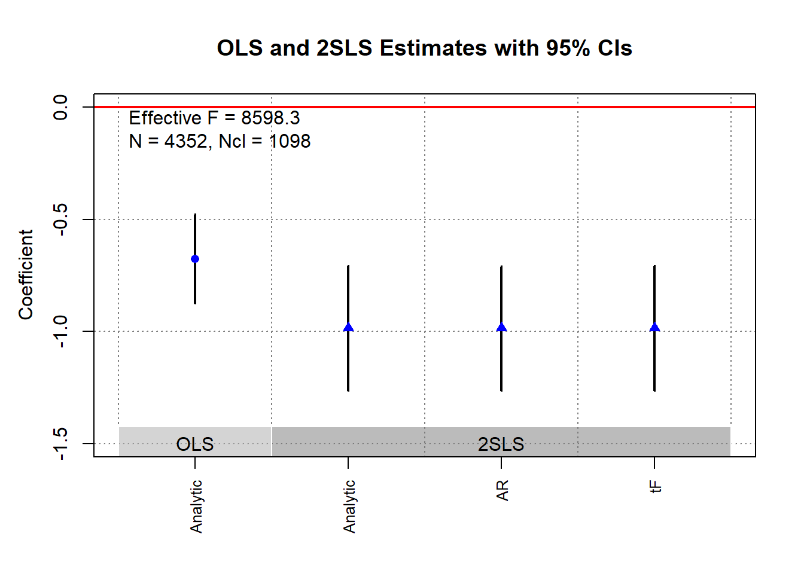
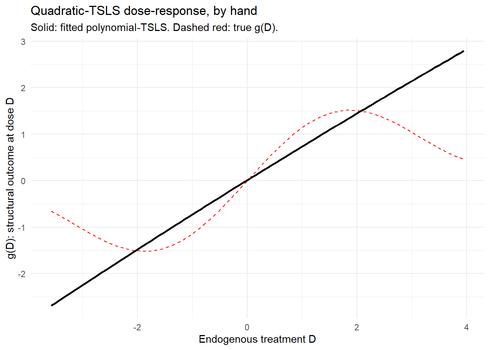
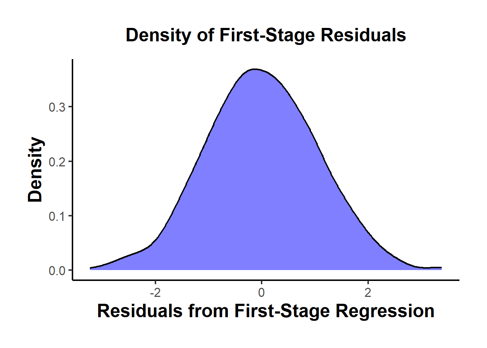
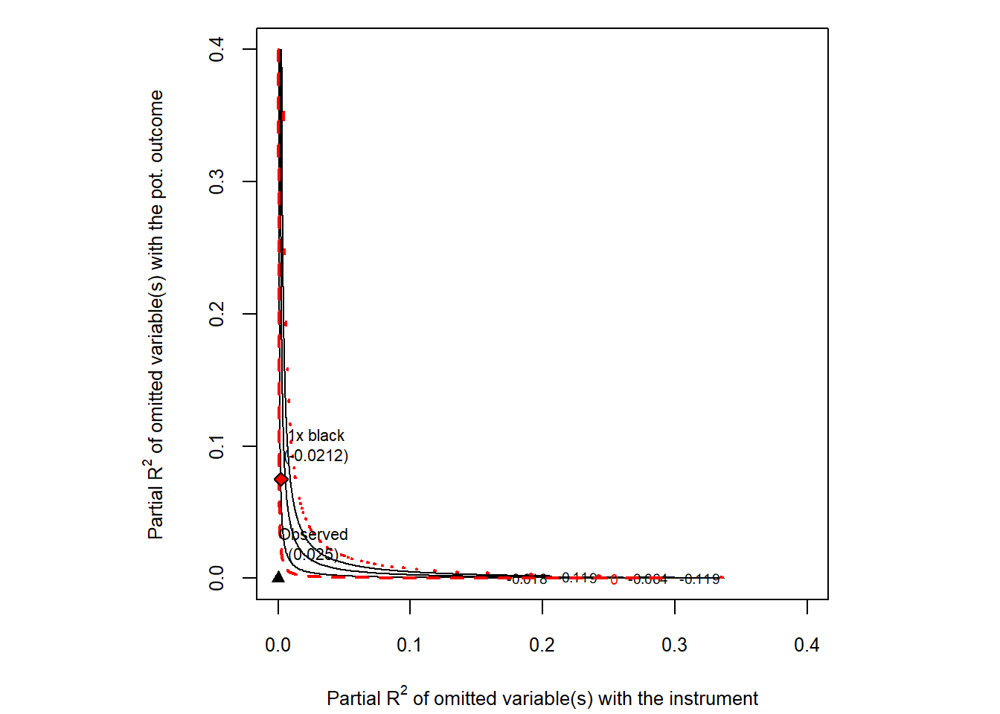

43 Instrumental Variables
In many empirical settings, we seek to estimate the causal effect of an explanatory variable \(X\) on an outcome variable \(Y\). A common starting point is the Ordinary Least Squares regression:
\[ Y = \beta_0 + \beta_1 X + \varepsilon. \]
For OLS to provide an unbiased and consistent estimate of \(\beta_1\), the explanatory variable \(X\) must satisfy the exogeneity condition:
\[ \mathbb{E}[\varepsilon \mid X] = 0. \]
However, when \(X\) is correlated with the error term \(\varepsilon\), this assumption is violated, leading to endogeneity. As a result, the OLS estimator is biased and inconsistent. Common causes of endogeneity include:
- Omitted Variable Bias (OVB): When a relevant variable is omitted from the regression, leading to correlation between \(X\) and \(\varepsilon\).
- Simultaneity: When \(X\) and \(Y\) are jointly determined, such as in supply-and-demand models.
- Measurement Error: Errors in measuring \(X\) introduce bias in estimation.
- Attenuation Bias in Errors-in-Variables: measurement error in the independent variable leads to an underestimate of the true effect (biasing the coefficient toward zero).
Instrumental Variables (IV) estimation addresses endogeneity by introducing an instrument \(Z\) that affects \(Y\) only through \(X\). Similar to RCT, we try to introduce randomization (random assignment to treatment) to our treatment variable by using only variation in the instrument.
Logic of using an instrument:
Use only exogenous variation to see the variation in treatment (try to exclude all endogenous variation in the treatment)
Use only exogenous variation to see the variation in outcome (try to exclude all endogenous variation in the outcome)
See the relationship between treatment and outcome in terms of residual variations that are exogenous to omitted variables.
For an instrument \(Z\) to be valid, it must satisfy two conditions:
Relevance Condition: The instrument \(Z\) must be correlated with the endogenous variable \(X\): \[ \text{Cov}(Z, X) \neq 0. \]
Exogeneity Condition (Exclusion Restriction): The instrument \(Z\) must be uncorrelated with the error term \(\varepsilon\) and affect \(Y\) only through \(X\): \[ \text{Cov}(Z, \varepsilon) = 0. \]
These conditions ensure that \(Z\) provides exogenous variation in \(X\), allowing us to isolate the causal effect of \(X\) on \(Y\). Random assignment of \(Z\) helps ensure exogeneity, but we must also confirm that \(Z\) influences \(Y\) only through \(X\) to satisfy the exclusion restriction.
A note on weak instruments before we go further. Relevance is a quantitative requirement, not a binary one: a statistically significant first stage is not sufficient evidence that the instrument is strong enough. Even a mildly weak instrument can produce 2SLS estimates that are severely biased toward OLS, with confidence intervals that undercover dramatically in finite samples.
The conventional rules of thumb you will encounter later in this chapter are:
- A first-stage F-statistic below 10 (the Staiger-Stock threshold) indicates a weak instrument and unreliable 2SLS estimates.
- F-statistics between 10 and 20 were historically considered adequate, but Lee et al. (2022) show the conventional critical values are too permissive in this range. Weak-instrument-robust inference (Anderson-Rubin, CLR) is preferable to reading the 2SLS t-statistic directly.
- F-statistics above 20 are a safer threshold under modern guidance.
- With multiple instruments (overidentified models), use the Montiel Olea-Pflueger effective F-statistic (Montiel Olea and Pflueger 2013) rather than the standard first-stage F. See the weak-instruments section later in this chapter for implementation details.
One point is worth internalizing now: weak-instrument bias does not vanish with larger sample sizes. It is a property of first-stage strength, not of sampling noise. When the instrument is weak, the remedies are weak-instrument-robust methods (Anderson-Rubin, LIML, CLR) or partial identification bounds, not a larger \(N\).
It is worth a brief detour through the history, because the trajectory of the IV idea explains a great deal about how the method is used today. The technique dates back to early econometric work in the 1920s and 1930s, when researchers grappling with simultaneous-equations models needed a way to disentangle systems in which prices and quantities, or any pair of jointly determined variables, were chasing each other. One of the earliest applications was Wright (1928)’s study of supply and demand for pig iron, an exemplar that would resurface a generation later in the Cowles Commission programme on identification. For decades thereafter IV remained a specialist’s tool, used mostly in macroeconomics and demand estimation.
The method’s modern centrality dates from the credibility revolution of the 1990s and 2000s, which reframed identification as a research-design problem rather than a modelling one. Angrist and Imbens (1991)’s use of quarter-of-birth as an instrument for years of schooling is the canonical example: a clever, almost incidental source of variation that arguably has no business affecting earnings except through its effect on education. That paper, along with a wave of similar designs, repositioned IV as a workhorse for applied research in economics, political science, and epidemiology, wherever a credible exogenous shock to the variable of interest could be located in nature, in policy, or in institutional accident.
43.1 Challenges with Instrumental Variables
While IVs can provide a solution to endogeneity, the practical difficulties cluster into three families: assumption failures (an exclusion restriction that does not actually hold, or an instrument that is too weak to identify anything reliably), interpretation traps (the LATE applies only to compliers, not to the population the reader probably has in mind), and design hygiene (the same instrument used many times across literatures eventually becomes implausible). In any given application, the exclusion restriction and weak-instrument concerns are usually the ones that decide whether the analysis is publishable, but each of the points below has historically been the issue that broke a published result.
Exclusion-restriction violations. If the instrument \(Z\) affects \(Y\) through any channel other than \(X\), the IV estimate is biased. The bias is not signed in general: a backdoor channel that pushes \(Y\) in the same direction as the treatment makes IV overstate the effect, while a channel that pushes the other way makes IV understate it. The exclusion restriction is fundamentally untestable, so the discipline here is to argue it explicitly from institutional knowledge and to probe it with falsification tests on placebo outcomes. The aggregate evidence suggests the problem is not rare: replicating 67 IV papers from leading political-science journals, Lal et al. (2024) find that 2SLS estimates are systematically larger in magnitude than their OLS counterparts, and that the gap widens as the instrument weakens, a pattern more easily explained by exclusion or unconfoundedness failures than by a genuinely different complier effect.
Repeated use of instruments. Common instruments such as weather, distance to a regulator, or sweeping policy changes can be invalidated by their widespread application across studies: an instrument that has been shown to predict many outcomes is one that almost certainly violates the exclusion restriction for at least some of them. The canonical illustration is Mellon (2025), who reviews 289 social-science studies using weather as an instrument and catalogues 194 distinct variables that prior work has linked to weather, each one a candidate backdoor channel for every other weather-IV study. Sensitivity analysis in that paper shows that the magnitude of many of these violations is enough to overturn the published result. The defensive moves are to argue for the exclusion in your specific setting rather than relying on the literature’s collective use of the instrument, to use formal tests for invalid instruments (Hausman-like tests, overidentification tests, the Conley-Hansen-Rossi plausibly exogenous bounds (Conley et al. 2012)), and to run sensitivity analyses across the modest violations of exclusion that the most plausible alternative channels would imply.
Heterogeneous treatment effects and the LATE. The Local Average Treatment Effect estimated by IV applies only to compliers: units whose treatment status is shifted by the instrument. The complier subpopulation is rarely the one a policymaker has in mind, and it is unobservable to the analyst, so the estimate corresponds to a weighted average of unit-level effects with weights the analyst cannot directly inspect. When the treatment effect is constant across units, the LATE coincides with the ATE and the distinction does not matter; when effects are heterogeneous, the LATE can be substantively different from the ATE, and reporting the LATE without flagging the distinction misleads readers.
Weak instruments. Insufficient correlation between the instrument and the endogenous regressor produces unstable 2SLS estimates with confidence intervals that undercover the truth in finite samples. The standard test is the first-stage F-statistic, with thresholds discussed at length in the weak-instruments section later in this chapter; the standard remedies are weak-instrument-robust methods (Anderson-Rubin, CLR, LIML) or partial-identification approaches when robust inference is too imprecise to be useful.
Invalid instruments more broadly. Even when the first stage is strong and the instrument has not been used elsewhere, it can fail the exogeneity assumption for institution-specific reasons that the analyst missed. The best safeguard is a careful institutional argument paired with placebo and balance tests: an instrument that predicts pre-treatment outcomes or covariates that should be unaffected by it is an instrument that has not survived scrutiny.
Interpretation mistakes. Even when everything else is correct, the IV result identifies only the effect for the marginal units whose treatment status is shifted by the instrument. A policy that rolls out a treatment to a different subpopulation will not, in general, have the LATE-implied effect. Reporting the estimand explicitly, distinguishing it from the ATE and from the ATT, and discussing the share of compliers in the sample are the disciplines that keep the interpretation honest.
43.2 Econometric Foundations: Conditional Expectations, Projection, and Endogeneity
Before turning to the mechanics of instrumental variable estimation, it is worth establishing the conceptual scaffolding on which the entire method rests. Instrumental variables exist to solve a single problem: the parameter an economist wants to learn about is not, in general, the parameter that ordinary least squares recovers. Making that statement precise requires three ingredients, namely a clear definition of what it means for a parameter to be identified, a careful distinction between the conditional expectation function and the linear projection that least squares actually estimates, and a catalogue of the reasons the two can diverge. Once those pieces are in place, the role of an instrument follows almost mechanically. This section develops that foundation, and in doing so turns the relevance and exogeneity conditions stated above into the moment and rank conditions that the rest of the chapter builds on. The exposition follows the framework in Angrist and Pischke (2009) and the moment based development of identification associated with Hansen (1982).
43.2.1 Identification
A population parameter, written generically as \(\Theta\), is some functional of the distribution \(F\) of the observable data, say \(\Theta = g(F)\) for \(F\) in a class of admissible distributions \(\mathcal{F}\). The parameter is said to be identified when it both exists and is unique for every \(F \in \mathcal{F}\). Identification is a statement about the population, not about any particular sample. It asks whether, given perfect knowledge of the joint distribution of the observables, the parameter is pinned down at all. No amount of data can rescue a parameter that is not identified, and identification therefore logically precedes estimation.
Two examples make the idea concrete. The conditional mean \(E(Y \mid X = x)\) is identified whenever \(E|Y| < \infty\), because the distribution of the data determines it directly. The coefficients of a linear projection, introduced below, are identified as long as the second moment matrix \(E(\mathbf{X}'\mathbf{X})\) is nonsingular. In both cases the parameter is written as a function of moments of the observable random variables, and the equality sign in \(\Theta = g(F)\) carries the dual meaning of existence and uniqueness.
Consider the linear model \(Y = \beta_0 + \beta_1 X + U\). Suppose we impose the identification assumption that the error has conditional mean zero, \(E(U \mid X) = 0\), so that the conditional expectation is itself linear, \(E(Y \mid X) = \beta_0 + \beta_1 X\). The intercept is then identified as \(\beta_0 = E(Y \mid X = 0)\). The slope follows from the covariance,
\[ \text{Cov}(Y, X) = \text{Cov}(\beta_0, X) + \beta_1 \text{Var}(X) + \text{Cov}(U, X) = \beta_1 \text{Var}(X), \]
so that \(\beta_1 = \text{Cov}(Y, X) / \text{Var}(X)\) provided the additional condition \(\text{Var}(X) \neq 0\) holds, that is, provided \(X\) is not degenerate. Identification thus rests on two pieces: a stochastic restriction on the error and a support condition on the regressor. The first is the substantive assumption that may fail; the second is usually innocuous but still necessary.
It is useful to keep in mind a hierarchy of restrictions on the relationship between a regressor and an error term, ordered from weakest to strongest. The weakest is zero covariance, \(\text{Cov}(X, U) = 0\), which is equivalent to \(E(XU) = E(X)E(U)\) and is exactly what the linear projection imposes. Mean independence, \(E(U \mid X) = E(U)\), is stronger because it implies \(E(g(X) U) = E(g(X)) E(U)\) for any function \(g\), not merely for \(g\) linear. Full independence, \(U \perp X\), is strongest of all and implies \(E(g(X) h(U)) = E(g(X)) E(h(U))\) for arbitrary \(g\) and \(h\). The distinctions matter because different estimators and different interpretations require different rungs of this ladder, and much of the difficulty in applied work lies in arguing that a given rung is actually reached.
43.2.2 The Conditional Expectation Function
Most economic questions are questions about a conditional expectation function, written compactly as
\[ E(Y \mid W, \mathbf{C}), \]
where \(Y\) is the outcome, \(W\) is the variable of primary interest, and \(\mathbf{C}\) is a vector of control variables, some of which may be unobserved. We focus on the conditional expectation rather than the full conditional distribution \(F_{Y \mid W, \mathbf{C}}\) because the conditional mean is a single, tractable summary of the relationship that requires fewer assumptions to estimate credibly. Modeling the entire conditional distribution demands considerably more structure and tends to buy less internal validity in return, though conditional quantiles and other features of the distribution are sometimes of independent interest.
The conditional expectation function can be read in three quite different ways, and the reading determines which assumptions are required and what conclusions are licensed. Take the familiar wage equation,
\[ \ln(\text{wage}) = \beta_0 + \beta_1 \, \text{educ} + \beta_2 \, \text{exp} + \beta_3 \, \text{married} + U, \]
where \(U\) collects all unobserved factors affecting the wage offer. If we treat this as a structural or causal model, then the coefficients carry behavioral meaning and the equation should in principle be derivable from an underlying optimization problem; the cost is a heavy set of assumptions and restrictions needed to justify that derivation. If we treat it as a conditional expectation function, then the relevant worry is whether \(E(U \mid \mathbf{X}) = 0\) actually holds, since unobserved factors lurking in \(U\) may well be correlated with schooling or experience. If we treat it merely as a linear projection, then there is nothing to worry about at all, because the projection always exists, but the interpretation becomes purely descriptive rather than causal.
Specifying a conditional expectation also requires specifying the population of interest, since the same conditioning variables can describe very different populations. A poorly chosen population is one in which the variable of interest exhibits little or no variation, leaving nothing for the data to identify.
A model for the conditional expectation can be classified along several dimensions. A specification such as \(E(Y \mid X_1, X_2) = \beta_0 + \beta_1 X_1 + \beta_2 X_2\) is linear in the variables, because it is a linear combination of \((1, X_1, X_2)\), and adding a term like \(\beta_3 X_2^2\) or \(\beta_3 X_1 X_2\) would violate linearity in variables while remaining linear in parameters. It is linear in the parameters because it is a linear combination of \((\beta_0, \beta_1, \beta_2)\), and a term like \(X_1^{\gamma}\) would violate that. It is parametric because it involves a finite number of unknown parameters rather than an unknown function; replacing \(\beta_2 X_2\) with an unknown \(g(X_2)\) would make it nonparametric. A semiparametric model combines a finite dimensional parameter of interest with an infinite dimensional nuisance component. These are modeling choices rather than properties of the data: the very same equation \(Y = \mathbf{X}\boldsymbol{\beta} + U\) can be approached as parametric, semiparametric, or nonparametric depending on what one is willing to assume.
43.2.3 Linear Projection
Most of the examples above quietly imposed linearity on the conditional expectation function, an assumption that need not hold. The linear projection provides a way to obtain an estimable equation without that assumption, at the price of a weaker interpretation. Let \(\mathbf{X} = (X_1, \dots, X_k)\) be a \(1 \times k\) vector whose \(k \times k\) variance matrix is positive definite. The linear projection of \(Y\) on a constant and \(\mathbf{X}\) then exists and is unique,
\[ L(Y \mid 1, \mathbf{X}) = \gamma_0 + \gamma_1 X_1 + \dots + \gamma_k X_k, \]
with slope coefficients and intercept defined by
\[ \boldsymbol{\gamma} = [\text{Var}(\mathbf{X})]^{-1} \text{Cov}(\mathbf{X}, Y), \qquad \gamma_0 = E(Y) - E(\mathbf{X}) \boldsymbol{\gamma}. \]
These objects are functions of population moments and are therefore identified and estimable. Equivalently, we may write \(Y = \gamma_0 + \gamma_1 X_1 + \dots + \gamma_k X_k + U\), where the projection error satisfies, by construction, \(E(U) = 0\) and \(\text{Cov}(X_j, U) = 0\) for every \(j\). It is essential to recognize what these properties do not say. Zero covariance does not imply that \(U\) is independent of \(\mathbf{X}\), nor even that it is mean independent. The projection error can depend on the regressors in arbitrarily rich ways so long as it is linearly uncorrelated with each of them.
The linear projection has several properties that explain why it is the natural object of least squares estimation. First, the projection coefficient is the minimum mean square linear predictor, since it solves \(\min_{b_0, \mathbf{b}} E[(Y - b_0 - \mathbf{X}\mathbf{b})^2]\). Second, the conditional expectation function is the minimum mean square predictor among all functions, since it solves \(\min_{g} E[(Y - g(\mathbf{X}))^2]\). Third, when the conditional expectation happens to be linear in \(\mathbf{X}\), the projection coincides exactly with the conditional expectation. Fourth, and most usefully, even when the conditional expectation is not linear, the projection is the best linear approximation to it in the mean square sense.
The last claim deserves a short proof, because it is what justifies reporting a linear regression even when one does not believe the truth is linear. The best linear approximation to the conditional expectation solves \(\min_{b_0, \mathbf{b}} E[(E(Y \mid \mathbf{X}) - b_0 - \mathbf{X}\mathbf{b})^2]\), whereas the projection solves \(\min_{b_0, \mathbf{b}} E[(Y - b_0 - \mathbf{X}\mathbf{b})^2]\). For any \(b_0\) and \(\mathbf{b}\), add and subtract the conditional expectation inside the square,
\[ \begin{aligned} E[(Y - b_0 - \mathbf{X}\mathbf{b})^2] &= E[(Y - E(Y \mid \mathbf{X}))^2] + E[(E(Y \mid \mathbf{X}) - b_0 - \mathbf{X}\mathbf{b})^2] \\ &\quad + 2 E[(Y - E(Y \mid \mathbf{X}))(E(Y \mid \mathbf{X}) - b_0 - \mathbf{X}\mathbf{b})]. \end{aligned} \]
The cross term vanishes by the law of iterated expectations, since conditioning on \(\mathbf{X}\) leaves \(E(Y \mid \mathbf{X}) - b_0 - \mathbf{X}\mathbf{b}\) fixed while \(E(Y - E(Y \mid \mathbf{X}) \mid \mathbf{X}) = 0\). Because the first term does not depend on the choice of \(b_0\) and \(\mathbf{b}\), the two minimization problems share the same argument minimizer,
\[ \arg\min_{b_0, \mathbf{b}} E[(Y - b_0 - \mathbf{X}\mathbf{b})^2] = \arg\min_{b_0, \mathbf{b}} E[(E(Y \mid \mathbf{X}) - b_0 - \mathbf{X}\mathbf{b})^2]. \]
The projection coefficient is therefore the best mean square linear approximation to the conditional expectation function, which is precisely why least squares remains informative as a descriptive device even when the causal model is nonlinear.
The decomposition is easy to see in a small simulation. The conditional expectation below is genuinely nonlinear in \(x\), yet the population projection coefficient recovered by least squares matches the slope obtained by regressing the true conditional mean on \(x\), confirming that the projection is approximating \(E(Y \mid X)\) rather than \(Y\) itself.
set.seed(123)
n <- 100000
x <- runif(n, -2, 2)
cef <- 1 + 0.8 * x + 0.5 * x^2 # nonlinear conditional expectation
y <- cef + rnorm(n) # outcome adds mean-zero noise
# projection of the outcome on (1, x)
coef_outcome <- coef(lm(y ~ x))["x"]
# projection of the conditional expectation on (1, x)
coef_cef <- coef(lm(cef ~ x))["x"]
round(c(projection_on_Y = coef_outcome,
projection_on_CEF = coef_cef), 4)
#> projection_on_Y.x projection_on_CEF.x
#> 0.7979 0.8005The two slopes agree up to sampling noise, illustrating that the linear projection of \(Y\) is the best linear approximation to the conditional expectation function and not merely a summary of the raw outcome.
43.2.4 Endogeneity in the Linear Model
Now suppose the object of interest is genuinely structural. Write the population model as linear in parameters,
\[ Y = \beta_0 + \beta_1 X_1 + \dots + \beta_k X_k + U = \mathbf{X}\boldsymbol{\beta} + U, \]
where \(\mathbf{X}\) stacks a constant with the regressors and the \(\beta_j\) are the behavioral parameters we wish to estimate. Ordinary least squares is consistent for these parameters when the orthogonality condition \(E(\mathbf{X}' U) = 0\) holds. A regressor \(X_j\) is called endogenous precisely when this condition fails through \(\text{Cov}(X_j, U) \neq 0\). When that happens, the structural coefficient \(\beta_j\) cannot coincide with the linear projection coefficient, even though the latter always exists and is always estimable. This is the formal version of the warning that correlation, which the projection captures, is not the same as causation, which is what the structural coefficient is meant to represent.
There are three classic sources of endogeneity, each of which recurs throughout applied work and each of which motivates the instrumental variable solution. The first is omitted variables, where a determinant of the outcome that is correlated with an included regressor is left out of the equation, often because it is unobservable. The second is measurement error, where the analyst would like to study the effect of a true variable \(X_k^{*}\) but observes only an imperfect proxy \(X_k\), or would like to explain a true outcome \(Y^{*}\) but observes only a noisy measure \(Y\). The third is simultaneity, where outcome and regressor are jointly determined, as in a market where price depends on quantity demanded while quantity demanded depends on price; this case is central to general equilibrium and supply and demand systems and was the setting in which instrumental variables were first developed (Wright 1928).
The omitted variable case repays a careful look because it shows exactly how the structural parameter and the projection parameter separate. Suppose the true causal model is
\[ Y = \beta_0 + \beta_1 X + \gamma Q + V, \qquad E(V \mid X, Q) = 0, \]
so that \(\beta_1\) is the effect of \(X\) on \(Y\) holding the omitted variable \(Q\) fixed. If \(Q\) is dropped, the working error becomes \(U = \gamma Q + V\), and the orthogonality of \(X\) with \(U\) reduces to
\[ \text{Cov}(X, U) = \gamma \, \text{Cov}(X, Q), \]
which is nonzero whenever \(X\) is correlated with \(Q\) and \(Q\) genuinely affects \(Y\), that is, \(\gamma \neq 0\). To see what least squares then estimates, project the omitted variable on the included regressor, \(Q = \delta_0 + \delta_1 X + R\), with \(\delta_1 = \text{Cov}(X, Q)/\text{Var}(X)\) and \(\text{Cov}(X, R) = 0\) by construction. Substituting,
\[ Y = (\beta_0 + \gamma \delta_0) + (\beta_1 + \gamma \delta_1) X + (\gamma R + V), \]
and the composite error \(\gamma R + V\) now satisfies both projection conditions. Least squares is therefore consistent for the projection slope \(\beta_1 + \gamma \delta_1\), so that
\[ \text{plim}\, \hat{\beta}_1 = \beta_1 + \gamma \frac{\text{Cov}(X, Q)}{\text{Var}(X)}. \]
The inconsistency, \(\text{plim}\, \hat{\beta}_1 - \beta_1 = \gamma \, \text{Cov}(X, Q)/\text{Var}(X)\), is the omitted variable bias, and its sign is the product of two pieces: the direction of the correlation between the included regressor and the omitted variable, and the direction of the omitted variable’s effect on the outcome. Both must be nonzero and their signs jointly determine whether least squares overstates or understates the causal effect.
43.2.5 Instrumental Variables and the Method of Moments
Return to the simplest endogenous model, \(Y = \beta_0 + \beta_1 X + U\) with \(\text{Cov}(X, U) \neq 0\). The identification problem is that the observed covariation between \(X\) and \(Y\) blends two distinct sources of variation,
\[ \text{Cov}(X, Y) = \beta_1 \text{Var}(X) + \text{Cov}(X, U), \]
so that the projection slope \(\text{Cov}(X, Y)/\text{Var}(X)\) equals \(\beta_1\) plus a bias term \(\text{Cov}(X, U)/\text{Var}(X)\) that does not vanish. Variation in \(X\) that is correlated with \(U\) contaminates the comparison, and no reweighting of the existing data can separate the two.
The instrumental variable solution is to bring in a new source of variation through an instrument \(Z\) that satisfies two conditions. The relevance condition, \(\text{Cov}(Z, X) \neq 0\), requires that the instrument actually move the endogenous regressor and is testable from the data. The exogeneity condition, or exclusion restriction, \(\text{Cov}(Z, U) = 0\), requires that the instrument be uncorrelated with the structural error and is fundamentally a matter of judgment that cannot be verified directly. The canonical illustration is the use of quarter of birth as an instrument for years of schooling in studies of the returns to education (Angrist and Krueger 1991), though later work questioning the strength of the instrument and documenting systematic differences in family background across birth seasons is a reminder that the relevance and exclusion conditions are never beyond challenge (Bound et al. 1995; Buckles and Hungerman 2013).
To see why a valid instrument solves the problem, project the endogenous regressor on the instrument, \(X = \delta_0 + \theta Z + R\), splitting \(X\) into an exogenous part driven by \(Z\) and a residual part \(R\) with \(E(R) = 0\) and \(\text{Cov}(Z, R) = 0\). The endogeneity of \(X\) then lives entirely in the residual,
\[ \text{Cov}(X, U) = \theta \, \text{Cov}(Z, U) + \text{Cov}(R, U) = \text{Cov}(R, U), \]
because the instrument is exogenous. Using only the \(Z\) driven part of \(X\) therefore strips out the contaminated variation and isolates the causal effect.
The argument generalizes cleanly to the multiple regressor case and connects directly to the method of moments. Write the model as \(Y = \mathbf{X}\boldsymbol{\beta} + U\) with a single endogenous regressor \(X_k\), so that \(\text{Cov}(X_k, U) \neq 0\) while the remaining regressors are exogenous. It is worth stressing that there is no such thing as an OLS model as opposed to an IV model; least squares and instrumental variables are competing estimation strategies for the same underlying linear model. Given an external instrument \(Z_k\) for \(X_k\), build the instrument vector \(\mathbf{Z} = (1, X_2, \dots, X_{k-1}, Z_k)\) alongside the regressor vector \(\mathbf{X} = (1, X_2, \dots, X_{k-1}, X_k)\), both \(1 \times k\), in which every exogenous regressor instruments for itself. Two assumptions then drive identification. Exogeneity becomes \(E(\mathbf{Z}' U) = 0\). The rank condition, which replaces simple relevance in the vector setting, is \(\text{rank}\,[E(\mathbf{Z}' \mathbf{X})] = k\), equivalently the requirement that \(E(\mathbf{Z}' \mathbf{X})\) be invertible.
The exogeneity assumption is best understood as a moment condition. Substituting the model,
\[ E(\mathbf{Z}' U) = 0 \quad \Longleftrightarrow \quad E(\mathbf{Z}'(Y - \mathbf{X}\boldsymbol{\beta})) = 0, \]
expresses the expectation of a known function of observables and unknown parameters as equal to zero. Moment conditions of exactly this form are the foundation of generalized method of moments estimation (Hansen 1982), and the overidentification tests associated with it descend from the early work on testing instrument validity in simultaneous systems (Sargan 1958). The rank condition is the matrix counterpart of relevance combined with the absence of perfect multicollinearity. Concretely, assuming no perfect collinearity among \(1, X_2, \dots, X_{k-1}\), the rank condition holds if and only if the coefficient \(\theta\) on the instrument in the first stage projection
\[ L(X_k \mid 1, X_2, \dots, X_{k-1}, Z_k) = \delta_1 + \delta_2 X_2 + \dots + \delta_{k-1} X_{k-1} + \theta Z_k \]
is nonzero. In words, after partialling out the other exogenous regressors, the instrument must still be correlated with the endogenous variable, and because this is a statement about a regression coefficient it is testable.
Under exogeneity and the rank condition the instrument identifies the structural parameter. Premultiply the model by \(\mathbf{Z}'\) and take expectations,
\[ E(\mathbf{Z}' Y) = E(\mathbf{Z}' \mathbf{X}) \boldsymbol{\beta} + E(\mathbf{Z}' U) = E(\mathbf{Z}' \mathbf{X}) \boldsymbol{\beta}, \]
and invert the now nonsingular cross moment matrix to obtain
\[ \boldsymbol{\beta} = [E(\mathbf{Z}' \mathbf{X})]^{-1} E(\mathbf{Z}' Y). \]
The sample analogue replaces population moments with their empirical counterparts, yielding the instrumental variable estimator
\[ \hat{\boldsymbol{\beta}}_{IV} = (\mathbf{Z}' \mathbf{X})^{-1} \mathbf{Z}' \mathbf{Y} = \boldsymbol{\beta} + (\mathbf{Z}' \mathbf{X})^{-1} \mathbf{Z}' \mathbf{U}. \]
Consistency follows because the second term converges to zero in probability under exogeneity, while the rank condition guarantees that the inverse exists in large samples. The interpretation of the resulting estimand, the local average treatment effect that applies to the compliers whose treatment is shifted by the instrument, is developed in the framework that follows and in the foundational treatment of Imbens and Angrist (1994). A practical caution carries over from the structural setting: if any of the variables treated as controls are themselves endogenous, the resulting inconsistency contaminates every coefficient in \(\hat{\boldsymbol{\beta}}_{IV}\), not merely the coefficient on the variable for which an instrument was sought.
The same logic can be visualized in a short simulation that contrasts the inconsistent least squares estimator with the consistent instrumental variable estimator when the regressor is endogenous and a valid instrument is available.
set.seed(456)
n <- 200000
z <- rnorm(n) # exogenous instrument
u <- rnorm(n) # structural error
x <- 0.7 * z + u + rnorm(n) # x is correlated with u (endogenous)
beta_true <- 2
y <- 1 + beta_true * x + u # u enters both x and y
ols <- coef(lm(y ~ x))["x"] # biased by Cov(x, u)
# IV via the ratio of covariances in the just-identified case
iv <- cov(z, y) / cov(z, x)
round(c(true = beta_true, ols = ols, iv = iv), 4)
#> true ols.x iv
#> 2.0000 2.4010 1.9983Least squares is pulled away from the true value of two by the correlation between \(x\) and the error, whereas the instrumental variable estimator, formed here as the ratio \(\text{Cov}(Z, Y)/\text{Cov}(Z, X)\) in the just identified case, recovers the structural parameter up to sampling noise. This is the payoff of the entire construction: by importing exogenous variation through a valid instrument, the method of moments identifies the structural coefficient that ordinary least squares cannot.
43.3 Framework for Instrumental Variables
We consider a binary treatment framework where:
\(D_i \sim Bernoulli(p)\) is a dummy treatment variable.
\((Y_{0i}, Y_{1i})\) are the potential outcomes under control and treatment.
The observed outcome is: \[ Y_i = Y_{0i} + (Y_{1i} - Y_{0i}) D_i. \]
-
We introduce an instrumental variable \(Z_i\) satisfying: \[ Z_i \perp (Y_{0i}, Y_{1i}, D_{0i}, D_{1i}). \]
- This means \(Z_i\) is independent of potential outcomes and potential treatment status.
- \(Z_i\) must also be correlated with \(D_i\) to satisfy the relevance condition.
43.3.1 Constant-Treatment-Effect Model
Under the constant treatment effect assumption (i.e., the treatment effect is the same for all individuals),
\[ \begin{aligned} Y_{0i} &= \alpha + \eta_i, \\ Y_{1i} - Y_{0i} &= \rho, \\ Y_i &= Y_{0i} + D_i (Y_{1i} - Y_{0i}) \\ &= \alpha + \eta_i + D_i \rho \\ &= \alpha + \rho D_i + \eta_i. \end{aligned} \]
where:
- \(\eta_i\) captures individual-level heterogeneity.
- \(\rho\) is the constant treatment effect.
The problem with OLS estimation is that \(D_i\) may be correlated with \(\eta_i\), leading to endogeneity bias.
43.3.2 Instrumental Variable Solution
A valid instrument \(Z_i\) allows us to estimate the causal effect \(\rho\) via:
\[ \begin{aligned} \rho &= \frac{\text{Cov}(Y_i, Z_i)}{\text{Cov}(D_i, Z_i)} \\ &= \frac{\text{Cov}(Y_i, Z_i) / V(Z_i) }{\text{Cov}(D_i, Z_i) / V(Z_i)} \\ &= \frac{\text{Reduced form estimate}}{\text{First-stage estimate}} \\ &= \frac{E[Y_i |Z_i = 1] - E[Y_i | Z_i = 0]}{E[D_i |Z_i = 1] - E[D_i | Z_i = 0 ]}. \end{aligned} \]
This ratio measures the treatment effect only if \(Z_i\) is a valid instrument.
43.3.3 Heterogeneous Treatment Effects and the LATE Framework
In a more general framework where treatment effects vary across individuals,
Define potential outcomes as: \[ Y_i(d,z) = \text{outcome for unit } i \text{ given } D_i = d, Z_i = z. \]
-
Define treatment status based on \(Z_i\): \[ D_i = D_{0i} + Z_i (D_{1i} - D_{0i}). \]
where:
- \(D_{1i}\) is the treatment status when \(Z_i = 1\).
- \(D_{0i}\) is the treatment status when \(Z_i = 0\).
- \(D_{1i} - D_{0i}\) is the causal effect of \(Z_i\) on \(D_i\).
43.3.4 Assumptions for LATE Identification
43.3.4.1 Independence (Instrument Randomization)
The instrument must be as good as randomly assigned:
\[ [\{Y_i(d,z); \forall d, z \}, D_{1i}, D_{0i} ] \perp Z_i. \]
This ensures that \(Z_i\) is uncorrelated with potential outcomes and potential treatment status.
This assumption let the first-stage equation be the average causal effect of \(Z_i\) on \(D_i\)
\[ \begin{aligned} E[D_i |Z_i = 1] - E[D_i | Z_i = 0] &= E[D_{1i} |Z_i = 1] - E[D_{0i} |Z_i = 0] \\ &= E[D_{1i} - D_{0i}] \end{aligned} \]
This assumption also is sufficient for a causal interpretation of the reduced form, where we see the effect of the instrument \(Z_i\) on the outcome \(Y_i\):
\[ E[Y_i |Z_i = 1 ] - E[Y_i|Z_i = 0] = E[Y_i (D_{1i}, Z_i = 1) - Y_i (D_{0i} , Z_i = 0)] \]
43.3.4.2 Exclusion Restriction
This is also known as the existence of the instrument assumption (Imbens and Angrist 1994). The instrument should only affect \(Y_i\) through \(D_i\) (i.e., the treatment \(D_i\) fully mediates the effect of \(Z_i\) on \(Y_i\)):
\[ \begin{aligned} Y_{1i} &= Y_i (1,1) = Y_i (1,0)\\ Y_{0i} &= Y_i (0,1) = Y_i (0,0) \end{aligned} \]
Under this assumption (and assume \(Y_{1i}, Y_{0i}\) already satisfy the independence assumption), the observed outcome \(Y_i\) can be rewritten as:
\[ \begin{aligned} Y_i &= Y_i (0, Z_i) + [Y_i (1 , Z_i) - Y_i (0, Z_i)] D_i \\ &= Y_{0i} + (Y_{1i} - Y_{0i}) D_i. \end{aligned} \]
This assumption let us go from reduced-form causal effects to treatment effects (Angrist and Imbens 1995).
43.3.4.3 Monotonicity (No Defiers)
We assume that \(Z_i\) affects \(D_i\) in a monotonic way:
\[ D_{1i} \geq D_{0i}, \quad \forall i. \]
- This assumption lets us assume that there is a first stage, in which we examine the proportion of the population that \(D_i\) is driven by \(Z_i\). It implies that \(Z_i\) only moves individuals toward treatment, but never away. This rules out “defiers” (i.e., individuals who would have taken the treatment when not assigned but refuse when assigned).
- This assumption is used to solve the problem of the shifts between participation status back to non-participation status.
Alternatively, one can solve the same problem by assuming constant (homogeneous) treatment effect (Imbens and Angrist 1994), but this is rather restrictive.
A third solution is the assumption that there exists a value of the instrument, where the probability of participation conditional on that value is 0 Angrist and Imbens (1991).
Under monotonicity,
\[ \begin{aligned} E[D_{1i} - D_{0i} ] = P[D_{1i} > D_{0i}]. \end{aligned} \]
43.3.5 Local Average Treatment Effect Theorem
Given Independence, Exclusion, and Monotonicity, we obtain the LATE result (Angrist and Pischke 2009, 4.4.1):
\[ \begin{aligned} \frac{E[Y_i | Z_i = 1] - E[Y_i | Z_i = 0]}{E[D_i |Z_i = 1] - E[D_i |Z_i = 0]} = E[Y_{1i} - Y_{0i} | D_{1i} > D_{0i}]. \end{aligned} \]
This states that the IV estimator recovers the causal effect only for compliers, units whose treatment status changes due to \(Z_i\).
IV only identifies treatment effects for switchers (compliers); Table 43.1 defines the standard compliance types.
| Switcher Type | Compliance Type | Definition |
|---|---|---|
| Switchers | Compliers | \(D_{1i} > D_{0i}\) (take treatment if \(Z_i = 1\), not if \(Z_i = 0\)) |
| Non-switchers | Always-Takers | \(D_{1i} = D_{0i} = 1\) (always take treatment) |
| Non-switchers | Never-Takers | \(D_{1i} = D_{0i} = 0\) (never take treatment) |
- IV estimates nothing for always-takers and never-takers since their treatment status is unaffected by \(Z_i\) (Similar to the fixed-effects models).
43.3.6 IV in Randomized Trials (Noncompliance)
- In randomized trials, if compliance is imperfect (i.e., compliance is voluntary), where individuals in the treatment group will not always take the treatment (e.g., selection bias), intention-to-treat (ITT) estimates are valid but contaminated by noncompliance.
- IV estimation using random assignment (\(Z_i\)) as an instrument for actual treatment received (\(D_i\)) recovers the LATE.
\[ \begin{aligned} \frac{E[Y_i \mid Z_i = 1] - E[Y_i \mid Z_i = 0]}{E[D_i \mid Z_i = 1] - E[D_i \mid Z_i = 0]} \;=\; \frac{\text{Intent-to-Treat Effect}}{\text{Compliance Rate}} \;=\; E[Y_{1i} - Y_{0i} \mid \text{compliers}]. \end{aligned} \]
The Wald-form denominator is the difference in treatment uptake between the two instrument arms, which equals the share of compliers under monotonicity. Some treatments of the formula write only \(E[D_i \mid Z_i = 1]\) in the denominator; that simplification is correct only under one-sided non-compliance (no always-takers), in which case \(E[D_i \mid Z_i = 0] = 0\). Under full compliance the LATE further coincides with the Average Treatment Effect on the Treated.
43.3.6.2 Pitfall: Controls and the Residualized Wald
The second common reason a hand-computed ratio disagrees with 2SLS output is that the IV regression includes controls or fixed effects while the manual ITT and first stage are computed as raw mean differences. With controls \(X\), 2SLS coincides with the residualized Wald,
\[ \hat\beta_{2SLS} = \frac{\widehat{\mathrm{Cov}}(\tilde Z, \tilde Y)}{\widehat{\mathrm{Cov}}(\tilde Z, \tilde D)}, \]
where tildes denote residuals after partialling out the constant and \(X\). The clean way to match 2SLS by hand is to take the ratio of the \(Z\) coefficient from \(\mathrm{lm}(Y \sim Z + X)\) to the \(Z\) coefficient from \(\mathrm{lm}(D \sim Z + X)\). The simulation below confirms this:
simulate_with_covariate <- function(N = 30000,
p_complier = 0.35,
p_always = 0.15,
tau_c = 2.0,
sigma = 1.0,
z_strength = 0.8) {
types <- sample(
c("C", "A", "N"),
size = N,
replace = TRUE,
prob = c(p_complier, p_always, 1 - p_complier - p_always)
)
X <- rnorm(N)
pZ <- 1 / (1 + exp(-z_strength * X)) # Z correlated with X
Z <- rbinom(N, 1, pZ)
D0 <- ifelse(types == "A", 1, 0)
D1 <- ifelse(types %in% c("A", "C"), 1, 0)
D <- ifelse(Z == 1, D1, D0)
U <- rnorm(N)
Y0 <- 1.0 + 1.0 * X + 1.3 * U + rnorm(N, sd = sigma)
tau <- ifelse(types == "C", tau_c, 0.0)
Y <- ifelse(D == 1, Y0 + tau, Y0)
data.frame(Y, D, Z, X)
}
df2 <- simulate_with_covariate()
w2 <- wald_late(df2) # naive Wald, ignores X
fs2 <- lm(D ~ Z + X, data = df2)
df2$Dhat <- fitted(fs2)
beta_2sls_X <- coef(lm(Y ~ Dhat + X, data = df2))[["Dhat"]]
# Residualized Wald
residualize <- function(v, Xmat) {
fit <- lm.fit(x = Xmat, y = v)
v - Xmat %*% fit$coefficients
}
Xmat <- cbind(1, df2$X)
Ztil <- as.numeric(residualize(df2$Z, Xmat))
Ytil <- as.numeric(residualize(df2$Y, Xmat))
Dtil <- as.numeric(residualize(df2$D, Xmat))
beta_resid_wald <- mean(Ztil * Ytil) / mean(Ztil * Dtil)
data.frame(
estimator = c(
"Naive Wald using group means (no X)",
"2SLS with X in both stages",
"Residualized Wald after partialling out X"
),
value = c(w2$LATE, beta_2sls_X, beta_resid_wald)
)
#> estimator value
#> 1 Naive Wald using group means (no X) 3.929947
#> 2 2SLS with X in both stages 1.908661
#> 3 Residualized Wald after partialling out X 1.908661The naive Wald is biased because \(Z\) is correlated with \(X\). The 2SLS and the residualized Wald agree numerically.
43.3.6.3 Debugging Checklist When a Manual Ratio Disagrees With 2SLS
- Confirm the denominator is the first-stage difference, not the takeup rate in the treated arm.
- Confirm both numerator and denominator are computed from the same specification: if 2SLS includes controls, fixed effects, or weights, the manual reduced-form and first-stage regressions must also include them. The ratio of the \(Z\) coefficients from \(\mathrm{lm}(Y \sim Z + X)\) and \(\mathrm{lm}(D \sim Z + X)\) matches 2SLS exactly.
- Confirm the analysis sample is identical across steps. Differential missingness silently changes the sample.
- Confirm the design is exactly identified. With multiple instruments, 2SLS is not the simple Wald ratio; the manual ratio must use the matrix-form reduced-form and first-stage coefficients.
43.3.6.4 Standard Errors and the One-Term Rule
The delta-method variance of \(\hat\beta = \hat\pi / \hat\gamma\) is
\[ \mathrm{Var}(\hat\beta) \approx \frac{1}{\hat\gamma^2} \mathrm{Var}(\hat\pi) + \frac{\hat\pi^2}{\hat\gamma^4} \mathrm{Var}(\hat\gamma) - 2 \frac{\hat\pi}{\hat\gamma^3} \mathrm{Cov}(\hat\pi, \hat\gamma). \]
The widely-cited shortcut \(\mathrm{SE}(\hat\beta) \approx \mathrm{SE}(\hat\pi) / |\hat\gamma|\) drops the second and third terms. It is reasonable when the first stage is precisely estimated and well away from zero. It can be misleading when instruments are weak; with weak instruments, use weak-instrument-robust inference instead.
43.4 Estimation
43.4.1 Two-Stage Least Squares Estimation
Two-Stage Least Squares (2SLS) is the most widely used IV estimator. It’s a special case of IV-GMM. Consider the structural equation:
\[ Y_i = X_i \beta + \varepsilon_i, \]
where \(X_i\) is endogenous. We introduce an instrument \(Z_i\) satisfying:
- Relevance: \(Z_i\) is correlated with \(X_i\).
- Exogeneity: \(Z_i\) is uncorrelated with \(\varepsilon_i\).
2SLS Steps
-
First-Stage Regression: Predict \(X_i\) using the instrument: \[ X_i = \pi_0 + \pi_1 Z_i + v_i. \]
- Obtain fitted values \(\hat{X}_i = \pi_0 + \pi_1 Z_i\).
-
Second-Stage Regression: Use \(\hat{X}_i\) in place of \(X_i\): \[ Y_i = \beta_0 + \beta_1 \hat{X}_i + \varepsilon_i. \]
- The estimated \(\hat{\beta}_1\) is our IV estimator.
library(fixest)
base = iris
names(base) = c("y", "x1", "x_endo_1", "x_inst_1", "fe")
set.seed(2)
base$x_inst_2 = 0.2 * base$y + 0.2 * base$x_endo_1 + rnorm(150, sd = 0.5)
base$x_endo_2 = 0.2 * base$y - 0.2 * base$x_inst_1 + rnorm(150, sd = 0.5)
# IV Estimation
est_iv = feols(y ~ x1 | x_endo_1 + x_endo_2 ~ x_inst_1 + x_inst_2, base)
summary(est_iv)
#> TSLS estimation - Dep. Var.: y
#> Endo. : x_endo_1, x_endo_2
#> Instr. : x_inst_1, x_inst_2
#> Second stage: Dep. Var.: y
#> Observations: 150
#> Standard-errors: IID
#> Estimate Std. Error t value Pr(>|t|)
#> (Intercept) 1.831380 0.411435 4.45121 1.6844e-05 ***
#> fit_x_endo_1 0.444982 0.022086 20.14744 < 2.2e-16 ***
#> fit_x_endo_2 0.639916 0.307376 2.08186 3.9100e-02 *
#> x1 0.565095 0.084715 6.67051 4.9180e-10 ***
#> ---
#> Signif. codes: 0 '***' 0.001 '**' 0.01 '*' 0.05 '.' 0.1 ' ' 1
#> RMSE: 0.398842 Adj. R2: 0.725033
#> F-test (1st stage), x_endo_1: stat = 903.1628, p < 2.2e-16 , on 2 and 146 DoF.
#> F-test (1st stage), x_endo_2: stat = 3.2583, p = 0.041268, on 2 and 146 DoF.
#> Wu-Hausman: stat = 6.7918, p = 0.001518, on 2 and 144 DoF.Diagnostic Tests
To assess instrument validity:
fitstat(est_iv, type = c("n", "f", "ivf", "ivf1", "ivf2", "ivwald", "cd"))
#> Observations: 150
#> F-test: stat = 131.9612, p < 2.2e-16 , on 3 and 146 DoF.
#> F-test (1st stage), x_endo_1: stat = 903.1628, p < 2.2e-16 , on 2 and 146 DoF.
#> F-test (1st stage), x_endo_2: stat = 3.2583, p = 0.041268, on 2 and 146 DoF.
#> F-test (2nd stage): stat = 194.1967, p < 2.2e-16 , on 2 and 146 DoF.
#> Wald (1st stage), x_endo_1 : stat = 903.1628, p < 2.2e-16 , on 2 and 146 DoF, VCOV: IID.
#> Wald (1st stage), x_endo_2 : stat = 3.2583, p = 0.041268, on 2 and 146 DoF, VCOV: IID.
#> Cragg-Donald: 3.11162To set default printing
# always add second-stage Wald test
setFixest_print(fitstat = ~ . + ivwald2)
est_ivTo see results from different stages
# first-stage
summary(est_iv, stage = 1)
# second-stage
summary(est_iv, stage = 2)
# both stages
etable(summary(est_iv, stage = 1:2), fitstat = ~ . + ivfall + ivwaldall.p)
etable(summary(est_iv, stage = 2:1), fitstat = ~ . + ivfall + ivwaldall.p)
# .p means p-value, not statistic
# `all` means IV only43.4.2 IV-GMM
The Generalized Method of Moments (GMM) provides a flexible estimation framework that generalizes the Instrumental Variables (IV) approach, including 2SLS as a special case. The key idea behind GMM is to use moment conditions derived from economic models to estimate parameters efficiently, even in the presence of endogeneity.
Consider the standard linear regression model:
\[ Y = X\beta + u, \quad u \sim (0, \Omega) \]
where:
- \(Y\) is an \(N \times 1\) vector of the dependent variable.
- \(X\) is an \(N \times k\) matrix of endogenous regressors.
- \(\beta\) is a \(k \times 1\) vector of coefficients.
- \(u\) is an \(N \times 1\) vector of error terms.
- \(\Omega\) is the variance-covariance matrix of \(u\).
To address endogeneity in \(X\), we introduce an \(N \times l\) matrix of instruments, \(Z\), where \(l \geq k\). The moment conditions are then given by:
\[ E[Z_i' u_i] = E[Z_i' (Y_i - X_i \beta)] = 0. \]
In practice, these expectations are replaced by their sample analogs. The empirical moment conditions are given by:
\[ \bar{g}(\beta) = \frac{1}{N} \sum_{i=1}^{N} Z_i' (Y_i - X_i \beta) = \frac{1}{N} Z' (Y - X\beta). \]
GMM estimates \(\beta\) by minimizing a quadratic function of these sample moments.
43.4.2.1 IV and GMM Estimators
- Exactly Identified Case (\(l = k\))
When the number of instruments equals the number of endogenous regressors (\(l = k\)), the moment conditions uniquely determine \(\beta\). In this case, the IV estimator is:
\[ \hat{\beta}_{IV} = (Z'X)^{-1}Z'Y. \]
This is equivalent to the classical 2SLS estimator.
- Overidentified Case (\(l > k\))
When there are more instruments than endogenous variables (\(l > k\)), the system has more moment conditions than parameters. In this case, we project \(X\) onto the instrument space:
\[ \hat{X} = Z(Z'Z)^{-1} Z' X = P_Z X. \]
The 2SLS estimator is then given by:
\[ \begin{aligned} \hat{\beta}_{2SLS} &= (\hat{X}'X)^{-1} \hat{X}' Y \\ &= (X'P_Z X)^{-1} X' P_Z Y. \end{aligned} \]
However, 2SLS does not optimally weight the instruments when \(l > k\). The IV-GMM approach resolves this issue.
43.4.2.2 IV-GMM Estimation
The GMM estimator is obtained by minimizing the objective function:
\[ J (\hat{\beta}_{GMM} ) = N \bar{g}(\hat{\beta}_{GMM})' W \bar{g} (\hat{\beta}_{GMM}), \]
where \(W\) is an \(l \times l\) symmetric weighting matrix.
For the IV-GMM estimator, solving the first-order conditions yields:
\[ \hat{\beta}_{GMM} = (X'ZWZ' X)^{-1} X'ZWZ'Y. \]
For any weighting matrix \(W\), this is a consistent estimator. The optimal choice of \(W\) is \(S^{-1}\), where \(S\) is the covariance matrix of the moment conditions:
\[ S = E[Z' u u' Z] = \lim_{N \to \infty} N^{-1} [Z' \Omega Z]. \]
A feasible estimator replaces \(S\) with its sample estimate from the 2SLS residuals:
\[ \hat{\beta}_{FEGMM} = (X'Z \hat{S}^{-1} Z' X)^{-1} X'Z \hat{S}^{-1} Z'Y. \]
When \(\Omega\) satisfies standard assumptions:
- Errors are independently and identically distributed.
- \(S = \sigma_u^2 I_N\).
- The optimal weighting matrix is proportional to the identity matrix.
Then, the IV-GMM estimator simplifies to the standard IV (or 2SLS) estimator.
Comparison of 2SLS and IV-GMM is summarised in Table 43.2.
| Feature | 2SLS | IV-GMM |
|---|---|---|
| Instrument usage | Uses a subset of available instruments | Uses all available instruments |
| Weighting | No weighting applied | Weights instruments for efficiency |
| Efficiency | Suboptimal in overidentified cases | Efficient when \(W = S^{-1}\) |
| Overidentification test | Not available | Uses Hansen’s \(J\)-test (overid test) |
Key Takeaways:
- Use IV-GMM whenever overidentification is a concern (i.e., \(l > k\)).
- 2SLS is a special case of IV-GMM when the weighting matrix is proportional to the identity matrix.
- IV-GMM improves efficiency by optimally weighting the moment conditions.
# Standard approach
library(gmm)
gmm_model <- gmm(y ~ x1, ~ x_inst_1 + x_inst_2, data = base)
summary(gmm_model)
#>
#> Call:
#> gmm(g = y ~ x1, x = ~x_inst_1 + x_inst_2, data = base)
#>
#>
#> Method: twoStep
#>
#> Kernel: Quadratic Spectral(with bw = 0.72368 )
#>
#> Coefficients:
#> Estimate Std. Error t value Pr(>|t|)
#> (Intercept) 1.4385e+01 1.8960e+00 7.5871e+00 3.2715e-14
#> x1 -2.7506e+00 6.2101e-01 -4.4292e+00 9.4584e-06
#>
#> J-Test: degrees of freedom is 1
#> J-test P-value
#> Test E(g)=0: 7.9455329 0.0048206
#>
#> Initial values of the coefficients
#> (Intercept) x1
#> 16.117875 -3.36062243.4.2.3 Overidentification Test: Hansen’s \(J\)-Statistic
A key advantage of IV-GMM is that it allows testing of instrument validity through the Hansen \(J\)-test (also known as the GMM distance test or Hayashi’s C-statistic). The test statistic is:
\[ J = N \bar{g}(\hat{\beta}_{GMM})' \hat{S}^{-1} \bar{g} (\hat{\beta}_{GMM}), \]
which follows a \(\chi^2\) distribution with degrees of freedom equal to the number of overidentifying restrictions (\(l - k\)). A significant \(J\)-statistic suggests that the instruments may not be valid.
43.4.2.4 Cluster-Robust Standard Errors
In empirical applications, errors often exhibit heteroskedasticity or intra-group correlation (clustering), violating the assumption of independently and identically distributed errors. Standard IV-GMM estimators remain consistent but may not be efficient if clustering is ignored.
To address this, we adjust the GMM weighting matrix by incorporating cluster-robust variance estimation. Specifically, the covariance matrix of the moment conditions \(S\) is estimated as:
\[ \hat{S} = \frac{1}{N} \sum_{c=1}^{C} \left( \sum_{i \in c} Z_i' u_i \right) \left( \sum_{i \in c} Z_i' u_i \right)', \]
where:
\(C\) is the number of clusters,
\(i \in c\) represents observations belonging to cluster \(c\),
\(u_i\) is the residual for observation \(i\),
\(Z_i\) is the vector of instruments.
Using this robust weighting matrix, we compute a clustered GMM estimator that remains consistent and improves inference when clustering is present.
# Load required packages
library(gmm)
library(dplyr)
library(MASS) # For generalized inverse if needed
# General IV-GMM function with clustering
gmmcl <- function(formula, instruments, data, cluster_var, lambda = 1e-6) {
# Ensure cluster_var exists in data
if (!(cluster_var %in% colnames(data))) {
stop("Error: Cluster variable not found in data.")
}
# Step 1: Initial GMM estimation (identity weighting matrix)
initial_gmm <- gmm(formula, instruments, data = data, vcov = "TrueFixed",
weightsMatrix = diag(ncol(model.matrix(instruments, data))))
# Extract residuals
u_hat <- residuals(initial_gmm)
# Matrix of instruments
Z <- model.matrix(instruments, data)
# Ensure clusters are treated as a factor
data[[cluster_var]] <- as.factor(data[[cluster_var]])
# Compute clustered weighting matrix
cluster_groups <- split(seq_along(u_hat), data[[cluster_var]])
# Remove empty clusters (if any)
cluster_groups <- cluster_groups[lengths(cluster_groups) > 0]
# Initialize cluster-based covariance matrix
S_cluster <- matrix(0, ncol(Z), ncol(Z)) # Zero matrix
# Compute clustered weight matrix
for (indices in cluster_groups) {
if (length(indices) > 0) { # Ensure valid clusters
u_cluster <- matrix(u_hat[indices], ncol = 1) # Convert to column matrix
Z_cluster <- Z[indices, , drop = FALSE] # Keep matrix form
S_cluster <- S_cluster + t(Z_cluster) %*% (u_cluster %*% t(u_cluster)) %*% Z_cluster
}
}
# Normalize by sample size
S_cluster <- S_cluster / nrow(data)
# Ensure S_cluster is invertible
S_cluster <- S_cluster + lambda * diag(ncol(S_cluster)) # Regularization
# Compute inverse or generalized inverse if needed
if (qr(S_cluster)$rank < ncol(S_cluster)) {
S_cluster_inv <- ginv(S_cluster) # Use generalized inverse (MASS package)
} else {
S_cluster_inv <- solve(S_cluster)
}
# Step 2: GMM estimation using clustered weighting matrix
final_gmm <- gmm(formula, instruments, data = data, vcov = "TrueFixed",
weightsMatrix = S_cluster_inv)
return(final_gmm)
}
# Example: Simulated Data for IV-GMM with Clustering
set.seed(123)
n <- 200 # Total observations
C <- 50 # Number of clusters
data <- data.frame(
cluster = rep(1:C, each = n / C), # Cluster variable
z1 = rnorm(n),
z2 = rnorm(n),
x1 = rnorm(n),
y1 = rnorm(n)
)
data$x1 <- data$z1 + data$z2 + rnorm(n) # Endogenous regressor
data$y1 <- data$x1 + rnorm(n) # Outcome variable
# Run standard IV-GMM (without clustering)
gmm_results_standard <- gmm(y1 ~ x1, ~ z1 + z2, data = data)
# Run IV-GMM with clustering
gmm_results_clustered <- gmmcl(y1 ~ x1, ~ z1 + z2, data = data, cluster_var = "cluster")
# Display results for comparison
summary(gmm_results_standard)
#>
#> Call:
#> gmm(g = y1 ~ x1, x = ~z1 + z2, data = data)
#>
#>
#> Method: twoStep
#>
#> Kernel: Quadratic Spectral(with bw = 1.09893 )
#>
#> Coefficients:
#> Estimate Std. Error t value Pr(>|t|)
#> (Intercept) 4.4919e-02 6.5870e-02 6.8193e-01 4.9528e-01
#> x1 9.8409e-01 4.4215e-02 2.2257e+01 9.6467e-110
#>
#> J-Test: degrees of freedom is 1
#> J-test P-value
#> Test E(g)=0: 1.6171 0.2035
#>
#> Initial values of the coefficients
#> (Intercept) x1
#> 0.05138658 0.98580796
summary(gmm_results_clustered)
#>
#> Call:
#> gmm(g = formula, x = instruments, vcov = "TrueFixed", weightsMatrix = S_cluster_inv,
#> data = data)
#>
#>
#> Method: One step GMM with fixed W
#>
#> Kernel: Quadratic Spectral
#>
#> Coefficients:
#> Estimate Std. Error t value Pr(>|t|)
#> (Intercept) 4.9082e-02 7.0878e-05 6.9249e+02 0.0000e+00
#> x1 9.8238e-01 5.2798e-05 1.8606e+04 0.0000e+00
#>
#> J-Test: degrees of freedom is 1
#> J-test P-value
#> Test E(g)=0: 1247099 043.4.3 Limited Information Maximum Likelihood
LIML is an alternative to 2SLS that performs better when instruments are weak.
It solves: \[ \min_{\lambda} \left| \begin{bmatrix} Y - X\beta \\ \lambda (D - X\gamma) \end{bmatrix} \right| \] where \(\lambda\) is an eigenvalue.
43.4.4 Fuller and Bias-Reduced IV
Fuller adjusts LIML for bias reduction. LIML is a \(k\)-class estimator with \(k = \kappa_{LIML}\), the smallest eigenvalue in the problem above; Fuller’s version uses \(k = \kappa_{LIML} - b/(n - L)\), where \(L\) is the number of instruments including exogenous regressors, and \(b = 1\) is the usual choice because it makes the estimator approximately unbiased and gives it finite moments. Neither AER::ivreg nor ivreg::ivreg has a Fuller option, but the ivmodel package does.
iv_fit <- ivmodel::ivmodel(Y = base$y, D = base$x_endo_1, Z = base$x_inst_1)
fuller_model <- ivmodel::Fuller(iv_fit, b = 1)
fuller_model[c("k", "point.est", "std.err", "ci")]
#> $k
#> [1] 0.9932432
#>
#> $point.est
#> Estimate
#> [1,] 0.3985532
#>
#> $std.err
#> Std. Error
#> [1,] 0.01963466
#>
#> $ci
#> 2.5 % 97.5 %
#> [1,] 0.3597527 0.437353743.4.5 Jackknife IV
JIVE reduces small-sample bias by leaving each observation out when estimating first-stage fitted values:
\[ \begin{aligned} \hat{X}_i^{(-i)} &= Z_i (Z_{-i}'Z_{-i})^{-1} Z_{-i}'X_{-i}. \\ \hat{\beta}_{JIVE} &= (X^{(-i)'}X^{(-i)})^{-1}X^{(-i)'} Y \end{aligned} \]
Neither AER::ivreg nor ivreg::ivreg implements JIVE, but the leave-one-out fitted values have a closed form through the first-stage leverages \(h_i\): \(\hat{X}_i^{(-i)} = (\hat{X}_i - h_i X_i)/(1 - h_i)\). Using them as the instrument gives the JIVE1 estimator of Angrist et al. (1999).
# Leave-one-out first-stage fitted values via the leverages
Z_mat <- model.matrix(~ x_inst_1, data = base)
fs_fit <- lm.fit(Z_mat, base$x_endo_1)
lev <- rowSums((Z_mat %*% solve(crossprod(Z_mat))) * Z_mat)
base_jive <- base
base_jive$x_endo_1_loo <- (fs_fit$fitted.values - lev * base$x_endo_1) / (1 - lev)
# JIVE1: the leave-one-out fitted value is the instrument
jive_model <- ivreg::ivreg(y ~ x_endo_1 | x_endo_1_loo, data = base_jive)
summary(jive_model)
#>
#> Call:
#> ivreg::ivreg(formula = y ~ x_endo_1 | x_endo_1_loo, data = base_jive)
#>
#> Residuals:
#> Min 1Q Median 3Q Max
#> -1.23888 -0.30242 -0.02065 0.27743 1.00432
#>
#> Coefficients:
#> Estimate Std. Error t value Pr(>|t|)
#> (Intercept) 4.34647 0.08104 53.63 <2e-16 ***
#> x_endo_1 0.39831 0.01966 20.26 <2e-16 ***
#>
#> Diagnostic tests:
#> df1 df2 statistic p-value
#> Weak instruments 1 148 1825.323 <2e-16 ***
#> Wu-Hausman 1 147 3.968 0.0482 *
#> Sargan 0 NA NA NA
#> ---
#> Signif. codes: 0 '***' 0.001 '**' 0.01 '*' 0.05 '.' 0.1 ' ' 1
#>
#> Residual standard error: 0.4075 on 148 degrees of freedom
#> Multiple R-Squared: 0.7594, Adjusted R-squared: 0.7578
#> Wald test: 410.3 on 1 and 148 DF, p-value: < 2.2e-1643.4.6 Control Function Approach
The Control Function (CF) approach, also known as two-stage residual inclusion (2SRI), is a method used to address endogeneity in regression models. This approach is particularly suited for models with nonadditive errors, such as discrete choice models or cases where both the endogenous variable and the outcome are binary.
The control function approach is particularly useful in:
- Binary outcome and binary endogenous variable models:
- In rare events, the second stage typically uses a logistic model (Tchetgen Tchetgen 2014).
- In non-rare events, a risk ratio regression is often more appropriate.
- The residual-plug-in control function above assumes a continuous endogenous regressor; when the endogenous regressor itself is binary, the two-step correction and the recursive bivariate probit alternative are covered separately in Binary Endogenous Regressors.
- Marketing applications:
- Used in consumer choice models to account for endogeneity in demand estimation (Petrin and Train 2010).
The general model setup is:
\[ Y = g(X) + U \]
\[ X = \pi(Z) + V \]
with the key assumptions:
Conditional mean independence:
\[E(U |Z,V) = E(U|V)\]
This implies that once we control for \(V\), the instrumental variable \(Z\) does not directly affect \(U\).Instrument relevance:
\[E(V|Z) = 0\]
This ensures that \(Z\) is a valid instrument for \(X\).
Under the control function approach, the expectation of \(Y\) conditional on \((Z,V)\) can be rewritten as:
\[ E(Y|Z,V) = g(X) + E(U|Z,V) = g(X) + E(U|V) = g(X) + h(V). \]
Here, \(h(V)\) is the control function that captures endogeneity through the first-stage residuals.
43.4.6.1 Implementation
Rather than replacing the endogenous variable \(X_i\) with its predicted value \(\hat{X}_i\), the CF approach explicitly incorporates the residuals from the first-stage regression:
Stage 1: Estimate First-Stage Residuals
Estimate the endogenous variable using its instrumental variables:
\[ X_i = Z_i \pi + v_i. \]
Obtain the residuals:
\[ \hat{v}_i = X_i - Z_i \hat{\pi}. \]
Stage 2: Include Residuals in Outcome Equation
Regress the outcome variable on \(X_i\) and the first-stage residuals:
\[ Y_i = X_i \beta + \gamma \hat{v}_i + \varepsilon_i. \]
If endogeneity is present, \(\gamma \neq 0\); otherwise, the endogenous regressor \(X\) would be exogenous.
43.4.6.2 Comparison to Two-Stage Least Squares
The control function method differs from 2SLS depending on whether the model is linear or nonlinear:
- Linear Endogenous Variables:
- When both \(X\) and \(Y\) are continuous, the CF approach is equivalent to 2SLS.
- Nonlinear Endogenous Variables:
- If \(X\) is nonlinear (e.g., a binary treatment), CF differs from 2SLS and often performs better.
- Nonlinear in Parameters:
- In models where \(g(X)\) is nonlinear (e.g., logit/probit models), CF is typically superior to 2SLS because it explicitly models endogeneity via the control function \(h(V)\).
library(fixest)
library(tidyverse)
library(modelsummary)
# Set the seed for reproducibility
set.seed(123)
n = 1000
# Generate the exogenous variable from a normal distribution
exogenous <- rnorm(n, mean = 5, sd = 1)
# Generate the omitted variable as a function of the exogenous variable
omitted <- rnorm(n, mean = 2, sd = 1)
# Generate the endogenous variable as a function of the omitted variable and the exogenous variable
endogenous <- 5 * omitted + 2 * exogenous + rnorm(n, mean = 0, sd = 1)
# nonlinear endogenous variable
endogenous_nonlinear <- 5 * omitted^2 + 2 * exogenous + rnorm(100, mean = 0, sd = 1)
unrelated <- rexp(n, rate = 1)
# Generate the response variable as a function of the endogenous variable and the omitted variable
response <- 4 + 3 * endogenous + 6 * omitted + rnorm(n, mean = 0, sd = 1)
response_nonlinear <- 4 + 3 * endogenous_nonlinear + 6 * omitted + rnorm(n, mean = 0, sd = 1)
response_nonlinear_para <- 4 + 3 * endogenous ^ 2 + 6 * omitted + rnorm(n, mean = 0, sd = 1)
# Combine the variables into a data frame
my_data <-
data.frame(
exogenous,
omitted,
endogenous,
response,
unrelated,
response,
response_nonlinear,
response_nonlinear_para
)
# View the first few rows of the data frame
# head(my_data)
wo_omitted <- feols(response ~ endogenous + sw0(unrelated), data = my_data)
w_omitted <- feols(response ~ endogenous + omitted + unrelated, data = my_data)
# ivreg::ivreg(response ~ endogenous + unrelated | exogenous, data = my_data)
iv <- feols(response ~ 1 + sw0(unrelated) | endogenous ~ exogenous, data = my_data)
etable(
wo_omitted,
w_omitted,
iv,
digits = 2
# vcov = list("each", "iid", "hetero")
)
#> wo_omitted.1 wo_omitted.2 w_omitted
#> Dependent Var.: response response response
#>
#> Constant -3.8*** (0.30) -3.6*** (0.31) 3.9*** (0.16)
#> endogenous 4.0*** (0.01) 4.0*** (0.01) 3.0*** (0.01)
#> unrelated -0.14. (0.08) -0.02 (0.03)
#> omitted 6.0*** (0.08)
#> _______________ ______________ ______________ _____________
#> S.E. type IID IID IID
#> Observations 1,000 1,000 1,000
#> R2 0.98756 0.98760 0.99817
#> Adj. R2 0.98755 0.98757 0.99816
#>
#> iv.1 iv.2
#> Dependent Var.: response response
#>
#> Constant 12.0*** (1.4) 12.2*** (1.4)
#> endogenous 3.2*** (0.07) 3.2*** (0.07)
#> unrelated -0.28. (0.16)
#> omitted
#> _______________ _____________ _____________
#> S.E. type IID IID
#> Observations 1,000 1,000
#> R2 0.11406 0.11608
#> Adj. R2 0.11317 0.11430
#> ---
#> Signif. codes: 0 '***' 0.001 '**' 0.01 '*' 0.05 '.' 0.1 ' ' 1Linear in parameter and linear in endogenous variable. Table 43.3 reports the manual two-stage and control-function estimates side by side for the linear case.
# manual
# 2SLS
first_stage = lm(endogenous ~ exogenous, data = my_data)
new_data = cbind(my_data, new_endogenous = predict(first_stage, my_data))
second_stage = lm(response ~ new_endogenous, data = new_data)
summary(second_stage)
#>
#> Call:
#> lm(formula = response ~ new_endogenous, data = new_data)
#>
#> Residuals:
#> Min 1Q Median 3Q Max
#> -68.126 -14.949 0.608 15.099 73.842
#>
#> Coefficients:
#> Estimate Std. Error t value Pr(>|t|)
#> (Intercept) 11.9910 5.7671 2.079 0.0379 *
#> new_endogenous 3.2097 0.2832 11.335 <2e-16 ***
#> ---
#> Signif. codes: 0 '***' 0.001 '**' 0.01 '*' 0.05 '.' 0.1 ' ' 1
#>
#> Residual standard error: 21.49 on 998 degrees of freedom
#> Multiple R-squared: 0.1141, Adjusted R-squared: 0.1132
#> F-statistic: 128.5 on 1 and 998 DF, p-value: < 2.2e-16
new_data_cf = cbind(my_data, residual = resid(first_stage))
second_stage_cf = lm(response ~ endogenous + residual, data = new_data_cf)
summary(second_stage_cf)
#>
#> Call:
#> lm(formula = response ~ endogenous + residual, data = new_data_cf)
#>
#> Residuals:
#> Min 1Q Median 3Q Max
#> -5.1039 -1.0065 0.0247 0.9480 4.2521
#>
#> Coefficients:
#> Estimate Std. Error t value Pr(>|t|)
#> (Intercept) 11.99102 0.39849 30.09 <2e-16 ***
#> endogenous 3.20974 0.01957 164.05 <2e-16 ***
#> residual 0.95036 0.02159 44.02 <2e-16 ***
#> ---
#> Signif. codes: 0 '***' 0.001 '**' 0.01 '*' 0.05 '.' 0.1 ' ' 1
#>
#> Residual standard error: 1.485 on 997 degrees of freedom
#> Multiple R-squared: 0.9958, Adjusted R-squared: 0.9958
#> F-statistic: 1.175e+05 on 2 and 997 DF, p-value: < 2.2e-16
modelsummary(
list(second_stage, second_stage_cf),
output = "kableExtra",
title = paste(
"Manual two-stage least squares and the control-function estimator on the",
"linear structural equation. The two agree, as they must when the outcome",
"is linear in the endogenous regressor."
)
)| (1) | (2) | |
|---|---|---|
| (Intercept) | 11.991 | 11.991 |
| (5.767) | (0.398) | |
| new_endogenous | 3.210 | |
| (0.283) | ||
| endogenous | 3.210 | |
| (0.020) | ||
| residual | 0.950 | |
| (0.022) | ||
| Num.Obs. | 1000 | 1000 |
| R2 | 0.114 | 0.996 |
| R2 Adj. | 0.113 | 0.996 |
| AIC | 8977.0 | 3633.5 |
| BIC | 8991.8 | 3653.2 |
| Log.Lik. | −4485.516 | −1812.768 |
| F | 128.483 | 117473.460 |
| RMSE | 21.47 | 1.48 |
Nonlinear in endogenous variable. Table 43.4 reports the manual two-stage and control-function estimates when the endogenous regressor enters the outcome equation nonlinearly.
# 2SLS
first_stage = lm(endogenous_nonlinear ~ exogenous, data = my_data)
new_data = cbind(my_data, new_endogenous_nonlinear = predict(first_stage, my_data))
second_stage = lm(response_nonlinear ~ new_endogenous_nonlinear, data = new_data)
summary(second_stage)
#>
#> Call:
#> lm(formula = response_nonlinear ~ new_endogenous_nonlinear, data = new_data)
#>
#> Residuals:
#> Min 1Q Median 3Q Max
#> -101.26 -53.01 -13.50 39.33 376.16
#>
#> Coefficients:
#> Estimate Std. Error t value Pr(>|t|)
#> (Intercept) 11.7539 21.6478 0.543 0.587
#> new_endogenous_nonlinear 3.1253 0.5993 5.215 2.23e-07 ***
#> ---
#> Signif. codes: 0 '***' 0.001 '**' 0.01 '*' 0.05 '.' 0.1 ' ' 1
#>
#> Residual standard error: 70.89 on 998 degrees of freedom
#> Multiple R-squared: 0.02653, Adjusted R-squared: 0.02555
#> F-statistic: 27.2 on 1 and 998 DF, p-value: 2.234e-07
new_data_cf = cbind(my_data, residual = resid(first_stage))
second_stage_cf = lm(response_nonlinear ~ endogenous_nonlinear + residual, data = new_data_cf)
summary(second_stage_cf)
#>
#> Call:
#> lm(formula = response_nonlinear ~ endogenous_nonlinear + residual,
#> data = new_data_cf)
#>
#> Residuals:
#> Min 1Q Median 3Q Max
#> -12.8559 -0.8337 0.4429 1.3432 4.3147
#>
#> Coefficients:
#> Estimate Std. Error t value Pr(>|t|)
#> (Intercept) 11.75395 0.67012 17.540 < 2e-16 ***
#> endogenous_nonlinear 3.12525 0.01855 168.469 < 2e-16 ***
#> residual 0.13577 0.01882 7.213 1.08e-12 ***
#> ---
#> Signif. codes: 0 '***' 0.001 '**' 0.01 '*' 0.05 '.' 0.1 ' ' 1
#>
#> Residual standard error: 2.194 on 997 degrees of freedom
#> Multiple R-squared: 0.9991, Adjusted R-squared: 0.9991
#> F-statistic: 5.344e+05 on 2 and 997 DF, p-value: < 2.2e-16
modelsummary(
list(second_stage, second_stage_cf),
output = "kableExtra",
title = paste(
"Manual two-stage least squares and the control-function estimator when the",
"endogenous regressor enters the outcome equation nonlinearly. Plugging in",
"the fitted value is no longer equivalent to conditioning on the residual."
)
)| (1) | (2) | |
|---|---|---|
| (Intercept) | 11.754 | 11.754 |
| (21.648) | (0.670) | |
| new_endogenous_nonlinear | 3.125 | |
| (0.599) | ||
| endogenous_nonlinear | 3.125 | |
| (0.019) | ||
| residual | 0.136 | |
| (0.019) | ||
| Num.Obs. | 1000 | 1000 |
| R2 | 0.027 | 0.999 |
| R2 Adj. | 0.026 | 0.999 |
| AIC | 11364.2 | 4414.7 |
| BIC | 11378.9 | 4434.4 |
| Log.Lik. | −5679.079 | −2203.371 |
| F | 27.196 | 534439.006 |
| RMSE | 70.82 | 2.19 |
Nonlinear in parameters. Table 43.5 reports the manual two-stage and control-function estimates when the structural equation is nonlinear in parameters.
# 2SLS
first_stage = lm(endogenous ~ exogenous, data = my_data)
new_data = cbind(my_data, new_endogenous = predict(first_stage, my_data))
second_stage = lm(response_nonlinear_para ~ new_endogenous, data = new_data)
summary(second_stage)
#>
#> Call:
#> lm(formula = response_nonlinear_para ~ new_endogenous, data = new_data)
#>
#> Residuals:
#> Min 1Q Median 3Q Max
#> -1402.34 -462.21 -64.22 382.35 3090.62
#>
#> Coefficients:
#> Estimate Std. Error t value Pr(>|t|)
#> (Intercept) -1137.875 173.811 -6.547 9.4e-11 ***
#> new_endogenous 122.525 8.534 14.357 < 2e-16 ***
#> ---
#> Signif. codes: 0 '***' 0.001 '**' 0.01 '*' 0.05 '.' 0.1 ' ' 1
#>
#> Residual standard error: 647.7 on 998 degrees of freedom
#> Multiple R-squared: 0.1712, Adjusted R-squared: 0.1704
#> F-statistic: 206.1 on 1 and 998 DF, p-value: < 2.2e-16
new_data_cf = cbind(my_data, residual = resid(first_stage))
second_stage_cf = lm(response_nonlinear_para ~ endogenous_nonlinear + residual, data = new_data_cf)
summary(second_stage_cf)
#>
#> Call:
#> lm(formula = response_nonlinear_para ~ endogenous_nonlinear +
#> residual, data = new_data_cf)
#>
#> Residuals:
#> Min 1Q Median 3Q Max
#> -904.77 -154.35 -20.41 143.24 953.04
#>
#> Coefficients:
#> Estimate Std. Error t value Pr(>|t|)
#> (Intercept) 492.2494 32.3530 15.21 < 2e-16 ***
#> endogenous_nonlinear 23.5991 0.8741 27.00 < 2e-16 ***
#> residual 30.5914 3.7397 8.18 8.58e-16 ***
#> ---
#> Signif. codes: 0 '***' 0.001 '**' 0.01 '*' 0.05 '.' 0.1 ' ' 1
#>
#> Residual standard error: 245.9 on 997 degrees of freedom
#> Multiple R-squared: 0.8806, Adjusted R-squared: 0.8804
#> F-statistic: 3676 on 2 and 997 DF, p-value: < 2.2e-16
modelsummary(
list(second_stage, second_stage_cf),
output = "kableExtra",
title = paste(
"Manual two-stage least squares and the control-function estimator when the",
"structural equation is nonlinear in parameters."
)
)| (1) | (2) | |
|---|---|---|
| (Intercept) | −1137.875 | 492.249 |
| (173.811) | (32.353) | |
| new_endogenous | 122.525 | |
| (8.534) | ||
| endogenous_nonlinear | 23.599 | |
| (0.874) | ||
| residual | 30.591 | |
| (3.740) | ||
| Num.Obs. | 1000 | 1000 |
| R2 | 0.171 | 0.881 |
| R2 Adj. | 0.170 | 0.880 |
| AIC | 15788.6 | 13853.1 |
| BIC | 15803.3 | 13872.7 |
| Log.Lik. | −7891.307 | −6922.553 |
| F | 206.123 | 3676.480 |
| RMSE | 647.01 | 245.58 |
43.4.6.3 Control Functions in Hazard Models: An IV Hazard of Loan Default
Duration outcomes are where the control function earns its keep. A hazard model is nonlinear in the index, so plugging first-stage fitted values into the hazard (the “forbidden regression”) does not deliver a consistent estimate, and 2SLS has no direct analogue. Palmer (2026) develops a control function methodology for hazard models that is robust to endogenous or mismeasured regressors and uses it to ask why the foreclosure rate tripled across the 2003 to 2007 cohorts of subprime mortgages: was it loose credit, meaning worse borrowers and riskier loan terms in later cohorts, or the collapse in house prices that later cohorts happened to face early in their lives? Instrumenting local house price changes with, among other instruments, historical variation in the cyclicality of local house prices, he concludes that loose credit played a significant role but that much of the cross-cohort increase in defaults was caused by price declines unrelated to lending standards, with a 10 percent price decline raising subprime default rates by 50 percent.
The model is a proportional hazard estimated on loan-month data in grouped time (Prentice and Gloeckler 1978). If loan \(i\) has survived to age \(t\), the probability that it defaults in month \(t\) is
\[ h_{it} = 1 - \exp\left\{-\exp\left(\psi_t + \gamma_{c(i)} + W_i'\theta + \alpha_{g(i)} + \mu \, \Delta p_{g(i)t}\right)\right\}, \]
which is a binary regression with a complementary log-log link. The loan-age effects \(\psi_t\) make the baseline hazard nonparametric, \(\gamma_c\) are cohort effects, \(W_i\) are origination characteristics such as credit score and leverage, \(\alpha_g\) are local market fixed effects, and \(\Delta p_{gt}\) is the 12-month change in log local house prices. Prepayment is a competing risk, handled as censoring of the default hazard. The house price change is endogenous because local shocks, such as a local credit expansion or a deterioration in local labor markets, move both prices and default risk, and it is mismeasured because a regional index is a noisy measure of the price of any one house.
The instrument rests on the observation that markets whose prices historically swung more also swung more in the national boom and bust. Let \(\sigma_g\) be the volatility of market \(g\)’s house price changes in an earlier period. Interacting \(\sigma_g\) with calendar time predicts which markets boomed and busted hardest, and the market fixed effects absorb any time-invariant link between cyclicality and default. The control function step is the one introduced above, carried into the hazard index: estimate the first stage
\[ \Delta p_{gt} = \pi \left(\sigma_g \times \text{national cycle}_t\right) + \text{controls} + v_{gt} \]
by OLS and add the residual to the hazard index,
\[ h_{it} = 1 - \exp\left\{-\exp\left(\psi_t + \gamma_{c(i)} + W_i'\theta + \alpha_{g(i)} + \mu \, \Delta p_{g(i)t} + c(\hat v_{g(i)t})\right)\right\}, \]
with \(c(v) = \rho v\) or a low-order polynomial. Conditional on \(v\), the price change no longer carries information about the omitted local risk, so \(\mu\) is the structural price elasticity of the default hazard, and a \(t\)-test of \(\rho = 0\) is the hazard-model version of the Rivers and Vuong (1988) exogeneity test. Because \(\hat v\) is estimated, second-stage standard errors that treat it as data are too small; Palmer (2026) stacks the first-stage OLS moments and the hazard score moments and computes the two-step GMM sandwich, clustered by market, which is the standard correction for two-step estimators surveyed by Wooldridge (2015). Two cautions from the survival literature carry over. The coefficient \(\mu\) is a conditional hazard parameter, and hazard ratios are non-collapsible, so two-stage instrumental variable estimates do not in general recover a marginal causal hazard ratio (Wan et al. 2015; Tchetgen Tchetgen et al. 2015). The policy-relevant summaries are therefore counterfactual default rates computed from the fitted model, which is how Palmer (2026) reports his decomposition.
The paper’s loan-level data are proprietary, so the simulation below reproduces the structure of the design rather than its estimates, and every number it prints is simulation output. Fifty housing markets with different historical cyclicality go through a national boom to mid-2006 and a bust through mid-2009. Each market also has a persistent local price shock \(v\), and the same shock raises default risk directly (by \(3v\) on the log hazard), which is the omitted local factor. Twenty thousand loans in five annual cohorts are followed monthly for up to five years; later cohorts are slightly riskier at origination, so loose credit is real but modest; and prepayment rises with prices. The true price coefficient is \(\mu = -4.5\).
library(data.table)
library(fixest)
library(Matrix)
setFixest_notes(FALSE)
set.seed(20261001)
ph_mu <- -4.5 # true effect of the 12-month log price change on the log hazard
ph_rho <- 3.0 # omitted local default risk = ph_rho x local price shock
ph_gamma <- c(`2003` = 0, `2004` = 0.05, `2005` = 0.15, `2006` = 0.10, `2007` = 0.05)
# Housing markets: 50 CBSAs; calendar month 1 = Jan 2003, 120 = Dec 2012
ph_G <- 50
ph_nat <- function(s) # national log price factor: boom to mid-2006, bust to mid-2009
ifelse(s <= 42, 0.10 * s / 12, 0.10 * 42 / 12 - 0.13 * (pmin(s, 78) - 42) / 12)
ph_cbsa <- data.table(g = 1:ph_G, sigma = exp(rnorm(ph_G, 0, 0.35))) # past cyclicality
# Time-invariant market risk correlated with cyclicality: absorbed by market FE
ph_cbsa[, alpha_g := 0.3 * as.numeric(scale(sigma)) + rnorm(ph_G, 0, 0.2)]
ph_ar1 <- function(n, phi = 0.9, sd = 0.10) {
x <- numeric(n); x[1] <- rnorm(1, 0, sd)
e <- rnorm(n, 0, sd * sqrt(1 - phi^2))
for (k in 2:n) x[k] <- phi * x[k - 1] + e[k]
x
}
ph_mk <- CJ(g = 1:ph_G, s = -11:120)[ph_cbsa, on = "g"]
setorder(ph_mk, g, s)
ph_mk[, v := ph_ar1(.N), by = g] # local price shock
ph_mk[, z := sigma * (ph_nat(s) - ph_nat(s - 12))] # instrument
ph_mk[, dp := z + v] # 12-month change in log prices
ph_mk[, omega := ph_rho * v] # omitted local default risk
# Loans: five annual cohorts, followed monthly for up to 60 months
ph_N <- 20000
ph_ln <- data.table(id = 1:ph_N, cohort = rep(2003:2007, each = ph_N / 5))
ph_ln[, orig := (cohort - 2003) * 12 + sample(0:11, .N, TRUE)]
ph_ln[, g := sample.int(ph_G, .N, TRUE)]
ph_ln[, fico := rnorm(.N)] # standardized credit score
ph_ln[, cltv := rnorm(.N, mean = 0.15 * (cohort - 2003) / 4)] # leverage drifts up
ph_ln[, gam := ph_gamma[as.character(cohort)]]
ph_pp <- ph_ln[, .(age = 1:60), by = id][ph_ln, on = "id"]
ph_pp[, s := orig + age]
ph_pp <- ph_mk[, .(g, s, alpha_g, z, dp, v, omega)][ph_pp, on = .(g, s)]
setorder(ph_pp, id, age)
ph_psi <- function(a) log(0.002 + 0.010 * (a / 24) * exp(1 - a / 24)) # hump-shaped baseline
ph_h <- function(eta) -expm1(-exp(eta)) # grouped-time hazard
ph_pp[, eta_d := ph_psi(age) + gam - 0.4 * fico + 0.3 * cltv + alpha_g + ph_mu * dp + omega]
ph_pp[, eta_p := log(0.02) + 3 * dp + 0.2 * fico - 0.15 * cltv] # prepayment
ph_pp[, ev := fifelse(runif(.N) < ph_h(eta_d), 1L,
fifelse(runif(.N) < ph_h(eta_p), 2L, 0L))]
ph_pp[, last := { w <- which(ev > 0L); if (length(w)) w[1] else .N }, by = id]
ph_est <- ph_pp[age <= last] # observed loan-months
ph_est[, default := as.integer(ev == 1L & age == last)]
ph_est[, prepay := as.integer(ev == 2L & age == last)]
c(loans = ph_N, loan_months = nrow(ph_est),
defaults = sum(ph_est$default), prepayments = sum(ph_est$prepay))
#> loans loan_months defaults prepayments
#> 20000 497675 6803 10794The estimation follows the paper’s recipe: an OLS first stage with every hazard control, a naive complementary log-log hazard, the control function hazard with a linear and a cubic \(c(\hat v)\), and the two-step GMM standard errors clustered by market.
ph_rhs <- "fico + cltv + i(cohort, ref = 2003)"
ph_fe <- "| age + g" # nonparametric baseline + market FE
ph_fam <- binomial("cloglog")
# First stage with the same controls as the hazard
ph_fs <- feols(as.formula(paste("dp ~ z +", ph_rhs, ph_fe)), ph_est, cluster = ~g)
ph_est[, vhat := resid(ph_fs)]
ph_naive <- feglm(as.formula(paste("default ~ dp +", ph_rhs, ph_fe)), ph_est,
family = ph_fam, cluster = ~g)
ph_cf <- feglm(as.formula(paste("default ~ dp + vhat +", ph_rhs, ph_fe)), ph_est,
family = ph_fam, cluster = ~g)
ph_cf3 <- feglm(as.formula(paste("default ~ dp + vhat + I(vhat^2) + I(vhat^3) +",
ph_rhs, ph_fe)),
ph_est, family = ph_fam, cluster = ~g)
# Two-step GMM variance: stack the first-stage OLS moments and the cloglog
# score moments, sum within markets, and use the expected Hessian.
ph_W1 <- sparse.model.matrix(~ z + fico + cltv + factor(cohort) + factor(age) +
factor(g), ph_est)
ph_W2 <- sparse.model.matrix(~ dp + vhat + fico + cltv + factor(cohort) + factor(age) +
factor(g), ph_est)
ph_eta <- predict(ph_cf, type = "link")
ph_m <- ph_fam$linkinv(ph_eta)
ph_me <- ph_fam$mu.eta(ph_eta)
ph_w <- ph_me^2 / ph_fam$variance(ph_m) # information weights
ph_sc <- (ph_est$default - ph_m) * ph_me / ph_fam$variance(ph_m) # score in the index
ph_Hi <- solve(crossprod(ph_W2, ph_W2 * ph_w))
ph_M <- crossprod(ph_W2, ph_W1 * ph_w) %*% solve(crossprod(ph_W1))
ph_C <- sparseMatrix(i = ph_est$g, j = seq_len(nrow(ph_est)), x = 1) # market sums
ph_S2 <- ph_C %*% (ph_W2 * ph_sc)
ph_S1 <- ph_C %*% (ph_W1 * ph_est$vhat)
ph_adj <- (ph_G / (ph_G - 1)) * ((nrow(ph_est) - 1) / (nrow(ph_est) - ncol(ph_W2)))
ph_A <- ph_S2 + coef(ph_cf)[["vhat"]] * ph_S1 %*% t(ph_M)
ph_se_gmm <- sqrt(diag(as.matrix(ph_adj * ph_Hi %*% crossprod(ph_A) %*% ph_Hi)))[2:3]
options(knitr.kable.NA = "")
knitr::kable(data.frame(
Model = c("Naive cloglog hazard", "Control function, linear c(v)",
"Control function, cubic c(v)", "Truth"),
`Price coefficient` = c(coef(ph_naive)[["dp"]], coef(ph_cf)[["dp"]],
coef(ph_cf3)[["dp"]], ph_mu),
`SE, second stage only` = c(se(ph_naive)[["dp"]], se(ph_cf)[["dp"]],
se(ph_cf3)[["dp"]], NA),
`SE, two-step GMM` = c(NA, ph_se_gmm[1], NA, NA),
`Residual coefficient` = c(NA, coef(ph_cf)[["vhat"]], coef(ph_cf3)[["vhat"]], ph_rho),
`Residual SE, two-step GMM` = c(NA, ph_se_gmm[2], NA, NA),
check.names = FALSE
), digits = 3,
caption = "Default hazard estimates on simulated loan-month data. The price coefficient is the effect of the 12-month change in log local house prices on the log hazard. Standard errors are clustered by market.")| Model | Price coefficient | SE, second stage only | SE, two-step GMM | Residual coefficient | Residual SE, two-step GMM |
|---|---|---|---|---|---|
| Naive cloglog hazard | -3.193 | 0.136 | |||
| Control function, linear c(v) | -4.567 | 0.125 | 0.2 | 2.895 | 0.231 |
| Control function, cubic c(v) | -4.570 | 0.124 | 2.853 | ||
| Truth | -4.500 | 3.000 |
The first stage is strong (the instrument’s coefficient is 1.02 with a \(t\)-statistic of 21), and Table 43.6 shows what the correction buys. The naive hazard understates the price coefficient by close to a third, because local shocks that lower prices also raise default risk directly and the naive model loads part of that into everything else. The control function hazard recovers the true coefficient, and the residual coefficient recovers the strength of the omitted local risk, so the exogeneity test rejects decisively. The cubic control function changes nothing, which is what a correctly specified linear \(c(v)\) should look like, and the likelihood ratio test of the two extra terms is 0.13 on two degrees of freedom. The two-step standard error is noticeably larger than the second-stage standard error that treats \(\hat v\) as data, which is why the correction matters for inference even when the point estimate is right.
Coefficients on the log hazard are not the object a policymaker cares about, so the last step converts them into the paper’s two kinds of counterfactual: the effect of a 10 percent price decline on the average monthly default hazard, and five-year cumulative default rates by cohort when every cohort is made to face the same price path. The cumulative incidence of default accounts for prepayment as a competing risk.
# Effect of a 10 percent price decline on the average monthly default hazard,
# holding the control function (or, for the truth, the omitted factor) fixed
ph_asf <- function(eta, slope) mean(ph_h(eta - 0.10 * slope)) / mean(ph_h(eta)) - 1
ph_decline <- c(Truth = ph_asf(ph_est$eta_d, ph_mu),
`Naive hazard` = ph_asf(predict(ph_naive, type = "link"), coef(ph_naive)[["dp"]]),
`Control function` = ph_asf(predict(ph_cf, type = "link"), coef(ph_cf)[["dp"]]))
# Five-year cumulative default by cohort under actual and common price paths
ph_prep <- feglm(as.formula(paste("prepay ~ dp +", ph_rhs, ph_fe)),
ph_est[default == 0L], family = ph_fam)
ph_pp[, vhat := dp - predict(ph_fs, newdata = ph_pp)]
ph_cif60 <- function(eta_d, eta_p, id) {
dt <- data.table(id, hd = ph_h(eta_d), hp = ph_h(eta_p))
dt[, S_prev := shift(cumprod((1 - hd) * (1 - hp)), fill = 1), by = id]
dt[, .(cif = sum(hd * S_prev)), by = id]$cif
}
ph_scen <- list(`Actual prices` = NULL, `All cohorts face 2003 cohort's prices` = 2003,
`All cohorts face 2006 cohort's prices` = 2006)
ph_out <- rbindlist(lapply(names(ph_scen), function(nm) {
d <- copy(ph_pp)
if (is.null(ph_scen[[nm]])) {
d[, dp_shift := 0]
} else {
path <- ph_est[cohort == ph_scen[[nm]], .(dp_cf = mean(dp)), by = age]
d <- path[d, on = "age"]
setorder(d, id, age)
d[, dp_shift := dp_cf - dp][, dp := dp_cf]
}
e_p <- predict(ph_prep, newdata = d, type = "link")
res <- data.table(
cohort = d[age == 1, cohort],
truth = ph_cif60(d$eta_d + ph_mu * d$dp_shift, d$eta_p + 3 * d$dp_shift, d$id),
naive = ph_cif60(predict(ph_naive, newdata = d, type = "link"), e_p, d$id),
cf = ph_cif60(predict(ph_cf, newdata = d, type = "link"), e_p, d$id))
res[, .(Truth = 100 * mean(truth), `Naive hazard` = 100 * mean(naive),
`Control function` = 100 * mean(cf)), by = cohort][, Scenario := nm]
}))
ph_gap <- ph_out[cohort %in% c(2003, 2006),
lapply(.SD, diff), by = Scenario,
.SDcols = c("Truth", "Naive hazard", "Control function")]
knitr::kable(rbind(
data.frame(Quantity = "Rise in average monthly default hazard from a 10% price decline (%)",
t(100 * ph_decline), check.names = FALSE),
data.frame(Quantity = paste0("2006 minus 2003 five-year default rate, ", tolower(ph_gap$Scenario),
" (pp)"),
ph_gap[, -1], check.names = FALSE)
), digits = 1, row.names = FALSE,
caption = "Counterfactual quantities from the true model, the naive hazard, and the control function hazard. The last two rows hold the price path fixed across cohorts, so the remaining gap is what cohort characteristics explain.")| Quantity | Truth | Naive hazard | Control function |
|---|---|---|---|
| Rise in average monthly default hazard from a 10% price decline (%) | 55.5 | 36.9 | 56.5 |
| 2006 minus 2003 five-year default rate, actual prices (pp) | 23.6 | 24.8 | 24.2 |
| 2006 minus 2003 five-year default rate, all cohorts face 2003 cohort’s prices (pp) | 2.8 | 7.5 | 3.5 |
| 2006 minus 2003 five-year default rate, all cohorts face 2006 cohort’s prices (pp) | 3.9 | 10.3 | 4.9 |
Table 43.7 reproduces the logic of the paper’s decomposition. A 10 percent price decline raises the average default hazard by roughly half in the true model, and the control function hazard gets that right while the naive hazard understates it by about a third. The cohort rows ask how much of the gap between the 2003 and 2006 cohorts survives when both face the same prices. In the true model only a few percentage points of a gap of more than 20 points do, so prices explain most of it. The naive hazard, by understating the price elasticity, leaves two to three times as much of the gap to cohort characteristics and would lead an analyst to overstate the role of loose credit. That is the direction of the bias that Palmer (2026) corrects in the real data.
A few points of practice follow. Report the first stage and the exogeneity test on the residual, and check a polynomial \(c(v)\) against the linear one. Use standard errors that account for the generated regressor, either the stacked GMM sandwich above or a cluster bootstrap that re-estimates both stages in every replication. Treat prepayment, or any competing exit, explicitly; here it is assumed to be independent censoring once the controls are included, and a competing exit that responds to the omitted local shock would violate that assumption. And defend the exclusion restriction at the level the fixed effects leave open: with market fixed effects, historical cyclicality is allowed to be correlated with permanent differences in default risk, and the threat is a time-varying channel through which cyclical markets became riskier in the bust for reasons other than prices. Section 43.10.16 covers the case in which the endogenous regressor is itself binary, where the residual inclusion logic needs modification.
43.4.7 Negative \(R^2\) in IV
In IV estimation, particularly 2SLS and 3SLS, it is common and not problematic to encounter negative \(R^2\) values in the second-stage regression. Where ordinary least squares uses \(R^2\) as a measure of in-sample fit, IV is targeting consistency of the coefficient on the endogenous regressor, not goodness-of-fit. The two objectives are not aligned, and a negative \(R^2\) is what you get when 2SLS deliberately throws away variation that OLS would have used to drive up \(R^2\). Reviewers occasionally interpret a negative \(R^2\) as evidence that “the model fits poorly”, which is the wrong frame; the right frame is that the IV estimate has traded in-sample fit for the exogeneity that licenses a causal interpretation.
The diagnostics that do matter in IV regression line up with the assumptions the estimator depends on.
Instrument relevance. Report the first-stage \(F\)-statistic and the partial \(R^2\) of the instrument in the first stage; these speak to whether the instrument has enough power to identify the second-stage coefficient. The thresholds and modern guidance are covered in the weak-instruments section.
Weak-instrument robust tests. When the first stage is suspect, the Kleibergen-Paap rk statistic, the Anderson-Rubin test, the Stock-Wright test, and the Cragg-Donald test provide inference that does not depend on the instrument being strong.
Instrument validity. Overidentification tests (Sargan-Hansen \(J\)) check whether the multiple instruments are consistent with one another in identifying the same parameter. They reject when at least one instrument violates the exclusion restriction, but they are silent when all instruments are biased in the same direction.
Endogeneity tests. The Durbin-Wu-Hausman test compares the OLS and IV estimates and rejects when the two diverge significantly, which is evidence that the regressor in question is in fact endogenous.
Inference on \(\hat{\beta}\). Confidence intervals and standard errors for the structural coefficient are the right summary of what the data say, and the inference section discusses the modern weak-instrument-robust approaches.
The geometric intuition explains the negative-\(R^2\) phenomenon directly. In OLS, the fitted values \(\hat{y}\) are the orthogonal projection of \(y\) onto the column space of \(X\), so they are the closest possible point to \(y\) within that space. In 2SLS, \(\hat{y}\) is the projection of \(y\) onto the column space of \(Z\) (or rather, of the predicted values from the first stage), which is a different and typically smaller subspace. The 2SLS fit is not optimizing distance from \(y\) in any sense; it is targeting the parameter that the instrument identifies. The angle between \(y\) and the resulting \(\hat{y}\) can be larger than in OLS, producing a residual sum of squares larger than the total sum of squares and a negative \(R^2\). This is a feature of the estimator, not a bug.
Recall the formula for the coefficient of determination (\(R^2\)) in a regression model:
\[ R^2 = 1 - \frac{RSS}{TSS} = \frac{MSS}{TSS} \]
Where:
- \(TSS\) is the Total Sum of Squares: \[ TSS = \sum_{i=1}^n (y_i - \bar{y})^2 \]
- \(MSS\) is the Model Sum of Squares: \[ MSS = \sum_{i=1}^n (\hat{y}_i - \bar{y})^2 \]
- \(RSS\) is the Residual Sum of Squares: \[ RSS = \sum_{i=1}^n (y_i - \hat{y}_i)^2 \]
In OLS, the \(R^2\) measures the proportion of variance in \(Y\) that is explained by the regressors \(X\).
Key Properties in OLS:
- \(R^2 \in [0, 1]\)
- Adding more regressors (even irrelevant ones) never decreases \(R^2\).
- \(R^2\) measures in-sample goodness-of-fit, not causal interpretation.
Algebraically, OLS solves \(\hat{\beta}^{OLS} = (X'X)^{-1} X'Y\) and minimizes \(RSS = (Y - X\hat{\beta}^{OLS})'(Y - X\hat{\beta}^{OLS})\) by construction, so its \(R^2\) is bounded in \([0,1]\). The 2SLS estimator instead solves \(\hat{\beta}^{IV} = (X'P_Z X)^{-1} X'P_Z Y\) where \(P_Z = Z(Z'Z)^{-1}Z'\) is the projection matrix onto the column space of \(Z\). Equivalently, the IV estimator satisfies the moment condition \(Z'(Y - X\hat{\beta}) = 0\), which carries no guarantee that the resulting \(RSS\) is minimized. The residual vector \(e^{IV} = Y - X\hat{\beta}^{IV}\) typically has larger norm than its OLS counterpart, because IV uses only the variation in \(X\) that is spanned by \(Z\). When \(RSS > TSS\), the formula \(R^2 = 1 - RSS/TSS\) delivers a negative number; for instance, \(TSS = 100\) and \(RSS = 120\) gives \(R^2 = -0.20\). The same caveat carries over to 3SLS and GMM IV, which operate under moment conditions or system estimation rather than residual minimization, so their reported \(R^2\) values are similarly uninformative as goodness-of-fit summaries.
43.5 Asymptotic Properties of the IV Estimator
IV estimation provides consistent and asymptotically normal estimates of structural parameters under a specific set of assumptions. Understanding the asymptotic properties of the IV estimator requires clarity on the identification conditions and the large-sample behavior of the estimator.
Consider the linear structural model:
\[ Y = X \beta + u \]
Where:
\(Y\) is the dependent variable (\(n \times 1\))
\(X\) is a matrix of endogenous regressors (\(n \times k\))
\(u\) is the error term
\(\beta\) is the parameter vector of interest (\(k \times 1\))
Suppose we have a matrix of instruments \(Z\) (\(n \times m\)), with \(m \ge k\).
The IV estimator of \(\beta\) is:
\[ \hat{\beta}_{IV} = (Z'X)^{-1} Z'Y \]
Alternatively, when using 2SLS, this is equivalent to:
\[ \hat{\beta}_{2SLS} = (X'P_ZX)^{-1} X'P_ZY \]
Where:
- \(P_Z = Z (Z'Z)^{-1} Z'\) is the projection matrix onto the column space of \(Z\).
43.5.1 Consistency
For \(\hat{\beta}_{IV}\) to be consistent, the following conditions must hold as \(n \to \infty\):
- Instrument Exogeneity
\[ \mathbb{E}[Z'u] = 0 \]
Instruments must be uncorrelated with the structural error term.
Guarantees instrument validity.
- Instrument Relevance
\[ \mathrm{rank}(\mathbb{E}[Z'X]) = k \]
Instruments must be correlated with the endogenous regressors.
Ensures identification of \(\beta\).
If this fails, the model is underidentified, and \(\hat{\beta}_{IV}\) does not converge to the true \(\beta\).
- Random Sampling (IID Observations)
- \(\{(Y_i, X_i, Z_i)\}_{i=1}^n\) are independent and identically distributed (i.i.d.).
- In more general settings, stationarity and mixing conditions can relax this.
- Finite Moments
- \(\mathbb{E}[||Z||^2] < \infty\) and \(\mathbb{E}[||u||^2] < \infty\)
- Ensures [Law of Large Numbers] applies to sample moments.
If these conditions are satisfied: \[ \hat{\beta}_{IV} \overset{p}{\to} \beta \] This means the IV estimator is consistent.
43.5.2 Asymptotic Normality
In addition to consistency conditions, we require:
- Homoskedasticity (Optional but Simplifying)
\[ \mathbb{E}[u u' | Z] = \sigma^2 I \]
Simplifies variance estimation.
If violated, heteroskedasticity-robust variance estimators must be used.
- Central Limit Theorem Conditions
- Sample moments must satisfy a CLT: \[ \sqrt{n} \left( \frac{1}{n} \sum_{i=1}^n Z_i u_i \right) \overset{d}{\to} N(0, \Omega) \] Where \(\Omega = \mathbb{E}[Z_i Z_i' u_i^2]\).
Under the above conditions: \[ \sqrt{n}(\hat{\beta}_{IV} - \beta) \overset{d}{\to} N(0, V) \]
Where the asymptotic variance-covariance matrix \(V\) is: \[ V = (Q_{ZX})^{-1} Q_{Zuu} (Q_{ZX}')^{-1} \] With:
\(Q_{ZX} = \mathbb{E}[Z_i X_i']\)
\(Q_{Zuu} = \mathbb{E}[Z_i Z_i' u_i^2]\)
43.5.3 Asymptotic Efficiency
- Optimal Instrument Choice
- Among all IV estimators, 2SLS is efficient when the instrument matrix \(Z\) contains all relevant information.
- Generalized Method of Moments (GMM) can deliver efficiency gains in the presence of heteroskedasticity, by optimally weighting the moment conditions.
GMM Estimator
\[ \hat{\beta}_{GMM} = \arg \min_{\beta} \left( \frac{1}{n} \sum_{i=1}^n Z_i (Y_i - X_i' \beta) \right)' W \left( \frac{1}{n} \sum_{i=1}^n Z_i (Y_i - X_i' \beta) \right) \]
Where \(W\) is an optimal weighting matrix, typically:
\[ W = \Omega^{-1} \]
Result
- If \(Z\) is overidentified (\(m > k\)), GMM can be more efficient than 2SLS.
- When instruments are exactly identified (\(m = k\)), IV, 2SLS, and GMM coincide.
Table 43.8 summarises the conditions required for IV/GMM identification and inference.
| Condition | Requirement | Purpose |
|---|---|---|
| Instrument Exogeneity | \(\mathbb{E}[Z'u] = 0\) | Instrument validity |
| Instrument Relevance | \(\mathrm{rank}(\mathbb{E}[Z'X]) = k\) | Model identification |
| Random Sampling | IID (or stationary and mixing) | LLN and CLT applicability |
| Finite Second Moments | \(\mathbb{E}[||Z||^2] < \infty\), etc. | LLN and CLT applicability |
| Homoskedasticity (optional) | \(\mathbb{E}[u u' | Z] = \sigma^2 I\) | Simplifies variance formulas |
| Optimal Weighting | \(W = \Omega^{-1}\) in GMM | Asymptotic efficiency |
43.6 Weak Instruments and Inference
Inference in IV models, particularly when instruments are weak, presents serious challenges that can undermine standard testing and confidence interval procedures. In this section, we explore the core issues of IV inference under weak instruments, show how instrument strength is diagnosed, discuss the standard and alternative approaches to inference, and close with the many-instruments problem, where weakness arrives through the sheer number of instruments.
Consider the just-identified linear IV model:
\[ Y = \beta X + u \]
where:
\(X\) is endogenous: \(\text{Cov}(X, u) \neq 0\).
-
\(Z\) is an instrumental variable satisfying:
Relevance: \(\text{Cov}(Z, X) \neq 0\).
Exogeneity: \(\text{Cov}(Z, u) = 0\).
The IV estimator of \(\beta\) is consistent under these assumptions.
A commonly used approach for inference is the t-ratio method, constructing a 95% confidence interval as:
\[ \hat{\beta} \pm 1.96 \sqrt{\hat{V}_N(\hat{\beta})} \]
However, this approach is invalid when instruments are weak. Specifically:
The t-ratio does not follow a standard normal distribution under weak instruments.
Confidence intervals based on this method can severely under-cover the true parameter.
Hypothesis tests can over-reject, even in large samples.
This problem was first systematically identified by Staiger and Stock (1997) and Dufour (1997). Weak instruments create distortions in the finite-sample distribution of \(\hat{\beta}\).
Common Practices and Misinterpretations
- Overreliance on t-Ratio Tests
- Popular but problematic when instruments are weak.
- Known to over-reject null hypotheses and under-cover confidence intervals.
- Documented extensively by Nelson and Startz (1990), Bound et al. (1995), Dufour (1997), and Lee et al. (2022).
- Weak Instrument Diagnostics
- First-Stage F-Statistic:
- Rule of thumb: \(F > 10\) often used but simplistic and misleading.
- More accurate critical values provided by Stock and Yogo (2005).
- For 95% coverage, \(F > 16.38\) is often cited (Staiger and Stock 1997).
- Misinterpretations and Pitfalls
- Mistakenly interpreting \(\hat{\beta} \pm 1.96 \times \hat{SE}\) as a 95% CI when the instrument is weak, Staiger and Stock (1997) show that under \(F > 16.38\), the nominal 95% CI may only offer 85% coverage.
- Pretesting for weak instruments can exacerbate inference problems (Hall et al. 1996).
- Selective model specification based on weak instrument diagnostics may introduce additional distortions (Andrews et al. 2019).
43.6.1 Weak Instruments Problem
An alternative statistic accounts for weak instrument issues by adjusting the standard Anderson-Rubin (AR) test:
\[ \hat{t}^2 = \hat{t}^2_{AR} \times \frac{1}{1 - \hat{\rho} \frac{\hat{t}_{AR}}{\hat{f}} + \frac{\hat{t}^2_{AR}}{\hat{f}^2}} \]
Where:
\(\hat{t}^2_{AR} \sim \chi^2(1)\) under the null, even with weak instruments (Anderson and Rubin 1949).
\(\hat{t}_{AR} = \dfrac{\hat{\pi}(\hat{\beta} - \beta_0)}{\sqrt{\hat{V}_N (\hat{\pi} (\hat{\beta} - \beta_0))}} \sim N(0,1)\).
\(\hat{f} = \dfrac{\hat{\pi}}{\sqrt{\hat{V}_N(\hat{\pi})}}\) measures instrument strength (first-stage F-stat).
\(\hat{\pi}\) is the coefficient from the first-stage regression of \(X\) on \(Z\).
\(\hat{\rho} = \text{Cov}(Zv, Zu)\) captures the correlation between first-stage residuals and \(u\).
Implications
- Even in large samples, \(\hat{t}^2 \neq \hat{t}^2_{AR}\) because the adjustment term does not converge to zero unless instruments are strong and \(\rho = 0\).
- The distribution of \(\hat{t}\) does not match the standard normal but follows a more complex distribution described by Staiger and Stock (1997) and Stock and Yogo (2005).
The divergence between \(\hat{t}^2\) and \(\hat{t}^2_{AR}\) depends on:
- Instrument Strength (\(\pi\)): Higher correlation between \(Z\) and \(X\) mitigates the problem.
- First-Stage F-statistic (\(E(F)\)): A weak first-stage regression increases the bias and distortion.
- Endogeneity Level (\(|\rho|\)): Greater correlation between \(X\) and \(u\) exacerbates inference errors.
Table 43.9 summarises how inference quality depends on instrument strength and endogeneity.
| Scenario | Conditions | Inference Quality |
|---|---|---|
| Worst Case | \(\pi = 0\), \(|\rho| = 1\) | \(\hat{\beta} \pm 1.96 \times SE\) fails; Type I error = 100% |
| Best Case | \(\rho = 0\) (No endogeneity) or very large \(\hat{f}\) (strong \(Z\)) | Standard inference works; intervals cover \(\beta\) with correct rate |
| Intermediate Case | Moderate \(\pi\), \(\rho\), and \(F\) | Coverage and Type I error lie between extremes; standard inference risky |
43.6.2 Diagnosing Weak Instruments
In IV estimation, instrument relevance ensures that the instrument(s) \(Z\) can explain sufficient variation in the endogenous regressor(s) \(X_2\) to identify the structural equation:
\[ Y = \beta_1 X_1 + \beta_2 X_2 + \epsilon \]
The relevance condition requires that the instrument(s) \(Z\) be correlated with the endogenous variable(s) \(X_2\), conditional on other covariates \(X_1\). Formally:
\[ Cov(Z, X_2) \ne 0 \]
Or, in matrix notation for multiple instruments and regressors, the matrix of correlations (or more generally, the projection matrix) between \(Z\) and \(X_2\) must be of full column rank. This guarantees that \(Z\) has non-trivial explanatory power for \(X_2\).
An equivalent condition in terms of population moment conditions is that:
\[ E[Z' (X_2 - E[X_2 | Z])] \ne 0 \]
This condition ensures the identification of \(\beta_2\). Without it, the IV estimator would be undefined due to division by zero in its ratio form:
\[ \hat{\beta}_2^{IV} = \frac{Cov(Z, Y)}{Cov(Z, X_2)} \]
The first-stage regression operationalizes the relevance assumption:
\[ X_2 = Z \pi + X_1 \gamma + u \]
- \(\pi\): Vector of first-stage coefficients, measuring the effect of instruments on the endogenous regressor(s).
- \(u\): First-stage residual.
Identification of \(\beta_2\) requires that \(\pi \ne 0\). If \(\pi = 0\), the instrument has no explanatory power for \(X_2\), and the IV procedure collapses.
43.6.2.1 Weak Instruments
Even when \(Cov(Z, X_2) \ne 0\), weak instruments pose a serious problem in finite samples:
- Bias: The IV estimator becomes biased in the direction of the OLS estimator.
- Size distortion: Hypothesis tests can have inflated Type I error rates.
- Variance: Estimates become highly variable and unreliable.
Asymptotic vs. Finite Sample Problems
- IV estimators are consistent as \(n \to \infty\) if the relevance condition holds.
- With weak instruments, convergence can be so slow that finite-sample behavior is practically indistinguishable from inconsistency.
Boundaries between relevance and strength are thus critical in applied work.
43.6.2.2 First-Stage F-Statistic
In a single endogenous regressor case, the first-stage F-statistic is the standard test for instrument strength.
First-Stage Regression:
\[ X_2 = Z \pi + X_1 \gamma + u \]
We test:
\[ \begin{aligned} H_0&: \pi = 0 \quad \text{(Instruments have no explanatory power)} \\ H_1&: \pi \ne 0 \quad \text{(Instruments explain variation in $X_2$)} \end{aligned} \]
F-Statistic Formula:
\[ F = \frac{(SSR_r - SSR_{ur}) / q}{SSR_{ur} / (n - k - 1)} \]
- \(SSR_r\): Sum of squared residuals from the restricted model (no instruments).
- \(SSR_{ur}\): Sum of squared residuals from the unrestricted model (with instruments).
- \(q\): Number of excluded instruments (restrictions tested).
- \(n\): Number of observations.
- \(k\): Number of control variables.
Interpretation has accumulated layers of guidance over the years, and it is worth tracing them rather than treating the F-statistic as a single-number verdict. The original rule of thumb is Staiger and Stock (1997): if \(F < 10\), declare the instruments weak and treat the 2SLS estimates with suspicion. That heuristic has held up culturally but has worn poorly statistically. Lee et al. (2022) show that the conventional threshold is too permissive, confidence intervals built around 2SLS estimates with \(F\) in the 10-20 range can undercover badly, and they advocate model-specific diagnostics in place of the universal cutoff. When weakness is a serious concern, the recommended remedy is to switch from the 2SLS \(t\)-statistic to weak-instrument-robust inference; the Conditional Likelihood Ratio test of Moreira (2003; D. W. Andrews et al. 2008) is the standard tool for this and should be the default whenever the first-stage strength is in doubt.
Use linearHypothesis() in R to test instrument relevance.
43.6.2.3 Cragg-Donald Test
The Cragg-Donald statistic is essentially the same as the Wald statistic of the joint significance of the instruments in the first stage (Cragg and Donald 1993), and it’s used specifically when you have multiple endogenous regressors. It’s calculated as:
\[ CD = n \times (R_{ur}^2 - R_r^2) \]
where:
\(R_{ur}^2\) and \(R_r^2\) are the R-squared values from the unrestricted and restricted models respectively.
\(n\) is the number of observations.
For one endogenous variable, the Cragg-Donald test results should align closely with those from Stock and Yogo. The Anderson canonical correlation test, a likelihood ratio test, also works under similar conditions, contrasting with Cragg-Donald’s Wald statistic approach. Both are valid with one endogenous variable and at least one instrument.
library(cragg)
library(AER) # for dataaset
data("WeakInstrument")
cragg_donald(
# control variables
X = ~ 1,
# endogeneous variables
D = ~ x,
# instrument variables
Z = ~ z,
data = WeakInstrument
)
#> Cragg-Donald test for weak instruments:
#>
#> Data: WeakInstrument
#> Controls: ~1
#> Treatments: ~x
#> Instruments: ~z
#>
#> Cragg-Donald Statistic: 4.566136
#> Df: 198Large CD statistic implies that the instruments are strong, but not in our case here. But to judge it against some critical value, we have to look at Stock-Yogo
43.6.2.4 Stock-Yogo
The Stock-Yogo test does not directly compute a statistic like the F-test or Cragg-Donald, but rather uses pre-computed critical values to assess the strength of instruments. It often uses the eigenvalues derived from the concentration matrix:
\[ S = \frac{1}{n} (Z' X) (X'Z) \]
where \(Z\) is the matrix of instruments and \(X\) is the matrix of endogenous regressors.
Stock and Yogo provide critical values for different scenarios (bias, size distortion) for a given number of instruments and endogenous regressors, based on the smallest eigenvalue of \(S\). The test compares these eigenvalues against critical values that correspond to thresholds of permissible bias or size distortion in a 2SLS estimator.
- Critical Values and Test Conditions: The critical values derived by Stock and Yogo depend on the level of acceptable bias, the number of endogenous regressors, and the number of instruments. For example, with a 5% maximum acceptable bias, one endogenous variable, and three instruments, the critical value for a sufficient first stage F-statistic is 13.91. Note that this framework requires at least two overidentifying degree of freedom. Stock and Yogo (2002) set the critical values such that the bias is less than 10% (default)
\(H_0:\) Instruments are weak
\(H_1:\) Instruments are not weak
library(cragg)
library(AER) # for dataaset
data("WeakInstrument")
stock_yogo_test(
# control variables
X = ~ Sepal.Length,
# endogeneous variables
D = ~ Sepal.Width,
# instrument variables
Z = ~ Petal.Length + Petal.Width + Species,
size_bias = "bias",
data = iris
)
#> Results of Stock and Yogo test for weak instruments:
#>
#> Null Hypothesis: Instruments are weak
#> Alternative Hypothesis: Instruments are not weak
#>
#> Data: iris
#> Controls: ~Sepal.Length
#> Treatments: ~Sepal.Width
#> Instruments: ~Petal.Length + Petal.Width + Species
#>
#> Alpha: 0.05
#> Acceptable level of bias: 5% relative to OLS.
#> Critical Value: 16.85
#>
#> Cragg-Donald Statistic: 61.30973
#> Df: 14443.6.2.5 Kleibergen-Paap rk Statistic
Traditional diagnostics for instrument relevance, such as:
The first-stage \(F\)-statistic (for single endogenous variables with homoskedastic errors)
The Cragg-Donald statistic (for multiple endogenous regressors under homoskedasticity)
are not valid when errors exhibit heteroskedasticity or non-i.i.d. behavior.
The Kleibergen-Paap (KP) rk statistic addresses these limitations by providing a robust test for underidentification and weak identification in IV models, even in the presence of heteroskedasticity.
Consider the linear IV model:
\[ Y = X \beta + u \]
- \(Y\): Dependent variable (\(n \times 1\))
- \(X\): Matrix of endogenous regressors (\(n \times k\))
- \(Z\): Instrument matrix (\(n \times m\)), with \(m \ge k\)
- \(u\): Structural error term
The moment conditions under exogeneity are:
\[ \mathbb{E}[Z'u] = 0 \]
The relevance assumption requires:
\[ \mathrm{rank}(\mathbb{E}[Z'X]) = k \]
If this condition fails, the model is underidentified, and consistent estimation of \(\beta\) is impossible.
The Kleibergen-Paap rk statistic performs two key functions:
- Test for underidentification (whether the instruments identify the equation)
- Weak identification diagnostics, analogous to the Cragg-Donald statistic, but robust to heteroskedasticity.
Why “rk”?
- “rk” stands for rank: the statistic tests whether the matrix of reduced-form coefficients has full rank, necessary for identification.
The KP rk statistic builds on the generalized method of moments framework and the canonical correlations between \(X\) and \(Z\).
The reduced-form for \(X\) is:
\[ X = Z \Pi + V \]
- \(\Pi\): Matrix of reduced-form coefficients (\(m \times k\))
- \(V\): First-stage residuals (\(n \times k\))
Under the null hypothesis of underidentification, the matrix \(\Pi\) is rank deficient, meaning \(\Pi\) does not have full rank \(k\).
The Kleibergen-Paap rk statistic tests the null hypothesis:
\[ H_0: \mathrm{rank}(\mathbb{E}[Z'X]) < k \]
Against the alternative:
\[ H_A: \mathrm{rank}(\mathbb{E}[Z'X]) = k \]
The Kleibergen-Paap rk statistic is a Lagrange Multiplier test statistic derived from the first-stage canonical correlations between \(X\) and \(Z\), adjusted for heteroskedasticity.
Computation Outline
- Compute first-stage residuals for each endogenous regressor.
- Estimate the covariance matrix of the residuals, allowing for heteroskedasticity.
- Calculate the rank test statistic, which has an asymptotic chi-squared distribution with \(k(m - k)\) degrees of freedom.
Under \(H_0\), the KP rk statistic follows:
\[ KP_{rk} \sim \chi^2_{k(m - k)} \]
Intuition Behind the KP rk Statistic
- The statistic examines whether the moment conditions based on \(Z\) provide enough information to identify \(\beta\).
- If \(Z\) fails to explain sufficient variation in \(X\), the instruments are not relevant, and the model is underidentified.
- The KP rk test is a necessary condition for relevance, though not a sufficient measure of instrument strength.
Practical Usage
- A rejection of \(H_0\) suggests that the instruments are relevant enough for identification.
- A failure to reject \(H_0\) implies underidentification, and the IV estimates are not valid.
While the KP rk statistic tests for underidentification, it does not directly assess weak instruments. However, it is often reported alongside Kleibergen-Paap LM and Wald statistics, which address weak instrument diagnostics in heteroskedastic settings.
Comparison: Kleibergen-Paap rk vs Cragg-Donald Statistic, summarised in Table 43.10.
| Feature | Kleibergen-Paap rk Statistic | Cragg-Donald Statistic |
|---|---|---|
| Robust to Heteroskedasticity | Yes | No |
| Valid Under Non-i.i.d. Errors | Yes | No |
| Underidentification Test | Yes | No (tests weak instruments) |
| Degrees of Freedom | \(k(m - k)\) | Varies (depends on \(k\) and \(m\)) |
| Applicability | Always preferred in practice | Homoskedastic errors only |
# Load necessary packages
library(sandwich) # For robust covariance estimators
library(lmtest) # For testing
library(AER) # For IV estimation (optional)
# Simulate data
set.seed(123)
n <- 500
Z1 <- rnorm(n)
Z2 <- rnorm(n)
Z <- cbind(1, Z1, Z2) # Instruments (include intercept)
# Weak instrument case
X1 <- 0.1 * Z1 + 0.1 * Z2 + rnorm(n)
X <- cbind(X1)
beta_true <- 1
u <- rnorm(n)
Y <- X %*% beta_true + u
# First-stage regression: X ~ Z
first_stage <- lm(X1 ~ Z1 + Z2)
V <- residuals(first_stage) # First-stage residuals
# Calculate robust covariance matrix of residuals
# Note: sandwich package already computes heteroskedasticity-consistent covariances
# Kleibergen-Paap rk test via sandwich estimators (conceptual)
# In practice, Kleibergen-Paap rk statistics are provided by ivreg2 (Stata) or via custom functions
# For illustration, using ivreg and summary statistics
iv_model <- ivreg(Y ~ X1 | Z1 + Z2)
# Kleibergen-Paap rk statistic (reported by summary under diagnostics)
summary(iv_model, diagnostics = TRUE)
#>
#> Call:
#> ivreg(formula = Y ~ X1 | Z1 + Z2)
#>
#> Residuals:
#> Min 1Q Median 3Q Max
#> -3.2259666 -0.6433047 0.0004169 0.8384112 3.4831350
#>
#> Coefficients:
#> Estimate Std. Error t value Pr(>|t|)
#> (Intercept) 0.05389 0.04810 1.120 0.263
#> X1 1.16437 0.22129 5.262 2.12e-07 ***
#> ---
#> Signif. codes: 0 '***' 0.001 '**' 0.01 '*' 0.05 '.' 0.1 ' ' 1
#>
#> Residual standard error: 1.066 on 498 degrees of freedom
#> Multiple R-Squared: 0.3593, Adjusted R-squared: 0.358
#> Wald test: 27.69 on 1 and 498 DF, p-value: 2.123e-07
# Interpretation:
# Weak instruments are flagged if the KP rk statistic does not reject underidentification.Interpretation
The Kleibergen-Paap rk statistic is reported alongside LM and Wald weak identification tests.
The p-value of the rk statistic tells us whether the equation is identified.
If the test rejects, we proceed to evaluate weak instrument strength using Wald or LM statistics.
43.6.2.6 Comparison of Weak Instrument Tests
Table 43.11 compares the main weak-instrument diagnostics on description, use case, and assumptions.
| Test | Description | Use Case | Assumptions |
|---|---|---|---|
| First-Stage F-Statistic | Joint significance of instruments on \(X_2\) | Simple IV models (1 endogenous regressor, 1+ instruments) | i.i.d. errors |
| Cragg-Donald Wald | Wald test for multiple instruments and endogenous variables | Multi-equation IV models | i.i.d. errors |
| Stock-Yogo | Critical values for bias/size distortion | Assess bias and size distortions in 2SLS estimator | i.i.d. errors |
| Anderson-Rubin | Joint significance test in structural equation | Robust to weak instruments; tests hypotheses on \(\beta_2\) | None (valid under weak IV) |
| Kleinbergen-Paap rk | Generalized Cragg-Donald for heteroskedastic/clustered errors | Robust inference when classical assumptions fail; heteroskedastic-consistent inference | Allows heteroskedasticity |
All the mentioned tests (Stock Yogo, Cragg-Donald, Anderson canonical correlation test) assume errors are independently and identically distributed. If this assumption is violated, the Kleinbergen-Paap test is robust against violations of the iid assumption and can be applied even with a single endogenous variable and instrument, provided the model is properly identified (Baum and Lewbel 2019).
43.6.3 Solutions and Approaches for Valid Inference
- Assume the Problem Away (Risky Assumptions)
- High First-Stage F-statistic:
- Require \(E(F) > 142.6\) for near-validity (Lee et al. 2022).
- While the first-stage \(F\) is observable, this threshold is high and often impractical.
- Low Endogeneity:
- Assume \(|\rho| < 0.565\) (Angrist and Kolesár 2024; Lee et al. 2022). In other words, we assume endogeneity to be less than moderate level.
- This undermines the motivation for IV in the first place, which exists precisely because of suspected endogeneity.
- High First-Stage F-statistic:
- Confront the Problem Directly (Robust Methods)
-
Anderson-Rubin (AR) Test (Anderson and Rubin 1949):
- Valid under weak instruments.
- Tests whether \(Z\) explains variation in \(Y - \beta_0 X\).
-
tF Procedure (Lee et al. 2022):
- Combines t-statistics and F-statistics in a unified testing framework.
- Offers valid inference in presence of weak instruments.
-
Angrist-Kolesár (AK) Reappraisal (Angrist and Kolesár 2024):
- Not a new test: shows conventional just-identified t-tests are reliable when endogeneity is moderate.
- Recommends screening on the sign of the first stage rather than on the size of \(F\).
- Assumes every estimate is reported; under selection on significance the conclusions change (Stevenson and Fischman 2026).
- Effective First-Stage \(F\) (Montiel Olea and Pflueger 2013):
- With more than one instrument and errors that are heteroskedastic, autocorrelated, or clustered, the conventional first-stage \(F\) no longer maps onto the Stock-Yogo critical values, so comparing it to 10 is comparing it to nothing in particular.
- The effective \(F\) restores that mapping, and its critical values are computed for the worst-case bias or size distortion the analyst is willing to tolerate.
- Jackknife AR for Many Weak Instruments (Mikusheva and Sun 2022):
- When the number of instruments grows with the sample size, 2SLS and the conventional AR statistic both break down, the latter because the \(\chi^2\) approximation to its null distribution fails.
- Removing own-observation terms from the projection yields a jackknifed AR statistic whose normal approximation remains valid under many weak instruments, including the case where identification is weak in every direction.
-
Anderson-Rubin (AR) Test (Anderson and Rubin 1949):
Two closing points apply regardless of which robust procedure is chosen. Instrument strength is not a hurdle to be cleared once and then forgotten: the mapping from first-stage strength to the reliability of second-stage inference depends on the estimator, the error structure, and the degree of endogeneity, and Keane and Neal (2023) work through that mapping and its reporting implications case by case. The failures are also not confined to simulations. Resampling a large sample of published IV papers, Young (2022) finds that 2SLS results are far more sensitive to outliers and to the treatment of clustered errors than their published standard errors suggest, and that bootstrap-based inference removes conventional significance from a substantial share of them. Reporting an AR or tF interval next to the 2SLS point estimate costs one line of code and pre-empts most of this criticism.
43.6.4 Anderson-Rubin Approach
The Anderson-Rubin (AR) test, originally proposed by Anderson and Rubin (1949), remains one of the most robust inferential tools in the context of instrumental variable estimation, particularly when instruments are weak or endogenous regressors exhibit complex error structures.
The AR test directly evaluates the joint null hypothesis that:
\[ H_0: \beta = \beta_0 \]
by testing whether the instruments explain any variation in the residuals \(Y - \beta_0 X\). Under the null, the model becomes:
\[ Y - \beta_0 X = u \]
Given that \(\text{Cov}(Z, u) = 0\) (by the IV exogeneity assumption), the test regresses \((Y - \beta_0 X)\) on \(Z\). The test statistic is constructed as:
\[ AR(\beta_0) = \frac{(Y - \beta_0 X)' P_Z (Y - \beta_0 X)}{\hat{\sigma}^2} \]
- \(P_Z\) is the projection matrix onto the column space of \(Z\): \(P_Z = Z (Z'Z)^{-1} Z'\).
- \(\hat{\sigma}^2\) is an estimate of the error variance (under homoskedasticity).
Under \(H_0\), the statistic follows a chi-squared distribution:
\[ AR(\beta_0) \sim \chi^2(q) \]
where \(q\) is the number of instruments (1 in a just-identified model).
Key Properties of the AR Test
- Robust to Weak Instruments:
- The AR test does not rely on the strength of the instruments.
- Its distribution under the null hypothesis remains valid even when the instruments are weak (Staiger and Stock 1997).
- Robust to Non-Normality and Homoskedastic Errors:
- Maintains correct Type I error rates even under non-normal errors (Staiger and Stock 1997).
- Optimality properties under homoskedastic errors are established in Andrews et al. (2006) and Moreira (2009).
- Robust to Heteroskedasticity, Clustering, and Autocorrelation:
- The AR test has been generalized to account for heteroskedasticity, clustered errors, and autocorrelation (Stock and Wright 2000; Moreira and Moreira 2019).
- Valid inference is possible when combined with heteroskedasticity-robust variance estimators or cluster-robust techniques.
Table 43.12 summarises the validity of the Anderson-Rubin (AR) test under different error structures.
| Setting | Validity | Reference |
|---|---|---|
| Non-Normal, Homoskedastic Errors | Valid without distributional assumptions | (Staiger and Stock 1997) |
| Heteroskedastic Errors | Generalized AR test remains valid; robust variance estimation recommended | (Stock and Wright 2000) |
| Clustered or Autocorrelated Errors | Extensions available using cluster-robust and HAC variance estimators | (Moreira and Moreira 2019) |
| Optimality under Homoskedasticity | AR test minimizes Type II error among invariant tests | (Andrews et al. 2006; Moreira 2009) |
The AR test is relatively simple to implement and is available in most econometric software. Here’s an intuitive step-by-step breakdown:
- Specify the null hypothesis value \(\beta_0\).
- Compute the residual \(u = Y - \beta_0 X\).
- Regress \(u\) on \(Z\) and obtain the \(R^2\) from this regression.
- Compute the test statistic:
\[ AR(\beta_0) = \frac{R^2 \cdot n}{q} \]
(For a just-identified model with a single instrument, \(q=1\).)
- Compare \(AR(\beta_0)\) to the \(\chi^2(q)\) distribution to determine significance.
library(ivDiag)
# AR test (robust to weak instruments)
# example by the package's authors
ivDiag::AR_test(
data = rueda,
Y = "e_vote_buying",
# treatment
D = "lm_pob_mesa",
# instruments
Z = "lz_pob_mesa_f",
controls = c("lpopulation", "lpotencial"),
cl = "muni_code",
CI = FALSE
)
#> $Fstat
#> F df1 df2 p
#> 48.4768 1.0000 4350.0000 0.0000
g <- ivDiag::ivDiag(
data = rueda,
Y = "e_vote_buying",
D = "lm_pob_mesa",
Z = "lz_pob_mesa_f",
controls = c("lpopulation", "lpotencial"),
cl = "muni_code",
cores = 4,
bootstrap = FALSE
)
g$AR
#> $Fstat
#> F df1 df2 p
#> 48.4768 1.0000 4350.0000 0.0000
#>
#> $ci.print
#> [1] "[-1.2626, -0.7073]"
#>
#> $ci
#> [1] -1.2626 -0.7073
#>
#> $bounded
#> [1] TRUE
ivDiag::plot_coef(g)
43.6.4.1 Matrix Form and Confidence Sets
Written for a general instrument matrix, the AR test (Anderson and Rubin 1949) makes explicit why it does not rely on the strength of the instruments to control size, and inverting it delivers confidence sets that remain valid when instrument relevance is questionable.
Consider the following linear IV model:
\[ Y = X \beta + u \]
- \(Y\): Dependent variable (\(n \times 1\))
- \(X\): Endogenous regressor (\(n \times k\))
-
\(Z\): Instrument matrix (\(n \times m\)), assumed to satisfy:
- Instrument Exogeneity: \(\mathbb{E}[Z'u] = 0\)
- Instrument Relevance: \(\mathrm{rank}(\mathbb{E}[Z'X]) = k\)
The relevance assumption ensures that \(Z\) contains valid information for predicting \(X\).
Relevance is typically assessed in the first-stage regression:
\[ X = Z \Pi + V \]
If \(Z\) is weakly correlated with \(X\), \(\Pi\) is close to zero, violating the relevance assumption.
The AR test is a Wald-type test for the null hypothesis:
\[ H_0: \beta = \beta_0 \]
It is constructed by examining whether the residuals from imposing \(\beta_0\) are orthogonal to the instruments \(Z\). Specifically:
- Compute the reduced-form residuals under \(H_0\):
\[ r(\beta_0) = Y - X \beta_0 \]
- The AR test statistic is:
\[ AR(\beta_0) = \frac{r(\beta_0)' P_Z r(\beta_0)}{\hat{\sigma}^2} \]
- \(P_Z = Z (Z'Z)^{-1} Z'\) is the projection matrix onto the column space of \(Z\).
- \(\hat{\sigma}^2 = \frac{r(\beta_0)' M_Z r(\beta_0)}{n - m}\) is the residual variance estimator, with \(M_Z = I - P_Z\).
Under \(H_0\), and assuming homoskedasticity, the AR statistic follows an F-distribution:
\[ AR(\beta_0) \sim F(m, n - m) \]
Alternatively, for large \(n\), the AR statistic can be approximated by a chi-squared distribution:
\[ AR(\beta_0) \sim \chi^2_m \]
Interpretation
- If \(AR(\beta_0)\) exceeds the critical value from the \(F\) (or \(\chi^2\)) distribution, we reject \(H_0\).
- The test assesses whether \(r(\beta_0)\) is orthogonal to \(Z\). If not, \(H_0\) is inconsistent with the moment conditions.
The key advantage of the AR test is that its size is correct even when instruments are weak. The AR statistic does not depend on the strength of the instruments (i.e., the magnitude of \(\Pi\)), making it valid under weak identification.
This contrasts with standard 2SLS-based Wald tests, whose distribution depends on the first-stage relevance and can be severely distorted if \(Z\) is weakly correlated with \(X\).
- The relevance assumption is necessary for point identification and consistent estimation in IV.
- If instruments are weak, point estimates of \(\beta\) from 2SLS can be biased.
- The AR test allows for valid hypothesis testing, even if instrument relevance is weak.
However, if instruments are completely irrelevant (i.e., \(Z'X = 0\)), the IV model is unidentified, and the AR test lacks power (i.e., it does not reject \(H_0\) for any \(\beta_0\)).
The AR test can be inverted to form confidence sets for \(\beta\):
- Compute \(AR(\beta)\) for a grid of \(\beta\) values.
- Include all \(\beta\) values for which \(AR(\beta)\) does not reject \(H_0\) at the chosen significance level.
These confidence sets are robust to weak instruments and can be disconnected or unbounded if identification is weak.
set.seed(123)
# Simulate data
n <- 500
Z <- cbind(1, rnorm(n)) # Instrument (include constant)
X <- 0.1 * Z[,2] + rnorm(n) # Weak first-stage relationship
beta_true <- 1
u <- rnorm(n)
Y <- X * beta_true + u
library(ivmodel)
ivmodel(Y = Y, D = X, Z = Z)
#>
#> Call:
#> ivmodel(Y = Y, D = X, Z = Z)
#> sample size: 500
#> _ _ _ _ _ _ _ _ _ _ _ _ _ _ _ _ _ _ _ _ _ _ _ _ _ _ _ _ _ _
#>
#> First Stage Regression Result:
#>
#> F=0.684842, df1=2, df2=497, p-value is 0.50464
#> R-squared=0.002748329, Adjusted R-squared=-0.001264756
#> Residual standard error: 1.01117 on 499 degrees of freedom
#> _ _ _ _ _ _ _ _ _ _ _ _ _ _ _ _ _ _ _ _ _ _ _ _ _ _ _ _ _ _
#>
#> Sargan Test Result:
#>
#> Sargan Test Statistics=0.007046677, df=1, p-value is 0.9331
#> _ _ _ _ _ _ _ _ _ _ _ _ _ _ _ _ _ _ _ _ _ _ _ _ _ _ _ _ _ _
#>
#> Coefficients of k-Class Estimators:
#>
#> k Estimate Std. Error t value Pr(>|t|)
#> OLS 0.00000 1.05559 0.04396 24.015 <2e-16 ***
#> Fuller 0.99800 1.81913 0.80900 2.249 0.0250 *
#> TSLS 1.00000 2.37533 1.40555 1.690 0.0917 .
#> LIML 1.00001 2.38211 1.41382 1.685 0.0926 .
#> ---
#> Signif. codes: 0 '***' 0.001 '**' 0.01 '*' 0.05 '.' 0.1 ' ' 1
#> _ _ _ _ _ _ _ _ _ _ _ _ _ _ _ _ _ _ _ _ _ _ _ _ _ _ _ _ _ _
#>
#> Alternative tests for the treatment effect under H_0: beta=0.
#>
#> Anderson-Rubin test (under F distribution):
#> F=1.874305, df1=2, df2=497, p-value is 0.15454
#> 95 percent confidence interval:
#> Whole Real Line
#>
#> Conditional Likelihood Ratio test (under Normal approximation):
#> Test Stat=3.741629, p-value is 0.14881
#> 95 percent confidence interval:
#> Whole Real Line43.6.5 Stock-Wright Test
While the Anderson-Rubin test offers one solution by constructing test statistics that are valid regardless of instrument strength, another complementary approach is the Stock-Wright test, sometimes referred to as the S-test or Score test. This test belongs to a broader class of conditional likelihood ratio tests proposed by Moreira (2003) and Stock and Wright (2000), and it plays an important role in constructing weak-instrument robust confidence regions.
The Stock-Wright test exploits the conditional score function of the IV model to test hypotheses about structural parameters, offering robustness under weak identification.
Consider the linear IV model:
\[ Y = X \beta + u \]
- \(Y\): Outcome variable (\(n \times 1\))
- \(X\): Endogenous regressor (\(n \times k\))
- \(Z\): Instrument matrix (\(n \times m\)), where \(m \ge k\)
The exogeneity and relevance assumptions for \(Z\) are:
- \(\mathbb{E}[Z'u] = 0\) (Exogeneity)
- \(\mathrm{rank}(\mathbb{E}[Z'X]) = k\) (Relevance)
Weak instruments imply that the matrix \(\mathbb{E}[Z'X]\) is close to rank-deficient or nearly zero, which can invalidate standard inference.
The goal is to test the null hypothesis:
\[ H_0: \beta = \beta_0 \]
The Stock-Wright test provides a robust way to perform this hypothesis test by constructing a score statistic that is robust to weak instruments.
The score test (or Lagrange Multiplier test) evaluates whether the score (the gradient of the log-likelihood function with respect to \(\beta\)) is close to zero under the null hypothesis.
In the IV context, the conditional score is evaluated from the reduced-form equations. The SW test uses the fact that under \(H_0\), the moment condition:
\[ \mathbb{E}[Z'(Y - X \beta_0)] = 0 \]
should hold. Deviations from this condition can be tested using a score statistic.
The reduced-form equations are:
\[ \begin{aligned} Y &= Z \pi_Y + \epsilon_Y \\ X &= Z \pi_X + \epsilon_X \end{aligned} \]
Under this system:
\(\epsilon_Y\) and \(\epsilon_X\) are jointly normally distributed with covariance matrix \(\Sigma\).
The structural model implies a restriction on \(\pi_Y\): \(\pi_Y = \pi_X \beta\).
The Stock-Wright test statistic is given by:
\[ S(\beta_0) = (Z'(Y - X \beta_0))' \left[ \hat{\Omega}^{-1} \right] (Z'(Y - X \beta_0)) \]
Where:
\(\hat{\Omega}\) is an estimator of the covariance matrix of the moment condition \(Z'u\), often estimated by \(Z'Z\) times an estimator of \(\mathrm{Var}(u)\).
In homoskedastic settings, \(\hat{\Omega} = \hat{\sigma}^2 Z'Z\), with \(\hat{\sigma}^2\) estimated from the residuals under \(H_0\):
\[ \hat{\sigma}^2 = \frac{(Y - X \beta_0)' (Y - X \beta_0)}{n} \]
Under the null hypothesis \(H_0\), the test statistic \(S(\beta_0)\) follows a chi-squared distribution with \(m\) degrees of freedom:
\[ S(\beta_0) \sim \chi^2_m \]
The Stock-Wright test is closely related to the Anderson-Rubin test. However:
- The AR test focuses on the orthogonality of the reduced-form residuals with \(Z\).
- The SW test focuses on the conditional score, derived from the likelihood framework.
- Both are robust to weak instruments, but they have different power properties depending on the data-generating process.
Geometric Intuition
- The SW test can be seen as testing whether the orthogonality condition between \(Z\) and \(u\) holds, using a score function.
- It effectively checks whether the directional derivative of the likelihood (evaluated at \(\beta_0\)) is zero, offering a generalized method of moments interpretation.
The Stock-Wright S-test can be inverted to form confidence regions:
- For a grid of \(\beta\) values, compute \(S(\beta)\).
- The confidence region consists of all \(\beta\) values where \(S(\beta)\) does not reject \(H_0\) at the chosen significance level.
These regions are robust to weak instruments, and can be disconnected or unbounded if the instruments are too weak to deliver informative inference.
set.seed(42)
# Simulate data
n <- 500
Z <- cbind(1, rnorm(n)) # Instrument (include constant)
X <- 0.1 * Z[,2] + rnorm(n) # Weak first-stage relationship
beta_true <- 1
u <- rnorm(n)
Y <- X * beta_true + u
# Null hypothesis to test
beta_0 <- 0
# Residuals under H0
r_beta0 <- Y - X * beta_0
# Estimate variance of residuals under H0
sigma2_hat <- mean(r_beta0^2)
# Compute Omega matrix
Omega_hat <- sigma2_hat * t(Z) %*% Z
# Compute the Stock-Wright S-statistic
S_stat <- t(t(Z) %*% r_beta0) %*% solve(Omega_hat) %*% (t(Z) %*% r_beta0)
# p-value from chi-squared distribution
df <- ncol(Z) # degrees of freedom
p_val <- 1 - pchisq(S_stat, df = df)
# Output
cat("Stock-Wright S-Statistic:", round(S_stat, 4), "\n")
#> Stock-Wright S-Statistic: 5.0957
cat("p-value:", round(p_val, 4), "\n")
#> p-value: 0.078343.6.6 tF Procedure
Lee et al. (2022) introduce the tF procedure, an inference method specifically designed for just-identified IV models (single endogenous regressor and single instrument). It addresses the shortcomings of traditional 2SLS \(t\)-tests under weak instruments and offers a solution that is conceptually familiar to researchers trained in standard econometric practices.
Unlike the Anderson-Rubin test, which inverts hypothesis tests to form confidence sets, the tF procedure adjusts standard \(t\)-statistics and standard errors directly, making it a more intuitive extension of traditional hypothesis testing.
The tF procedure is widely applicable in settings where just-identified IV models arise, including:
Randomized controlled trials with imperfect compliance
(e.g., Local Average Treatment Effects in Imbens and Angrist (1994)).Fuzzy Regression Discontinuity Designs
(e.g., Lee and Lemieux (2010)).Fuzzy Regression Kink Designs
(e.g., (Card et al. 2015)).
A comparison of the AR approach and the tF procedure can be found in Andrews et al. (2019) (see also Table 43.13).
| Feature | Anderson-Rubin | tF Procedure |
|---|---|---|
| Robustness to Weak IV | Yes (valid under weak instruments) | Yes (valid under weak instruments) |
| Finite Confidence Intervals | No (interval becomes infinite for \(F \le 3.84\)) | Yes (finite intervals for all \(F\) values) |
| Interval Length | Often longer, especially when \(F\) is moderate (e.g., \(F = 16\)) | Typically shorter than AR intervals for \(F > 3.84\) |
| Ease of Interpretation | Requires inverting tests; less intuitive | Directly adjusts \(t\)-based standard errors; more intuitive |
| Computational Simplicity | Moderate (inversion of hypothesis tests) | Simple (multiplicative adjustment to standard errors) |
- With \(F > 3.84\), the AR test’s expected interval length is infinite, whereas the tF procedure guarantees finite intervals, making it superior in practical applications with weak instruments.
The tF procedure adjusts the conventional 2SLS \(t\)-ratio for the first-stage F-statistic strength. Instead of relying on a pre-testing threshold (e.g., \(F > 10\)), the tF approach provides a smooth adjustment to the standard errors.
Key Features:
- Adjusts the 2SLS \(t\)-ratio based on the observed first-stage F-statistic.
- Applies different adjustment factors for different significance levels (e.g., 95% and 99%).
- Remains valid even when the instrument is weak, offering finite confidence intervals even when the first-stage F-statistic is low.
Advantages of the tF Procedure
- Smooth Adjustment for First-Stage Strength
The tF procedure smoothly adjusts inference based on the observed first-stage F-statistic, avoiding the need for arbitrary pre-testing thresholds (e.g., \(F > 10\)).
-
It produces finite and usable confidence intervals even when the first-stage F-statistic is low:
\[ F > 3.84 \]
-
This threshold aligns with the critical value of 3.84 for a 95% Anderson-Rubin confidence interval, but with a crucial advantage:
- The AR interval becomes unbounded (i.e., infinite length) when \(F \le 3.84\).
- The tF procedure, in contrast, still provides a finite confidence interval, making it more practical in weak instrument cases.
- Clear and Interpretable Confidence Levels
-
The tF procedure offers transparent confidence intervals that:
Directly incorporate the impact of first-stage instrument strength on the critical values used for inference.
Mirror the distortion-free properties of robust methods like the Anderson-Rubin test, but remain closer in spirit to conventional \(t\)-based inference.
Researchers can interpret tF-based 95% and 99% confidence intervals using familiar econometric tools, without needing to invert hypothesis tests or construct confidence sets.
- Robustness to Common Error Structures
-
The tF procedure remains robust in the presence of:
- Heteroskedasticity
- Clustering
- Autocorrelation
-
No additional adjustments are necessary beyond the use of a robust variance estimator for both:
- The first-stage regression
- The second-stage IV regression
As long as the same robust variance estimator is applied consistently, the tF adjustment maintains valid inference without imposing additional computational complexity.
- Applicability to Published Research
-
One of the most powerful features of the tF procedure is its flexibility for re-evaluating published studies:
Researchers only need the reported first-stage F-statistic and standard errors from the 2SLS estimates.
No access to the original data is required to recalculate confidence intervals or test statistical significance using the tF adjustment.
-
This makes the tF procedure particularly valuable for meta-analyses, replications, and robustness checks of published IV studies, where:
- Raw data may be unavailable, or
- Replication costs are high.
Consider the linear IV model with additional covariates \(W\):
\[ Y = X \beta + W \gamma + u \]
\[ X = Z \pi + W \xi + \nu \]
Where:
\(Y\): Outcome variable.
\(X\): Endogenous regressor of interest.
\(Z\): Instrumental variable (single instrument case).
\(W\): Vector of exogenous controls, possibly including an intercept.
\(u\), \(\nu\): Error terms.
Key Statistics:
-
\(t\)-ratio for the IV estimator:
\[ \hat{t} = \frac{\hat{\beta} - \beta_0}{\sqrt{\hat{V}_N (\hat{\beta})}} \]
-
\(t\)-ratio for the first-stage coefficient:
\[ \hat{f} = \frac{\hat{\pi}}{\sqrt{\hat{V}_N (\hat{\pi})}} \]
-
First-stage F-statistic:
\[ \hat{F} = \hat{f}^2 \]
where
- \(\hat{\beta}\): Instrumental variable estimator.
- \(\hat{V}_N (\hat{\beta})\): Estimated variance of \(\hat{\beta}\), possibly robust to deal with non-iid errors.
- \(\hat{t}\): \(t\)-ratio under the null hypothesis.
- \(\hat{f}\): \(t\)-ratio under the null hypothesis of \(\pi=0\).
Under traditional asymptotics large samples, the \(t\)-ratio statistic follows:
\[ \hat{t}^2 \to^d t^2 \]
With critical values:
\(\pm 1.96\) for a 5% significance test.
\(\pm 2.58\) for a 1% significance test.
However, in IV settings (particularly with weak instruments):
The distribution of the \(t\)-statistic is distorted (i.e., \(t\)-distribution might not be normal), even in large samples.
The distortion arises because the strength of the instrument (\(F\)) and the degree of endogeneity (\(\rho\)) affect the \(t\)-distribution.
Stock and Yogo (2005) provide a formula to quantify this distortion (in the just-identified case) for Wald test statistics using 2SLS.:
\[ t^2 = f + t_{AR} + \rho f t_{AR} \]
Where:
\(\hat{f} \to^d f\)
\(\bar{f} = \dfrac{\pi}{\sqrt{\dfrac{1}{N} AV(\hat{\pi})}}\) and \(AV(\hat{\pi})\) is the asymptotic variance of \(\hat{\pi}\)
\(t_{AR}\) is asymptotically standard normal (\(AR = t^2_{AR}\))
\(\rho\) measures the correlation (degree of endogeneity) between \(Zu\) and \(Z\nu\) (when data are homoskedastic, \(\rho\) is the correlation between \(u\) and \(\nu\)).
Implications:
- For low \(\rho\) (\(\rho \in [0, 0.5]\)), rejection probabilities can be below nominal levels.
- For high \(\rho\) (\(\rho = 0.8\)), rejection rates can be inflated, e.g., 13% rejection at a nominal 5% significance level.
- Reliance on standard \(t\)-ratios leads to incorrect test sizes and invalid confidence intervals.
The tF procedure corrects for these distortions by adjusting the standard error of the 2SLS estimator based on the observed first-stage F-statistic.
Steps:
- Estimate \(\hat{\beta}\) and its conventional SE from 2SLS.
- Compute the first-stage \(\hat{F}\).
- Multiply the conventional SE by an adjustment factor, which depends on \(\hat{F}\) and the desired confidence level.
- Compute new \(t\)-ratios and construct confidence intervals using standard critical values (e.g., \(\pm 1.96\) for 95% CI).
Lee et al. (2022) refer to the adjusted standard errors as “0.05 tF SE” (for a 5% significance level) and “0.01 tF SE” (for 1%).
Lee et al. (2022) conducted a review of recent single-instrument studies in the American Economic Review.
Key Findings:
- For at least 25% of the examined specifications:
- tF-adjusted confidence intervals were 49% longer at the 5% level.
- tF-adjusted confidence intervals were 136% longer at the 1% level.
- Even among specifications with \(F > 10\) and \(t > 1.96\):
- Approximately 25% became statistically insignificant at the 5% level after applying the tF adjustment.
Takeaway:
- The tF procedure can substantially alter inference conclusions.
- Published studies can be re-evaluated with the tF method using only the reported first-stage F-statistics, without requiring access to the underlying microdata.
library(ivDiag)
g <- ivDiag::ivDiag(
data = rueda,
Y = "e_vote_buying",
D = "lm_pob_mesa",
Z = "lz_pob_mesa_f",
controls = c("lpopulation", "lpotencial"),
cl = "muni_code",
cores = 4,
bootstrap = FALSE
)
g$tF
#> F cF Coef SE t CI2.5% CI97.5%
#> 8598.3264 1.9600 -0.9835 0.1424 -6.9071 -1.2626 -0.7044
#> p-value
#> 0.0000
# example in fixest package
library(fixest)
library(tidyverse)
base = iris
names(base) = c("y", "x1", "x_endo_1", "x_inst_1", "fe")
set.seed(2)
base$x_inst_2 = 0.2 * base$y + 0.2 * base$x_endo_1 + rnorm(150, sd = 0.5)
base$x_endo_2 = 0.2 * base$y - 0.2 * base$x_inst_1 + rnorm(150, sd = 0.5)
est_iv = feols(y ~ x1 | x_endo_1 + x_endo_2 ~ x_inst_1 + x_inst_2, base)
est_iv
#> TSLS estimation - Dep. Var.: y
#> Endo. : x_endo_1, x_endo_2
#> Instr. : x_inst_1, x_inst_2
#> Second stage: Dep. Var.: y
#> Observations: 150
#> Standard-errors: IID
#> Estimate Std. Error t value Pr(>|t|)
#> (Intercept) 1.831380 0.411435 4.45121 1.6844e-05 ***
#> fit_x_endo_1 0.444982 0.022086 20.14744 < 2.2e-16 ***
#> fit_x_endo_2 0.639916 0.307376 2.08186 3.9100e-02 *
#> x1 0.565095 0.084715 6.67051 4.9180e-10 ***
#> ---
#> Signif. codes: 0 '***' 0.001 '**' 0.01 '*' 0.05 '.' 0.1 ' ' 1
#> RMSE: 0.398842 Adj. R2: 0.725033
#> F-test (1st stage), x_endo_1: stat = 903.1628, p < 2.2e-16 , on 2 and 146 DoF.
#> F-test (1st stage), x_endo_2: stat = 3.2583, p = 0.041268, on 2 and 146 DoF.
#> Wu-Hausman: stat = 6.7918, p = 0.001518, on 2 and 144 DoF.
res_est_iv <- est_iv$coeftable |>
rownames_to_column()
coef_of_interest <-
res_est_iv[res_est_iv$rowname == "fit_x_endo_1", "Estimate"]
se_of_interest <-
res_est_iv[res_est_iv$rowname == "fit_x_endo_1", "Std. Error"]
fstat_1st <- fitstat(est_iv, type = "ivf1")[[1]]$stat
# To get the correct SE based on 1st-stage F-stat (This result is similar without adjustment since F is large)
# the results are the new CIS and p.value
tF(coef = coef_of_interest, se = se_of_interest, Fstat = fstat_1st) |>
causalverse::nice_tab(5)
#> F cF Coef SE t CI2.5. CI97.5. p.value
#> 1 903.1628 1.96 0.445 0.0221 20.1474 0.4017 0.4883 0
# We can try to see a different 1st-stage F-stat and how it changes the results
tF(coef = coef_of_interest, se = se_of_interest, Fstat = 2) |>
causalverse::nice_tab(5)
#> F cF Coef SE t CI2.5. CI97.5. p.value
#> 1 2 18.66 0.445 0.0221 20.1474 0.0329 0.8571 0.034343.6.7 AK Approach
Angrist and Kolesár (2024) offer a reappraisal of just-identified IV models, focusing on the finite-sample properties of conventional inference in cases where a single instrument is used for a single endogenous variable. Their findings challenge some of the more pessimistic views about weak instruments and inference distortions in microeconometric applications.
Rather than propose a new estimator or test, Angrist and Kolesár provide a framework and rationale supporting the validity of traditional just-ID IV inference in many practical settings. Their insights clarify when conventional t-tests and confidence intervals can be trusted, and they offer practical guidance on first-stage pretesting, bias reduction, and endogeneity considerations.
AK apply their framework to three canonical studies:
- Angrist and Krueger (1991) - Education returns
- Angrist and Evans (1998) - Family size and female labor supply
- Angrist and Lavy (1999) - Class size effects
Findings:
Endogeneity (\(\rho\)) in these studies is moderate (typically \(|\rho| < 0.47\)).
Conventional t-tests and confidence intervals work reasonably well.
In many micro applications, theoretical bounds on causal effects and plausible OVB scenarios limit \(\rho\), supporting the validity of conventional inference.
Key Contributions of the AK Approach
Reassessing Bias and Coverage:
AK demonstrate that conventional IV estimates and t-tests in just-ID IV models often perform better than theory might suggest, provided the degree of endogeneity (\(\rho\)) is moderate, and the first-stage F-statistic is not extremely weak.-
First-Stage Sign Screening:
- They propose sign screening as a simple, costless strategy to halve the median bias of IV estimators.
- Screening on the sign of the estimated first-stage coefficient (i.e., using only samples where the first-stage estimate has the correct sign) improves the finite-sample performance of just-ID IV estimates without degrading confidence interval coverage.
-
Bias-Minimizing Screening Rule:
- AK show that setting the first-stage t-statistic threshold \(c = 0\), i.e., requiring only the correct sign of the first-stage estimate, minimizes median bias while preserving conventional coverage properties.
-
Practical Implication:
- They argue that conventional just-ID IV inference, including t-tests and confidence intervals, is likely valid in most microeconometric applications, especially where theory or institutional knowledge suggests the direction of the first-stage relationship.
43.6.7.1 Model Setup and Notation
AK adopt a reduced-form and first-stage specification for just-ID IV models:
\[ \begin{aligned} Y_i &= Z_i \delta + X_i' \psi_1 + u_i \\ D_i &= Z_i \pi + X_i' \psi_2 + v_i \end{aligned} \] where
- \(Y_i\): Outcome variable
- \(D_i\): Endogenous treatment variable
- \(Z_i\): Instrumental variable (single instrument)
- \(X_i\): Control variables
- \(u_i, v_i\): Error terms
Parameter of Interest:
\[ \beta = \frac{\delta}{\pi} \]
43.6.7.2 Endogeneity and Instrument Strength
AK characterize the two key parameters governing finite-sample inference:
Instrument Strength:
\[ E[F] = \frac{\pi^2}{\sigma^2_{\hat{\pi}}} + 1 \]
(Expected value of the first-stage F-statistic.)Endogeneity:
\[ \rho = \text{cor}(\hat{\delta} - \hat{\pi} \beta, \hat{\pi}) \]
Measures the degree of correlation between reduced-form and first-stage residuals (or between \(u\) and \(v\) under homoskedasticity).
Key Insight:
For \(\rho < 0.76\), the coverage of conventional 95% confidence intervals is distorted by less than 5%, regardless of the first-stage F-statistic.
43.6.7.3 First-Stage Sign Screening
AK argue that pre-screening based on the sign of the first-stage estimate (\(\hat{\pi}\)) offers bias reduction without compromising confidence interval coverage.
Screening Rule:
- Screen if \(\hat{\pi} > 0\)
(or \(\hat{\pi} < 0\) if the theoretical sign is negative).
Results:
- Halves median bias of the IV estimator.
- No degradation of confidence interval coverage.
This screening approach:
Avoids the pitfalls of pre-testing based on first-stage F-statistics (which can exacerbate bias and distort inference). This holds when every estimate is reported; once reporting is filtered on significance, an \(F\) threshold reduces bias instead (Section 43.6.7.5).
Provides a “free lunch”: bias reduction with no coverage cost.
43.6.7.4 Rejection Rates and Confidence Interval Coverage
- Rejection rates of conventional t-tests stay close to the nominal level (5%) if \(|\rho| < 0.76\), independent of instrument strength.
- For \(|\rho| < 0.565\), conventional t-tests exhibit no over-rejection, aligning with findings from Lee et al. (2022).
Comparison with AR and tF Procedures is summarised in Table 43.14.
| Approach | Bias Reduction | Coverage | CI Length (F > 3.84) |
|---|---|---|---|
| AK Sign Screening | Halves median bias | Near-nominal | Finite |
| AR Test | No bias (inversion method) | Exact | Infinite |
| tF Procedure | Bias adjusted | Near-nominal | Longer than AK (especially for moderate F) |
43.6.7.5 When the Researcher Is in the Loop
Every result in the AK analysis describes an estimator that is run once and reported whatever it says. Stevenson and Fischman (2026) argue that this treats the researcher as a calculator, and that the conclusions change once the person running the regression is modeled as part of the procedure. Their central case is significance bias: a result is written up, submitted, or published only if it clears the conventional threshold. Under that filter, the distribution of reported IV estimates is not the sampling distribution AK study but a truncated version of it, and the truncation bites hardest on exactly the estimators that are noisy, which IV is relative to OLS.
Three claims follow, and each cuts against a piece of the conventional reading of AK.
Strong first stages do not protect against selection. Because the IV standard error is large, a significant IV estimate is disproportionately one that drew far from the truth. In the authors’ simulations, conditioning on significance produces substantial IV bias even at an expected first-stage \(F\) of 200, well past both the rule of thumb of 10 and the \(E(F) > 142.6\) bound of Lee et al. (2022). When the true effect is zero the conditional distribution of the IV estimate is bimodal, with the center carved out, and IV is frequently more biased than the OLS estimate it was meant to improve on.
Pretesting on the first-stage \(F\) helps rather than hurts. AK, like Hall et al. (1996) before them, warn that keeping only estimates whose observed first stage clears a threshold makes bias worse and distorts inference, and they recommend screening on the sign of the first stage alone. That is correct for a researcher who reports everything. When reporting is already filtered on significance, an additional filter on \(F\) removes the draws where a weak realized first stage inflated the second-stage estimate, and median bias falls as the threshold rises. The authors note that the mean of the just-identified IV estimator does not exist, so they judge bias by the median.
Standard errors understate uncertainty. A reported standard error captures sampling variation for one specification. It does not capture variation across the specifications a different, equally reasonable researcher would have chosen, which is the dispersion that many-analyst studies measure directly. A nominal 95 percent interval therefore covers less than 95 percent of what the research process actually produces.
A small simulation in the spirit of their continuous design makes the first two points concrete. The instrument, an omitted confounder \(X\), and both structural errors are standard normal. \(X\) enters both equations with the same coefficient, chosen so that the first-stage and structural errors have correlation \(\rho = 0.15\), and the first-stage coefficient is set to hit a target \(E(F)\). Each sample has 1,000 observations.
set.seed(2026)
n_obs <- 1000
n_rep <- 4000
rho <- 0.15
gam <- sqrt(rho / (1 - rho)) # confounder loading giving cor(errors) = rho
sim_iv_ols <- function(EF, beta) {
pi <- sqrt((EF - 1) * (gam^2 + 1) / n_obs)
out <- matrix(NA_real_, n_rep, 5,
dimnames = list(NULL, c("b_iv", "t_iv", "b_ols", "t_ols", "F")))
for (r in seq_len(n_rep)) {
z <- rnorm(n_obs); x <- rnorm(n_obs)
d <- pi * z + gam * x + rnorm(n_obs)
y <- beta * d + gam * x + rnorm(n_obs)
szd <- sum(z * d); szz <- sum(z^2); sdd <- sum(d^2)
b_iv <- sum(z * y) / szd
se_iv <- sqrt(sum((y - b_iv * d)^2) / (n_obs - 1) * szz) / abs(szd)
b_ols <- sum(d * y) / sdd
se_ols <- sqrt(sum((y - b_ols * d)^2) / (n_obs - 1) / sdd)
pihat <- szd / szz
se_pi <- sqrt(sum((d - pihat * z)^2) / (n_obs - 1) / szz)
out[r, ] <- c(b_iv, b_iv / se_iv, b_ols, b_ols / se_ols, (pihat / se_pi)^2)
}
as.data.frame(out)
}
grid <- expand.grid(EF = c(20, 80, 200), beta = c(0, 0.1))
sims <- Map(sim_iv_ols, grid$EF, grid$beta)
hitl_tab <- do.call(rbind, Map(function(s, EF, beta) {
sig_iv <- abs(s$t_iv) > 1.96
sig_ols <- abs(s$t_ols) > 1.96
data.frame(
`E(F)` = EF, beta = beta,
`IV, all` = median(abs(s$b_iv - beta)),
`IV, significant` = median(abs(s$b_iv[sig_iv] - beta)),
`OLS, significant` = median(abs(s$b_ols[sig_ols] - beta)),
`Share IV significant` = mean(sig_iv),
check.names = FALSE
)
}, sims, grid$EF, grid$beta))
knitr::kable(hitl_tab, digits = 3,
caption = "Median absolute bias of IV and OLS with and without a significance filter ($\\rho = 0.15$, $n = 1000$).")| E(F) | beta | IV, all | IV, significant | OLS, significant | Share IV significant |
|---|---|---|---|---|---|
| 20 | 0.0 | 0.157 | 0.512 | 0.147 | 0.026 |
| 80 | 0.0 | 0.075 | 0.264 | 0.138 | 0.043 |
| 200 | 0.0 | 0.048 | 0.158 | 0.125 | 0.048 |
| 20 | 0.1 | 0.162 | 0.393 | 0.147 | 0.061 |
| 80 | 0.1 | 0.074 | 0.155 | 0.140 | 0.143 |
| 200 | 0.1 | 0.048 | 0.074 | 0.126 | 0.306 |
Read across a row. Without the filter, IV is close to unbiased and improves steadily with instrument strength, which is the AK picture. With the filter, the IV error grows between two and a half and three and a half times at \(E(F) = 20\) and remains larger than the OLS error at \(E(F) = 80\) for both values of \(\beta\). When the true effect is zero, the significant IV estimates are still further from the truth than OLS at \(E(F) = 200\). OLS is nearly unaffected by the filter because its confounding bias makes almost every OLS estimate significant, so conditioning removes almost nothing. Only at \(E(F) = 200\) with a true effect of 0.1, where about a third of IV estimates are significant on their merits, does the filtered IV estimate beat OLS.
Now add a threshold on the realized first-stage \(F\) on top of the significance filter, holding \(E(F) = 20\) and \(\beta = 0.1\).
s20 <- sims[[which(grid$EF == 20 & grid$beta == 0.1)]]
thresholds <- c(0, 10, 20, 30)
thr_tab <- do.call(rbind, lapply(thresholds, function(c0) {
keep <- s20$F > c0 & abs(s20$t_iv) > 1.96
data.frame(`F threshold` = c0,
`Median absolute bias` = median(abs(s20$b_iv[keep] - 0.1)),
`Reported estimates` = sum(keep),
check.names = FALSE)
}))
knitr::kable(thr_tab, digits = 3,
caption = "Significant IV estimates screened on the realized first-stage F ($E(F) = 20$, $\\beta = 0.1$).")| F threshold | Median absolute bias | Reported estimates |
|---|---|---|
| 0 | 0.393 | 243 |
| 10 | 0.389 | 239 |
| 20 | 0.335 | 168 |
| 30 | 0.293 | 71 |
Raising the threshold lowers the bias of what survives, the reverse of the warning against pretesting, though the surviving set shrinks quickly. The two results are not in conflict with AK as mathematics. They answer a different question. AK characterize the estimator; Stevenson and Fischman (2026) characterize the estimator as filtered by the people who use it. For a reader of a published IV estimate, the second question is usually the relevant one, and it argues for reporting the realized first-stage \(F\) prominently, preferring weak-instrument robust intervals such as AR and tF, and discounting significant just-identified IV estimates that are large relative to the corresponding OLS estimate. Section ?? treats the selection mechanism itself and the tools for detecting it in a literature.
43.6.8 Many-Instruments Bias
While IV is powerful, it is also delicate. One critical issue that arises is the many-instruments problem, also known as many-IV bias.
Consider the structural model:
\(y_i = \beta x_i + u_i\)
where \(x_i\) is endogenous: \(\mathbb{E}[x_i u_i] \neq 0\). To address this, we introduce instruments \(z_i\) such that:
- Relevance: \(\mathbb{E}[z_i x_i] \neq 0\)
- Exogeneity: \(\mathbb{E}[z_i u_i] = 0\)
The standard 2SLS estimator is given by:
\(\hat{\beta}_{2SLS} = (X'P_ZX)^{-1} X'P_Zy\)
where \(P_Z = Z(Z'Z)^{-1}Z'\) is the projection matrix onto the column space of \(Z\).
The many-IV problem arises when the number of instruments \(L\) is large relative to the number of observations \(n\). In particular, the issue becomes severe as \(L/n \to \alpha > 0\), leading to several problems:
- Bias Toward OLS: The 2SLS estimator becomes increasingly biased toward the OLS estimator.
- Overfitting: The first-stage regression overfits the endogenous variable, capturing noise rather than true variation.
- Inflated Variance: The second-stage estimates become imprecise, leading to misleading inference.
Traditional IV asymptotics assume \(L\) is fixed as \(n \to \infty\). Bekker (1994) proposed an alternative framework where:
\(L/n \to \alpha \in (0, \infty) \quad \text{as } n \to \infty\)
Under Bekker asymptotics:
- 2SLS is biased and inconsistent unless the instruments are very strong.
- The bias grows with \(\alpha\), approaching that of OLS.
This formalized the intuition that adding more instruments, especially weak ones, does not help and can actually harm estimation.
43.6.8.1 Sources of Many-IV Bias
Many instruments are individually weak (i.e., contribute little to explaining \(x\)), and collectively, they inflate the projection without improving identification.
- Overfitting the First Stage
With too many instruments, the first-stage regression captures random noise, leading to poor out-of-sample performance and contamination of the second stage.
- Endogeneity Leakage
Overfit first-stage predictions may reintroduce endogeneity due to incidental correlation with the structural error term.
43.6.8.2 Diagnostic Tools
- First-Stage F-Statistic
A weak instrument test: rule of thumb is \(F > 10\) for a single instrument, with more stringent thresholds for many instruments. Once the model is overidentified and the errors are not i.i.d., the relevant statistic is the effective \(F\) (Montiel Olea and Pflueger 2013), and when the instrument count grows with the sample the appropriate inference is designed for that regime directly (Mikusheva and Sun 2022).
- Overidentification Tests
- Sargan Test: Assumes homoskedastic errors
- Hansen’s J-Test: Robust to heteroskedasticity
- Eigenvalue Diagnostics
- Kleibergen-Paap rk statistic (generalized for clustered or heteroskedastic settings)
43.6.8.3 Remedies and Alternatives
- Instrument Selection
- Lasso IV / Post-Double Selection: Use regularization to build the first stage from a large instrument set, which recovers the optimal instrument without paying the many-IV bias of using all of them (Belloni et al. 2012).
- Factor-Based Methods: Project instruments onto principal components.
- Shrinkage Estimators
- Limited Information Maximum Likelihood (LIML): More robust to many-IV bias.
- Jackknife IV Estimator (JIVE): Adjusts for the overfitting bias in the first stage.
- Grouped or Aggregated Instruments
- Collapse multiple instruments into a smaller number of aggregated measures.
43.6.8.4 Practical Guidelines
- Avoid Including All Possible Instruments: Parsimony matters more than volume.
- Always Check First-Stage Strength: Even if \(R^2\) is high, individual instrument strength matters.
- Report Robustness with Alternative Estimators: LIML or JIVE can serve as robustness checks.
- Test for Overidentification: But interpret results cautiously when \(L\) is large.
43.7 Heterogeneous Effects and What IV Estimates
The framework at the start of this chapter established that once treatment effects vary across units, IV recovers a local average treatment effect for compliers rather than a population average. This section follows that result through its consequences: what happens when several instruments each move a different group of compliers, how the marginal treatment effect unifies the estimands that different instruments deliver, what two-stage least squares averages over when the treatment is continuous, and how to read an IV estimate when the outcome has a mass at zero. The validity checks in the next section lean on these ideas, because an instrument that identifies a different parameter can look exactly like an instrument that is invalid.
43.7.1 Heterogeneous Effects in IV Estimation
43.7.1.1 Constant vs. Heterogeneous Treatment Effects
The standard instrumental variables framework assumes that the causal effect of an endogenous regressor \(D_i\) on an outcome \(Y_i\) is constant across individuals, i.e.:
\[ Y_i = \beta_0 + \beta_1 D_i + u_i \]
This implies homogeneous treatment effects, where \(\beta_1\) is a structural parameter that applies uniformly to all individuals \(i\) in the population. We refer to this as the homogeneous treatment effects model, and it underlies the traditional IV assumptions:
Linearity with a constant effect \(\beta_1\).
Instrument relevance: \(\mathrm{Cov}(Z_i, D_i) \ne 0\).
Instrument exogeneity: \(\mathrm{Cov}(Z_i, u_i) = 0\).
Under these assumptions, the IV estimator \(\hat{\beta}_1^{IV}\) consistently estimates the causal effect \(\beta_1\).
43.7.1.2 Heterogeneous Treatment Effects and the Problem for IV
In practice, treatment effects often vary across individuals. That is, the effect of \(D_i\) on \(Y_i\) depends on the individual’s characteristics or other unobserved factors:
\[ Y_i = \beta_{1i} D_i + u_i \]
Here, \(\beta_{1i}\) represents the individual-specific causal effect, and the population Average Treatment Effect is:
\[ ATE = \mathbb{E}[\beta_{1i}] \]
In the presence of treatment effect heterogeneity, the IV estimator \(\hat{\beta}_1^{IV}\) does not, in general, estimate the ATE. Instead, it estimates a weighted average of the heterogeneous treatment effects, with weights determined by the instrumental variation in the data.
This distinction is critical:
OLS estimates a weighted average treatment effect, with weights depending on the variance of \(D_i\).
IV estimates a [Local Average Treatment Effect] (LATE), depending on the instrument \(Z_i\).
When there is one endogenous regressor \(D_i\) and one instrument \(Z_i\), both binary variables, we can interpret the IV estimator as the [Local Average Treatment Effect] under specific assumptions. The setup is:
\[ Y_i = \beta_0 + \beta_{1i} D_i + u_i \]
- \(D_i \in {0, 1}\): The treatment indicator.
- \(Z_i \in {0, 1}\): The binary instrument.
Assumptions for the LATE Interpretation
\[ Z_i \perp (u_i, v_i) \] - The instrument is as good as randomly assigned, and is independent of both the structural error term \(u_i\) and the unobserved determinants \(v_i\) that affect treatment selection.
\[ \mathbb{P}(D_i = 1 | Z_i = 1) \ne \mathbb{P}(D_i = 1 | Z_i = 0) \] - The instrument must affect the likelihood of receiving treatment \(D_i\).
\[ D_i(1) \ge D_i(0) \quad \forall i \]
There are no defiers: no individual who takes the treatment when \(Z_i = 0\) but does not take it when \(Z_i = 1\).
Monotonicity is not testable, but must be defended on theoretical grounds.
Under these assumptions, \(\hat{\beta}_1^{IV}\) estimates the [Local Average Treatment Effect]:
\[ LATE = \mathbb{E}[\beta_{1i} | \text{Compliers}] \]
- Compliers are individuals who receive the treatment when \(Z_i = 1\), but not when \(Z_i = 0\).
- Local refers to the fact that the estimate pertains to this specific subpopulation of compliers.
Implications:
- The LATE is not the ATE, unless treatment effects are homogeneous, or the complier subpopulation is representative of the entire population.
- Different instruments define different complier groups, leading to different LATEs.
43.7.1.3 Multiple Instruments and Multiple LATEs
When we have multiple instruments \(Z_i^{(1)}, Z_i^{(2)}, \dots, Z_i^{(m)}\), each can induce different complier groups:
Each instrument has its own LATE, corresponding to its own group of compliers.
If heterogeneous treatment effects exist, these LATEs may differ.
In an overidentified model, where \(m > k\), the 2SLS estimator imposes the assumption that all instruments identify the same causal effect \(\beta_1\). This leads to the moment conditions:
\[ \mathbb{E}[Z_i^{(j)}(Y_i - D_i \beta_1)] = 0 \quad \forall j = 1, \dots, m \]
If instruments identify different LATEs:
These moment conditions can be inconsistent with one another.
The Sargan-Hansen J-test may reject, even though each instrument is valid (i.e., exogenous and relevant).
Key Insight: The J-test rejects because the homogeneity assumption is violated, not because instruments are invalid in the exogeneity sense.
43.7.1.4 Illustration: Multiple Instruments, Different LATEs
Consider the following example:
\(Z_i^{(1)}\) identifies a LATE of 1.0.
\(Z_i^{(2)}\) identifies a LATE of 2.0.
-
If both instruments are included in an overidentified IV model, the 2SLS estimator tries to reconcile these LATEs as if they were identifying the same \(\beta_1\), leading to:
An average of these LATEs.
A possible rejection of the overidentification restrictions via the J-test.
This scenario is common in:
Labor economics (e.g., different instruments for education identify different populations).
Marketing and pricing experiments (e.g., different price instruments impact different customer segments).
43.7.1.5 Practical Implications for Empirical Research
- Be Clear About Whose Effect You’re Estimating
- Different instruments often imply different complier groups.
- Understanding who the compliers are is essential for policy implications.
- Interpret the J-Test Carefully
- A rejection may indicate treatment effect heterogeneity, not necessarily instrument invalidity.
- Supplement the J-test with:
- Subgroup analysis.
- Sensitivity analysis.
- Local Instrumental Variable or Marginal Treatment Effects frameworks.
- Use Structural Models When Needed
- If you need an ATE, consider parametric or semi-parametric structural models that explicitly model heterogeneity.
- Don’t Assume LATE = ATE
- Be cautious in generalizing LATE estimates beyond the complier subpopulation.
43.7.1.6 Beyond LATE
The presence of heterogeneous treatment effects (\(\beta_{1i}\) varying across individuals) raises a fundamental challenge for causal inference using IV methods. As we have seen, the traditional IV estimator identifies the [Local Average Treatment Effect] (LATE) under certain assumptions. However, this approach implicitly adopts a reverse engineering strategy: it uses classical linear IV estimators designed under homogeneity, acknowledges their likely misspecification in the presence of unobserved heterogeneity, and interprets the resulting estimate in terms of a LATE.
This strategy has been highly influential and remains central to empirical work. Nevertheless, it comes with limitations:
- The interpretation depends critically on the specific instrument used (i.e., the definition of the complier group).
- It cannot recover the Average Treatment Effect (ATE) or other policy-relevant parameters unless strong additional assumptions hold.
43.7.1.7 Forward Engineering: The Marginal Treatment Effect
In contrast, recent work, including that of Mogstad and Torgovitsky (2024), emphasizes a forward engineering approach. Rather than adapting estimators designed under homogeneity, this strategy builds models and estimators that explicitly allow for unobserved heterogeneity in treatment effects from the outset.
A key framework in this approach is the Marginal Treatment Effect (MTE), originally developed in the context of selection models (Gronau 1974; Heckman 1979). The idea is to model the treatment decision as the result of a latent index:
\[ D_i = \mathbb{1}[v_i \leq Z_i'\pi + \eta_i] \]
and to let the treatment effect vary with unobserved selection variables. The MTE is then defined as:
\[ \text{MTE}(u) = \mathbb{E}[Y_i(1) - Y_i(0) | U_i = u] \]
where \(U_i\) is the latent variable governing treatment selection. This function traces out how the treatment effect varies across individuals with different propensities to receive treatment, and it underlies other average effects such as:
- ATE: \(\int_0^1 \text{MTE}(u) du\)
- LATE: average of MTE over complier margin
- TT and TUT: other weighted averages of MTE
Comparison of IV, LATE, and MTE Approaches is summarised in Table 43.17.
| Feature | Traditional IV (LATE) | MTE / Selection Models |
|---|---|---|
| Assumes constant effects | Implicitly violated | Explicitly allows heterogeneity |
| Interpretation | LATE for compliers | MTE curve + all average treatment effects |
| Data requirements | Instrument + outcome | Richer variation in instrument (e.g., continuous) |
| Estimation complexity | Low (2SLS) | Higher (requires modeling selection) |
The MTE framework also connects to:
- Control function methods: which account for selection via inclusion of latent variables (e.g., residuals) in outcome equations.
- Partial identification / bounding methods: which avoid strong parametric assumptions and seek informative bounds on treatment effects.
Two results sharpen what this program buys. The first concerns overidentified designs. The familiar reading of 2SLS as a positively weighted average of instrument-specific LATEs needs more than monotonicity instrument by instrument: Mogstad et al. (2021) show that it requires partial monotonicity, the condition that each instrument moves treatment in the same direction for every unit while the other instruments are held fixed. When partial monotonicity fails, the 2SLS estimand can fall outside the range spanned by the underlying LATEs, sign flips included, so the sensible report is the set of just-identified estimates one instrument at a time, with the overidentified combination presented as a summary rather than as a parameter anyone should interpret.
The second concerns extrapolation. Once the MTE curve is the target, moving from the complier margin to a policy-relevant parameter need not be an all-or-nothing parametric exercise. Mogstad et al. (2018) recast it as partial identification: the analyst states which shape restrictions on the MTE curve they are prepared to defend, such as boundedness, monotonicity in the unobserved resistance to treatment, or smoothness of a low-order polynomial, and a linear program returns the sharp bounds those restrictions imply for the target parameter. The output is an interval that widens as the assumptions weaken, which is a more honest object than a point estimate resting on a functional form nobody is willing to argue for.
These newer strategies reflect a shift in modern econometrics: away from treating unobserved heterogeneity as a nuisance, and toward modeling it directly for richer causal inference.
Understanding these two strategies helps practitioners choose appropriate methods based on:
- Their identifying assumptions.
- The richness of their instruments.
- Their target estimand (e.g., ATE, LATE, MTE).
- Their willingness to model the selection process.
Researchers should be cautious in interpreting IV estimates as general causal effects, especially when heterogeneous treatment effects are likely and the choice of instrument strongly influences the complier population.
43.7.2 Treatment Intensity
Two-Stage Least Squares is a powerful method for estimating the average causal effect when treatment intensity varies across units. Rather than simple binary treatment (treated vs. untreated), many empirical applications involve treatments that can take on a range of values. TSLS can identify causal effects in these settings, capturing “a weighted average of per-unit treatment effects along the length of a causal response function” (Angrist and Imbens 1995, 431).
Common examples of treatment intensity include:
- Drug dosage (e.g., milligrams administered)
- Hours of exam preparation on test performance (Powers and Swinton 1984)
- Cigarette consumption (e.g., packs per day) on infant birth weights (Permutt and Hebel 1989)
- Years of education and their effect on earnings
- Class size and its impact on student test scores (Angrist and Lavy 1999)
- Sibship size and later-life earnings (Angrist et al. 2010)
- Social media adoption intensity (e.g., time spent, number of platforms)
The average causal effect here refers to the conditional expectation of the difference in outcomes between the treated unit (at a given treatment intensity) and what would have happened in the counterfactual scenario (at a different treatment intensity). Importantly:
- Linearity is not required in the relationships between the dependent variable, treatment intensities, and instruments. TSLS can accommodate nonlinear causal response functions, provided the assumptions of the method hold.
43.7.2.1 Example: Schooling and Earnings
In their seminal paper, Angrist and Imbens (1995) estimate the causal effect of years of schooling on earnings, using quarter of birth as an instrumental variable. The intuition is that individuals born in different quarters are subject to different compulsory schooling laws, which affect educational attainment but are plausibly unrelated to unobserved ability or motivation (the typical omitted variables in this context).
The structural outcome equation is:
\[ Y = \gamma_0 + \gamma_1 X_1 + \rho S + \varepsilon \]
where:
- \(Y\) is the log of earnings (the dependent variable)
- \(S\) is years of schooling (the endogenous regressor)
- \(X_1\) is a vector (or matrix) of exogenous covariates (e.g., demographic characteristics)
- \(\rho\) is the causal return to schooling we wish to estimate
- \(\varepsilon\) is the error term, capturing unobserved factors
Because schooling \(S\) may be endogenous (e.g., correlated with \(\varepsilon\)), we model its first-stage relationship with the exogenous variables and instruments:
\[ S = \delta_0 + X_1 \delta_1 + X_2 \delta_2 + \eta \]
where:
- \(X_2\) represents the instrumental variables (e.g., quarter of birth)
- \(\delta_2\) is the coefficient on the instrument
- \(\eta\) is the first-stage error term
The Two-Stage Procedure
-
First Stage Regression
Regress \(S\) on \(X_1\) and \(X_2\) to obtain the predicted (fitted) values \(\hat{S}\).
\[ \hat{S} = \widehat{\delta_0} + X_1 \widehat{\delta_1} + X_2 \widehat{\delta_2} \]
-
Second Stage Regression
Replace \(S\) with \(\hat{S}\) in the structural equation and estimate:
\[ Y = \gamma_0 + \gamma_1 X_1 + \rho \hat{S} + \nu \]
where \(\nu\) is the new error term (different from \(\varepsilon\) because \(\hat{S}\) is constructed to be exogenous).
Under the standard IV assumptions, \(\rho\) is a consistent estimator of the causal effect of schooling on earnings.
43.7.2.2 Causal Interpretation of \(\rho\)
For \(\rho\) to have a valid causal interpretation, two key assumptions are essential:
- SUTVA (Stable Unit Treatment Value Assumption)
- The potential outcomes of each individual are not affected by the treatment assignments of other units.
- There are no hidden variations of the treatment; “one year of schooling” means the same treatment type across individuals.
- While important, SUTVA is often assumed without extensive defense in empirical work, though violations (e.g., spillovers in education settings) should be acknowledged when plausible.
- [Local Average Treatment Effect] (LATE)
- TSLS identifies a weighted average of marginal effects at the points where the instrument induces variation in treatment intensity.
- Formally, \(\rho\) converges in probability to a weighted average of causal increments:
\[ \text{plim } \hat{\rho} = \sum_j w_j \cdot E[Y_j - Y_{j-1} \mid \text{Compliers at level } j] \]
where \(w_j\) are weights determined by the distribution of the instrument and treatment intensity.
- This LATE interpretation means that TSLS estimates apply to compliers whose treatment intensity changes in response to the instrument. If there is heterogeneity in treatment effects across units, the interpretation of \(\rho\) becomes instrument-dependent and may not generalize to the entire population.
43.7.2.3 Beyond TSLS: Nonparametric and Control-Function IV for Continuous Treatments
The TSLS treatment of continuous treatment intensity in the previous subsections imposes a linear structure on the second-stage regression. That linearity buys a clean LATE interpretation in the Angrist and Imbens (1995) style, but it forces the entire dose-response function into a single slope. When the substantive question is whether the marginal effect of one more year of schooling differs at twelve years versus sixteen, or whether the dose-response of a continuous policy variable is concave, linear TSLS will average across these features and report a weighted-average slope whose weights are determined by the instrument rather than by any substantive interest. The literature on nonparametric instrumental variables developed in part to address exactly this loss of information.
Three closely related identification frameworks dominate the modern treatment.
Nonparametric IV (NPIV). Newey and Powell (2003) establish identification and estimation of the structural function \(g(\cdot)\) in the model
\[ Y = g(D) + \varepsilon, \quad \mathbb{E}[\varepsilon \mid Z] = 0, \]
where \(D\) is a continuous endogenous treatment and \(Z\) is a continuous instrument. The identifying assumption replaces the linear exclusion restriction of TSLS with a completeness condition on the conditional distribution of \(D\) given \(Z\): the instrument must vary \(D\) in enough ways to identify \(g\) at every dose, not merely shift it on average. The estimator is a sieve regression of \(Y\) on \(D\) instrumented by \(Z\), with the sieve dimension acting as the bandwidth-like tuning parameter. The output is a curve \(\hat{g}(d)\) that traces the dose-response across the support of \(D\), with confidence bands constructed by bootstrapping the residuals of the sieve regression. The framework is implemented in the npiv package on CRAN.
Triangular structural models without additivity. Imbens and Newey (2009) extend the NPIV framework to allow the structural function to depend on a continuous unobservable in a non-additive way, \(Y = g(D, U)\), where \(U\) is correlated with \(D\) but mean-independent of \(Z\). The estimand of interest in this setting is typically a quantile structural function: for each dose \(d\) and each quantile \(\tau\), what is the \(\tau\)-th quantile of the potential outcome at dose \(d\)? The framework recovers the full distribution of treatment effects at each dose, not just the conditional mean, which is the right deliverable when the analyst suspects that the effects of the continuous treatment are heterogeneous in a way that the mean alone will not reveal.
Control functions for continuous endogenous treatments. Florens et al. (2008) develop the control-function approach (Section 43.4.6) for the continuous-treatment case with heterogeneous effects. The idea is to project out the endogeneity of \(D\) by conditioning on a control variable \(V\) (typically the first-stage residual from a regression of \(D\) on \(Z\) and covariates), under the assumption that \((Z, V)\) jointly captures the channel through which \(D\) is correlated with the structural error. The estimand is the average structural function \(\mathbb{E}[g(D, \varepsilon)]\), evaluated at each dose; the average is over the marginal distribution of the unobservables. The framework is closely related to the NPIV approach but trades the completeness condition for a separability condition on the first stage, an assumption that is sometimes easier to defend (when there is a credible argument that the unobserved heterogeneity enters the dose equation additively).
The three frameworks coincide in the linear-Gaussian special case and agree, on the substantive question of how the dose-response varies across the dose distribution, in the broad sense. They differ in which functional-form sacrifices are required and in which estimand is delivered cleanly.
43.7.2.4 Marginal Treatment Effects and the Heckman-Vytlacil Framework
A complementary framework, due to Heckman and Vytlacil (2005), recasts the continuous-treatment IV problem in the language of latent-index models. The dose received by unit \(i\) is modeled as a deterministic function of observables and a continuous unobservable; the marginal treatment effect (MTE) at a given level of the unobservable answers: what would the effect on the outcome be of giving a marginally higher dose to a unit whose unobserved propensity to take the treatment is at this level?
Integrating the MTE function over the unobservable distribution recovers the average treatment effect; integrating it weighted by the relative density of treated units recovers the ATT; integrating it weighted by the change induced by a continuous instrument recovers the LATE-like estimand of TSLS. The MTE function is thus a unifying object: each conventional estimand corresponds to a particular weighted average of the same underlying function. Recovering the MTE function nonparametrically, when the instrument and treatment are both continuous, is feasible under additional smoothness assumptions and is implemented in several research codebases though without a settled CRAN package at the time of writing.
The practical value of the MTE framework in continuous-treatment IV is that it makes explicit which estimand the analyst is targeting and which compliers contribute to it. A reader of an MTE-based analysis sees the full function and can read off any of the conventional summaries; a reader of a TSLS analysis sees only a weighted average and has to take the weights on faith.
43.7.2.5 Worked Example: Nonparametric IV, Demonstration First
We work through the continuous-treatment IV estimator in two passes. The first pass implements a polynomial-TSLS by hand to make the mechanics visible and to show what linear TSLS leaves on the table. The second pass calls the published npiv package on the same data and contrasts the results.
43.7.2.5.1 Demonstration: polynomial-TSLS by hand
suppressPackageStartupMessages({
library(dplyr)
library(ggplot2)
library(AER) # ivreg for TSLS
})
set.seed(20240515)
# Triangular system: continuous instrument Z, continuous endogenous D,
# outcome Y with a non-linear structural function g(D) = sin(D) + 0.3 D.
n <- 2000
Z <- runif(n, -3, 3) # instrument
U <- rnorm(n, sd = 0.5) # structural error
V <- rnorm(n, sd = 0.5) + 0.6 * U # first-stage error,
# correlated with U (endogeneity)
D <- 0.8 * Z + V # endogenous treatment
Y <- sin(D) + 0.3 * D + U # non-linear g(D) + error
dat <- data.frame(Y, D, Z)
head(dat)
#> Y D Z
#> 1 1.3088495 1.4660636 1.30894489
#> 2 -0.6194982 -0.6651576 -0.63429301
#> 3 1.4406402 1.6474791 1.24417622
#> 4 -2.0037418 -1.0214914 -0.84389958
#> 5 -0.5200524 -0.5456064 -0.09375499
#> 6 1.3100310 1.2543102 2.38212793The simulated structural function is non-monotone: \(g'(d) = \cos(d) + 0.3\) is negative around \(d \approx \pi/2 \approx 1.57\) and positive elsewhere. A linear TSLS specification can only recover a single slope, so it will report a weighted average that hides this feature. A polynomial extension can capture some of the non-linearity, but only up to the chosen degree.
First, the linear TSLS benchmark:
linear_tsls <- ivreg(Y ~ D | Z, data = dat)
summary(linear_tsls)$coefficients
#> Estimate Std. Error t value Pr(>|t|)
#> (Intercept) -0.004130155 0.013196916 -0.3129636 0.754341
#> D 0.731509921 0.009403496 77.7912734 0.000000
#> attr(,"df")
#> [1] 1998
#> attr(,"nobs")
#> [1] 2000
#> attr(,"logLik")
#> 'log Lik.' -1782.226 (df=3)The single TSLS coefficient on D is the constant-effect slope: it averages the marginal effects of \(g(\cdot)\) across the support, weighted by the instrument-induced variation. It is not an estimate of \(g'(d)\) at any specific dose.
Now a quadratic TSLS that allows the structural function to bend:
# Polynomial TSLS: instrument D and D^2 with Z and Z^2.
dat$D2 <- dat$D^2
dat$Z2 <- dat$Z^2
quad_tsls <- ivreg(Y ~ D + D2 | Z + Z2, data = dat)
summary(quad_tsls)$coefficients
#> Estimate Std. Error t value Pr(>|t|)
#> (Intercept) 0.011923801 0.021768450 0.5477561 0.5839206
#> D 0.731784908 0.009409474 77.7710718 0.0000000
#> D2 -0.006960565 0.007505724 -0.9273676 0.3538478
#> attr(,"df")
#> [1] 1997
#> attr(,"nobs")
#> [1] 2000
#> attr(,"logLik")
#> 'log Lik.' -1781.884 (df=4)
# Recover the fitted dose-response on a grid. We compute the prediction
# manually from the fitted coefficients, since AER::predict.ivreg expects
# the instruments in newdata, not just the regressors.
d_grid <- seq(min(dat$D), max(dat$D), length.out = 100)
beta <- coef(quad_tsls)
quad_curve <- data.frame(
D = d_grid,
Y_hat = beta["(Intercept)"] + beta["D"] * d_grid + beta["D2"] * d_grid^2,
Y_true = sin(d_grid) + 0.3 * d_grid
)
ggplot(quad_curve, aes(x = D)) +
geom_line(aes(y = Y_hat), linewidth = 1) +
geom_line(aes(y = Y_true), linetype = "dashed", color = "red") +
labs(x = "Endogenous treatment D",
y = "g(D): structural outcome at dose D",
title = "Quadratic-TSLS dose-response, by hand",
subtitle = "Solid: fitted polynomial-TSLS. Dashed red: true g(D).") +
theme_minimal()
Figure 43.1: Quadratic two-stage least squares dose-response against the truth. The fitted polynomial (solid) captures the overall concavity of the structural function in the middle of the support but cannot follow the sinusoid’s turn in the right tail (dashed), which is the cost of imposing a global low-order polynomial on a shape that is not one.
Figure 43.1 makes the limitation visible: the quadratic-TSLS curve captures the overall concavity of \(g(D)\) in the middle of the support but cannot match the wiggle on the right tail, because a quadratic polynomial does not have enough degrees of freedom to fit a sinusoid. The diagnostic is twofold: the curve fails to bend back down in the right region, and the coefficient on \(D^2\) in the table is statistically significant, which means a linear-only specification would have been inadequate but the quadratic extension is also only partially adequate.
Increasing the polynomial degree improves the fit but quickly runs into the classical NPIV pathology: as the basis grows, the conditioning of the first-stage matrix degrades and the estimator becomes high-variance. The principled fix is data-driven choice of the basis dimension, which is exactly what the npiv package provides.
43.7.2.5.2 Production: npiv package with data-driven sieve
The npiv package by Christensen and collaborators implements the Newey and Powell (2003) sieve estimator with data-driven choice of the sieve dimension and uniform confidence bands obtained by a bootstrap procedure. The interface mirrors a standard regression call: pass the outcome, the endogenous treatment, the instrument, and an optional set of exogenous controls.
# install.packages("npiv") # CRAN, Christensen and collaborators
library(npiv)
# Fit the NPIV estimator on the same simulated data.
# ucb_iter governs the uniform-confidence-band resampling;
# basis controls the sieve (B-splines by default).
fit <- npiv(
Y = Y,
X = D, # endogenous variable
W = Z, # instrument
basis = "bspline",
ucb_iter = 1000
)
plot(fit, main = "NPIV dose-response of Y on endogenous D")
curve(sin(x) + 0.3 * x, add = TRUE, col = "red")
legend("topleft",
legend = c("NPIV fit", "True g(d)"),
col = c("black", "red"),
lty = c(1, 1),
bty = "n")The output of plot(fit) is the fitted structural function \(\hat{g}(d)\) on a fine grid of dose values, with a uniform 95% confidence band drawn around it. The companion summary(fit) returns the data-driven sieve dimension that was selected, the bootstrap iteration count, and a Wald-style test of the joint null \(g(d) = 0\) for all \(d\) in the band’s support. Reading the figure: the fitted curve should track the true \(g(d)\) across the support, including the right-tail wiggle that the quadratic-TSLS demo could not capture; the confidence band should be widest where the data are thinnest (typically the extreme tails) and narrowest where the instrument-induced variation in \(D\) is most informative.
Reading the demonstration and the production figures together is the right framing for the substantive payoff. The polynomial-TSLS line shows the failure mode of a fixed-basis approach: it cannot extrapolate beyond its functional form, and so it hides any feature of \(g(d)\) that lies outside the chosen polynomial family. The NPIV line shows the cure: the sieve dimension grows with the sample size, the data choose the basis, and the uniform band makes the inferential statement honestly. The cost is computational (the bootstrap is the bottleneck) and statistical (NPIV is data-hungry and degrades quickly when the instrument is weak), but for a continuous-treatment problem with enough data and a credible instrument, the NPIV deliverable is a structural function, not a single slope.
43.7.3 Zero-Valued Outcomes
For outcomes that take zero values, log transformations can introduce interpretation issues. Specifically, the coefficient on a log-transformed outcome does not directly represent a percentage change (Chen and Roth 2024). We have to distinguish the treatment effect on the intensive (outcome: 10 to 11) vs. extensive margins (outcome: 0 to 1), and we can’t readily interpret the treatment coefficient of log-transformed outcome regression as percentage change. In such cases, researchers use alternative methods:
43.7.3.1 Proportional LATE Estimation
When dealing with zero-valued outcomes, direct log transformations can lead to interpretation issues. To obtain an interpretable percentage change in the outcome due to treatment among compliers, we estimate the proportional Local Average Treatment Effect (LATE), denoted as \(\theta_{ATE\%}\).
Steps to Estimate Proportional LATE:
-
Estimate LATE using 2SLS:
We first estimate the treatment effect using a standard Two-Stage Least Squares regression: \[ Y_i = \beta D_i + X_i + \epsilon_i, \] where:
- \(D_i\) is the endogenous treatment variable.
- \(X_i\) includes any exogenous controls.
- \(\beta\) represents the LATE in levels for the mean of the control group’s compliers.
-
Estimate the control complier mean (\(\beta_{cc}\)):
Using the same 2SLS setup, we estimate the control mean for compliers by transforming the outcome variable (Abadie et al. 2002): \[ Y_i^{CC} = -(D_i - 1) Y_i. \] The estimated coefficient from this regression, \(\beta_{cc}\), captures the mean outcome for compliers in the control group.
-
Compute the proportional LATE:
The estimated proportional LATE is given by: \[ \theta_{ATE\%} = \frac{\hat{\beta}}{\hat{\beta}_{cc}}, \] which provides a direct percentage change interpretation for the outcome among compliers induced by the instrument.
-
Obtain standard errors via non-parametric bootstrap:
Since \(\theta_{ATE\%}\) is a ratio of estimated coefficients, standard errors are best obtained using non-parametric bootstrap methods.
-
Special case: Binary instrument
If the instrument is binary, \(\theta_{ATE\%}\) for the intensive margin of compliers can be directly estimated using Poisson IV regression (
ivpoissonin Stata).
43.7.3.2 Bounds on Intensive-Margin Effects
Lee (2009) proposed a bounding approach for intensive-margin effects, assuming that compliers always have positive outcomes regardless of treatment (i.e., intensive-margin effect). These bounds help estimate treatment effects without relying on log transformations. However, this requires a monotonicity assumption for compliers where they should still have positive outcome regardless of treatment status.
43.7.4 Who the Compliers Are
A LATE is an average over compliers, so an IV estimate is only interpretable once the reader knows who the compliers are. Compliers cannot be identified one by one, since each unit reveals only one of its two potential treatment states, but their average characteristics can be. For a predetermined covariate \(X\), and under independence and monotonicity (Abadie 2003; Imbens and Rubin 1997),
\[ E[X \mid \text{complier}] = \frac{E[XD \mid Z = 1] - E[XD \mid Z = 0]}{E[D \mid Z = 1] - E[D \mid Z = 0]}, \]
which is the 2SLS coefficient from regressing \(XD\) on \(D\) with \(Z\) as the instrument. Always-takers are described by \(E[X \mid D = 1, Z = 0]\) and never-takers by \(E[X \mid D = 0, Z = 1]\). Marbach and Hangartner (2020) extend this to the profile of noncompliers when assignment is not random, and recommend reporting all three profiles as standard practice.
43.7.4.1 Profiling Compliers From Data on the Treated Only
The formula above needs \(X\) for everyone, treated or not. Often the richest covariates exist only for the treated. Court records describe the people who file for bankruptcy, hospital records describe the people who are admitted, and loan files describe the people who borrow. Lee (2026) faces exactly this. The Federal Judicial Center records chapter, assets, liabilities, income, and prior filings for every filer, but for no one else. The credit panel, which covers everyone, delivers the first stage.
The two sources are enough. Among the treated at \(Z = 1\), a share \(s\) are compliers and the rest are always-takers, while the treated at \(Z = 0\) are all always-takers. Writing \(\mu_C\) and \(\mu_A\) for the complier and always-taker means of \(X\),
\[ E[X \mid D = 1, Z = 1] = s\,\mu_C + (1 - s)\,\mu_A, \qquad E[X \mid D = 1, Z = 0] = \mu_A, \qquad s = 1 - \frac{P(D = 1 \mid Z = 0)}{P(D = 1 \mid Z = 1)}. \]
Solving,
\[ \mu_C = \mu_A + \frac{E[X \mid D = 1, Z = 1] - E[X \mid D = 1, Z = 0]}{s}. \]
The numerator is the coefficient from regressing \(X\) on \(Z\) in the treated sample. The denominator is the proportional first stage, the percentage increase in the number treated, which can come from a different data set. With a continuous instrument the same algebra holds locally. Differentiating the treated-sample mean gives
\[ \frac{\partial E[X \mid D = 1, Z = z]}{\partial z} = \left(\mu_{C}(z) - E[X \mid D = 1, Z = z]\right) \frac{\partial \log P(D = 1 \mid Z = z)}{\partial z}, \]
so the mean among units brought in at the margin is the treated mean plus the ratio of the treated-sample slope \(\beta_X\) to the proportional first stage \(\beta_{\log p}\).
Lee regresses filer characteristics on ad exposure among filers and reports the implied shares among ad-induced filers: 89.5 percent first-time filers against 84.5 percent of all filers, and an 87.6 percent discharge rate against 78.7 percent. These follow from the formula above. The reported slopes, 0.002 for first-time filing and 0.003 for discharge per 1,000 ads, are rounded, and both pairs of numbers are reproduced by a proportional first stage between 3 and 4 percent per 1,000 ads, the same order as the paper’s 2.9 percent filing response.
Two cautions apply. The first concerns precision. Whether compliers differ from the average treated unit is tested by the \(t\)-statistic on \(\beta_X\), and dividing by \(s\) changes the units but not the evidence. The standard error on the complier mean is the standard error of \(\beta_X\) divided by \(s\), so a slope estimated to \(\pm 0.001\) with \(s\) near 0.03 pins the complier share down only to about \(\pm 3\) percentage points.
The second concerns what \(X\) is. The derivation assumes the instrument changes who is treated, not the characteristics of the always-takers. That holds for predetermined traits such as prior filings or age. It fails for choices made after the instrument, such as hiring a lawyer, choosing a chapter, or being discharged, because advertising can change those choices for people who would have filed anyway. For such variables the shift in the treated mean mixes a change in who files with a change in how existing filers behave, and dividing by a small \(s\) magnifies the second. Lee acknowledges both forces. The simulation shows how far the second can move the answer.
set.seed(1977)
n <- 4e6
z <- rbinom(n, 1, 0.5) # high versus low ad exposure
type <- sample(c("always", "complier", "never"), n, replace = TRUE,
prob = c(0.020, 0.005, 0.975))
d <- as.integer(type == "always" | (type == "complier" & z == 1))
# Predetermined trait: first-time filer status
first_time <- rbinom(n, 1, c(always = 0.84, complier = 0.93, never = 0.80)[type])
# Post-instrument choice, observed only for filers: hiring a lawyer.
# Ads also nudge always-takers toward a lawyer (+2 points).
lawyer <- rbinom(n, 1, ifelse(type == "never", 0,
c(always = 0.90, complier = 0.97, never = 0)[type] +
0.02 * (type == "always") * z))
# Full-data complier mean (needs X for everyone)
complier_mean_full <- function(x) {
(mean(x[z == 1] * d[z == 1]) - mean(x[z == 0] * d[z == 0])) /
(mean(d[z == 1]) - mean(d[z == 0]))
}
# Treated-only complier mean: X from the filer records, s from the aggregate first stage
s <- 1 - mean(d[z == 0]) / mean(d[z == 1])
filers <- data.frame(first_time, lawyer, z)[d == 1, ]
complier_mean_treated <- function(var) {
fit <- lm(reformulate("z", var), data = filers)
mu_a <- mean(filers[[var]][filers$z == 0])
c(estimate = mu_a + coef(fit)[["z"]] / s,
se = sqrt(vcov(fit)["z", "z"]) / s)
}
data.frame(
variable = c("first_time (predetermined)", "lawyer (post-instrument)"),
truth = c(0.93, 0.97),
all_filers = c(mean(filers$first_time), mean(filers$lawyer)),
full_data_formula = c(complier_mean_full(first_time), NA),
treated_only = c(complier_mean_treated("first_time")[["estimate"]],
complier_mean_treated("lawyer")[["estimate"]]),
treated_only_se = c(complier_mean_treated("first_time")[["se"]],
complier_mean_treated("lawyer")[["se"]]),
complier_share_of_treated = s
) |> knitr::kable(digits = 3)| variable | truth | all_filers | full_data_formula | treated_only | treated_only_se | complier_share_of_treated |
|---|---|---|---|---|---|---|
| first_time (predetermined) | 0.93 | 0.850 | 0.922 | 0.922 | 0.012 | 0.198 |
| lawyer (post-instrument) | 0.97 | 0.916 | 1.046 | 0.009 | 0.198 |
For the predetermined trait, the treated-only formula recovers the complier share as well as the full-data formula does, using nothing but the filer records and one aggregate number. For the lawyer choice, a two point nudge to always-takers is divided by a complier share of about 0.2 and turns into an implied complier rate above one. An implied share outside \([0, 1]\) is a clear sign that the variable is not predetermined. A contamination that leaves the answer inside the range is just as wrong and gives no warning.
43.8 Testing Assumptions
We are interested in estimating the causal effect of an endogenous regressor \(X_2\) on an outcome variable \(Y\), using instrumental variables \(Z\) to address endogeneity.
The structural model of interest is:
\[ Y = \beta_1 X_1 + \beta_2 X_2 + \epsilon \]
- \(X_1\): Exogenous regressors
- \(X_2\): Endogenous regressor(s)
- \(Z\): Instrumental variables
If \(Z\) satisfies the relevance and exogeneity assumptions, we can identify \(\beta_2\) as:
\[ \beta_2 = \frac{Cov(Z, Y)}{Cov(Z, X_2)} \]
Alternatively, in terms of reduced form and first stage estimates:
- Reduced Form (effect of \(Z\) on \(Y\)):
\[ \rho = \frac{Cov(Y, Z)}{Var(Z)} \]
- First Stage (effect of \(Z\) on \(X_2\)):
\[ \pi = \frac{Cov(X_2, Z)}{Var(Z)} \]
- IV Estimate:
\[ \beta_2 = \frac{Cov(Y,Z)}{Cov(X_2, Z)} = \frac{\rho}{\pi} \]
To interpret \(\beta_2\) as the causal effect of \(X_2\) on \(Y\), a set of assumptions must hold. Relevance, the only one with a direct statistical test, was covered with the weak-instrument diagnostics in Section 43.6.2. The subsections below take up the rest.
43.8.1 Independence (Unconfoundedness)
- \(Z\) is independent of any factors affecting \(Y\), apart from through \(X_2\).
- Formally: \(Z \perp \epsilon\).
This is stronger than exclusion restriction and typically requires randomized assignment of \(Z\) or strong theoretical justification.
43.8.2 Monotonicity Assumption
- Relevant for identifying Local Average Treatment Effects (Imbens and Angrist 1994)
- Assumes there are no defiers: the instrument \(Z\) does not cause the treatment \(X_2\) to increase for some units while decreasing it for others.
\[ X_2(Z = 1) \ge X_2(Z = 0) \quad \text{for all individuals} \]
- Ensures we are identifying a [Local Average Treatment Effect] (LATE) for the group of compliers, individuals whose treatment status responds to the instrument.
This assumption is particularly important in empirical applications involving binary instruments and heterogeneous treatment effects.
In business settings, instruments often arise from policy changes, eligibility cutoffs, or randomized marketing campaigns. For instance:
- A firm rolls out a new loyalty program (\(Z = 1\)) in selected regions to encourage purchases (\(X_2\)). The monotonicity assumption implies that no customer reduces their purchases because of the program; it only increases them or leaves them unchanged.
This assumption rules out defiers (individuals who respond to the instrument in the opposite direction), which would otherwise bias the IV estimate by introducing effects not attributable to compliers. Violations of monotonicity make the IV estimate difficult to interpret, as it may average over both compliers and defiers, yielding a non-causal or ambiguous LATE.
While monotonicity is an assumption about unobserved counterfactuals and thus not directly testable, several empirical strategies can provide suggestive evidence:
- First-Stage Regression
Estimate the impact of the instrument on the treatment. A strong, consistent sign across subgroups supports monotonicity.
set.seed(123)
# Sample size
n <- 1000
# Generate instrument (Z), treatment (D), and outcome (Y)
Z <- rbinom(n, 1, 0.5) # Binary instrument (e.g., policy change)
U <- rnorm(n) # Unobserved confounder
D <- 0.8 * Z + 0.3 * U + rnorm(n) # Treatment variable
Y <- 2 * D + 0.5 * U + rnorm(n) # Outcome variable
# Create a data frame
df <- data.frame(Z, D, Y)
# First-stage regression
first_stage <- lm(D ~ Z, data = df)
summary(first_stage)
#>
#> Call:
#> lm(formula = D ~ Z, data = df)
#>
#> Residuals:
#> Min 1Q Median 3Q Max
#> -3.2277 -0.7054 0.0105 0.7047 3.3846
#>
#> Coefficients:
#> Estimate Std. Error t value Pr(>|t|)
#> (Intercept) 0.02910 0.04651 0.626 0.532
#> Z 0.74286 0.06623 11.216 <2e-16 ***
#> ---
#> Signif. codes: 0 '***' 0.001 '**' 0.01 '*' 0.05 '.' 0.1 ' ' 1
#>
#> Residual standard error: 1.047 on 998 degrees of freedom
#> Multiple R-squared: 0.1119, Adjusted R-squared: 0.111
#> F-statistic: 125.8 on 1 and 998 DF, p-value: < 2.2e-16
# Check F-statistic
fs_f_stat <- summary(first_stage)$fstatistic[1]
fs_f_stat
#> value
#> 125.7911A positive and significant coefficient on \(Z\) supports a monotonic relationship.
If the coefficient is near zero or flips sign in subgroups, this may signal violations.
- Density Plot of First-Stage Residuals
Figure 43.2 shows the density of first-stage residuals. A unimodal shape supports the monotonicity assumption, whereas a bimodal or heavily skewed pattern would suggest a mixture of compliers and defiers.
# Extract residuals
residuals_first_stage <- residuals(first_stage)
# Plot density
library(ggplot2)
ggplot(data.frame(residuals = residuals_first_stage),
aes(x = residuals)) +
geom_density(fill = "blue", alpha = 0.5) +
ggtitle("Density of First-Stage Residuals") +
xlab("Residuals from First-Stage Regression") +
ylab("Density") +
causalverse::ama_theme()
Figure 43.2: Density of first-stage residuals; a unimodal shape supports monotonicity of the instrument, whereas a bimodal or heavily skewed pattern hints at compliers mixed with defiers.
A unimodal residual distribution supports monotonicity.
A bimodal or heavily skewed pattern could suggest a mixture of compliers and defiers.
- Subgroup Analysis
Split the sample into subgroups (e.g., by market segment or region) and compare the first-stage coefficients.
# Create two random subgroups
df$subgroup <- ifelse(runif(n) > 0.5, "Group A", "Group B")
# First-stage regression in subgroups
first_stage_A <- lm(D ~ Z, data = df[df$subgroup == "Group A", ])
first_stage_B <- lm(D ~ Z, data = df[df$subgroup == "Group B", ])
# Compare coefficients
coef_A <- coef(first_stage_A)["Z"]
coef_B <- coef(first_stage_B)["Z"]
cat("First-stage coefficient for Group A:", coef_A, "\n")
#> First-stage coefficient for Group A: 0.6645617
cat("First-stage coefficient for Group B:", coef_B, "\n")
#> First-stage coefficient for Group B: 0.8256711If both groups show a coefficient with the same sign, this supports monotonicity.
Opposing signs raise concerns that some individuals may respond against the instrument.
43.8.3 Homogeneous Treatment Effects (Optional)
- Assumes that the causal effect of \(X_2\) on \(Y\) is constant across individuals.
- Without this, IV estimates a local rather than global average treatment effect (LATE vs ATE).
43.8.4 Linearity and Additivity
- The functional form is linear in parameters:
\[ Y = X \beta + \epsilon \]
- No interactions or non-linearities unless explicitly modeled.
- Additivity of the error term \(\epsilon\) implies no heteroskedasticity in classic IV models (though robust standard errors can relax this).
43.8.5 Exclusion Restriction (Instrument Exogeneity)
- \(E[Z \epsilon] = 0\): Instruments must not be correlated with the error term.
- \(Z\) influences \(Y\) only through \(X_2\).
- No omitted variable bias from unobserved confounders correlated with \(Z\).
Key Interpretation:
- \(Z\) has no direct effect on \(Y\).
- Any pathway from \(Z\) to \(Y\) must operate exclusively through \(X_2\).
The restriction cannot be tested directly, but it has a testable implication, which follows from writing the IV estimand as a ratio. The local average treatment effect (LATE) is defined as:
\[ \text{LATE} = \frac{\text{reduced form}}{\text{first stage}} = \frac{\rho}{\phi} \]
This implies that the reduced form (\(\rho\)) is the product of the first stage (\(\phi\)) and LATE:
\[ \rho = \phi \times \text{LATE} \]
Thus, if the first stage (\(\phi\)) is 0, the reduced form (\(\rho\)) should also be 0.
The skeleton below describes a Shiny app that simulates the IV model and displays first-stage, reduced-form, calculated-LATE, and IV-LATE coefficients with confidence intervals as the user varies the true effect, the first-stage strength, and the direct effect of the instrument on the outcome.
# Load necessary libraries
library(shiny)
library(AER) # for ivreg
library(ggplot2) # for visualization
library(dplyr) # for data manipulation
# Function to simulate the dataset
simulate_iv_data <- function(n, beta, phi, direct_effect) {
Z <- rnorm(n)
epsilon_x <- rnorm(n)
epsilon_y <- rnorm(n)
X <- phi * Z + epsilon_x
Y <- beta * X + direct_effect * Z + epsilon_y
data <- data.frame(Y = Y, X = X, Z = Z)
return(data)
}
# Function to run the simulations and calculate the effects
run_simulation <- function(n, beta, phi, direct_effect) {
# Simulate the data
simulated_data <- simulate_iv_data(n, beta, phi, direct_effect)
# Estimate first-stage effect (phi)
first_stage <- lm(X ~ Z, data = simulated_data)
phi <- coef(first_stage)["Z"]
phi_ci <- confint(first_stage)["Z", ]
# Estimate reduced-form effect (rho)
reduced_form <- lm(Y ~ Z, data = simulated_data)
rho <- coef(reduced_form)["Z"]
rho_ci <- confint(reduced_form)["Z", ]
# Estimate LATE using IV regression
iv_model <- ivreg(Y ~ X | Z, data = simulated_data)
iv_late <- coef(iv_model)["X"]
iv_late_ci <- confint(iv_model)["X", ]
# Calculate LATE as the ratio of reduced-form and first-stage coefficients
calculated_late <- rho / phi
calculated_late_se <- sqrt(
(rho_ci[2] - rho)^2 / phi^2 + (rho * (phi_ci[2] - phi) / phi^2)^2
)
calculated_late_ci <- c(calculated_late - 1.96 * calculated_late_se,
calculated_late + 1.96 * calculated_late_se)
# Return a list of results
list(phi = phi,
phi_ci = phi_ci,
rho = rho,
rho_ci = rho_ci,
direct_effect = direct_effect,
direct_effect_ci = c(direct_effect, direct_effect), # Placeholder for direct effect CI
iv_late = iv_late,
iv_late_ci = iv_late_ci,
calculated_late = calculated_late,
calculated_late_ci = calculated_late_ci,
true_effect = beta,
true_effect_ci = c(beta, beta)) # Placeholder for true effect CI
}
# Define UI for the sliders
ui <- fluidPage(
titlePanel("IV Model Simulation"),
sidebarLayout(
sidebarPanel(
sliderInput("beta", "True Effect of X on Y (beta):", min = 0, max = 1.0, value = 0.5, step = 0.1),
sliderInput("phi", "First Stage Effect (phi):", min = 0, max = 1.0, value = 0.7, step = 0.1),
sliderInput("direct_effect", "Direct Effect of Z on Y:", min = -0.5, max = 0.5, value = 0, step = 0.1)
),
mainPanel(
plotOutput("dotPlot")
)
)
)
# Define server logic to run the simulation and generate the plot
server <- function(input, output) {
output$dotPlot <- renderPlot({
# Run simulation
results <- run_simulation(n = 1000, beta = input$beta, phi = input$phi, direct_effect = input$direct_effect)
# Prepare data for plotting
plot_data <- data.frame(
Effect = c("First Stage (phi)", "Reduced Form (rho)", "Direct Effect", "LATE (Ratio)", "LATE (IV)", "True Effect"),
Value = c(results$phi, results$rho, results$direct_effect, results$calculated_late, results$iv_late, results$true_effect),
CI_Lower = c(results$phi_ci[1], results$rho_ci[1], results$direct_effect_ci[1], results$calculated_late_ci[1], results$iv_late_ci[1], results$true_effect_ci[1]),
CI_Upper = c(results$phi_ci[2], results$rho_ci[2], results$direct_effect_ci[2], results$calculated_late_ci[2], results$iv_late_ci[2], results$true_effect_ci[2])
)
# Create dot plot with confidence intervals
ggplot(plot_data, aes(x = Effect, y = Value)) +
geom_point(size = 3) +
geom_errorbar(aes(ymin = CI_Lower, ymax = CI_Upper), width = 0.2) +
labs(title = "IV Model Effects",
y = "Coefficient Value") +
coord_cartesian(ylim = c(-1, 1)) + # Limits the y-axis to -1 to 1 but allows CI beyond
theme_minimal() +
theme(axis.text.x = element_text(angle = 45, hjust = 1))
})
}
# Run the application
shinyApp(ui = ui, server = server)A statistically significant reduced form estimate without a corresponding first stage indicates an issue, suggesting an alternative channel linking instruments to outcomes or a direct effect of the IV on the outcome.
- No Direct Effect: When the direct effect is 0 and the first stage is 0, the reduced form is 0.
- Note: Extremely rare cases with multiple additional paths that perfectly cancel each other out can also produce this result, but testing for all possible paths is impractical.
- With Direct Effect: When there is a direct effect of the IV on the outcome, the reduced form can be significantly different from 0, even if the first stage is 0.
- This violates the exogeneity assumption, as the IV should only affect the outcome through the treatment variable.
To test the validity of the exogeneity assumption, we can use a sanity test:
- Identify groups for which the effects of instruments on the treatment variable are small and not significantly different from 0. The reduced form estimate for these groups should also be 0. These “no-first-stage samples” provide evidence of whether the exogeneity assumption is violated.
43.8.5.1 Overid Tests
-
Wald test and Hausman test for exogeneity of \(X\) assuming \(Z\) is exogenous
- People might prefer Wald test over Hausman test.
Sargan (for 2SLS) is a simpler version of Hansen’s J test (for IV-GMM)
Modified J test (i.e., Regularized jackknife IV): can handle weak instruments and small sample size (Carrasco and Doukali 2022) (also proposed a regularized F-test to test relevance assumption that is robust to heteroskedasticity).
New advances: endogeneity robust inference in finite sample and sensitivity analysis of inference (Kiviet 2020)
These tests can provide evidence on the validity of the over-identifying restrictions but are neither sufficient nor necessary for the validity of the moment conditions (i.e., this assumption cannot be directly tested) (Deaton 2010; Parente and Silva 2012). The over-identifying restriction can still be valid even when the instruments are correlated with the error terms, in which case what you are estimating is no longer your parameter of interest. Conversely, rejection of the over-identifying restrictions can also be the result of parameter heterogeneity (Angrist et al. 2000). The strongest framing is that these tests should be used to check whether different instruments identify the same parameter of interest, not to check their validity (Hausman 1983; Parente and Silva 2012). The full deconstruction of why this matters appears in the Standard Interpretation of the J-Test for Overidentifying Restrictions Is Misleading subsection below.
43.8.5.1.1 Wald Test
Assuming that \(Z\) is exogenous (a valid instrument), we want to know whether \(X_2\) is exogenous
1st stage:
\[ X_2 = \hat{\alpha} Z + \hat{\epsilon} \]
2nd stage:
\[ Y = \delta_0 X_1 + \delta_1 X_2 + \delta_2 \hat{\epsilon} + u \]
where
- \(\hat{\epsilon}\) is the residuals from the 1st stage
The Wald test of exogeneity assumes
\[ \begin{aligned} H_0: \delta_2 &= 0 \\ H_1: \delta_2 &\neq 0 \end{aligned} \]
If you have more than one endogenous variable with more than one instrument, \(\delta_2\) is a vector of all residuals from all the first-stage equations. And the null hypothesis is that they are jointly equal 0.
If you reject this hypothesis, it means that \(X_2\) is not endogenous. Hence, for this test, we do not want to reject the null hypothesis.
If the test is not statistically significant, we might just not have enough information to reject the null.
When you have a valid instrument \(Z\), whether \(X_2\) is endogenous or exogenous, your coefficient estimates of \(X_2\) should still be consistent. But if \(X_2\) is exogenous, then 2SLS will be inefficient (i.e., larger standard errors).
Intuition:
\(\hat{\epsilon}\) is the supposed endogenous part of \(X_2\), When we regress \(Y\) on \(\hat{\epsilon}\) and observe that its coefficient is not different from 0. It means that the exogenous part of \(X_2\) can explain well the impact on \(Y\), and there is no endogenous part.
43.8.5.1.2 Hausman’s Test
Similar to Wald Test and identical to Wald Test when we have homoskedasticity (i.e., homogeneity of variances). Because of this assumption, it’s used less often than Wald Test
43.8.5.1.3 Hansen’s J
-
J-test (over-identifying restrictions test): test whether additional instruments are exogenous
- Can only be applied in cases where you have more instruments than endogenous variables
- \(dim(Z) > dim(X_2)\)
- Assume at least one instrument within \(Z\) is exogenous
- Can only be applied in cases where you have more instruments than endogenous variables
Procedure IV-GMM:
- Obtain the residuals of the 2SLS estimation
- Regress the residuals on all instruments and exogenous variables.
- Test the joint hypothesis that all coefficients of the residuals across instruments are 0 (i.e., this is true when instruments are exogenous).
Compute \(J = mF\) where \(m\) is the number of instruments, and \(F\) is your equation \(F\) statistic (can you use
linearHypothesis()again).If your exogeneity assumption is true, then \(J \sim \chi^2_{m-k}\) where \(k\) is the number of endogenous variables.
- If you reject this hypothesis, it can be that
The first sets of instruments are invalid
The second sets of instruments are invalid
Both sets of instruments are invalid
Note: This test is only true when your residuals are homoskedastic.
For a heteroskedasticity-robust \(J\)-statistic, use the GMM version of the statistic (Hansen 1982), or the regularised jackknife variant when instruments are many or weak (Carrasco and Doukali 2022)
43.8.5.1.4 Sargan Test
Similar to Hansen’s J, but it assumes homoskedasticity
Have to be careful when sample is not collected exogenously. As such, when you have choice-based sampling design, the sampling weights have to be considered to have consistent estimates. However, even if we apply sampling weights, the tests are not suitable because the iid assumption of errors are already violated. Hence, the test is invalid in this case.
If one has heteroskedasticity in its design, the Sargan test is invalid, and the heteroskedasticity-robust GMM J-statistic should be used instead (Hansen 1982).
43.8.5.2 Standard Interpretation of the J-Test for Overidentifying Restrictions Is Misleading
In IV estimation, particularly in overidentified models where the number of instruments \(m\) exceeds the number of endogenous regressors \(k\), it is standard practice to conduct the J-test (Sargan 1958; Hansen 1982). Commonly, the J-test (or Sargan-Hansen test) is described as a method to test whether the instruments are valid. But this is misleading. The J-test cannot establish instrument validity merely because it “fails to reject” the null; at best, it can uncover evidence against validity.
What the J-Test Actually Does
Let \(Z\) denote the \(n \times m\) matrix of instruments, and let \(u\) be the structural error term from the IV model. The J-test evaluates the following moment conditions implied by instrument exogeneity:
\[ \begin{aligned} H_0 &: \mathbb{E}[Z'u] = 0 \quad \text{(All moment conditions hold simultaneously)},\\ H_A &: \mathbb{E}[Z'u] \neq 0 \quad \text{(At least one moment condition fails)}. \end{aligned} \]
- Reject \(H_0\): At least one instrument is invalid, or the model is otherwise misspecified.
- Fail to reject \(H_0\): There is no sample evidence that the instruments are invalid, but this does not mean they are necessarily valid.
The J-statistic can be written (in a Generalized Method of Moments context) as:
\[ J = n \hat{g}' W \hat{g}, \]
where \(\hat{g} = \frac{1}{n} \sum_{i=1}^n z_i \hat{u}_i\) is the sample average of instrument–residual covariances (for residuals \(\hat{u}_i\)), and \(W\) is an appropriate weighting matrix (often the inverse of the variance matrix of \(\hat{g}\)).
Under the null, \(J\) is asymptotically \(\chi^2_{m - k}\). A large \(J\) (relative to a \(\chi^2\) critical value) indicates rejection.
Key Insight: Failing to reject the J-test null does not confirm validity. It just means the test did not detect evidence of invalid instruments. If the test has low power (e.g., in small samples or with weak instruments), you may see “no rejection” even when instruments are truly invalid.
Why the “J-Test as a Validity Test” Is the Wrong Way to Think About It
-
The Null Hypothesis Is Almost Always Too Strong
- Economic models are approximations; strict exogeneity rarely holds perfectly.
- Even when instruments are “plausibly” exogenous, the population moment \(\mathbb{E}[Z'u]\) may only approximately hold.
- The J-test requires all instruments to be perfectly valid. Failing to reject \(H_0\) does not prove that they are.
-
Weak Instruments Lead to Weak Power
- The J-test can have low power when instruments are weak.
- You may fail to reject even invalid instruments if the test cannot detect violations.
-
Rejection Does Not Pinpoint Which Instrument Is Invalid
- You only learn that one or more instruments (or the entire model) is problematic; the J-test doesn’t tell you which ones.
-
Model Specification Error Confounds Interpretation
- A J-test rejection can stem from instrument invalidity or from broader model mis-specification (e.g., incorrect functional form).
- The test does not distinguish these sources.
-
Overidentification Itself Does Not Guarantee a Validity Check
- The J-test is only available if \(m > k\). If \(m = k\) (exact identification), no J-test is possible.
- Ironically, exactly-identified models often go “unquestioned” because we cannot run a J-test, yet that does not mean they are more valid.
-
The Test Implicitly Assumes Homogeneous Treatment Effects, So It Can Reject Even When All Instruments Are Valid
- The J-test treats the structural parameter \(\beta\) as a single number. When different instruments identify different local average treatment effects (each instrument moving a different complier subpopulation), the moment conditions \(\mathbb{E}[Z'u] = 0\) implicitly require these distinct parameters to coincide (Angrist et al. 2000; Parente and Silva 2012).
- Concretely, if instrument \(Z_1\) identifies a LATE for one complier group and \(Z_2\) identifies a LATE for another, each instrument used alone is valid, but the over-identified system imposes a single \(\beta\) on both, and the residuals cannot be made simultaneously orthogonal to both instruments. The J-test then rejects, not because exogeneity fails, but because no single parameter can make the errors orthogonal to both instruments (Parente and Silva 2012, 316). Conversely, when instruments share the same motivation and scale, the estimated parameters tend to coincide and the J-test holds little additional information.
- The result may seem confusing at first: if each subset of overidentifying restrictions is valid, the full set ought to be too. But the residual’s orthogonality to the instruments depends on the chosen set of instruments, so the restrictions tested when using two sets of instruments together are not the union of the restrictions tested with each set separately (Parente and Silva 2012, 316). A rejection therefore signals heterogeneity (or misspecification) rather than invalidity per se.
How to Think About the J-Test Instead
A Diagnostic, Not a Proof
- Rejection: Suggests a problem, either invalid instruments or mis-specification.
- No rejection: Implies no detected evidence of invalidity, but not a proof of validity.
Analogy: Not rejecting the J-test null is like a blood test that does not detect a virus. It does not guarantee the patient is healthy; the test may have been insensitive or the sample might have been too small.
Contextual Evaluation Is Key
- Substantive/Theoretical Knowledge: Instrument validity ultimately hinges on whether you can justify \(Z\) being uncorrelated with the error term in theory.
- The J-test is merely complementary, not a substitute for compelling arguments about why instruments are exogenous.
Practical Implications and Recommendations
-
Don’t Rely Solely on the J-Test
- Use it as a screening tool, but always provide theoretical or institutional justification for instrument exogeneity.
-
Assess Instrument Strength Separately
- The J-test says nothing about relevance.
- Weak instruments reduce the power of the J-test.
- Check first-stage \(F\)-statistics or Kleibergen-Paap rk statistics.
-
Sensitivity and Robustness Analysis
- Test different subsets of instruments or alternative specifications.
- Perform leave-one-out analyses to see whether dropping a particular instrument changes conclusions.
-
Use Weak-Instrument-Robust Tests
- Consider Anderson-Rubin, Stock-Wright, or Conditional Likelihood Ratio tests.
- These can remain valid or more robust in the presence of weak instruments or model misspecification.
Summary Table: Common Misinterpretations vs. Reality, given in Table 43.18.
| Common Misinterpretation | Correct Understanding |
|---|---|
| “The J-test proves my instruments are valid.” | Failing to reject does not prove validity; it only means no evidence against validity was found. |
| “A high p-value shows strong evidence of validity.” | A high p-value shows no evidence against validity, possibly due to low power or other limitations. |
| “Rejecting the J-test means I know which instrument is bad.” | Rejection only indicates a problem. It doesn’t pinpoint which instrument or whether the issue is broader model misspecification. |
| “The J-test replaces theory in validating instruments.” | The J-test is complementary to theory or institutional knowledge; instrument exogeneity still requires substantive justification. |
# Load packages
library(AER) # Provides ivreg function
# Simulate data for a small demonstration
set.seed(42)
n <- 500
Z1 <- rnorm(n)
Z2 <- rnorm(n)
Z <- cbind(Z1, Z2)
# Construct a (potentially) weak first stage
X <- 0.2 * Z1 + 0.1 * Z2 + rnorm(n)
u <- rnorm(n)
Y <- 1.5 * X + u
# Fit IV (overidentified) using both Z1 and Z2 as instruments
iv_model <- ivreg(Y ~ X | Z1 + Z2)
# Summary with diagnostics, including Sargan-Hansen J-test
summary(iv_model, diagnostics = TRUE)
#>
#> Call:
#> ivreg(formula = Y ~ X | Z1 + Z2)
#>
#> Residuals:
#> Min 1Q Median 3Q Max
#> -2.62393 -0.68911 -0.01314 0.69803 3.53553
#>
#> Coefficients:
#> Estimate Std. Error t value Pr(>|t|)
#> (Intercept) 0.02941 0.04579 0.642 0.521
#> X 1.47136 0.17654 8.335 7.63e-16 ***
#> ---
#> Signif. codes: 0 '***' 0.001 '**' 0.01 '*' 0.05 '.' 0.1 ' ' 1
#>
#> Residual standard error: 1.005 on 498 degrees of freedom
#> Multiple R-Squared: 0.6794, Adjusted R-squared: 0.6787
#> Wald test: 69.47 on 1 and 498 DF, p-value: 7.628e-16
# Interpretation:
# - If the J-test p-value is large, do NOT conclude "valid instruments."
# - Check the first-stage F-stat or other measures of strength.Interpretation of Output:
A large (non-significant) J-test statistic (with a large p-value) means you do not reject the hypothesis that \(\hat{u} = 0\). It does not prove that all instruments are valid; it only suggests the sample does not provide evidence against validity.
Always pair this with theory-based justifications for \(Z\).
Worked Example: J-Test Rejects Even with Valid Instruments
The following simulation illustrates point 6 above. Two binary instruments \(Z_1\) and \(Z_2\) each identify a distinct LATE on a different complier subpopulation. Each instrument, used alone, recovers its own true LATE. Used together in an overidentified specification, the J-test rejects, even though every instrument is exogenous.
library(AER)
set.seed(123)
n <- 5000
Z1 <- rbinom(n, 1, 0.5)
Z2 <- rbinom(n, 1, 0.5)
# Assign "complier type" for illustration
# (This is just one way to simulate different subpopulations responding differently.)
complier_type <- ifelse(Z1 == 1 & Z2 == 0, "Z1_only",
ifelse(Z2 == 1 & Z1 == 0, "Z2_only", "Both"))
# True LATEs differ by instrument-induced compliance
beta_Z1 <- 1.0
beta_Z2 <- 2.0
# Generate endogenous X with partial influence from Z1 and Z2
propensity <- 0.2 + 0.5 * Z1 + 0.5 * Z2
X <- rbinom(n, 1, propensity)
u <- rnorm(n)
# Outcome with heterogeneous effects
Y <- ifelse(complier_type == "Z1_only", beta_Z1 * X,
ifelse(complier_type == "Z2_only", beta_Z2 * X, 1.5 * X)) + u
df <- data.frame(Y, X, Z1, Z2)
# IV using Z1 only
iv_Z1 <- ivreg(Y ~ X | Z1, data = df)
summary(iv_Z1)
#>
#> Call:
#> ivreg(formula = Y ~ X | Z1, data = df)
#>
#> Residuals:
#> Min 1Q Median 3Q Max
#> -4.50464 -1.08224 -0.01943 1.08215 4.27937
#>
#> Coefficients:
#> Estimate Std. Error t value Pr(>|t|)
#> (Intercept) 1.1026 0.1101 10.01 < 2e-16 ***
#> X -0.5259 0.1977 -2.66 0.00785 **
#> ---
#> Signif. codes: 0 '***' 0.001 '**' 0.01 '*' 0.05 '.' 0.1 ' ' 1
#>
#> Residual standard error: 1.466 on 3802 degrees of freedom
#> Multiple R-Squared: -0.2743, Adjusted R-squared: -0.2746
#> Wald test: 7.076 on 1 and 3802 DF, p-value: 0.007847
# IV using Z2 only
iv_Z2 <- ivreg(Y ~ X | Z2, data = df)
summary(iv_Z2)
#>
#> Call:
#> ivreg(formula = Y ~ X | Z2, data = df)
#>
#> Residuals:
#> Min 1Q Median 3Q Max
#> -4.5025384 -1.1458187 0.0002382 1.1747011 5.0622955
#>
#> Coefficients:
#> Estimate Std. Error t value Pr(>|t|)
#> (Intercept) -1.2145 0.1279 -9.499 <2e-16 ***
#> X 3.7344 0.2306 16.195 <2e-16 ***
#> ---
#> Signif. codes: 0 '***' 0.001 '**' 0.01 '*' 0.05 '.' 0.1 ' ' 1
#>
#> Residual standard error: 1.533 on 3802 degrees of freedom
#> Multiple R-Squared: -0.3948, Adjusted R-squared: -0.3952
#> Wald test: 262.3 on 1 and 3802 DF, p-value: < 2.2e-16
# Overidentified model (Z1 + Z2)
iv_both <- ivreg(Y ~ X | Z1 + Z2, data = df)
summary(iv_both, diagnostics = TRUE)
#>
#> Call:
#> ivreg(formula = Y ~ X | Z1 + Z2, data = df)
#>
#> Residuals:
#> Min 1Q Median 3Q Max
#> -3.46090 -0.71661 -0.01045 0.71687 3.82014
#>
#> Coefficients:
#> Estimate Std. Error t value Pr(>|t|)
#> (Intercept) 0.02763 0.04423 0.625 0.532
#> X 1.45057 0.07494 19.356 <2e-16 ***
#> ---
#> Signif. codes: 0 '***' 0.001 '**' 0.01 '*' 0.05 '.' 0.1 ' ' 1
#>
#> Residual standard error: 1.059 on 3802 degrees of freedom
#> Multiple R-Squared: 0.3345, Adjusted R-squared: 0.3343
#> Wald test: 374.7 on 1 and 3802 DF, p-value: < 2.2e-16IV using \(Z_1\) only should yield an estimate \(\approx 1.0\), IV using \(Z_2\) only should yield \(\approx 2.0\), and the overidentified model returns a weighted average of the two. The J-test typically rejects, not because either instrument fails the exclusion restriction, but because no single \(\beta\) can make the residuals orthogonal to both instruments simultaneously. The practical takeaway: when multiple instruments target different complier groups, consider reporting separate IV estimates or methods that explicitly accommodate treatment-effect heterogeneity (e.g., the [Local Average Treatment Effect] interpretation, or marginal-treatment-effect frameworks).
43.8.6 Sensitivity to Exclusion Violations
Since the exclusion restriction cannot be tested, the productive question is not whether it holds exactly but how large a violation the conclusion can absorb before it changes. Conley et al. (2012) formalize this by letting the instrument enter the structural equation directly,
\[ Y = X \beta + Z \gamma + \varepsilon \]
where \(\gamma = 0\) returns standard IV. Once \(\gamma\) is allowed to be non-zero but confined to a region the analyst is willing to defend, \(\beta\) is partially identified, and two reporting strategies follow.
The union of confidence intervals fixes a candidate \(\gamma\), subtracts \(Z\gamma\) from the outcome, runs IV on the adjusted outcome, and takes the union of the resulting intervals over the assumed support of \(\gamma\). The local-to-zero approximation instead treats \(\gamma\) as a draw from a prior with mean \(\mu_\gamma\) and variance \(\Omega_\gamma\), which shifts the IV estimator by \(A\mu_\gamma\) and inflates its variance by \(A \Omega_\gamma A'\), where \(A = (X'P_Z X)^{-1} X' P_Z Z\). In the just-identified case with one instrument and one endogenous regressor, \(A\) collapses to the scalar \(Z'Z / Z'X\), so the whole exercise can be carried out by hand.
set.seed(2024)
n <- 5000
Z <- rnorm(n)
u <- rnorm(n) # the confounder
X <- 0.6 * Z + 0.8 * u + rnorm(n) # endogenous regressor
beta_true <- 1
gamma_true <- 0.1 # small direct effect of Z on Y
Y <- beta_true * X + gamma_true * Z + 0.8 * u + rnorm(n)
demean <- function(v) v - mean(v)
Zc <- demean(Z)
Xc <- demean(X)
Yc <- demean(Y)
b_iv <- sum(Zc * Yc) / sum(Zc * Xc)
resid <- Yc - b_iv * Xc
se_iv <- sqrt(sum(Zc^2 * resid^2)) / abs(sum(Zc * Xc)) # heteroskedasticity robust
A <- sum(Zc^2) / sum(Zc * Xc) # how hard gamma moves the estimate
crit <- qnorm(0.975)
# union of 95% intervals over |gamma| <= delta
uci <- function(delta) {
grid <- seq(-delta, delta, length.out = 201)
centres <- b_iv - A * grid
c(lower = min(centres) - crit * se_iv,
upper = max(centres) + crit * se_iv)
}
# local-to-zero interval with gamma ~ N(0, sd_gamma^2)
ltz <- function(sd_gamma) {
se <- sqrt(se_iv^2 + (A * sd_gamma)^2)
c(lower = b_iv - crit * se, upper = b_iv + crit * se)
}
deltas <- c(0, 0.02, 0.05, 0.10, 0.20)
sensitivity <- data.frame(
gamma_bound = deltas,
uci_lower = sapply(deltas, function(d) uci(d)["lower"]),
uci_upper = sapply(deltas, function(d) uci(d)["upper"]),
ltz_lower = sapply(deltas, function(d) ltz(d)["lower"]),
ltz_upper = sapply(deltas, function(d) ltz(d)["upper"])
)
round(sensitivity, 3)
#> gamma_bound uci_lower uci_upper ltz_lower ltz_upper
#> 1 0.00 1.034 1.160 1.034 1.160
#> 2 0.02 0.998 1.196 1.002 1.192
#> 3 0.05 0.944 1.250 0.909 1.285
#> 4 0.10 0.853 1.341 0.737 1.457
#> 5 0.20 0.673 1.521 0.385 1.809
# smallest direct effect that pushes the interval onto zero
breakdown <- (b_iv - crit * se_iv) / abs(A)
round(c(iv_estimate = b_iv, robust_se = se_iv, A = A, breakdown_gamma = breakdown), 3)
#> iv_estimate robust_se A breakdown_gamma
#> 1.097 0.032 1.809 0.572Three things are worth reading off this output. The naive IV estimate is biased away from \(\beta = 1\) by roughly \(\gamma A\), which is the sense in which a direct effect of the instrument on the outcome is amplified by a weak first stage: \(A\) is inversely proportional to \(\mathrm{Cov}(Z, X)\), so the same direct effect does more damage the weaker the instrument. The union interval widens linearly in the assumed bound on \(\gamma\) and still covers the truth at the bounds a careful analyst would defend here. And the breakdown value answers the question a referee actually asks, which is not “is the instrument perfect” but “how imperfect would it have to be before I stop believing you”.
The same logic scales to the literature review that Mellon (2025) runs over the weather-IV corpus: each catalogued direct effect of weather on an outcome implies a range for \(\gamma\), and feeding that range through the sensitivity analysis is what turns an abstract worry about the exclusion restriction into a statement about whether a specific published estimate survives.
A complementary route drops the prior on \(\gamma\) entirely. Nevo and Rosen (2012) assume instead that the instrument is less endogenous than the regressor it instruments and correlated with the structural error in the same direction, which is often a defensible reading of institutional knowledge, and derive analytic bounds on \(\beta\) from those two inequalities alone. Where the analyst can argue about relative endogeneity more comfortably than about the magnitude of a direct effect, that is the easier assumption to defend in a seminar.
43.8.6.1 An Omitted-Variable-Bias View of Instrument Validity
The Conley-Hansen-Rossi parameterisation asks the analyst to name a plausible magnitude for \(\gamma\), which is hard when the direct channel is an unmeasured confounder rather than a known pathway. Cinelli and Hazlett (2025) reframe the same question in the language of omitted variable bias. Suppose an unobserved \(W\) is what breaks the design, so that the instrument is valid only conditional on \(W\). The bias in the Anderson-Rubin analysis is then governed by two partial \(R^2\) quantities, the share of residual variation in the instrument that \(W\) explains and the share of residual variation in the outcome that \(W\) explains, and their product bounds how far the confidence interval can move. Two summaries follow. The robustness value is the strength a confounder would need on both margins to render the result statistically insignificant, and the extreme robustness value is the strength it would need on the instrument side alone if it explained all of the residual outcome variation. Both are reported on the familiar \(R^2\) scale, and both can be benchmarked against observed covariates, which answers the question of how strong a confounder would have to be, compared with race or region, to overturn the finding.
The package accompanying the paper runs the whole analysis on Card’s returns-to-schooling design.
library(iv.sensemakr)
data("card")
y <- card$lwage
d <- card$educ
z <- card$nearc4
x <- model.matrix(~ exper + expersq + black + south + smsa + reg661 + reg662 +
reg663 + reg664 + reg665 + reg666 + reg667 + reg668 + smsa66,
data = card)
card_fit <- iv_fit(y, d, z, x)
card_fit
#>
#> Instrumental Variable Estimation
#> (Anderson-Rubin Approach)
#> =============================================
#> IV Estimates:
#> Coef. Estimate: 0.132
#> t-value: 2.33
#> p-value: 0.02
#> Conf. Interval: [0.025, 0.285]
#> Note: H0 = 0, alpha = 0.05, df = 2994.
#> =============================================
#> See summary for first stage and reduced form.
sensemakr(card_fit, benchmark_covariates = "black")
#>
#> Sensitivity Analysis for Instrumental Variables
#> (Anderson-Rubin Approach)
#> =============================================================
#> IV Estimates:
#> Coef. Estimate: 0.132
#> t-value: 2.33
#> p-value: 0.02
#> Conf. Interval: [0.025, 0.285]
#>
#> Sensitivity Statistics:
#> Extreme Robustness Value: 0.000523
#> Robustness Value: 0.00667
#>
#> Bounds on Omitted Variable Bias:
#> Bound Label R2zw.x R2y0w.zx Lower CI Upper CI Crit. Thr.
#> 1x black 0.00221 0.075 -0.0212 0.402 2.59
#>
#> Note: H0 = 0, q >= 1, alpha = 0.05, df = 2994.
#> =============================================================
#> See summary for first stage and reduced form.The point estimate is a 13.2% return to a year of schooling with an Anderson-Rubin interval of roughly \([0.025, 0.285]\), so the design is significant but not comfortably so. The robustness value of about 0.7% says that a confounder explaining under one percent of the residual variation in both college proximity and wages would be enough to push the interval onto zero. The benchmark row makes that concrete: a confounder as strongly related to proximity and to wages as being Black in this sample would widen the interval to include zero. That is a fragility statement no first-stage \(F\) or overidentification test would have produced, and it is the sort of evidence that belongs next to the estimate rather than in a referee’s imagination.
ovb_contour_plot(card_fit, benchmark_covariates = "black")
Figure 43.3: Anderson-Rubin sensitivity contours for the schooling coefficient as a function of how strongly an unobserved confounder is associated with college proximity and with wages, benchmarked against the observed race covariate.
43.8.6.2 Estimating the Violation Instead of Assuming It
Kippersluis and Rietveld (2018) push the plausibly exogenous framework one step further by refusing to treat \(\gamma\) as a quantity the analyst must guess. Their observation is that many designs contain a subsample in which the first stage is zero by construction, the no-first-stage sample already described above. Within that subsample the reduced form identifies \(\gamma\) directly, because there is no indirect channel left for the instrument to work through. Plugging the estimated \(\gamma\), and its sampling uncertainty, back into the union-of-intervals or local-to-zero machinery converts an assumption into an estimate, and it usually tightens the bounds considerably relative to an analyst-chosen support. The requirement is a credible zero-first-stage group and the willingness to assume that the direct effect is the same in that group as in the rest of the sample, which is itself an assumption, but a more transparent one than a prior over \(\gamma\).
43.8.7 When Instruments Disagree
Nothing in IV practice generates more confusion than two instruments for the same treatment that return different numbers. The reflex is to treat the disagreement as evidence that one instrument is invalid, and to reach for the overidentification test to find out which. Both moves are too quick, and the reason is that the object each instrument identifies is not the same object.
43.8.7.1 The Same Question, Two Instruments, Two Answers
Card (2001a)’s returns-to-schooling design is the canonical case. Proximity to a four-year college and proximity to a two-year college are both plausible shifters of educational attainment, and both are available in the same sample.
library(ivreg)
data(SchoolingReturns, package = "ivreg")
card_d <- within(SchoolingReturns, {
lwage <- log(wage)
near4 <- as.integer(nearcollege4 != "none")
near2 <- as.integer(nearcollege2 == "yes")
black <- as.integer(ethnicity == "afam")
smsa_d <- as.integer(smsa == "yes")
south_d <- as.integer(south == "yes")
exper2 <- experience^2
})
controls <- "experience + exper2 + black + south_d + smsa_d"
f_ols <- as.formula(paste("lwage ~ education +", controls))
f_iv <- function(z) as.formula(paste("lwage ~ education +", controls,
"| . - education +", z))
fits <- list(
OLS = lm(f_ols, data = card_d),
`IV: 4-year` = ivreg(f_iv("near4"), data = card_d),
`IV: 2-year` = ivreg(f_iv("near2"), data = card_d),
`IV: both` = ivreg(f_iv("near4 + near2"), data = card_d)
)
round(t(sapply(fits, function(m) {
c(estimate = unname(coef(m)["education"]),
se = unname(sqrt(diag(vcov(m)))["education"]))
})), 4)
#> estimate se
#> OLS 0.0740 0.0035
#> IV: 4-year 0.1323 0.0492
#> IV: 2-year 0.3498 0.2008
#> IV: both 0.1608 0.0486OLS returns a 7.4% return to a year of schooling. The four-year proximity instrument returns 13.2%, the two-year instrument returns 35.0%, and pooling them returns 16.1%. Taken at face value the two instruments disagree by a factor of nearly three about the same parameter in the same sample. Now look at what the standard diagnostics say about that disagreement.
round(summary(fits[["IV: both"]], diagnostics = TRUE)$diagnostics, 3)
#> df1 df2 statistic p-value
#> Weak instruments 2 3002 9.453 0.000
#> Wu-Hausman 1 3002 3.868 0.049
#> Sargan 1 NA 2.651 0.103
round(rbind(
`4-year` = summary(fits[["IV: 4-year"]], diagnostics = TRUE)$diagnostics["Weak instruments", ],
`2-year` = summary(fits[["IV: 2-year"]], diagnostics = TRUE)$diagnostics["Weak instruments", ]
), 3)
#> df1 df2 statistic p-value
#> 4-year 1 3003 16.718 0.000
#> 2-year 1 3003 2.805 0.094The Sargan statistic is 2.65 with a p-value of 0.10, so the overidentification test does not reject. A reader who stopped there would report that the instruments pass and that the pooled estimate of 16.1% is well identified. The first-stage statistics explain why that reading is unsafe. The two-year instrument has an \(F\) of 2.8, nowhere near any usable threshold, so its point estimate of 35% carries a standard error of 0.20 and is statistically indistinguishable from almost anything, including 13.2%. The J-test did not vindicate the instruments. It failed to detect a difference that the data were never powerful enough to detect, which is the low-power failure mode set out in the J-test discussion above.
Even with a stronger second instrument, disagreement would not by itself indict either one. Each Wald ratio is a LATE for the compliers of its own instrument, and proximity to a two-year college moves a different group of men into schooling than proximity to a four-year college does. A crude look at whose schooling each instrument actually shifts makes the point.
card_d$low_father_educ <- ifelse(is.na(card_d$feducation), NA,
as.integer(card_d$feducation <= 12))
round(sapply(split(card_d, card_d$low_father_educ), function(g) {
c(near4 = unname(coef(lm(as.formula(paste("education ~ near4 +", controls)),
data = g))["near4"]),
near2 = unname(coef(lm(as.formula(paste("education ~ near2 +", controls)),
data = g))["near2"]))
}), 3)
#> 0 1
#> near4 0.640 0.273
#> near2 0.277 0.044The first stage of each instrument varies substantially across groups defined by father’s education, and the two instruments vary differently. Whatever the two Wald ratios are estimating, they are averaging over different men with different returns. Card (2001a) built his reconciliation of the IV-above-OLS pattern in the schooling literature on exactly this observation, and Heckman et al. (2006) formalised it. With essential heterogeneity, meaning that people select into treatment partly on their own idiosyncratic gains, different instruments identify different weighted averages of the same underlying marginal treatment effect curve, and the weights are instrument-specific.
43.8.7.2 What a J-Test Rejection Actually Means
The simulation below makes the ambiguity precise. Two binary instruments, each moving a different half of the population into treatment, are run through four data-generating processes: effects homogeneous or heterogeneous, crossed with the second instrument being valid or having a direct effect on the outcome. In each cell the Sargan statistic is computed 400 times and the rejection rate at the 5% level is recorded.
set.seed(11)
sargan_p <- function(y, d, Z) {
n <- length(y)
D <- cbind(1, d)
Zf <- cbind(1, Z)
Dhat <- Zf %*% qr.solve(Zf, D)
b <- qr.solve(Dhat, y)
u <- as.vector(y - D %*% b)
stat <- n * summary(lm(u ~ Z))$r.squared
pchisq(stat, df = ncol(Z) - 1, lower.tail = FALSE)
}
draw_iv <- function(n, heterogeneous, invalid) {
Z1 <- rbinom(n, 1, 0.5)
Z2 <- rbinom(n, 1, 0.5)
grp <- rbinom(n, 1, 0.5) # which instrument a unit responds to
u <- rnorm(n) # the confounder
d <- as.numeric(-0.4 + 1.4 * ifelse(grp == 1, Z1, Z2) + 0.8 * u + rnorm(n) > 0)
beta <- if (heterogeneous) ifelse(grp == 1, 1, 3) else 2
y <- beta * d + 0.8 * u + rnorm(n) + if (invalid) 0.35 * Z2 else 0
list(y = y, d = d, Z = cbind(Z1, Z2))
}
cells <- expand.grid(heterogeneous = c(FALSE, TRUE), invalid = c(FALSE, TRUE))
cells$rejection_rate <- apply(cells, 1, function(cell) {
p <- replicate(400, {
s <- draw_iv(2000, as.logical(cell[["heterogeneous"]]), as.logical(cell[["invalid"]]))
sargan_p(s$y, s$d, s$Z)
})
mean(p < 0.05)
})
cells
#> heterogeneous invalid rejection_rate
#> 1 FALSE FALSE 0.0325
#> 2 TRUE FALSE 0.9875
#> 3 FALSE TRUE 0.9925
#> 4 TRUE TRUE 1.0000The first row is the textbook case and the test behaves, rejecting about 3% of the time against a nominal 5%. The interesting rows are the second and third. When both instruments are perfectly valid but identify different LATEs, the test rejects about 99% of the time. When effects are homogeneous but one instrument has a direct effect on the outcome, the test also rejects about 99% of the time. The two rows are empirically indistinguishable from the J-statistic alone, which is the formal content of the warning in Parente and Silva (2012) and the reason Kiviet (2020) calls the exercise testing the impossible. A rejection tells you that no single parameter makes the residuals orthogonal to both instruments. It does not tell you whether that is because an instrument is invalid or because there is no single parameter to find.
43.8.7.3 A Testable Implication That Does Separate the Two Cases
The situation is not hopeless. Instrument validity combined with monotonicity has testable implications that heterogeneity alone does not violate. Under independence, exclusion, and monotonicity, the distribution of the outcome among the treated must shift in a restricted way when the instrument is switched on, because the extra treated units are compliers and they must arrive with a non-negative density. This is the instrumental inequality of Balke and Pearl (1997), sharpened into a statistical test for continuous outcomes by Kitagawa (2015) and developed in moment-inequality form by Huber and Mellace (2015) and Mourifié and Wan (2017).
set.seed(3)
draw_binary_iv <- function(n, heterogeneous, direct) {
Z <- rbinom(n, 1, 0.5)
grp <- rbinom(n, 1, 0.5)
u <- rnorm(n)
d <- as.numeric(-0.3 + 0.8 * Z + 0.8 * u + rnorm(n) > 0)
beta <- if (heterogeneous) ifelse(grp == 1, 0, 4) else 2
y <- beta * d + 0.8 * u + rnorm(n) + direct * Z
list(y = y, d = d, z = Z)
}
# under validity and monotonicity both gaps are non-negative in every bin
complier_density_gaps <- function(y, d, z, nbin = 6) {
brks <- quantile(y, seq(0, 1, length.out = nbin + 1))
brks[1] <- -Inf
brks[nbin + 1] <- Inf
bin <- cut(y, brks, labels = FALSE)
n1 <- sum(z == 1)
n0 <- sum(z == 0)
share <- function(dv, zv) {
tabulate(bin[d == dv & z == zv], nbins = nbin) / if (zv == 1) n1 else n0
}
c(min_treated_gap = min(share(1, 1) - share(1, 0)),
min_control_gap = min(share(0, 0) - share(0, 1)),
approx_se = sqrt(1 / n1 + 1 / n0) * 0.5)
}
valid_het <- draw_binary_iv(2e5, heterogeneous = TRUE, direct = 0)
invalid_hom <- draw_binary_iv(2e5, heterogeneous = FALSE, direct = 1)
round(rbind(
`valid, wildly heterogeneous` = complier_density_gaps(valid_het$y, valid_het$d, valid_het$z),
`invalid, homogeneous` = complier_density_gaps(invalid_hom$y, invalid_hom$d, invalid_hom$z)
), 4)
#> min_treated_gap min_control_gap approx_se
#> valid, wildly heterogeneous 0.0232 0.0001 0.0022
#> invalid, homogeneous -0.0270 -0.0187 0.0022Heterogeneity, no matter how extreme, leaves the implied complier densities non-negative. The direct effect drives them clearly negative, by an order of magnitude more than the sampling noise in a bin. Unlike the J-test, this diagnostic is available in just-identified designs, where there is nothing to overidentify, and it targets validity rather than parameter agreement. Its limitation is the reverse of the J-test’s. It has no power against violations that leave the outcome distributions inside the bounds, and it maintains monotonicity, so a rejection indicts the pair of assumptions rather than exclusion alone.
43.8.7.4 Reconciling the Estimates with a Single MTE Curve
Suppose the instruments survive the validity checks and still disagree. The constructive move is to stop asking which estimate is right and start asking whether one marginal treatment effect curve can generate all of them. Each Wald ratio is an average of \(\text{MTE}(u)\) over the interval of unobserved resistance \(u\) that its instrument spans, so a handful of instruments, or one instrument evaluated in subsamples with different baseline take-up, trace out different pieces of the same curve (Heckman and Vytlacil 2005; Brinch et al. 2017).
set.seed(5)
n <- 60000
U <- runif(n) # unobserved resistance to treatment
Z1 <- rbinom(n, 1, 0.5)
Z2 <- rbinom(n, 1, 0.5)
p_true <- 0.10 + 0.25 * Z1 + 0.45 * Z2
D <- as.numeric(U <= p_true)
a1 <- 2.0; b1 <- -1.0 # E[Y(1) | U = u] = a1 + b1 * u
a0 <- 0.2; b0 <- 2.0 # E[Y(0) | U = u] = a0 + b0 * u
Y <- ifelse(D == 1, a1 + b1 * U, a0 + b0 * U) + rnorm(n, 0, 0.5)
wald <- function(keep, z) {
(mean(Y[keep & z == 1]) - mean(Y[keep & z == 0])) /
(mean(D[keep & z == 1]) - mean(D[keep & z == 0]))
}
observed <- c(
`Z1 given Z2 = 0` = wald(Z2 == 0, Z1),
`Z1 given Z2 = 1` = wald(Z2 == 1, Z1),
`Z2 given Z1 = 0` = wald(Z1 == 0, Z2),
`Z2 given Z1 = 1` = wald(Z1 == 1, Z2)
)
# nonparametric first stage, then the separate approach to the MTE curve
p_hat <- ave(D, Z1, Z2, FUN = mean)
m1 <- lm(Y ~ p_hat, subset = D == 1)
m0 <- lm(Y ~ p_hat, subset = D == 0)
a1_hat <- coef(m1)[1]
b1_hat <- 2 * coef(m1)[2]
a0_hat <- coef(m0)[1] - coef(m0)[2]
b0_hat <- 2 * coef(m0)[2]
mte_late <- function(pa, pb) (a1_hat - a0_hat) + (b1_hat - b0_hat) * (pa + pb) / 2
margins <- list(c(0.10, 0.35), c(0.55, 0.80), c(0.10, 0.55), c(0.35, 0.80))
data.frame(
complier_margin = sapply(margins, function(m) paste0("(", m[1], ", ", m[2], "]")),
wald = round(as.numeric(observed), 3),
mte_implied = round(sapply(margins, function(m) mte_late(m[1], m[2])), 3),
truth = round(sapply(margins, function(m) (a1 - a0) + (b1 - b0) * (m[1] + m[2]) / 2), 3)
)
#> complier_margin wald mte_implied truth
#> 1 (0.1, 0.35] 1.131 1.138 1.125
#> 2 (0.55, 0.8] -0.265 -0.250 -0.225
#> 3 (0.1, 0.55] 0.827 0.830 0.825
#> 4 (0.35, 0.8] 0.052 0.058 0.075The four Wald ratios run from 1.13 down to \(-0.27\), a sign reversal, and every one of them is correct. They differ because the men they move differ. The first instrument at a low baseline take-up shifts people with little resistance to treatment and large gains, while the same instrument at a high baseline take-up shifts people who were nearly treated anyway and gain nothing. Estimating one MTE curve from the propensity score and integrating it over each complier margin reproduces all four numbers. The disagreement was never a contradiction, it was four different questions.
This reconciliation is the practical payoff of the forward-engineering program. It also supplies the falsification test that the J-statistic cannot deliver. If no single MTE curve, subject to whatever shape restrictions the analyst is willing to defend, can rationalise the full set of estimates, then the model is rejected, and this time the rejection means something (Mogstad et al. 2018, 2021). When that happens the question becomes which assumption to relax, and Masten and Poirier (2021) give a formal answer, characterising the largest fraction of the population for which the IV assumptions can still hold given what the data have already falsified, so that a rejected design delivers bounds rather than nothing. Angrist and Fernández-Val (2013) take the complementary route of reweighting one instrument’s compliers toward another’s population under a conditional effect ignorability assumption, which turns a bare disagreement into a testable statement about the covariates that drive it.
A workable order of operations when two instruments disagree:
- Check whether they disagree at all in a statistical sense. Weak instruments produce spectacular point estimates with intervals wide enough to swallow every rival estimate, as the two-year proximity instrument does above.
- Compare first stages and complier composition across observable groups. Instruments that move different people should not be expected to agree.
- Run the validity checks that do not presume a common parameter: the instrumental inequalities, the no-first-stage placebo, covariate balance on the instrument.
- Try to rationalise the estimates with a single MTE curve. Report the curve and the weights, not just the point estimates.
- If the model is falsified, report what survives, which is bounds under partial validity or the estimate from the design whose exclusion argument is strongest, with a sensitivity analysis attached.
- Report all of the estimates. A table of instrument-specific LATEs with their complier shares is more informative than a pooled number that averages them with weights nobody chose.
43.8.8 A Range Check on the Estimate
The simplest validity check uses no test statistic at all. When the outcome is bounded, the assumptions that deliver a LATE also bound it. For a binary outcome, independence, exclusion, and monotonicity identify each complier potential-outcome mean separately (Imbens and Rubin 1997; Abadie et al. 2002),
\[ E[Y_1 \mid C] = \frac{E[YD \mid Z = 1] - E[YD \mid Z = 0]}{\pi_C}, \qquad E[Y_0 \mid C] = \frac{E[Y(1 - D) \mid Z = 0] - E[Y(1 - D) \mid Z = 1]}{\pi_C}, \]
with \(\pi_C = E[D \mid Z = 1] - E[D \mid Z = 0]\) the complier share. Both must lie in \([0, 1]\). It follows that the LATE lies in \([-1, 1]\) and, equivalently, that the reduced form can be no larger in absolute value than the first stage: each complier can move a binary outcome by at most one, and no one else can move it at all. These are the binary-outcome case of the instrumental inequalities discussed in Section 43.8.7. The same reasoning applies to any bounded outcome. A share must give complier means in \([0, 1]\), a count must give nonnegative complier means, and an outcome on \([a, b]\) must give a LATE inside \([a - b, b - a]\).
When the estimate is outside the range, the size of the excess is informative. The reduced form is \(\rho = \pi_C \cdot \text{LATE} + \gamma\), where \(\gamma\) is any direct effect of the instrument on the outcome. With a binary outcome \(|\pi_C \cdot \text{LATE}| \le \pi_C\), so a reduced form above the first stage requires a direct effect of at least \(|\rho| - \pi_C\). The range check therefore turns an impossible estimate into a lower bound on the exclusion violation, on the same scale as the sensitivity analysis above.
Lee (2026) reports exactly such an estimate. Instrumenting bankruptcy filing with exposure to bankruptcy lawyer ads among households at high risk of filing, the first stage is 0.009 per 1,000 ads (standard error 0.002, \(F = 14.3\)), and the second-stage coefficient for having a prime credit score three years later is 1.740 (0.435). A binary outcome cannot rise by 174 percentage points for each complier. The implied reduced form is about \(1.74 \times 0.009 \approx 0.016\), almost twice the 0.009 complier share, so if the point estimates were exact at least 0.007 of the reduced form would have to come from households whose filing did not change. That is the channel the paper itself names when it doubts the exclusion restriction: households who see the ads, look into bankruptcy, and then renegotiate or consolidate their debts without filing.
Sampling error is the other explanation, and it cannot be dismissed. The conventional 95 percent interval, \(1.74 \pm 1.96 \times 0.435\), runs from about 0.89 to 2.59 and so reaches back inside the feasible range, and with a first-stage \(F\) of 14 that interval is too narrow anyway (Section 43.6.6). The range check does not say which explanation is right. It says that the IV coefficient is not a credible estimate of the effect of filing on compliers, which is why the paper rests its conclusions on the reduced form. The coefficient for delinquency in the same table, \(-0.74\), is inside the range and passes this check, though that is not evidence that its exclusion restriction holds.
The simulation below builds a design with a small complier share and a modest direct effect of the instrument on a binary outcome. The function late_range_check() reports the Wald estimate, the two implied complier means, and the minimum direct effect implied by the excess.
late_range_check <- function(y, d, z) {
pi_c <- mean(d[z == 1]) - mean(d[z == 0])
rho <- mean(y[z == 1]) - mean(y[z == 0])
c(first_stage = pi_c,
reduced_form = rho,
wald = rho / pi_c,
complier_mean_y1 = (mean((y * d)[z == 1]) - mean((y * d)[z == 0])) / pi_c,
complier_mean_y0 = (mean((y * (1 - d))[z == 0]) - mean((y * (1 - d))[z == 1])) / pi_c,
min_direct_effect = max(0, abs(rho) - pi_c))
}
simulate_range <- function(n, direct) {
z <- rbinom(n, 1, 0.5)
type <- sample(c("always", "complier", "never"), n, replace = TRUE,
prob = c(0.05, 0.01, 0.94))
d <- as.integer(type == "always" | (type == "complier" & z == 1))
# Filing raises the chance of a prime score by 30 points; the instrument
# also raises it directly for everyone by `direct` (debt renegotiation).
p <- 0.35 + 0.30 * d + direct * z
y <- rbinom(n, 1, p)
late_range_check(y, d, z)
}
set.seed(34)
rbind(
`valid instrument` = simulate_range(4e6, direct = 0),
`direct effect of 0.015` = simulate_range(4e6, direct = 0.015)
) |> round(3)
#> first_stage reduced_form wald complier_mean_y1
#> valid instrument 0.01 0.003 0.292 0.653
#> direct effect of 0.015 0.01 0.018 1.754 0.744
#> complier_mean_y0 min_direct_effect
#> valid instrument 0.361 0.000
#> direct effect of 0.015 -1.010 0.008With a valid instrument the Wald estimate is close to the true 0.30 and both complier means sit inside \([0, 1]\). A direct effect of 1.5 percentage points, small enough to escape notice in a balance table, is divided by a complier share of 0.01 and turns into a LATE of almost 1.8 and a complier mean without treatment below zero. The minimum direct effect the check reports is a lower bound, here about half of the true direct effect, because the check only sees the part of the violation that pushes the estimate outside the feasible range.
43.8.9 Evidence on the Exclusion Restriction
The exclusion restriction cannot be tested, but that is not the same as saying nothing can be shown. What an analyst can do is assemble evidence that would be unlikely to look this way if the restriction failed in the ways most plausible for this design. Imbens (2014) frames the task exactly that way, as the accumulation of partial evidence rather than the search for a single decisive test. Table 43.19 collects the pieces, what each can establish, and what it cannot.
| Evidence | What it can show | What it cannot show |
|---|---|---|
| Institutional and design argument (Imbens 2014; Angrist and Pischke 2009) | That the assignment mechanism is understood and the plausible alternative channels have been named | Anything quantitative, and it is only as good as the analyst’s knowledge of the setting |
| Covariate balance on the instrument | That the instrument looks as good as randomly assigned with respect to observables | Anything about unobservables, which is where the violation usually lives |
| No-first-stage samples (Kippersluis and Rietveld 2018) | A direct estimate of the reduced form where no indirect channel exists, which is an estimate of \(\gamma\) itself | That the direct effect is the same in the rest of the sample |
| Placebo and negative-control outcomes (Lipsitch et al. 2010) | That the instrument does not move outcomes it has no business moving | That it fails to move the one outcome that matters through a back channel |
| Instrumental inequalities (Balke and Pearl 1997; Kitagawa 2015; Huber and Mellace 2015; Mourifié and Wan 2017) | Statistical rejection of validity plus monotonicity, available even when just identified | Validity when the test fails to reject, and it maintains monotonicity |
| Range check on a bounded outcome (Imbens and Rubin 1997; Abadie et al. 2002) | That the estimate is impossible under the maintained assumptions, and a lower bound on the direct effect that would explain it | Anything when the estimate is inside the range, and on its own it cannot separate a violation from sampling noise |
| Overidentification tests (Sargan 1958; Hansen 1982) | That two strong instruments identify the same parameter | Which instrument is invalid, or whether the rejection is heterogeneity (Parente and Silva 2012; Kiviet 2020) |
| Monotonicity tests in examiner designs (Frandsen et al. 2023) | Joint rejection of exclusion and monotonicity in leniency designs | Which of the two failed |
| Sensitivity analysis (Conley et al. 2012; Nevo and Rosen 2012; Cinelli and Hazlett 2025) | How large a violation the conclusion survives, on an interpretable scale | That the actual violation is smaller than that |
| Partial identification after falsification (Masten and Poirier 2021; Mogstad et al. 2018) | What can still be learned once the model is rejected | A point estimate |
The practical standard that follows is modest and achievable. State the exclusion argument in institutional terms before showing any regression. Show balance. Show the placebo or no-first-stage evidence if the design admits it. Run the inequality test if the treatment is binary. Report a sensitivity analysis with a breakdown value, because a referee can argue with a prior over \(\gamma\) but cannot argue with the arithmetic that turns a given \(\gamma\) into a revised interval. And report instrument-specific estimates rather than a pooled number whose weights nobody chose.
The fight over what IV is for
The disagreements in this chapter are not technical footnotes, they are the residue of a long argument about what applied economics is supposed to deliver. The credibility revolution made the instrument the unit of scientific merit: find a quirk of institutions that shuffles people into treatment, and the LATE it identifies is worth more than a structural parameter estimated from assumptions nobody can check. That program won the 2021 Nobel Prize, with Angrist and Imbens (1991) and the LATE framework of Imbens and Angrist (1994) and Angrist et al. (1996) at its centre.
It did not win quietly. Heckman and Urzua (2010) argued that the parameter IV recovers is defined by the instrument rather than by the economic question, so that a policy maker asking about a specific intervention is handed an answer to a different question, and that with essential heterogeneity the standard IV estimand can even fall outside the range of the individual effects it is supposed to average (Heckman et al. 2006). Deaton (2010) pressed a related complaint from development economics, that the search for exogenous variation lets the instrument choose the question and that the resulting estimates travel badly across settings. Imbens (2010) answered that a credible local answer beats an incredible global one, and that the structural alternative buys generality with assumptions that are rarely defended and never tested. The exchange is worth reading in full, because each side is right about the other’s weakness.
The empirical record has been unkind to the complacent middle. Bound et al. (1995) showed that the quarter-of-birth design was weak enough that similar estimates could be produced from randomly generated instruments, and Buckles and Hungerman (2013) later showed that season of birth is correlated with family background, so the exclusion restriction was doubtful as well. Mellon (2025) catalogued 194 distinct variables that the literature has linked to weather, which quietly invalidates weather instruments for one another. Young (2022) re-ran published IV papers and found that their significance often rests on a handful of observations or on an optimistic clustering choice. In development economics the microcredit debate ran the same course. The original impact estimates were defended in part by appeal to specification tests, and Roodman and Morduch (2014) argued that the identification rested on functional form rather than on a credible exclusion restriction, with the headline effects reversing under alternative specifications.
What survives the wreckage is not a verdict for either camp but a change in reporting norms. Name the compliers. Report weak-instrument-robust intervals. Say what the estimand is and for whom. Show how much exclusion violation the conclusion can absorb. The methods in this section exist because the profession argued itself into the position that an IV estimate is a claim about a specific subpopulation under an untestable assumption, and that both halves of that sentence belong in the paper.
43.9 IV Versus Matching
IV (this chapter) and matching are the two remaining strategies when neither a cutoff nor panel structure is available. They rest on very different identifying assumptions, and they answer slightly different questions; Table 43.20 lays them side by side.
| Feature | IV | Matching |
|---|---|---|
| What it solves | Endogeneity from unobserved confounding | Selection bias from observed confounding |
| Key assumption | Exclusion + relevance + independence (+ monotonicity for LATE) | Unconfoundedness + overlap (a.k.a. selection on observables) |
| Testable? | Relevance is testable (first-stage F); exclusion is not testable | Overlap is testable; unconfoundedness is not testable |
| Estimand | LATE for compliers | ATT or ATE, depending on the match target |
| When it shines | Clear exogenous shifter of treatment is available | Rich covariate set; no credible instrument or design-based alternative |
| When it fails quietly | Weak first stage; exclusion violated through a backdoor | Unobserved confounder drives selection; poor overlap hidden in aggregate stats |
| Relationship to each other | Often combined: match on observables, then use IV for residual endogeneity | Often used as preprocessing before IV, DiD, or other designs |
In practice the two are often stacked. Matching is used first to impose common support and strip out gross observable imbalances, and then IV is applied on the matched sample to address residual endogeneity. IV also combines naturally with DiD (difference-in-differences with an instrumented treatment), with RD (where Fuzzy RD is itself a local IV), and with event studies where the event serves as an instrument.
The methods are complements rather than rivals. They address different threats, unobserved confounding on the one hand and observed confounding on the other, and a credible empirical paper often uses both.
43.10 Instrument Families and Special Cases
The preceding sections developed what an instrument has to do: shift the treatment, stay out of the outcome equation, and move everyone in the same direction. Those are properties of a research design, not of a variable, and they are argued rather than tested. What follows is the catalogue.
It opens with a field guide (Section 43.10.1) that sketches the workhorse families in a single row each. The sections after it take the families that carry the most weight in current applied work and develop each one properly: how the instrument is constructed, what identification argument it rests on, which diagnostics a referee will expect, and where the design has been shown to break.
They fall into four groups, presented in this order. The first borrows variation from shocks or institutions that assign something as if at random: shift-share, recentered, and granular designs (Sections 43.10.2, 43.10.3, and 43.10.4), decision-maker leniency (Section 43.10.5), quasi-random advertising timing (Section 43.10.6), and the statutory rules behind simulated instruments (Section 43.10.7). The second borrows it from the physical or social world: geographic proximity (Section 43.10.8), weather and wind (Section 43.10.9), genetic variants (Section 43.10.10), and network position (Section 43.10.11). The third manufactures instruments internally, out of the data’s own structure rather than from outside it: lagged levels in a dynamic panel (Section 43.10.12) and higher moments of a mismeasured regressor (Section 43.10.13), both of which trade an external variation argument for a distributional assumption. Section 43.10.14 then collects the constructions specific to corporate finance, which cut across the first three groups. The fourth group deals with cases that are less about finding an instrument than about what to do when the usual machinery does not apply: proxy variables (Section 43.10.15), where no instrument exists but a stand-in for the confounder does, and binary endogenous regressors (Section 43.10.16), where the linear model itself is the problem.
A theme recurs often enough to state in advance. In several of these families the first-stage statistic is uninformative about validity, and in two of them it is actively misleading, large precisely when the identifying assumption fails. Strength and validity are separate questions, and only one of them has a test.
The sections are independent of one another. A reader working on a specific design can go directly to it.
43.10.1 A Field Guide to Workhorse Instruments
Applied work does not invent a new instrument for every question. A small number of instrument families do most of the work across economics, political science, marketing, and epidemiology, and each family carries its own standard objection, usually raised by the paper that first exploited it and refined by the papers that broke it. Knowing the family is most of the referee report. Table 43.21 collects the ones a reader is most likely to meet.
| Instrument family | Typically instruments for | Canonical use | The objection that follows it everywhere |
|---|---|---|---|
| Quarter or season of birth | Years of schooling | Angrist and Imbens (1991) | Weak first stage with many instruments (Bound et al. 1995), and season of birth is correlated with family background (Buckles and Hungerman 2013) |
| Geographic proximity to a facility | Schooling, hospital care, credit access | Card (2001a) | Proximity is chosen, and it proxies for local labour markets and family resources, so the exclusion argument is about residential sorting |
| Sibling sex composition, twin births | Family size | Angrist and Evans (1998), Angrist et al. (2010) | Sex mix can affect parental investment and outcomes directly, bypassing family size |
| Randomly assigned examiners, judges, caseworkers | Incarceration, disability benefits, bankruptcy protection, consumer credit | Aizer and Doyle Jr (2015), Dobbie et al. (2018), Maestas et al. (2013), Dobbie et al. (2017) | Monotonicity fails when examiners specialise rather than differ in leniency, and examiners may influence outcomes through other decisions (Frandsen et al. 2023) |
| Shift-share and Bartik designs | Local labour demand, import exposure, immigration | Bartik (1991), Autor et al. (2013) | Identification comes from the shares or from the shocks, and the two readings imply different assumptions and different standard errors (Goldsmith-Pinkham et al. 2020; Borusyak et al. 2022; Adao, Kolesár, et al. 2019) |
| Weather and rainfall | Income, conflict, protest turnout, agricultural output | Madestam et al. (2013) | Weather moves almost everything, so the same instrument is excluded from one outcome and included in another (Mellon 2025) |
| Lotteries and randomised encouragement | School attendance, program take-up, treatment receipt | Angrist et al. (1996), Abdulkadiroğlu et al. (2017) | Only valid for compliers, and defensible only when noncompliance and attrition are documented |
| Cost shifters and rival product characteristics | Prices in demand systems | Berry et al. (1995), Nevo (2001) | Cost shifters correlate with unobserved quality, and rival characteristics require the competitive structure to be right |
| Prices in other markets | Prices in the focal market | Hausman (1996) | Demand shocks are common across markets, which is the whole reason prices co-move |
| Idiosyncratic shocks to large units | Aggregate demand, aggregate output | Gabaix and Koijen (2024) | Requires the granular residual to be free of common factors, which is an assumption about the factor structure |
| Policy changes and compulsory-schooling laws | Schooling, insurance coverage, minimum wages | Angrist and Krueger (1991) | Policy is endogenous to local conditions, and the timing is rarely as exogenous as the narrative suggests |
| Single-source and split-cable advertising exposure | Advertising exposure | Gordon et al. (2019) | Exposure is targeted, so the instrument has to isolate the part of delivery the advertiser did not choose |
Two lessons follow from reading the table as a whole rather than row by row. The first is that the objection is usually about the same thing in every family, which is that the variation the analyst calls exogenous was produced by a process someone chose: where to live, which judge to staff, which market to enter, which policy to pass. The second is the cross-study problem raised in the Challenges section. Once a family has been used to instrument dozens of different treatments, the union of those first stages is itself evidence that the instrument has many channels to the outcomes of interest, which is why the catalogue in Mellon (2025) is uncomfortable reading for anyone who has used weather. A new application in an old family needs an exclusion argument that is specific to its own setting, not an appeal to the family’s pedigree.
43.10.3 Recentered Instrumental Variables
Modern empirical work routinely uses formula instruments: variables that combine exogenous shocks with predetermined characteristics through a known function. The shift-share instrument is the leading example, but the class is much broader, including market-access measures, transportation upgrades, simulated eligibility scores, and centralized assignment indices. Borusyak and Hull (2023) show that whenever exposure to exogenous shocks is itself nonrandom, even unbiased shocks can generate omitted-variable bias in the constructed instrument. Their Recentered Instrumental Variable (RIV) framework removes this bias by subtracting each unit’s expected exposure under a credible counterfactual shock distribution.
The settings where RIV is useful include linear SSIV (Autor et al. 2013; Borusyak et al. 2022); nonlinear SSIV (Boustan et al. 2013; Chodorow-Reich and Wieland 2020; Derenoncourt 2022); centralized school-assignment mechanisms (Abdulkadiroğlu et al. 2017; Angrist et al. 2020); model-implied optimal IVs (Adao, Arkolakis, et al. 2019); weather instruments (Madestam et al. 2013); and mass-media exposure via free-space propagation (Olken 2009; Yanagizawa-Drott 2014).
43.10.3.1 Motivating Examples
Market access from China’s high-speed rail. Suppose we want to estimate how transportation infrastructure affects land value via market access:
\[\Delta \log V_i = \beta\, \Delta \log MA_i + \varepsilon_i, \qquad MA_{it} = \sum_k \tau(g_t, \text{loc}_i, \text{loc}_k)^{-1}\, \text{pop}_k,\]
where \(g_t\) is the road network at time \(t\), \(\tau\) is a travel-cost function, and \(\text{pop}_k\) is destination population. Even if construction is randomized, \(MA_i\) is not, because the transformation through geography and population introduces nonrandom exposure. Periphery regions hit by sea-level rise or differential regional growth trends may correlate with where market access happens to grow. The realized \(\Delta MA_i\) is therefore endogenous as an instrument for any outcome that varies systematically with geography.
Medicaid eligibility. When state policies \(g_s\) are assumed randomly assigned across states but individual eligibility \(x_i\) depends jointly on \(g_s\) and predetermined demographics (income, age, family composition), even a state-level expansion dummy is an inefficient instrument for individual eligibility. The simulated-eligibility instrument of Currie and Gruber (1996) instruments using an average eligibility rate computed for a fixed reference sample, but this discards heterogeneity in how strongly different demographics respond to a given policy expansion.
In both cases, the construction \(z_i = f_i(g, w)\) is a known formula in exogenous shocks \(g\) and predetermined characteristics \(w\), but the formula itself induces structured variation that need not be exogenous to the outcome.
43.10.3.2 Formal Framework
We estimate
\[y_i = \beta x_i + \varepsilon_i, \qquad i = 1, \dots, N,\]
with treatment \(x_i\), unobserved error \(\varepsilon_i\), and a candidate instrument constructed as
\[z_i = f_i(g, w),\]
where \(g = (g_1, \dots, g_K)\) is a vector of exogenous shocks, \(w\) collects observed predetermined characteristics, and \(f_i\) is a known formula. The formula is general: it nests linear SSIV (\(f_i(g, w) = \sum_k s_{ik} g_k\)), reduced-form designs (\(x_i = z_i\)), and nonlinear or interactive constructions.
Even when \(g \perp\!\!\!\perp \varepsilon_i \mid w\), the constructed instrument \(z_i\) need not satisfy \(z_i \perp\!\!\!\perp \varepsilon_i\). This is because \(f_i(g, w)\) may systematically assign larger values of \(z_i\) to units with particular, potentially unobserved characteristics, generating an omitted-variable bias of the form
\[\mathbb{E}\!\left[\frac{1}{N}\sum_i z_i \varepsilon_i\right] = \mathbb{E}\!\left[\frac{1}{N}\sum_i \mu_i \varepsilon_i\right] \ne 0,\]
where \(\mu_i = \mathbb{E}_{g' \sim G(\cdot\mid w)}[f_i(g', w)]\) is each unit’s expected instrument under the known shock distribution.
43.10.3.3 Why Recentering Works
Define the recentered instrument
\[\tilde z_i = z_i - \mu_i.\]
By construction \(\mathbb{E}[\tilde z_i \mid w] = 0\), and under shock exogeneity,
\[\mathbb{E}\!\left[\frac{1}{N}\sum_i \tilde z_i \varepsilon_i\right] = 0,\]
so \(\tilde z_i\) is a valid instrument for identifying \(\beta\). An algebraically equivalent procedure is to control for \(\mu_i\) directly in the second stage and use the original \(z_i\) as the instrument, by Frisch-Waugh-Lovell. The control-function variant can be more efficient when treatment effects are heterogeneous.
For the linear SSIV special case, the expected instrument simplifies. If \(g_k\) is exogenous conditional on shares, \(\mathbb{E}[g_k \mid \mathbf{s}] = \gamma\), then \(\mu_i = \gamma S_i\) where \(S_i = \sum_k s_{ik}\). Controlling for the sum of shares \(S_i\) is then sufficient. If \(g_k\) is exogenous only conditional on shock-level covariates \(q_k\), with \(\mathbb{E}[g_k \mid \mathbf{s}, \mathbf{q}] = q_k'\gamma\), then \(\mu_i = \gamma'\sum_k s_{ik} q_k\), and controlling for the share-weighted average of \(q_k\) suffices. This recovers, from a single recentering identity, the leave-one-out and exposure-weighted control structure that the recent SSIV literature has converged on.
43.10.3.4 Assumptions and the Shock Assignment Process
To compute \(\mu_i\) and identify causal effects, we need two assumptions on the shock assignment process:
- Shock exogeneity: \(g \perp \varepsilon \mid w\). Satisfied when shocks arise from randomized assignment (lotteries, RCTs), natural variation (weather, seismic activity), or plausibly exogenous policy mechanisms.
- Known conditional shock distribution: \(G(g \mid w)\) is known, either from the randomization protocol or from a design-based permutation distribution over plausible counterfactual assignments.
These yield the expected instrument
\[\mu_i = \int f_i(g, w)\, dG(g \mid w),\]
which can be evaluated analytically in simple cases (linear SSIV) and by simulation in complex ones.
43.10.3.5 Estimation Procedure
The recipe is:
- Define the instrument formula: \(z_i = f_i(g, w)\).
- Specify the assignment process: commit to a credible distribution \(G(g \mid w)\).
- Generate counterfactual shocks: simulate \(S\) draws \(g^{(s)} \sim G(g \mid w)\).
- Compute the expected instrument: \(\mu_i = S^{-1}\sum_{s=1}^S f_i(g^{(s)}, w)\).
- Recenter: \(\tilde z_i = z_i - \mu_i\).
- Estimate the IV regression using \(\tilde z_i\) as instrument for \(x_i\).
The alternative control-function form replaces step 5 with including \(\mu_i\) as a covariate:
\[y_i = \beta x_i + \lambda \mu_i + u_i, \qquad z_i \text{ instruments for } x_i.\]
Number of simulation draws \(S\) is set so that simulation noise in \(\mu_i\) is negligible relative to the residual scale. Several thousand draws is typical; the cost is embarrassingly parallel.
43.10.3.6 Properties: Consistency, Inference, Optimality
Consistency. The RIV estimator is consistent under mild regularity: sufficient variation in shocks across units, the known shock assignment process, and finite second moments. Crucially, no assumption is required on the correlation structure of \(\varepsilon_i\). This makes the method robust to complex spatial or network dependence, which is a significant practical advantage in spatial and platform-economics applications.
Inference. Standard errors based on the usual CLT may be invalid when units exposed to shared shocks have correlated residuals. Borusyak and Hull (2023) advocate randomization inference: define a test statistic based on recentered residuals, simulate its distribution under resampled \(g^* \sim G(\cdot \mid w)\), and construct confidence intervals by test inversion. Under constant treatment effects, this yields exact finite-sample inference conditional on \(w\).
Optimality. Among all instruments of the form \(f_i(g, w)\), Borusyak and Hull (2023) characterize an asymptotically efficient recentered instrument, generalizing the optimal-weighting result of GMM to structured IV settings.
43.10.3.7 Extensions
- Heterogeneous treatment effects. When \(\beta_i\) varies, \(\tilde z_i\) identifies a convex average of \(\beta_i\) under first-stage monotonicity, analogous to LATE.
- Nonlinear treatments. The framework accommodates \(x_i = h_i(g, w, u)\) with unobserved component \(u\). The candidate instrument \(z_i = h_i(g, w, 0)\) is recentered over \(g\) to purge bias from nonrandom exposure.
- Propensity-score analogy. RIV is structurally similar to propensity-score adjustment but applies to formula treatments rather than binary ones, and avoids estimating a high-dimensional propensity function.
43.10.3.8 Application: Market Access from China’s High-Speed Rail
Borusyak and Hull (2023) apply the recentering method to the effect of market-access growth from China’s high-speed rail (HSR) network on prefectural employment. Between 2008 and 2016, 83 HSR lines were built connecting major cities; an additional 66 lines were planned but not built by 2016. The goal is to estimate the causal effect of increased market access on employment growth across 274 prefectures between 2007 and 2016.
Market access for prefecture \(i\) in year \(t\) is
\[MA_{it} = \sum_k \exp(-0.02 \tau_{ikt})\, p_{k,2000},\]
with HSR-affected travel time \(\tau_{ikt}\) from Zheng and Kahn (2013) and year-2000 population \(p_{k,2000}\). Raw comparisons across regions with different \(\Delta MA\) confound HSR effects with regional trends, geography, and historical investment patterns. Controlling for province fixed effects helps but does not remove the structural problem: \(MA\) is constructed via a travel-cost model, and there is no experimental analog to benchmark the controls.
Earlier work attacks this through alternative natural experiments (Bartelme et al. 2018; Donaldson 2018). Borusyak and Hull (2023) instead isolate the plausibly exogenous component of timing of construction among observably similar lines. Assume the set of lines (built and unbuilt) was fixed as of 2019. Randomly reshuffle which 83 of these were built by 2016, maintaining the same number and connectivity structure. Use these reshuffled draws to estimate the expected market-access growth \(\mu_i\) under random assignment, and form
\[\tilde z_i = \Delta \log MA_i - \mu_i.\]
The recentered instrument removes systematic variation correlated with geography or development trends, isolating the HSR-driven component of market-access growth.
43.10.3.9 Application: Medicaid Expansion Efficiency
The second application revisits the 2014 Medicaid expansion. Of 43 states with initially low coverage, 19 expanded eligibility to 138% of the federal poverty line. Expansion decisions are treated as as-good-as-random among states with same-party governors. Household demographics and pre-2014 policy environments are not randomly assigned.
Two estimators are valid under the same identification assumptions:
- Simulated IV (Currie and Gruber 1996): use a state-level expansion dummy as the instrument for individual-level eligibility, with simulated eligibility computed for a fixed reference sample.
- Recentered IV (Borusyak and Hull 2023): predict eligibility \(x_i\) from state expansion status and predetermined demographics, then recenter using \(\mu_i = \mathbb{E}[x_i \mid \text{random expansion}]\).
The recentered IV estimator delivers standard errors roughly three times smaller than the simulated IV. The efficiency gain comes from exploiting within-state variation across heterogeneous households, which the simulated-eligibility approach throws away by computing eligibility for a single fixed reference sample.
43.10.3.10 Practical Considerations
The main costs and design choices:
- Computational burden. Simulating \(\mu_i\) requires repeated evaluation of \(f_i\) across counterfactual shocks. This is parallelizable and rarely the binding constraint.
- Choice of counterfactual distribution. The credibility of \(G(g \mid w)\) is the design’s load-bearing assumption. Permutation distributions are transparent; structural distributions can be more powerful but require their own defense. Report sensitivity to the choice.
- Falsification. Test balance of \(\tilde z_i\) against predetermined covariates and inspect pre-trends. Report results under alternative reshuffling strategies as robustness checks.
- Layered controls. Including predetermined controls after recentering can improve efficiency without compromising identification. Using both the control-function form and the recentered instrument is a form of double robustness.
Recentered IV is most valuable in applied settings where treatments arise from structural formulas, geographic interactions, or networked exposure, and where the standard IV assumption that the constructed instrument is itself exogenous would be implausible.
43.10.4 Granular IV and Structural Identification in the Global Oil Market
In empirical macroeconomics and international finance, distinguishing between aggregate and local (country-specific) shocks is often a powerful strategy for identification. Granular Instrumental Variables (GIV) exploit differences in local-level behavior to uncover aggregate relationships: micro-level deviations from the cross-sectional average serve as exogenous variation in identifying macroeconomic parameters. This section follows the structural application of Baumeister and Hamilton (2023) to the global oil market, building on the theoretical foundations laid by Gabaix and Koijen (2024).
It is useful to contrast GIV with the Bartik (shift-share) instrument. Bartik IVs combine a national exposure to aggregate shocks with weighted sums of industry-level shocks under common-shocks plus exogenous-weights assumptions; GIV instead aggregates idiosyncratic local shocks under an assumption that the granular shocks are independent.
43.10.4.1 Case Study: The Global Oil Market
Baumeister and Hamilton (2023) estimate oil supply and demand elasticities from 1973:M1 to 2023:M2 (excluding the COVID-19 period), using a structural system of equations to identify price elasticities. Producers are partitioned into \(n = 4\) groups (United States, Saudi Arabia, Russia, Rest of the World) and consumers into \(m = 4\) groups (United States, Japan, Europe, Rest of the World).
Let \(q_{it}\) be the growth rate of oil production in country \(i\) with world production share \(s_{qi}\), and \(c_{jt}\) the growth rate of oil consumption in country \(j\) with world consumption share \(s_{cj}\). Global growth rates are approximated by the weighted sums \(\sum_{i=1}^n s_{qi} q_{it}\) and \(\sum_{j=1}^m s_{cj} c_{jt}\).
Supply, demand, and inventory each have a structural representation. For supply,
\[q_{it} = \phi_{qi} p_t + \mathbf{b}_{qi}' \mathbf{x}_{t-1} + u_{qit} + u_{\chi it},\]
where \(\phi_{qi}\) is the short-run supply elasticity of country \(i\), \(\mathbf{x}_{t-1}\) collects lags of production, consumption, and the global oil price, \(u_{qit}\) is a structural supply shock, and \(u_{\chi it}\) is measurement error. In vector form \(\mathbf{q}_t = \boldsymbol{\phi}_q p_t + \mathbf{B}_q \mathbf{x}_{t-1} + \mathbf{u}_{qt} + \mathbf{u}_{\chi t}\). Demand is analogous:
\[c_{jt} = \phi_{cj} p_t + \mathbf{b}_{cj}' \mathbf{x}_{t-1} + u_{cjt} + u_{\psi jt},\]
with vector form \(\mathbf{c}_t = \boldsymbol{\phi}_c p_t + \mathbf{B}_c \mathbf{x}_{t-1} + \mathbf{u}_{ct} + \mathbf{u}_{\psi t}\). Inventories reconcile the difference between correctly measured global production and consumption,
\[v_t = \sum_{i=1}^n s_{qi} (q_{it} - u_{\chi it}) - \sum_{j=1}^m s_{cj} (c_{jt} - u_{\psi jt}),\]
with structural behavior \(v_t = \phi_v p_t + \mathbf{b}_v' \mathbf{x}_{t-1} + u_{vt}\). Combining supply, demand, and inventory yields the market-clearing identity that determines \(p_t\) endogenously:
\[\left( \mathbf{s}_q' \boldsymbol{\phi}_q - \mathbf{s}_c' \boldsymbol{\phi}_c - \phi_v \right) p_t = \left( \mathbf{s}_c' \mathbf{B}_c - \mathbf{s}_q' \mathbf{B}_q + \mathbf{b}_v' \right) \mathbf{x}_{t-1} + \mathbf{s}_c' \mathbf{u}_{ct} - \mathbf{s}_q' \mathbf{u}_{qt} + u_{vt}.\]
The system has \(n + m + 1\) equations for the \(n + m + 1\) endogenous variables \(\mathbf{q}_t, \mathbf{c}_t, p_t\) and is closed under structural assumptions about the shocks. Identification of \(\boldsymbol{\phi}_q\) and \(\boldsymbol{\phi}_c\) rests on cross-sectional variation in country-specific shocks, orthogonality of shocks across countries, independence of measurement errors from prices, and lagged variables in \(\mathbf{x}_{t-1}\) as instruments. The granular insight is that country-level production and consumption shocks are weakly correlated across countries, which makes the system well-suited for IV estimation; Baumeister and Hamilton (2023) estimate the full system by Full-Information Maximum Likelihood.
43.10.4.2 Demand-Side Worked Example: Constructing a Granular Instrument
Suppose the short-run demand elasticity is common across countries, \(\phi_{cj} = \phi_c\) for all \(j\). Decompose each country’s demand shock into a common global component \(f_{ct}\) and an idiosyncratic deviation \(\eta_{cjt}\):
\[c_{jt} = \phi_c p_t + \mathbf{b}_{cj}' \mathbf{x}_{t-1} + f_{ct} + \eta_{cjt} + u_{\psi jt}.\]
The unweighted cross-country average is
\[\bar{c}_t = \frac{1}{m} \sum_{j=1}^{m} c_{jt} = \phi_c p_t + \bar{\mathbf{b}}_c' \mathbf{x}_{t-1} + f_{ct} + \bar{\eta}_{ct} + \bar{u}_{\psi t}.\]
The country-specific deviation eliminates the price term and the common shock,
\[c_{jt} - \bar{c}_t = (\mathbf{b}_{cj}' - \bar{\mathbf{b}}_c') \mathbf{x}_{t-1} + (\eta_{cjt} - \bar{\eta}_{ct}) + (u_{\psi jt} - \bar{u}_{\psi t}),\]
so only idiosyncratic variation and measurement error remain. A more powerful instrument is constructed by combining country-specific deviations with the share-weighted consumption \(c_t = \sum_{j=1}^m s_{cj} c_{jt}\):
\[c_t - \bar{c}_t = \sum_{j=1}^{m} s_{cj} (c_{jt} - \bar{c}_t) = (\mathbf{b}_c' - \bar{\mathbf{b}}_c') \mathbf{x}_{t-1} + (\eta_{ct} - \bar{\eta}_{ct}) + (u_{\psi t} - \bar{u}_{\psi t}).\]
The difference between share-weighted and unweighted consumption is orthogonal to the endogenous price \(p_t\) (the price term cancels in both averages) and orthogonal to the common shock, leaving only idiosyncratic variation. Under the assumption that idiosyncratic demand shocks and measurement errors are uncorrelated with supply shocks, this difference is a valid and powerful instrument for the supply elasticity \(\phi_q\).
43.10.5 Decision-Maker IV
Examiner designs, judge IV designs, and leniency IV refer to a family of instrumental variable strategies that exploit quasi-random assignment of decision-makers (such as judges or examiners) to observational units. These designs are used to identify causal effects in settings where controlled experiments are not feasible.
The examiner/judge IV design is an approach where the instrument is the identity or behavior of an assigned decision-maker (an “examiner” or a judge). The classic setup arises in courts: cases are typically assigned to judges in a manner that is as good as random (often conditional on timing or location), and different judges have systematically different propensities to rule harshly or leniently. This means that, purely by the luck of the draw, otherwise-similar individuals may receive different treatments (e.g. a longer vs. shorter sentence) depending on which judge they happen to get. In such a design, the judge assignment (or a function of it) serves as an instrumental variable for the treatment of interest (like sentence length). The key insight is that who the examiner/judge is can be treated as an exogenous shock that influences the treatment but is (ideally) unrelated to the person’s own characteristics.
The term judge IV design specifically refers to using judges in legal settings as instruments. This approach rose to prominence through studies of the criminal justice system; a well-known early example is Kling (2006), who used randomly assigned judges to instrument for incarceration length when studying its effect on later earnings. More generally, the literature often calls this the “judge leniency” design, because it leverages differences in judges’ leniency/harshness. Importantly, the same idea extends beyond literal judges. Examiners in various administrative or medical contexts can play an analogous role. For instance, bureaucrats evaluating benefit claims, patent examiners reviewing applications, or physicians making discretionary treatment decisions can all act like “judges” whose assignment is as-good-as-random and whose leniency varies. In these non-court contexts, researchers sometimes use the term examiner design as a more general label, but it is essentially the same IV strategy. In summary, whether we say examiner design, judge IV, or judge leniency IV, we are usually referring to the same identification strategy: using the quasi-random assignment of a decision-maker with varying tendencies as an instrument.
How the design is structured: in practice, one can implement this IV in a couple of ways. One method is to include dummy variables for each judge/examiner as instruments (since each judge is a distinct source of variation). Another common approach is to construct a leniency measure for each decision-maker (for example, the judge’s historical rate of granting the treatment) and use that as a single continuous instrument. The latter approach (using a summary measure of leniency) is popular because it reduces dimensionality and mitigates weak-instrument concerns when there are many judges. For instance, instead of having 50 separate judge dummies, one can calculate each judge’s leave-one-out approval or sentencing rate and use that number as the instrument. This “leave-one-out” or jackknife approach ensures the measure for each judge is calculated excluding the case in question (avoiding mechanical endogeneity). Overall, the examiner/judge IV design turns the naturally occurring randomness in examiner assignment into a source of exogenous variation: who you were randomly assigned to becomes the instrument for the treatment you received.
43.10.5.1 Achieving Identification with a Leniency IV
The examiner/judge design is a powerful way to achieve identification in observational data. It rests on the core requirements for a valid instrumental variable:
-
Quasi-Random Assignment (Exogeneity): because examiners or judges are assigned to cases essentially at random (often by rotation, scheduling, or lottery), the particular decision-maker an individual gets is independent of that individual’s characteristics. This approximates the randomness of an experiment. As long as assignment is truly random (or as-good-as-random after conditioning on any known factors like time or location), the examiner identity is uncorrelated with unobserved confounders. In other words, which judge you draw should have no direct bearing on your outcome except through the judge’s decision. This satisfies the exogeneity condition for an IV.
Discretion over a binary treatment: each decision maker has discretionary authority over a treatment variable \(D_i\), typically binary (e.g., pretrial release vs. detention).
Heterogeneity in behavior: decision makers differ systematically in their propensity to assign treatment, allowing us to use these differences as instrumental variation.
Instrument Relevance: different examiners have different propensities to deliver the treatment. Some judges are more severe (more likely to incarcerate or give long sentences), while others are more lenient; some doctors are more likely to prescribe an intensive treatment, etc. This translates into substantial variation in the probability of treatment based solely on who the case was assigned to. For example, in the patent context, being assigned a lenient patent examiner vs. a strict one can significantly change the probability of a patent grant (Farre-Mensa et al. 2020).
Exclusion Restriction: the IV assumption is that the assigned examiner affects the outcome only through the treatment itself. In a judge design, this means the “type of judge you are assigned” should impact the defendant’s future outcomes solely via the judge’s decision (e.g. incarceration or release), not through any other channel. For instance, a harsh judge might send you to prison while a lenient judge might not, and that difference can affect your future, but we assume that it’s only the incarceration that matters for your future outcome, not any direct effect of interacting with a harsh vs. nice judge per se. This exclusion restriction is more plausible when the decision-maker has no direct interaction with the individual beyond making the decision. Researchers take care to argue that conditional on the controls and the treatment itself, the identity of the examiner has no independent effect on outcomes. If these conditions (relevance and exogeneity/exclusion) hold, then the variation in treatment induced by examiner assignment can be used to consistently estimate the causal effect of the treatment.
By meeting these conditions, examiner/judge IV designs create a natural experiment. Essentially, they compare outcomes between individuals who, by random luck, received different treatment assignments (e.g. one was incarcerated, another not) due to differing examiner leniency, despite those individuals being comparable in expectation. This helps isolate the causal impact of the treatment from confounding factors. Notably, the estimates from such designs often correspond to a local average treatment effect (LATE) for those cases whose treatment status is swayed by the examiner’s leniency, for example, the “marginal” defendants who would be incarcerated by a strict judge but released by a lenient judge. In sum, these designs allow researchers to mimic a randomized experiment within observational data by leveraging institutional randomness (who gets assigned to whom) as an instrument.
43.10.5.2 Leniency IV: Clarifying the Terminology
The term leniency IV refers to this same instrumental variable strategy, emphasizing the role of the examiner’s leniency (or strictness). In many studies, the instrument is literally a measure of how lenient the assigned judge or examiner tends to be. For example, in a Social Security Disability study, researchers “exploit variation in examiners’ allowance rates as an instrument for benefit receipt.” (Maestas et al. 2013). Here, an examiner’s allowance rate (the fraction of cases they approve) is a direct quantification of their leniency, and this serves as the instrumental variable. Similarly, one can define a judge’s leniency as the percentage of past defendants that judge jailed or the average sentence length they give, and use that as the IV. The phrase “leniency design” or leniency instrument simply underscores that it’s the lenient vs. strict tendencies of the decision-maker that provide the exogenous variation.
A leniency IV design typically involves constructing an instrument like “the leave-out mean decision rate of the assigned examiner.” This could be, for instance, the fraction of previous similar cases that the examiner approved (excluding the current case). That number captures how lenient or strict they generally are. Because assignment is random, some individuals get a high-leniency examiner and others a low-leniency examiner, creating exogenous variation in treatment. By comparing outcomes across these, one can identify the causal effect of the treatment. The term “leniency” highlights that it’s the discretionary toughness of the examiner that we’re leveraging.
43.10.5.3 Examples in Economics
Many influential studies across economics and related fields have employed examiner or judge IV designs to answer causal questions. Below are several prominent examples illustrating the range of applications and findings:
Criminal Sentencing and Recidivism. In his seminal study, Kling (2006) examined the effect of incarceration length on ex-prisoners’ labor market outcomes. He used the random assignment of judges as an instrument, capitalizing on the fact that some judges are harsher (give longer sentences) and others more lenient. This judge IV strategy has since been used extensively to study how prison time impacts future criminal behavior and employment.
Pre-Trial Detention Decisions. The leniency design is also applied to bail and pre-trial release. Dobbie et al. (2018) use the fact that arraignment judges vary in their tendency to set bail (versus release defendants) as an instrument to study the impact of pre-trial detention on defendants’ case outcomes and future behavior. Because defendants are quasi-randomly assigned to bail judges, this approach isolates how being jailed before trial causally affects outcomes like conviction or re-offense. These authors and others find, for example, that having a more lenient bail judge (who releases you pre-trial) leads to better long-run outcomes compared to a strict judge, indicating that pre-trial detention can have harmful causal effects.
Juvenile Incarceration and Life Outcomes. In a related vein, Aizer and Doyle Jr (2015) studied the effect of juvenile detention on high school completion and adult crime. They leveraged the random assignment of juvenile court judges, where some judges were more likely to incarcerate young offenders than others. This judge IV design revealed large negative causal impacts of juvenile incarceration on educational attainment and an increase in adult crime, evidence that sentencing leniency in youth can dramatically alter life trajectories (results consistent with the general pattern found in other judge IV studies of incarceration). This application illustrates how judicial decisions in youth have been treated as natural experiments.
Disability Insurance and Labor Supply. In the realm of social insurance, Maestas et al. (2013) used an examiner design to determine whether receiving disability benefits discourages work. Each disability claim is assigned to a disability examiner, and some examiners approve benefits at higher rates than others. By using the quasi-random examiner assignment as an instrument, they found that for applicants on the margin of eligibility, receiving Disability Insurance caused a significant reduction in employment compared to if they had been denied. They report that about 23% of applicants are affected by which examiner they get, and those who were allowed benefits due to a lenient examiner would have had substantially higher employment rates had they instead been assigned a stricter examiner (and thus been denied). This study is a prime example of using medical or administrative examiner assignments to identify a policy’s effect.
Patent Grants and Innovation. Examiner designs are not limited to courts or social programs; they have been applied in innovation economics as well. Farre-Mensa et al. (2020) analyze the value of obtaining a patent for startups by exploiting the U.S. Patent Office’s quasi-random assignment of applications to patent examiners. Some patent examiners are much more lenient (more likely to grant a patent) than others, effectively creating a “patent lottery”. The authors use examiner leniency as an instrument for whether a startup’s patent is approved. They find striking results: startups that “won” the lottery by drawing a lenient examiner had 55% higher employment growth and 80% higher sales five years later on average, compared to similar startups that ended up with a strict examiner and thus didn’t get the patent. This suggests that patent grants have a large causal impact on firm growth. This study showcases an examiner design in a regulatory/innovation setting; the term leniency IV in this case refers to the examiner’s propensity to allow patents.
Business Accelerators and Firm Growth. In an entrepreneurial finance context, González-Uribe and Reyes (2021) evaluate the impact of getting accepted into a business accelerator. Admission to the accelerator was determined by panels of judges scoring startup applicants, and the judges’ scoring leniency varied randomly across groups. The researchers exploit this by constructing an instrument based on the generosity of the judges’ scores for each applicant. They find that participating in the accelerator had a dramatic effect: startups that just made it in (thanks to generous-scoring judges) grew about 166% more in revenue than those that just missed the cutoff. This is an example of a “judge leniency” design outside of a courtroom; here the “judges” were competition evaluators, and their leniency in scoring provided the exogenous variation in program entry. It demonstrates that the examiner/judge IV approach can be applied to settings like business program evaluations or any scenario with selection committees.
These examples illustrate how examiner/judge (leniency) IV designs have been used in a wide array of empirical settings: from judicial decisions about bail, sentencing, and juvenile detention, to administrative adjudications on disability and bankruptcy, to regulatory approvals like patents, to evaluation panels in business or education contexts. In each case, the randomness of assignment and the differing “strictness” of the decision-makers create a natural experiment that researchers harness to estimate causal effects.
Why are these designs so valuable? They allow analysts to address the problem of unobserved heterogeneity or selection bias in observational data. Normally, people who receive a treatment (go to prison, get a benefit, win an award) may differ systematically from those who don’t, confounding simple comparisons. But if an outside examiner’s quasi-random decision determines who gets the treatment, we have a credible instrument to break that link. As one article notes, this approach has become quite popular as a reliable way to recover causal effects, even as many other attempted instruments face skepticism. The trade-off is that one must have a context where such random examiner assignment occurs and must carefully check the assumptions (e.g. truly random assignment, no direct effect of the examiner on outcomes aside from via treatment). When those conditions are met, examiner and judge IV designs provide compelling evidence on causal relationships that would be hard to identify otherwise.
43.10.5.4 Examples in Marketing
In marketing research, analogous setups can be constructed by identifying quasi-random sources of variation in decision-makers’ behaviors, such as sales representatives, regional managers, or customer service agents who differ systematically in their tendency to approve discounts, upgrade customers, or resolve complaints favorably. These agents’ “leniency” can serve as an instrument for treatment assignment, enabling researchers to isolate causal effects in observational data where randomization is infeasible.
This analogical use of judge leniency introduces a powerful framework for addressing endogeneity in business contexts, allowing us to disentangle the effect of marketing actions (e.g., discounts, loyalty offers) from the confounding influence of customer selection or targeting bias.
| Judge Analog | Case Analog | Instrument / Causal Variation | Use Case / Research Question | Potential Outcomes |
|---|---|---|---|---|
| Ad reviewer | Submitted ad | Reviewer identity, shift rotation | Effect of ad rejection or delay on sales | CTR, sales, acquisition |
| Search ranker | Product view/visit | Random tie-breaking in rank | Impact of product ranking on behavior | Purchases, engagement |
| Sales rep | Customer inquiry | Agent assignment variation | Salesperson influence on conversion | Conversion, satisfaction |
| CSR rep | Complaint or service issue | Shift schedule, escalation rules | Does service response tone affect churn? | Retention, NPS |
| Matching algorithm | Influencer-brand pairing | Batch assignment randomness | Does match quality affect campaign ROI? | ROI, awareness |
| Moderator | User post / ad | Moderator stringency variation | Enforcement effect on trust and activity | Engagement, advertiser trust |
| Grant reviewer | Startup or proposal | Panel assignment, reviewer fixed effects | Causal effect of grant approval on growth | Marketing scaling, performance |
43.10.5.5 Formal Setup and Notation
We define the setup formally as follows:
- Let \(i = 1, \dots, n\) index individuals.
- Each individual has two outcomes of interest:
- \(D_i\): the treatment decision, made by the decision maker (e.g., bail granted or not).
- \(Y_i\): the final outcome, potentially affected by \(D_i\) (e.g., rearrest, discharge success).
- Each individual is randomly assigned to one of \(K\) decision makers: \(Q_i \in \{0, 1, \dots, K - 1\}\).
- We define potential treatment outcomes as:
- \(D_i(q)\): the treatment decision if individual \(i\) were assigned to decision maker \(q\).
- We observe only the realized \(D_i = D_i(Q_i)\).
Note: there is no meaningful ordering of \(Q_i\). The variation is purely categorical, not ordinal.
We also define potential final outcomes:
- \(Y_i(D_i(q), q)\): the final outcome if individual \(i\) is assigned to decision maker \(q\), receives treatment \(D_i(q)\).
When conducting IV, we focus on the reduced form and first-stage variation induced by \(Q_i\), and seek to shut down the direct effect of \(Q_i\) on \(Y_i\), conditioning only on \(D_i\).
We first consider the variation in \(D_i\) across \(Q_i\), potentially conditioning on observed covariates \(W_i\).
- Assume conditional ignorability: assignment to \(Q_i\) is as good as random given \(W_i\).
- In the simplest case, \(W_i\) contains only a constant (i.e., unadjusted analysis).
We can define:
\[ \tau_{q, q'} = \mathbb{E}[D_i \mid Q_i = q] - \mathbb{E}[D_i \mid Q_i = q'] \]
This is the relative effect of decision maker \(q\) vs. \(q'\) on treatment assignment.
Define:
\[ \mu_D(q) = \mathbb{E}[D_i \mid Q_i = q] \]
- This is judge \(q\)’s average leniency (i.e., how often they assign the treatment).
- Estimated via simple regression:
\[ D_i = Q_i \mu_D + u_i \]
Where \(Q_i\) is a vector of \(K\) dummies. Then \(\hat{\mu}_D(q)\) are the fitted means.
To isolate judge-level variation while adjusting for baseline differences (e.g., location), we control for \(W_i\):
\[ D_i = Q_i \mu_D + W_i \gamma + u_i \]
- Here, \(\mu_D(q)\) reflects conditional leniency, net of \(W_i\).
- Define the predicted value:
\[ Z_i = \hat{D}_i^\perp \]
This is the residualized leniency score, representing how lenient decision maker \(Q_i\) is, beyond what is expected from covariates \(W_i\).
Interpreting the Instrument \(Z_i\)
- \(Z_i\) reflects within-location variation in decision maker behavior.
- It isolates judge-specific variation that is not confounded by observable case-level or court-level factors.
- Mechanically, we define the residualized predicted treatment as:
\[ \hat{D}_i^\perp = \frac{1}{n} \left( \sum_i \underbrace{1(Q_i = q) D_i}_{\text{judge mean}} - \sum_i \underbrace{1(W_i = w) D_i}_{\text{location mean}} \right) \]
- The judge mean captures the average treatment assigned by judge \(q\).
- The location mean captures the average treatment assigned across individuals with the same observable characteristics \(W_i = w\) (e.g., court, time window).
- Subtracting the location mean residualizes the judge effect by removing location-specific variation.
The goal is to extract only the variation across judges that is orthogonal to systematic location-level treatment patterns.
Why Is This Re-centering Necessary?
The raw leniency score \(\mu_D(q) = \mathbb{E}[D_i \mid Q_i = q]\) may reflect:
- Actual judge discretion, but also
- Systematic differences in case mix, depending on location or time of day
This can bias the instrument if judges are not assigned uniformly across these contexts.
By centering judge-level means relative to the mean outcome in their location, we obtain a more meaningful instrument:
- It now reflects how lenient this judge is relative to their local peer group, controlling for observable confounding.
Once we apply this residualization:
- We obtain a “recentered” leniency measure, which reflects within-location differences in decision-maker behavior.
- This measure is commonly used in empirical IV applications (e.g., in criminal justice, bankruptcy courts, asylum decisions).
This aligns with real-world practice in empirical work, which often uses leave-one-out versions of \(\mu_D(Q_i)\) to avoid mechanical endogeneity.
Why use leave-one-out?
- Including the individual’s own outcome in the estimation of their instrument can induce endogeneity (mechanical correlation).
- The leave-one-out leniency score for judge \(q\) is:
\[ \tilde{\mu}_D^{(-i)}(q) = \frac{1}{n_q - 1} \sum_{j \ne i, Q_j = q} D_j \]
Where \(n_q\) is the number of individuals assigned to judge \(q\).
- This ensures that the instrument is uncorrelated with individual-level shocks, a key IV requirement.
We can compute residualized outcomes by subtracting out location-level variation, just like we did with leniency:
\[ \hat{Y}_i^\perp = \hat{Y}_i - \mathbb{E}[Y_i \mid W_i] \]
This helps us distinguish how much of the variation in outcomes is due to judge effects, rather than location-level factors.
- Even after controlling for \(W_i\), we often still observe meaningful variation in \(Y_i\) across judges.
- This implies that judge assignment induces variation in outcomes, even when holding location and case mix fixed.
43.10.5.6 Assumptions
- Relevance:
- The instrument \(Z_i\) (e.g., judge leniency) must be strongly correlated with \(D_i\).
- That is, \(\mathbb{E}[D_i \mid Z_i]\) must vary meaningfully across values of \(Z_i\).
- Exclusion:
- The instrument must affect the outcome only through \(D_i\).
- That is, \(Q_i\) should not have a direct effect on \(Y_i\) once we control for \(D_i\).
- Monotonicity (Imbens and Angrist 1994):
- The effect of the instrument should not “flip signs” across units.
- If judge \(q\) is more lenient than \(q'\), then they are more lenient for everyone.
Note: the exclusion and monotonicity assumptions are not directly testable and can be controversial. We’ll return to this in more depth later.
43.10.5.7 One vs. Many Instruments
In many applied papers, researchers use the leniency score \(Z_i = \hat{D}_i^\perp\) rather than judge dummies directly.
Why?
- Computational simplicity: using \(Z_i\) avoids estimating an over-identified system (i.e., one instrument per judge). This speeds up computation, especially in large datasets.
- Ease of visualization: researchers often plot reduced-form and first-stage coefficients against leniency. This offers intuitive visual evidence of instrument strength and outcome response.
- First-stage power: in a just-identified model, checking the strength of the instrument (e.g., F-statistic) is straightforward. In contrast, many-instrument settings can obscure weak instrument issues.
Recall the 2SLS estimator in matrix form:
\[ \hat{\beta}_{2SLS} = \frac{D'Q(Q'Q)^{-1}Q'Y}{D'Q(Q'Q)^{-1}Q'D} = \frac{\hat{D}'Y}{\hat{D}'D} \]
This highlights a key point:
- Using many instruments (judge dummies) and projecting onto them,
- or using the predicted value \(\hat{D}_i\) as a single instrument,
are algebraically equivalent in the absence of controls.
- Adding controls just residualizes \(D_i\), \(Y_i\), and \(Z_i\) with respect to \(W_i\).
So which approach is better?
- The core identifying variation is still the random assignment to \(K\) judges.
- Collapsing that variation into a predicted value \(Z_i\) does not change the source of randomness.
- However, using the predicted value may obscure the experimental structure.
While point estimates may be equivalent, the inference can differ:
- If we use \(\hat{\mu}_D(q)\) as the first-stage effect, we ignore the sampling uncertainty in estimating these means.
- The variance of \(\hat{D}_i^\perp\) does not account for variability in the projection, leading to potentially understated standard errors.
This issue is closely related to the many instrument problem, and arises especially when \(K\) is large or judge assignment is sparse.
In many empirical cases:
- The just-identified leniency instrument and over-identified judge-dummy approach yield similar standard errors.
- This occurs when \(\hat{\mu}_D(q)\) is estimated with high precision (i.e., many observations per judge).
The most important advantage of leniency instruments is that they naturally handle the “own-observation” bias.
- In the naive case, \(\hat{\mu}_D(q)\) includes individual \(i\)’s own treatment \(D_i\):
- This introduces mechanical endogeneity, as the instrument is correlated with the error in \(Y_i\).
- The leave-one-out leniency score corrects this:
\[ \tilde{\mu}_D^{(-i)}(q) = \frac{1}{n_q - 1} \sum_{\substack{j \ne i \\ Q_j = q}} D_j \]
- Researchers construct \(Z_i\) using \(\tilde{\mu}_D^{(-i)}(Q_i)\), which excludes \(i\)’s data from their own instrument.
This is essentially a finite-sample approximation to jackknife IV (JIVE).
- The bias corrected by LOO is exactly the one that arises in many-instrument IV in small samples.
- The correction is especially important when the number of judges per location is moderate or small.
Given that the leniency approach can be understood as a form of JIVE (Angrist et al. 1999), why not go further? U-JIVE (Unbiased JIVE) is a modern refinement developed to directly address these issues in finite samples (Kolesár 2013).
- With many instruments or many fixed effects (e.g., location and time dummies), we can face the same inference problems.
- U-JIVE provides a consistent and unbiased estimator even in these challenging setups.
43.10.5.8 Testing the Exclusion Restriction
The exclusion restriction requires that judge assignment affects the outcome only through treatment, i.e., \(Q_i\) affects \(Y_i\) only through \(D_i\).
This is challenging to test directly, but we can probe its plausibility using tools familiar from RCTs and observational causal inference: covariate balance checks.
Step 1: Predict Propensity Scores
- Compute the first-stage predicted treatment: \(\hat{\mu}_D(Q_i)\)
- This is judge \(Q_i\)’s estimated leniency (possibly residualized)
- Use this as a “propensity score” for treatment \(D_i\)
Step 2: Test Covariate Balance Across Leniency
- Regress observable covariates \(X_i\) on \(\hat{\mu}_D(Q_i)\)
- If the assignment of judges is random (conditional on covariates), we should see no systematic relationship between covariates and predicted treatment
This is analogous to testing for pre-treatment balance in randomized experiments.
See Table 1 of Dobbie et al. (2017), which displays descriptive statistics and tests for covariate balance across predicted leniency scores. This is now a standard empirical diagnostic in papers using judge IV designs.
If covariates vary significantly with \(\hat{\mu}_D(Q_i)\), the exclusion assumption is questionable; it may indicate that judge assignment is confounded with case characteristics.
43.10.5.9 Testing the Monotonicity Assumption
The monotonicity assumption requires that if one judge is more lenient than another, they are more lenient for everyone; that is, no individual who is treated by a strict judge would have been untreated by a lenient one.
This is subtle and particularly hard to test in multi-judge (non-binary instrument) designs.
Monotonicity violations imply violations of the LATE interpretation; our IV may no longer estimate a meaningful average causal effect.
Recent work attempts to develop testable implications of monotonicity (Kitagawa 2015; Frandsen et al. 2023).
Let:
\(D\) be a binary treatment
\(Z\) a binary instrument (e.g., judge assignment)
\(Y\) the outcome of interest
Define the joint distributions:
- \(P(y, d) = \mathbb{P}(Y = y, D = d \mid Z = 1)\)
- \(Q(y, d) = \mathbb{P}(Y = y, D = d \mid Z = 0)\)
Kitagawa (2015) shows that in the binary IV case if the IV is valid and monotonic, then:
\[ \begin{aligned} P(B, 1) - Q(B, 1) &\ge 0 \\ P(B, 0) - Q(B, 0) &\ge 0 \end{aligned} \]
Where \(B\) is any set of outcomes (e.g., \(Y \in \{1\}\)). These inequalities follow from the complier potential outcome structure under monotonicity.
These are testable implications. Violations suggest either invalid instruments or monotonicity failures.
In judge IV designs, the instrument is not binary. Frandsen et al. (2023) extended Kitagawa (2015) idea to this case.
Key idea:
Map multiple judges to a scalar leniency index, \(Z_i = \hat{\mu}_D(Q_i)\)
Discretize \(Z_i\) if needed, then apply Kitagawa-style tests
Challenges:
The mapping introduces estimation error and noise
Tests rely on finite-sample approximations and may be underpowered
Still, these tests provide useful diagnostic tools to evaluate monotonicity plausibility.
A practical question: what can we do if the exclusion or monotonicity assumptions fail?
- Estimating bounds on the treatment effect under partial violations
- Exploring subgroup monotonicity (e.g., within strata where judges are plausibly rankable)
- Using alternative identification strategies (e.g., weaker forms of LATE)
In other words, all is not lost, but interpretation becomes more cautious and subtle.
Even when assumptions are reasonable, inference remains challenging in judge-IV setups.
- Many instruments \(\to\) weak instrument concerns
- Many controls (fixed effects) \(\to\) finite-sample bias and overfitting
- Heteroskedasticity \(\to\) robust inference is tricky
43.10.5.10 A Worked Simulation: Judge-Leniency IV
The snippet below simulates a canonical judge/examiner design with quasi-random judge assignment, heterogeneous judge leniency, a binary treatment (e.g., pre-trial detention), and a continuous outcome (e.g., employment). An unobserved case characteristic \(U\) raises both the chance of treatment and the outcome, so a naive comparison is confounded. The simulation constructs the leave-one-out leniency instrument \(Z_i\) and recovers the causal effect by 2SLS, illustrating the full workflow: (1) quasi-random assignment, (2) LOO leniency construction, (3) 2SLS on the between-judge variation.
set.seed(2024)
library(dplyr)
library(fixest)
# 1. Simulate data
N_judges <- 100
N_cases <- 20000
# Judge-level leniency (propensity to assign treatment D = 1)
judge_leniency <- runif(N_judges, 0.2, 0.8)
# Cases are as-good-as-randomly assigned to judges
cases <- tibble(
case_id = 1:N_cases,
judge_id = sample(1:N_judges, N_cases, replace = TRUE),
U = rnorm(N_cases) # unobserved confounder
)
cases <- cases |>
mutate(
prop = judge_leniency[judge_id], # judge leniency
# Treatment depends on the judge AND on U. The latent index has unit
# variance, so each judge still treats a share `prop` of cases.
D = as.integer(qnorm(prop) + 0.8 * U + rnorm(N_cases, sd = 0.6) > 0),
# True causal effect of treatment = -0.5; U confounds OLS
Y = -0.5 * D + 0.8 * U + rnorm(N_cases, sd = 0.5)
)
# 2. Leave-one-out judge leniency instrument
judge_totals <- cases |>
group_by(judge_id) |>
summarise(sum_D = sum(D), n = n(), .groups = "drop")
cases <- cases |>
left_join(judge_totals, by = "judge_id") |>
mutate(Z = (sum_D - D) / (n - 1)) # leave-one-out leniency
# 3. OLS is biased; 2SLS on the leniency instrument is consistent
ols <- feols(Y ~ D, data = cases)
iv <- feols(Y ~ 1 | D ~ Z, data = cases)
# Compare OLS and 2SLS
etable(ols, iv,
headers = c("Biased OLS", "Judge-IV (2SLS)"),
dict = c(D = "Treatment (D)"),
fitstat = ~ n + r2 + ivf)
#> ols
#> Biased OLS
#> Dependent Var.: Y
#>
#> Constant -0.4530*** (0.0083)
#> Treatment (D) 0.4061*** (0.0117)
#> _________________________________ ___________________
#> S.E. type IID
#> Observations 20,000
#> R2 0.05689
#> F-test (1st stage), Treatment (D) --
#>
#> iv
#> Judge-IV (2SLS)
#> Dependent Var.: Y
#>
#> Constant 0.0082 (0.0205)
#> Treatment (D) -0.5192*** (0.0390)
#> _________________________________ ___________________
#> S.E. type IID
#> Observations 20,000
#> R2 0.01100
#> F-test (1st stage), Treatment (D) 2,682.8
#> ---
#> Signif. codes: 0 '***' 0.001 '**' 0.01 '*' 0.05 '.' 0.1 ' ' 1Interpretation: OLS is badly biased, and here even has the wrong sign, because \(U\) raises both \(D\) and \(Y\). The LOO leniency instrument isolates variation in \(D\) that comes purely from which judge a case was assigned to, variation that is orthogonal to \(U\) by the quasi-random-assignment assumption, and the 2SLS estimate recovers the true effect of \(-0.5\) up to sampling noise. Note that the second stage does not include judge fixed effects. The instrument is a judge-level quantity, so judge fixed effects would absorb it and leave only the mechanical within-judge variation created by leaving out each case’s own \(D_i\), which identifies nothing.
Caveats that would apply in real data:
- Check first-stage strength, the LOO leniency instrument can be weak if within-judge variation in the sample is small.
- Random assignment should be probed with a covariate-balance regression of \(X_i\) on predicted treatment, and monotonicity with the tests of the previous subsection.
- If judge assignment is random only within cells defined by observables (e.g., courthouse by calendar quarter), include those cell fixed effects in both stages. Those are assignment-cell controls, not judge fixed effects.
43.10.5.11 When Assignment Is Not as Good as Random: Judge-Shopping
Every result in this section leans on one institutional fact: the decision-maker is assigned as good as randomly. Courts usually promise exactly that, through a wheel, a draw, or a rotation, and empirical work takes the promise at face value once a balance table looks clean. Hüther and Kleiner (2026) show that the promise can fail in a way that the standard diagnostics are not built to detect. They study Chapter 11 bankruptcy, a setting in which judge designs are widely used; Iverson et al. (2023), for example, exploit the random assignment of judges to corporate bankruptcy filings to estimate the cost of judicial inexperience. Hüther and Kleiner (2026) find that sophisticated parties judge-shop. Relative to cases with secured hedge fund creditors, cases with unsecured hedge fund creditors and equity holders are assigned judges with lower past conversion rates (that is, judges who less often convert a reorganization into a Chapter 7 liquidation) and higher unsecured recovery rates, and experienced legal counsel influences assignment in the same way. The channel is mundane. Because judges are not assigned consecutive large cases, a party that follows the docket knows which judges are still due a large case and can choose the filing date accordingly. The authors develop a method to measure the resulting bias and conclude that judge and examiner designs need controls and bounded instrumental variable specifications.
Three features of the mechanism explain why it slips past the usual checks. First, the rotation rule guarantees that every judge receives the same share of large cases over a cycle, so the marginal distribution of cases across judges looks perfectly balanced. Second, only a minority of filers have both the incentive and the knowledge to time their petitions, so a balance regression of leniency on generic case characteristics averages their selection away unless the characteristics that mark them are among the regressors. Third, the selection operates on who files when, not on the strength of the instrument, so the first stage stays strong. The instrument is random from the point of view of an uninformed filer and predictable from the point of view of an informed one, and only the second matters for the exclusion restriction.
The mechanism suggests its own diagnostics. Regress the assigned judge’s leniency on indicators for parties who could shop, within the cells in which assignment is supposed to be random, and compare them with a sophisticated party that has different preferences over the outcome, which is the role secured hedge fund creditors play in Hüther and Kleiner (2026). Test the assignment rule itself, for instance by asking whether a judge who received a large case last week is less likely to receive one this week. And compare the leniency a filer could have expected on the day it filed, given the judges remaining in the rotation, across filer types. The remedies follow the same logic. Indicators for the parties able to shop, and finer assignment cells, absorb the selection when the shoppers are observable. When the assignment protocol is known and the docket can be reconstructed, the instrument can be recentered by its expected value under the protocol at the moment of filing, \(\tilde{Z}_i = Z_i - E[Z_i \mid \text{rotation state at filing}]\), which is the recentering logic of Borusyak and Hull (2023): the filing date may be chosen, but the draw from the remaining judges is not. And when neither is fully convincing, a bounded specification replaces the exclusion restriction with weaker sign and magnitude restrictions. The imperfect instrument approach of Nevo and Rosen (2012) is the leading example. It assumes the instrument is correlated with the structural error in the same direction as the treatment but no more strongly, \(\rho_{ZU}\rho_{DU} \geq 0\) and \(|\rho_{ZU}| \leq |\rho_{DU}|\), and then the 2SLS estimates using \(Z\) and using \(V = \sigma_D Z - \sigma_Z D\) bound the effect. When leniency raises treatment (\(\rho_{DZ} > 0\)), as it does by construction in a leniency design, both estimates are biased in the same direction and the bound is one-sided: with \(\rho_{DU} < 0\) the effect is at least \(\max\{\hat\beta_{IV}(Z), \hat\beta_{IV}(V)\}\).
Because the bankruptcy data are not public, the simulation below reproduces the mechanism rather than the paper’s estimates; every number it prints is simulation output. Thirty districts each have three to six judges whose propensity to convert cases is summarized by a past conversion rate \(Z\), the instrument. Small cases are assigned uniformly at random. Large cases are dealt from a per-district deck that holds each judge once and is reshuffled when empty, so no judge receives two large cases in the same cycle. Large cases with an unsecured hedge fund creditor or experienced counsel can delay filing by up to ten days and file as soon as the judges left in the deck are more lenient than the district average. These cases are also stronger in a way the analyst cannot see: an unobserved quality \(U\) lowers the chance of conversion and raises unsecured recovery. The treatment \(D\) is conversion to Chapter 7, the outcome \(Y\) is unsecured recovery in percentage points, and the true effect of conversion is \(-10\).
library(dplyr)
library(fixest)
setFixest_notes(FALSE)
js_beta <- -10 # true effect of conversion on recovery
js_simulate <- function(n_dist = 30, n_days = 1500, W = 10, margin = 0.01) {
# Judges: true conversion propensity theta, observed as a past conversion rate Z
judges <- bind_rows(lapply(seq_len(n_dist), function(d) {
K <- sample(3:6, 1)
tibble(district = d, judge = paste0(d, "_", seq_len(K)),
theta = runif(K, 0.03, 0.30))
})) |>
mutate(Z = rbinom(n(), 200, theta) / 200)
# Cases: size, hedge fund creditor (hf), unsecured hedge fund creditor (uhf),
# experienced counsel (ec), and unobserved quality U
cases <- tibble(district = rep(seq_len(n_dist), each = n_days),
day0 = rep(seq_len(n_days), n_dist)) |>
mutate(n = rpois(n(), 3)) |>
filter(n > 0) |>
tidyr::uncount(n) |>
mutate(
large = rbinom(n(), 1, 0.15),
log_assets = ifelse(large == 1, rnorm(n(), 16, 1), rnorm(n(), 12, 1)),
industry = sample(1:8, n(), replace = TRUE),
hf = rbinom(n(), 1, ifelse(large == 1, 0.16, 0.02)),
uhf = hf * rbinom(n(), 1, 0.6),
ec = rbinom(n(), 1, ifelse(large == 1, 0.15, 0.02)),
soph = as.integer(large == 1 & (uhf == 1 | ec == 1)), # able to shop
U = 0.3 * hf + 0.7 * pmax(uhf, ec) + rnorm(n())
)
# Assignment within one district. Large cases come from a deck holding each
# judge once; sophisticated filers wait (up to W days) for a lenient deck.
assign_district <- function(cd, Zj) {
J <- seq_along(Zj); zbar <- mean(Zj); n <- nrow(cd)
jd <- integer(n); fday <- integer(n); mu <- numeric(n)
deck <- sample(J)
pending <- which(cd$soph == 1)
naive_by_day <- split(which(cd$soph == 0), cd$day0[cd$soph == 0])
for (t in seq_len(n_days + W)) {
exp_now <- if (length(deck)) mean(Zj[deck]) else zbar
go <- cd$day0[pending] <= t &
(exp_now <= zbar - margin | cd$day0[pending] + W <= t)
today <- c(naive_by_day[[as.character(t)]], pending[go])
pending <- pending[!go]
for (i in today[sample.int(length(today))]) {
fday[i] <- t
if (cd$large[i] == 1) {
if (!length(deck)) deck <- sample(J)
mu[i] <- mean(Zj[deck]) # expected Z given the deck
k <- if (length(deck) > 1) sample.int(length(deck), 1) else 1L
jd[i] <- deck[k]
deck <- deck[-k]
} else {
mu[i] <- zbar
jd[i] <- sample.int(length(J), 1)
}
}
}
cd$judge <- paste0(cd$district[1], "_", jd)
cd$fday <- fday
cd$mu <- mu
cd
}
cases <- bind_rows(lapply(split(cases, cases$district), function(cd)
assign_district(cd, judges$Z[judges$district == cd$district[1]]))) |>
left_join(judges |> select(judge, theta, Z), by = "judge") |>
mutate(
year = pmin(ceiling(fday / 250), 6),
dy = paste(district, year), # assignment cell
D = rbinom(n(), 1, pmin(pmax(theta - 0.04 * U, 0.005), 0.95)),
Y = 20 + js_beta * D + 8 * U + 5 * large + rnorm(n(), 0, 10),
Ztil = Z - mu # recentered instrument
)
list(cases = cases, judges = judges, n_days = n_days, W = W)
}
set.seed(20261001)
js <- js_simulate()
js_big <- filter(js$cases, large == 1)
c(cases = nrow(js$cases), large = nrow(js_big),
able_to_shop = sum(js_big$soph), judges = nrow(js$judges))
#> cases large able_to_shop judges
#> 135203 20068 4679 132Table 43.23 runs the conventional balance check and the three diagnostics implied by the mechanism on this simulated court system.
js_ctrl <- "log_assets + i(industry)"
# (1) Conventional balance test: leniency on case characteristics, all cases
js_bal <- feols(as.formula(paste("Z ~ large +", js_ctrl, "| dy")), js$cases,
cluster = ~judge)
# (2) Leniency on the parties able to shop, large cases; secured HF as benchmark
js_hk <- feols(as.formula(paste("Z ~ uhf + hf +", js_ctrl, "| dy")), js_big,
cluster = ~judge)
# (3) The assignment rule: does a large case last week predict one this week?
js_week <- js_big |>
mutate(week = (fday - 1) %/% 5) |>
count(judge, week, name = "n_large")
js_panel <- tidyr::expand_grid(judge = js$judges$judge,
week = 0:((js$n_days + js$W - 1) %/% 5)) |>
left_join(js_week, by = c("judge", "week")) |>
mutate(any_large = as.integer(coalesce(n_large, 0L) > 0)) |>
left_join(js$judges |> select(judge, district), by = "judge") |>
arrange(judge, week) |>
group_by(judge) |>
mutate(lag_any = lag(any_large)) |>
ungroup() |>
mutate(dy = paste(district, pmin(week %/% 50 + 1, 6)))
js_cons <- feols(any_large ~ lag_any | judge + dy, js_panel, cluster = ~judge)
js_row <- function(m, term, label) {
data.frame(Diagnostic = label, Coefficient = coef(m)[[term]],
SE = se(m)[[term]], `p-value` = pvalue(m)[[term]], check.names = FALSE)
}
knitr::kable(rbind(
js_row(js_bal, "large", "(1) Balance: large case"),
js_row(js_bal, "log_assets", "(1) Balance: log assets"),
js_row(js_hk, "uhf", "(2) Unsecured hedge fund creditor"),
js_row(js_hk, "hf", "(2) Any hedge fund creditor (secured benchmark)"),
js_row(js_cons, "lag_any", "(3) Large case last week (judge-week panel)")
), digits = 4, row.names = FALSE,
caption = "Assignment diagnostics on one simulated court system. Rows (1) and (2) regress the assigned judge's past conversion rate on case and party characteristics within district-by-year cells; row (3) regresses an indicator for receiving a large case on its lag with judge and district-by-year fixed effects. Standard errors are clustered by judge.")| Diagnostic | Coefficient | SE | p-value |
|---|---|---|---|
| (1) Balance: large case | -0.0009 | 0.0006 | 0.1712 |
| (1) Balance: log assets | 0.0002 | 0.0002 | 0.2469 |
| (2) Unsecured hedge fund creditor | -0.0142 | 0.0028 | 0.0000 |
| (2) Any hedge fund creditor (secured benchmark) | -0.0021 | 0.0021 | 0.3343 |
| (3) Large case last week (judge-week panel) | -0.2045 | 0.0050 | 0.0000 |
The conventional balance test in Table 43.23 passes: neither case size nor assets predicts the assigned judge’s conversion rate. The diagnostic aimed at the mechanism does not. Cases with an unsecured hedge fund creditor land with judges whose past conversion rate is more than a percentage point lower, against a large-case mean of about 0.16, while the secured benchmark shows nothing; and a judge who drew a large case last week is far less likely to draw one this week, which is the predictability that makes shopping possible. Table 43.24 shows the shopping directly.
js_big |>
mutate(type = case_when(soph == 1 ~ "Able to shop (unsecured HF or experienced counsel)",
hf == 1 ~ "Secured hedge fund only",
TRUE ~ "Other large cases")) |>
group_by(`Filer type` = type) |>
summarise(Cases = n(), `Expected Z at filing` = mean(mu),
`Assigned Z` = mean(Z), `Mean U` = mean(U), .groups = "drop") |>
knitr::kable(digits = 3, caption = "Leniency expected on the filing day, given the judges left in the rotation, and leniency actually assigned, by filer type. Mean U is the unobserved case quality.")| Filer type | Cases | Expected Z at filing | Assigned Z | Mean U |
|---|---|---|---|---|
| Able to shop (unsecured HF or experienced counsel) | 4679 | 0.147 | 0.146 | 0.807 |
| Other large cases | 14270 | 0.166 | 0.165 | 0.011 |
| Secured hedge fund only | 1119 | 0.165 | 0.166 | 0.271 |
Filers able to shop file when the judges left in the rotation are lenient, and they get what they expect: their assigned conversion rate is about two points below that of other large cases. They are also the strongest cases, with the highest unobserved quality. That combination is what breaks the instrument. Among large cases, a low conversion rate now signals a strong case, so \(Z\) is negatively correlated with \(U\), and 2SLS attributes part of the recovery advantage of strong cases to the lower conversion rate of their judges. Table 43.25 compares estimators across ten simulated court systems.
# Nevo and Rosen (2012) one-sided bound after partialling out controls and cells.
# Valid when rho(Z,U) has the sign of rho(D,U) and |rho(Z,U)| <= |rho(D,U)|.
js_nr_bound <- function(dat, ctrl) {
r <- resid(feols(as.formula(paste0("c(Y, D, Z) ~ ", ctrl, " | dy")), dat))
y <- r[, 1]; d <- r[, 2]; z <- r[, 3]
v <- sd(d) * z - sd(z) * d
iv <- function(w) cov(w, y) / cov(w, d)
max(iv(z), iv(v)) # rho(D,Z) > 0 and rho(D,U) < 0
}
js_estimates <- function(cases) {
big <- filter(cases, large == 1)
iv <- function(fml) coef(feols(as.formula(fml), big))[["fit_D"]]
c(`OLS` = coef(feols(as.formula(paste("Y ~ D +", js_ctrl, "| dy")), big))[["D"]],
`2SLS, conventional` = iv(paste("Y ~", js_ctrl, "| dy | D ~ Z")),
`2SLS + hedge fund indicators` = iv(paste("Y ~ uhf + hf +", js_ctrl, "| dy | D ~ Z")),
`2SLS + all shopping indicators` = iv(paste("Y ~ uhf + hf + ec +", js_ctrl, "| dy | D ~ Z")),
`2SLS, recentered instrument` = iv(paste("Y ~", js_ctrl, "| dy | D ~ Ztil")),
`Nevo-Rosen lower bound` = js_nr_bound(big, js_ctrl),
`Nevo-Rosen lower bound + hedge fund indicators` = js_nr_bound(big, paste("uhf + hf +", js_ctrl)))
}
# The draw above plus nine more simulated court systems
set.seed(7)
js_draws <- cbind(js_estimates(js$cases),
replicate(9, js_estimates(js_simulate()$cases)))
js_fs <- fitstat(feols(as.formula(paste("Y ~", js_ctrl, "| dy | D ~ Z")), js_big), "ivf1")[[1]]$stat
knitr::kable(data.frame(
Estimator = rownames(js_draws),
`First draw` = js_draws[, 1],
`Mean over 10 draws` = rowMeans(js_draws),
`SD over 10 draws` = apply(js_draws, 1, sd),
check.names = FALSE, row.names = NULL
), digits = 2,
caption = "Estimates of the effect of conversion on unsecured recovery (true value -10) in large cases, with district-by-year fixed effects and case controls. Bounds are lower bounds on the effect.")| Estimator | First draw | Mean over 10 draws | SD over 10 draws |
|---|---|---|---|
| OLS | -12.65 | -12.94 | 0.19 |
| 2SLS, conventional | -14.27 | -14.59 | 1.83 |
| 2SLS + hedge fund indicators | -12.52 | -12.69 | 1.77 |
| 2SLS + all shopping indicators | -10.42 | -10.28 | 1.92 |
| 2SLS, recentered instrument | -11.94 | -9.90 | 1.96 |
| Nevo-Rosen lower bound | -12.26 | -12.33 | 0.40 |
| Nevo-Rosen lower bound + hedge fund indicators | -12.43 | -11.92 | 0.94 |
Table 43.25 carries the main lesson. Conventional 2SLS overstates the harm of conversion by close to half on average, and it does so with a first-stage \(F\) of about 801 in the first draw: the instrument is very strong and not valid. It is also further from the truth than OLS, a reminder that a manipulated instrument can be worse than no instrument. Indicators for hedge fund creditors close only part of the gap, because experienced counsel shop too and are left uncontrolled; indicators for every party able to shop remove the bias, which is the controls remedy working exactly when the analyst observes everyone who can shop. The recentered instrument removes the bias without observing the shoppers at all, because it keeps only the random draw from the judges remaining in the rotation, at a modest cost in precision. The Nevo and Rosen bound lies below the true effect in 10 of 10 draws, so the identified set, effects no more harmful than about \(-12.3\), contains the truth and excludes the conventional 2SLS estimate. The bound is one-sided: it limits how harmful conversion can be, not how harmless. That is the informative side here, because judge-shopping by strong cases exaggerates the harm. Its sign and magnitude assumptions hold by construction in the simulation, where weaker cases are converted more often and shopping ties the instrument to case quality in the same direction but more weakly; in real data they have to be argued from who can shop and why.
The lesson is not confined to bankruptcy. Any examiner design in which assignment follows a rule rather than a random number generator, such as a rotation, a wheel, a shift schedule, or caseload balancing, can be predictable to the parties who know the rule, and the round-robin assignment of sales leads and service tickets in the marketing applications above is a rule of exactly this kind. Three habits guard against it. Document the assignment protocol from court rules, agency manuals, or routing logic, rather than inferring randomness from a balance table. Identify the parties with both the incentive and the knowledge to game the protocol, and test whether leniency varies with them within assignment cells and whether the protocol itself makes the next assignment predictable. When it does, report estimates that control for those parties, a recentered instrument if the protocol and docket allow it, and a bounded specification alongside the conventional 2SLS. Chyn et al. (2025) give a practitioner’s treatment of the identification conditions and their tests in examiner designs, and the exclusion and monotonicity tests of Frandsen et al. (2023) complement the random assignment checks developed here.
43.10.5.12 Timing IV: Decision Speed Meets an Aggregate Shock
Every design so far uses the decision-maker’s leniency, that is, whether the decision goes one way or the other. A second property of decision-makers is just as quasi-randomly assigned and far less exploited: when they decide. If decisions arrive after a multi-year queue, and processing speed differs across randomly assigned examiners, then the calendar date on which an applicant hears the news is random with respect to anything the applicant can control. Cross that random date with an aggregate shock that nobody could forecast at filing, and the result is an instrument for exposure to the shock. Bias and Ljungqvist (2026) use this construction to answer a question that has resisted credible estimation: are firms permanently shaped, or imprinted, by the macroeconomic conditions at their birth?
43.10.5.12.1 The Identification Problem with Birth Conditions
The obvious comparison, firms founded in the Great Recession against firms founded at other times, mixes three things. The first is the causal effect of being born in a downturn, which is the object of interest. The second is selection on quality: if funding is scarce in a recession, only strong ideas get off the ground, which flatters recession cohorts, while job losers starting firms out of necessity pull quality the other way. The third is sorting on gains (Heckman 2001): founders whose prospects are most sensitive to the cycle can wait out the recession, so the firms that are born in it are disproportionately those that expected to be harmed least. The naive difference can therefore be biased in either direction, and its sign is not even guaranteed.
The labor literature on “unlucky cohorts” faces the same problem for workers and solves it by using conditions at a predetermined entry date, such as the unemployment rate in the graduation year, rather than the actual date of entry (Oreopoulos et al. 2012; Schwandt and Wachter 2019). Hacamo and Kleiner (2022) carry this idea to entrepreneurship: graduates who leave college in high unemployment become founders of firms that are more likely to survive, innovate, and raise venture capital. These are intention-to-treat estimates. Graduation conditions invite a person into a recession labor market, and the person can decline by staying in school or taking a safe job. On the macro side, Sedláček and Sterk (2017) show with census cohort data that firms born in different aggregate conditions grow at persistently different rates, but cohort composition and cohort treatment are not separated there. What is missing in all three is an assignment mechanism that randomizes when a firm is born.
43.10.5.12.2 Double Randomization at the Patent Office
Bias and Ljungqvist (2026) restrict attention to innovative startups founded to commercialize a patentable invention, for which the examiner’s first office action on the merits is often the signal that triggers launch (Farre-Mensa et al. 2020). Three institutional features of the US Patent and Trademark Office make the timing of that signal quasi-random. Applications are assigned to examiners within an art unit (a narrow technology group) in a way that is unrelated to applicant characteristics (Lemley and Sampat 2012). Examiners differ persistently in how fast they review (Hegde et al. 2022). And the backlog means the decision arrives years after filing. Combine these with the stochastic arrival of the Great Recession and a startup’s patent news lands inside or outside the recession by luck.
A stylized example shows why examiner speed does not confound the comparison, even though Hegde et al. (2022) find that slow reviews themselves harm startups. Suppose examiners take one, two, or three years and the recession hits in year \(t\):
| Application year | Slow examiner (3 years) | Average examiner (2 years) | Fast examiner (1 year) |
|---|---|---|---|
| \(t-3\) | recession | expansion | expansion |
| \(t-2\) | expansion | recession | expansion |
| \(t-1\) | expansion | expansion | recession |
Within a single application year, assignment to the recession is correlated with speed. Across application years, every speed type is assigned to the recession once, so speed is not monotone in treatment, and with stable speed distributions and application volumes a direct effect of speed averages out of the pooled comparison. Conditioning on art unit by application year fixed effects keeps the comparison within the cells where assignment is random, and controlling for examiner speed directly is a cheap robustness check.
43.10.5.12.3 Three Indicators and Four Estimands
Let \(D_i = 1\) if startup \(i\) is born in the recession, \(Z_{1i} = 1\) if its first action actually arrives in the recession, and \(Z_{2i}\) the predicted version of \(Z_{1i}\). The prediction uses only the filing date, the administrative lag until the application is docketed with an examiner, and the examiner’s historic average review speed \(\bar{s}_j\):
\[ \hat{t}_i = t^{\text{app}}_i + t^{\text{docket}}_i + \bar{s}_{j(i)}, \qquad Z_{2i} = \mathbb{1}\{\text{Dec 2007} \le \hat{t}_i \le \text{Jun 2009}\}. \]
The distinction between \(Z_1\) and \(Z_2\) matters because examiners need not process their queue in strict date order. If they move some applications forward once the recession arrives, and the ones they move differ in quality, the actual timing \(Z_1\) is no longer random even though the assignment of examiners was. In Bias and Ljungqvist (2026), applications handled in strict date order come from systematically stronger inventors, so examiners appear to have pulled weaker applications forward in the recession. The predicted timing \(Z_2\) is immune to this because it is a function of the assignment alone.
With art unit by application year fixed effects \(\alpha_{a(i)y(i)}\), the four estimates are
- Naive OLS of \(Y_i\) on \(D_i\), which carries selection and sorting.
- The intention-to-treat effect of actual timing, \(Y_i\) on \(Z_{1i}\), causal only if examiners keep date order.
- The bias-corrected intention-to-treat effect, \(Y_i\) on \(Z_{1i}\) instrumented by \(Z_{2i}\). It requires only that \(Z_2\) be as good as randomly assigned, it has the sign of the effect on compliers, and it is a conservative lower bound on that effect because it averages over firms that ignore the invitation.
- The local average treatment effect, \(Y_i\) on \(D_i\) instrumented by \(Z_{2i}\), which additionally requires a first stage, monotonicity, and the exclusion restriction (Angrist and Pischke 2009).
The first stage of \(D\) on \(Z_2\) is weak in the full sample, because most startups are already operating years before their first action and so cannot respond to the news. The local average treatment effect is therefore estimated where a response is possible; in the published replication files the baseline sample is the startups born within a three-year window centered on the first-action year. Non-compliance runs both ways: never-takers receive the news in the recession and wait for the recovery, and always-takers start in the recession without it.
43.10.5.12.4 What the Paper Finds
After purging selection and sorting, startups born in the Great Recession do better in the long run. Their employment and sales grow faster over seven years, the gain comes from lower mortality rather than faster growth among survivors, and their later patents are more original in the text-based breakthrough sense of Kelly et al. (2021). The funding channel does not explain this. A labor market channel does: when incumbents stop hiring, recession startups keep their founding inventors and build R&D teams around them. The imprint of a recession on these firms is positive, which runs opposite to the long-term scarring found for workers who enter the labor market in a downturn (Oreopoulos et al. 2012; Schwandt and Wachter 2019).
43.10.5.12.5 Testing the Assumptions
Three diagnostics accompany the estimates, and each transfers to other timing designs.
- No first stage, no reduced form (Angrist et al. 2010). In a sample where the instrument cannot move treatment, such as startups that were operating long before their patent news, the reduced form of \(Y\) on \(Z_2\) must be zero. A nonzero reduced form there means \(Z_2\) reaches outcomes by some route other than birth timing, for instance if a recession-dated patent changed how investors read the firm.
- Monotonicity by subgroup (Dobbie et al. 2018). With no defiers, the first stage must be nonnegative in every subsample defined by pre-assignment characteristics (team size, prior patents, pro se filing). The judge-style joint test of Frandsen et al. (2023) does not apply: there, monotonicity restricts the observable behavior of the decision-maker, whereas here it restricts the unobservable behavior of the assignee, as in a randomized trial with imperfect take-up.
- Profiling compliers (Marbach and Hangartner 2020). The shares of compliers, always-takers, and never-takers follow from the first stage, and their mean characteristics follow from weighted moments. If compliers resemble the full sample, the local estimate speaks to the broader population.
43.10.5.12.6 A Worked Simulation
A simulation comes first because it is the only place where the truth is known, so it shows which estimator recovers which estimand; the real data follow in the next subsection. Every number this chunk prints is simulation output. Sixty art units each have twelve examiners whose review times range from under one year to four and a half years. Startups file from 2002 to 2009 and are assigned to examiners at random within the art unit. During the recession, examiners pull half of the weak applications due in the following year forward into it. Half the startups are waiting on their patent news to launch; among them, always-takers are weaker on average (forced entrepreneurs), never-takers have small gains from a recession birth (sorting), and compliers are born when the news arrives. The outcome is seven-year survival, and examiner speed has its own small negative direct effect.
library(dplyr)
library(fixest)
setFixest_notes(FALSE)
grb_rec <- c(2007 + 11/12, 2009.5) # NBER dates: Dec 2007 to Jun 2009
grb_in_rec <- function(t) as.integer(t >= grb_rec[1] & t < grb_rec[2])
grb_simulate <- function(n_au = 60, n_exam = 12, per_cell = 30,
direct = 0, seed = 2007) {
set.seed(seed)
ex <- expand.grid(exam = 1:n_exam, au = 1:n_au)
ex$speed <- runif(nrow(ex), 0.8, 4.5) # examiner's historic review time, years
firms <- expand.grid(k = 1:per_cell, ay = 2002:2009, au = 1:n_au) |>
mutate(exam = sample.int(n_exam, n(), replace = TRUE), # random within art unit
t_app = ay + runif(n()),
docket = runif(n(), 0.1, 0.4),
q = rnorm(n()), # idea and team quality
team = rbinom(n(), 1, plogis(q)), # observable proxies of q
pro_se = rbinom(n(), 1, plogis(-1 - q))) |>
left_join(ex, by = c("au", "exam")) |>
mutate(t_pred = t_app + docket + speed, # predicted decision date
Z2 = grb_in_rec(t_pred),
t_act = t_pred + rnorm(n(), 0, 0.2))
# Examiners depart from date order in the recession: half of the weak
# applications due in the year after it are pulled forward into it.
pull <- with(firms, q < -0.5 & t_act >= grb_rec[2] & t_act < grb_rec[2] + 1 &
runif(nrow(firms)) < 0.5)
firms$t_act[pull] <- runif(sum(pull), grb_rec[1], grb_rec[2])
firms$Z1 <- grb_in_rec(firms$t_act)
firms |>
mutate(
responsive = rbinom(n(), 1, 0.5), # launch waits on the patent news
tau = 0.12 + 0.10 * rnorm(n()), # effect of a recession birth on survival
type = case_when(
runif(n()) < plogis(-1.8 - 0.8 * q) ~ "always", # forced entrepreneurs
runif(n()) < plogis(-0.3 - 15 * (tau - 0.12)) ~ "never", # sort on low gains
TRUE ~ "complier"),
D = case_when(
responsive == 0 ~ rbinom(n(), 1, 0.17), # born years before the news
type == "always" ~ 1L,
type == "never" ~ 0L,
TRUE ~ Z1),
p0 = pmin(pmax(0.62 + 0.12 * q - 0.02 * (speed - 2.6) + 0.03 * (au %% 5), 0.02), 0.98),
p1 = pmin(pmax(p0 + tau, 0.02), 0.98),
Y = rbinom(n(), 1, pmin(ifelse(D == 1, p1, p0) + direct * Z2, 1)) # 7-year survival
)
}
grb <- grb_simulate()
grb_resp <- filter(grb, responsive == 1)
table(`Actual timing Z1` = grb_resp$Z1, `Predicted timing Z2` = grb_resp$Z2)
#> Predicted timing Z2
#> Actual timing Z1 0 1
#> 0 5531 151
#> 1 254 1322The cross-tabulation shows the two timing indicators agree for most startups. The off-diagonal cells are noise in review times plus the weak applications pulled forward, and the second group is what makes \(Z_1\) endogenous.
grb_fe <- "au^ay"
grb_est <- function(d) {
r <- filter(d, responsive == 1)
b <- function(fml, term) coef(feols(as.formula(fml), r))[[term]]
fs_D <- b(paste("D ~ Z2 |", grb_fe), "Z2")
fs_Z1 <- b(paste("Z1 ~ Z2 |", grb_fe), "Z2")
late <- with(filter(r, type == "complier"), mean(p1 - p0))
c(`Naive OLS: Y on D` = b(paste("Y ~ D |", grb_fe), "D"),
`ITT: Y on actual timing Z1` = b(paste("Y ~ Z1 |", grb_fe), "Z1"),
`Bias-corrected ITT: Z1 by Z2` = b(paste("Y ~ 1 |", grb_fe, "| Z1 ~ Z2"), "fit_Z1"),
`LATE: D by Z2` = b(paste("Y ~ 1 |", grb_fe, "| D ~ Z2"), "fit_D"),
`LATE: D by Z2, examiner speed control` = b(paste("Y ~ speed |", grb_fe, "| D ~ Z2"), "fit_D"),
`True bias-corrected ITT` = late * fs_D / fs_Z1,
`True LATE (compliers)` = late)
}
grb_mc <- sapply(1:50, function(s) grb_est(grb_simulate(seed = 2007 + s)))
grb_fs <- fitstat(feols(as.formula(paste("Y ~ 1 |", grb_fe, "| D ~ Z2")), grb_resp), "ivf1")[[1]]$stat
knitr::kable(data.frame(
Estimator = rownames(grb_mc),
`Mean over 50 draws` = rowMeans(grb_mc),
`SD over 50 draws` = apply(grb_mc, 1, sd),
check.names = FALSE, row.names = NULL
), digits = 3,
caption = "Effect of a recession birth on seven-year survival among startups whose launch waits on patent news, with art unit by application year fixed effects. The last two rows are the true values of the two causal estimands.")| Estimator | Mean over 50 draws | SD over 50 draws |
|---|---|---|
| Naive OLS: Y on D | 0.068 | 0.015 |
| ITT: Y on actual timing Z1 | 0.049 | 0.015 |
| Bias-corrected ITT: Z1 by Z2 | 0.066 | 0.022 |
| LATE: D by Z2 | 0.141 | 0.047 |
| LATE: D by Z2, examiner speed control | 0.141 | 0.047 |
| True bias-corrected ITT | 0.069 | 0.003 |
| True LATE (compliers) | 0.149 | 0.001 |
Table 43.26 separates the pieces. The naive comparison is less than half the true effect on compliers, because the forced entrepreneurs who choose a recession birth are weaker and the firms that would gain most are the ones that comply. The intention-to-treat estimate on actual timing is lower still, because the examiners’ queue-jumping loads weak applications into the recession. Instrumenting actual timing with predicted timing recovers the true bias-corrected intention-to-treat effect, which sits well below the effect on compliers, as a lower bound should. The local average treatment effect is centered on the truth, with a first-stage \(F\) of about 731 in the first draw, and controlling for examiner speed changes nothing, which is the cancellation argument of the stylized table at work. The price of the larger estimand is precision: its standard deviation across draws is roughly double that of the intention-to-treat effect.
# (1) No first stage, no reduced form: startups born long before their patent news
grb_als <- function(d) {
n <- filter(d, responsive == 0)
c(`First stage, D on Z2` = coef(feols(D ~ Z2 | au^ay, n))[["Z2"]],
`Reduced form, Y on Z2` = coef(feols(Y ~ Z2 | au^ay, n, cluster = ~au))[["Z2"]],
`Reduced form SE` = se(feols(Y ~ Z2 | au^ay, n, cluster = ~au))[["Z2"]])
}
knitr::kable(rbind(`Valid instrument` = grb_als(grb),
`Direct effect of Z2 = 0.05` = grb_als(grb_simulate(direct = 0.05))),
digits = 3, caption = "No-first-stage sample: the reduced form flags a direct effect of the instrument.")| First stage, D on Z2 | Reduced form, Y on Z2 | Reduced form SE | |
|---|---|---|---|
| Valid instrument | -0.013 | 0.003 | 0.016 |
| Direct effect of Z2 = 0.05 | -0.013 | 0.056 | 0.015 |
# (2) Monotonicity: the first stage must be nonnegative in every subgroup
grb_sub <- list(`Team` = grb_resp$team == 1, `Solo inventor` = grb_resp$team == 0,
`Pro se` = grb_resp$pro_se == 1, `Attorney` = grb_resp$pro_se == 0)
sapply(grb_sub, function(s) coef(feols(D ~ Z2 | au^ay, grb_resp[s, ]))[["Z2"]])
#> Team Solo inventor Pro se Attorney
#> 0.3938923 0.3815237 0.3752895 0.3923752
# (3) Compliance shares and complier profile (Z2 is random unconditionally here)
grb_profile <- with(grb_resp, c(
`Always-taker share` = mean(D[Z2 == 0]),
`Never-taker share` = 1 - mean(D[Z2 == 1]),
`Complier share` = mean(D[Z2 == 1]) - mean(D[Z2 == 0]),
`Mean quality, all` = mean(q),
`Mean quality, always-takers` = mean(q[D == 1 & Z2 == 0]),
`Mean quality, never-takers` = mean(q[D == 0 & Z2 == 1]),
`Mean quality, compliers` =
(mean(q * D * Z2) / mean(Z2) - mean(q * D * (1 - Z2)) / mean(1 - Z2)) /
(mean(D[Z2 == 1]) - mean(D[Z2 == 0]))))
round(grb_profile, 3)
#> Always-taker share Never-taker share
#> 0.179 0.427
#> Complier share Mean quality, all
#> 0.394 -0.001
#> Mean quality, always-takers Mean quality, never-takers
#> -0.573 0.116
#> Mean quality, compliers
#> 0.063The diagnostics behave as they should. Among startups that were already operating, predicted timing does not move birth timing, and its reduced form is indistinguishable from zero until a direct effect is planted, at which point the test detects it. The first stage is positive and of similar size in every subgroup, as monotonicity requires. Always-takers are markedly weaker than the average startup, which is the forced-entrepreneur selection that biases the naive comparison, and the compliers’ mean quality is estimated from observable moments alone, without identifying any individual complier. Quality is latent here; in practice one profiles observed proxies such as team size, prior patents, and attorney use.
43.10.5.12.8 Reusing the Design
The construction is not specific to patents or to the Great Recession. It needs four ingredients:
- A queue long enough that applicants cannot foresee the conditions at the end of it.
- Assignment to processors who differ persistently in speed, as good as random within known cells.
- An aggregate shock whose timing is unpredictable at filing.
- A decision that plausibly triggers the action whose timing you study, so that a first stage exists.
With those in hand, the outcome can be anything measured after birth. Within the patent setting, Bias and Ljungqvist (2026) already move from survival and growth to follow-on innovation and inventor retention, and the same assignment could be used for financing structure, founding team composition, pricing and go-to-market strategy, exporting, or acquisition as an exit. The shock need not be a recession: a venture capital boom or bust, an interest rate shift, or a local demand shock dated against the predicted decision would each give a distinct imprinting question. Other administrative queues share the structure, for example trademark examination ahead of a brand launch, regulatory product approvals, or grant and loan reviews, although each requires its own evidence on random assignment and on stable processing speeds. The recurring threats are the ones the patent setting forced into view: processors who reorder their queue once the shock is known (use predicted rather than actual timing), a direct effect of speed itself (show speed is not monotone in treatment and control for it), a sample restricted to responsive units on a criterion that could itself respond to the instrument (check that the restricted share does not vary with \(Z_2\)), and measurement error in birth dates (which the instrument also corrects).
The design matters outside academic work too. In litigation over regulatory delay, a claimant often argues that a late approval pushed its launch into a downturn and destroyed value. The timing design supplies the counterfactual that argument needs, namely how otherwise similar firms fared when their decision arrived on the other side of the shock, and the evidence above is a caution that the sign of a bad-timing effect cannot be assumed. For an agency choosing whether to accelerate reviews, the same logic implies that faster processing changes not only how soon firms start but which macroeconomic conditions they are born into.
43.10.6 Quasi-Random Ad Timing: Single-Source TV Advertising IV
Measuring the causal effect of television advertising on purchase behavior is one of the oldest and hardest identification problems in marketing. Randomized experiments are infeasible in linear broadcast TV, where every viewer of a show sees the same feed, and observational estimates are contaminated by two distinct sources of endogeneity. Targeting bias arises because advertisers choose which shows to buy based on information about audience purchase propensity, some of it unobservable to the analyst. Activity bias arises because household viewing behavior itself moves with the household’s demand: a household that spends an unexpected evening at home both watches more TV and orders more food delivery, generating a spurious exposure-purchase correlation that no fixed effect can absorb because the confounder varies within household over time. Benchmark comparisons against experimental ground truth show that rich controls and flexible models do not fix this (Gordon et al. 2019).
Hsieh et al. (2026), published in Marketing Science, develop an identification strategy that solves both problems using modern single-source data, second-by-second viewing records from ACR-enabled smart TVs merged at the household level with an advertiser’s first-party purchase records. Their panel covers 1.4 million households over 133 days for a large food delivery platform, at least two orders of magnitude larger than the classic single-source panels of Ackerberg (2001). The scale matters because the identification strategy consumes data: it discards all variation except a narrow, quasi-random slice.
43.10.6.1 The Institutional Source of Exogeneity
The strategy exploits a division of labor inside the television industry. Advertisers choose which shows to target, but the network decides when within the show each ad airs, rotating advertisers across commercial break positions on an equitable-rotation basis. Within-show airing time is therefore out of the advertiser’s control and, the authors argue, quasi-random with respect to both the brand’s targeting rule and any household’s viewing habits.
For a household that watches a show from start to finish, this randomness is irrelevant: exposure is certain given the brand aired. But most viewing is partial. In their data only 7.6 percent of household-show sessions are watched in full, while half involve less than 10 percent of the show. For a partial viewer, exposure depends on whether the ad happened to fall inside the watched segments, and that coincidence is driven by the network’s timing decision, not by the household or the brand.
Formally, normalize the show’s duration to \([0, 1]\). Let \(A_s^b \in \{0, 1\}\) indicate that the brand aired in show \(s\), let \(View_{is} \subseteq [0, 1]\) be the set of segments household \(i\) watched, and let \(l_s(x)\) be the density of within-show airing times set by the network. The probability that the household’s watched segments contain the ad, conditional on its viewing, is \[ P_{is} = \Pr\bigl(T_s^b \in View_{is} \mid View_{is}\bigr) = \int_{View_{is}} l_s(x)\, dx, \] which is zero for non-viewers, one for complete viewers, and strictly between for partial viewers. Realized exposure decomposes into an expected component and a surprise, \[ A_{is} = \underbrace{A_s^b\, P_{is}}_{\text{expected exposure}} + \underbrace{A_s^b\,\bigl(\mathbf{1}\{T_s^b \in View_{is}\} - P_{is}\bigr)}_{\text{instrument } IV_{is}}, \] and the second term is the proposed instrument: the network-induced deviation of realized exposure from its expectation given viewing. By construction it is mean zero, nonzero only for partial viewers of targeted shows, and driven entirely by where in the show the network placed the ad.
Two assumptions deliver validity. Quasi-random ordering requires the airing-time density \(l_s\) to be common across brands and households, which fails if the advertiser pre-books a specific pod position or if addressable TV tailors timing to the viewer. Non-strategic viewership requires households not to adjust their viewing to the focal brand’s ad timing specifically, which general ad avoidance does not violate. Both have testable implications. The authors show the focal brand’s airing-time distribution is indistinguishable from other brands on the same networks (a Kolmogorov-Smirnov test cannot reject equality), the constructed instrument has mean near zero and is uncorrelated with targeting and with viewing intensity, while correlating strongly with realized exposure (correlation 0.42, first-stage F statistic in the millions), and a placebo using another advertiser’s ads produces a null effect.
43.10.6.2 Estimation with a Control Function
Because the outcome is a binary daily purchase indicator and the model includes ad stock dynamics and random coefficients, the authors embed the instrument in a control function rather than two-stage least squares (see Section 43.4.6). The first stage regresses daily exposure on controls and the instrument, the residual is accumulated into a stock with its own decay rate mirroring the ad stock, and the second-stage probit includes that control function stock alongside the ad stock. A significant control function coefficient is direct evidence of the endogeneity the design corrects, and the authors find it strongly positive: naive exposure effects are inflated by the confounding.
The correction matters economically. The estimated same-day advertising elasticity falls from 0.072 (naive) to 0.045 (corrected), and the 30-day elasticity from 0.222 to 0.143, so a naive analyst would overstate the effect by more than half. The naive numbers land near the meta-analytic averages of the older single-source literature, suggesting that part of what that literature measured was targeting and activity bias. The corrected dynamics are also informative: ad effects decay at a daily rate of 0.7, far faster than the near-permanent carryover assumed in classic CPG studies, and ad responsiveness varies with the customer lifecycle, peaking for lapsed customers several weeks after their last purchase, with direct implications for retargeting policy.
43.10.6.3 A Simulation of the Partial-Viewer Instrument
The mechanics of the instrument are easy to see in a stylized simulation. We generate households whose viewing duration and purchase propensity share an unobserved activity shock, so realized exposure is endogenous, then construct the timing instrument exactly as above and compare estimators.
set.seed(2026)
n <- 50000
# Unobserved activity shock: drives both viewing time and baseline demand
u <- rnorm(n)
# Household watches a contiguous window of the (unit-length) show.
# Longer windows for high-activity households, truncated to [0.05, 1].
len <- pmin(pmax(0.35 + 0.15 * u + 0.2 * runif(n), 0.05), 1)
start <- runif(n) * (1 - len)
# Network airs the ad at a quasi-random time, common density (uniform here),
# independent of households and of the brand's targeting.
ad_time <- runif(n)
# Exposure: ad time falls inside the watched window
A <- as.numeric(ad_time >= start & ad_time <= start + len)
# Exposure probability given viewing (uniform density: the window length),
# and the timing instrument
P <- len
IV <- A - P
# Purchase intensity: true ad effect 0.10, activity confounding through u
Y <- 0.10 * A + 0.25 * u + rnorm(n)
naive <- coef(lm(Y ~ A))["A"]
iv_est <- coef(ivreg::ivreg(Y ~ A | IV))["A"]
# Control-function variant: include the first-stage residual
cf_res <- resid(lm(A ~ IV))
cf_est <- coef(lm(Y ~ A + cf_res))["A"]
round(c(naive = naive, iv = iv_est, control_fn = cf_est), 4)
#> naive.A iv.A control_fn.A
#> 0.2505 0.1003 0.1003The naive regression overstates the exposure effect because heavy viewers are also high-demand households, while the timing instrument recovers an estimate close to the truth: conditional on how long a household watched, whether the ad fell inside the watched window is as good as random. The simulation also shows why the design needs scale. The instrument only varies among partial viewers of targeted shows, so its effective sample is a fraction of the panel, and the authors’ 1.4 million households are what make the strategy feasible in practice.
43.10.6.4 Scope and Limitations
The design travels to any setting with the same institutional structure: an intermediary controls fine-grained timing that the advertiser cannot choose and the audience does not anticipate, and the analyst observes consumption granularly enough to compute expected exposure. Within TV, it fails where advertisers buy specific pod positions or where addressable systems personalize timing. The estimand is also local in the LATE sense: identification comes from partial viewers, so extrapolating to households that always watch shows in full requires the additional assumption that their responsiveness is similar. And the strategy addresses targeting and activity bias, not every endogeneity concern; creative content matched to show audiences, for example, remains outside its reach.
43.10.7 Simulated Instruments
Public economics, accounting, and corporate finance share a recurring problem. A policy rule determines who is eligible for something, or what marginal rate a firm faces, and the researcher wants the effect of that eligibility or that rate. The obvious regressor, the actual eligibility rate in a state or the actual marginal tax rate a firm pays, is endogenous for a reason that has nothing to do with the policy: it depends on who happens to live in the state, or on how profitable the firm happens to be. The simulated instrument separates the rule from the people the rule is applied to.
43.10.7.1 The Construction
Let \(E_{st}\) be the share of a state’s population eligible for a program in year \(t\). It is a function of two things: the statutory rule \(R_{st}\), and the composition of the state’s population \(C_{st}\). Composition is the problem, because the same local economic conditions that push families into eligibility also move the outcome.
The simulated instrument, introduced by Currie and Gruber (1996) and Cutler and Gruber (1996), holds composition fixed by construction. Take one national sample of individuals, fix it once, and apply each state and year’s rule to that same sample:
\[ \tilde{E}_{st} = \frac{1}{N}\sum_{i \in \text{national sample}} \mathbb{1}\{\text{rule}_{st}\ \text{makes}\ i\ \text{eligible}\}. \]
Because the sample never changes, \(\tilde{E}_{st}\) varies only with the rule. It is a measure of statutory generosity purged of who actually lives where. It is then used as an instrument for actual eligibility, or sometimes directly as the regressor in a reduced form.
The same logic drives the simulated marginal tax rate in corporate finance. Graham (1996) computes the tax rate a firm would face on an incremental dollar of income by running its income history through the actual tax code, including carrybacks and carryforwards, rather than using the realized average rate, which is mechanically a function of the leverage choice under study. Gruber and Saez (2002) use the same device for the elasticity of taxable income, and Blundell et al. (1998) apply it to labour supply through tax reforms.
43.10.7.2 What It Fixes and What It Does Not
library(fixest)
set.seed(101)
sim_elig <- function(policy_endog = 0) {
S <- 50; Tt <- 10
g <- expand.grid(state = 1:S, year = 1:Tt)
n <- nrow(g)
# Composition varies WITHIN state over time, so state fixed effects cannot
# absorb it. This is the confound the simulated instrument is built to remove.
comp <- rnorm(S)[g$state] + rnorm(n)
rule <- rnorm(n) + policy_endog * comp # statutory generosity
elig_actual <- 0.5 * rule + 0.8 * comp + rnorm(n, 0, 0.3)
elig_sim <- 0.5 * rule # rule on a FIXED national sample
y <- 1.0 * elig_actual + 1.5 * comp + rnorm(n)
d <- data.frame(y, elig_actual, elig_sim,
state = factor(g$state), year = factor(g$year))
c(ols = unname(coef(feols(y ~ elig_actual | state + year, data = d))[1]),
siv = unname(coef(feols(y ~ 1 | state + year | elig_actual ~ elig_sim,
data = d))["fit_elig_actual"]))
}
res <- t(sapply(c(0, 0.5, 1.0), function(pe)
c(policy_endogeneity = pe, round(rowMeans(replicate(150, sim_elig(pe))), 3))))
knitr::kable(res, row.names = FALSE,
caption = paste("Simulated eligibility instrument. The true effect is 1.0.",
"Both estimators include state and year fixed effects.",
"policy_endogeneity is how strongly the statutory rule itself",
"responds to local conditions."))| policy_endogeneity | ols | siv |
|---|---|---|
| 0.0 | 2.231 | 0.984 |
| 0.5 | 2.087 | 1.723 |
| 1.0 | 1.961 | 1.833 |
In the top row the rule is set independently of local conditions, and the design works exactly as intended: least squares returns roughly 2.2 against a true effect of 1.0, while the simulated instrument recovers the truth. Note that state and year fixed effects do not rescue least squares, because composition moves within states over time. That is the whole reason the device exists.
The lower rows are the failure mode, and it is the only one that matters. A simulated instrument removes variation from population composition. It does nothing at all about variation in the rule itself. If legislatures expand eligibility when local conditions deteriorate, the statutory generosity measure is endogenous, and the instrument inherits that endogeneity undiminished. The estimate drifts back toward the biased one as policy responsiveness rises.
This is worth stating plainly because the construction feels like it has done more work than it has. Applying a rule to a fixed sample is a mechanical operation that guarantees one specific thing: that the instrument is orthogonal to who lives in the state. It guarantees nothing about why the rule was passed.
43.10.7.3 Practice
- Say which variation is left after the simulation. If the answer is “legislated changes in generosity”, the exclusion argument is a political economy argument about why those changes happened when they did.
- Fix the sample once, nationally, and use the same one for every cell. Re-drawing the sample per state reintroduces the composition that the device is meant to remove.
- Control for the state-level characteristics that plausibly drive legislation, and show the estimate is stable when you do.
- Look for rule changes driven by something other than local conditions, for instance federal mandates imposed on all states at once, and show the result survives when identification is restricted to those.
- Report the first stage. Simulated instruments are usually strong, since the rule mechanically moves eligibility, so a weak first stage here usually signals a coding error in the simulation rather than a genuinely weak design.
- Where the simulated measure can be used directly as a reduced-form regressor, report that too. It answers a slightly different and often more policy-relevant question, the effect of statutory generosity rather than of realized eligibility.
43.10.8 Geographic Proximity and Distance Instruments
Distance is the most heavily used instrument in applied economics, and it is the family a referee is most likely to have seen before. The reason is practical. Administrative data almost always record where a person lives and where the relevant facility sits, so the instrument can be constructed after the fact at no cost, it varies continuously, and it has an economic interpretation that any reader accepts immediately: travelling further is more expensive, so people who live further away take up less of whatever the facility supplies. Section 43.10.1 lists proximity as one of the workhorse families; this section develops it, because the arguments that decide whether a distance instrument survives review are specific enough to be worth stating in full.
43.10.8.1 The Design Logic
Let \(D_i\) be the treatment whose effect we want, \(Y_i\) the outcome, and \(Z_i\) some measure of how far unit \(i\) lives from the facility that supplies \(D\). The instrument is supposed to work through a cost channel. Write take-up as the solution to a decision problem in which the benefit of treatment is \(B_i\) and the cost is \(C_i = c(Z_i) + \kappa_i\), with \(c(\cdot)\) increasing in distance. Then
\[ D_i = \mathbb{1}\{B_i > c(Z_i) + \kappa_i\}, \]
and distance shifts take-up without, in the ideal case, entering the benefit \(B_i\) or the outcome equation directly. That is the whole identifying claim: distance is a price, and a price that the analyst did not set.
Three consequences follow, and they organize everything below.
First, the estimand is a local one. Compliers are the units for whom \(B_i\) sits inside the window that distance moves, so the LATE recovered by a distance instrument is the effect for people near the margin of take-up on the cost dimension. That group is rarely the population of policy interest, and it is systematically different from the always-takers, who would travel any distance.
Second, monotonicity is an assumption about the sign of \(c'(\cdot)\) holding for everyone. It is usually reasonable, since almost nobody is made more likely to attend college by living further from one, but it fails in settings where distance also proxies for something desirable, for example when the nearest hospital is the low quality one and distance to the nearest facility is negatively correlated with distance to a good facility.
Third, and this is where most distance instruments die, location is chosen. The unit decided where to live, or its parents did, and the facility’s operator decided where to build. Neither decision is random, and both are plausibly correlated with the outcome. The exclusion restriction for a distance instrument is therefore almost never an argument about geography. It is an argument about residential sorting and facility siting.
43.10.8.2 Where the Family Appears
| Setting | Distance measure | Instruments for | Representative study |
|---|---|---|---|
| Returns to schooling | Grew up near a four-year college | Years of education | Card (2001a) |
| Intergenerational human capital | College openings in the county at age 17 | Mother’s education | Currie and Moretti (2003) |
| Comparative effectiveness in medicine | Differential distance to a hospital with catheterization capability | Intensive cardiac treatment | McClellan et al. (1994) |
| Neonatal care | Excess travel time to a high-level neonatal intensive care unit | Delivery at a high-level unit | Baiocchi et al. (2010) |
| School competition | Number of streams and rivers bounding potential districts | Degree of Tiebout choice | Hoxby (2000), disputed by Rothstein (2007) |
| Internal capital allocation | Travel time from headquarters to plant, shifted by new airline routes | Managerial proximity | Giroud (2013) |
Two patterns are worth naming. The first is that the credible members of this family rarely use raw distance. They use a difference of distances, or a change in distance produced by an event, precisely because the level of distance is the part that is chosen. The second is that the family has a long history of contested applications: Rothstein (2007) could not reproduce the key result of Hoxby (2000) once the stream-counting instrument was reconstructed, which is a reminder that a distance instrument is only as good as the measurement behind it.
43.10.8.3 Replication: College Proximity and the Return to Schooling
The canonical application instruments years of schooling with an indicator for having grown up
near a four-year college. The design and the data come from Card’s work on the returns to
schooling, developed at length in Card (2001a), using the National Longitudinal Survey
of Young Men. The data ship with the ivreg package, so the entire exercise is reproducible.
library(ivreg)
library(sandwich)
library(lmtest)
library(modelsummary)
data("SchoolingReturns", package = "ivreg")
card <- within(SchoolingReturns, {
lwage <- log(wage)
# "near a four-year college" pools the public and private categories
near4 <- as.integer(nearcollege4 != "none")
near2 <- as.integer(nearcollege2 == "yes")
black <- as.integer(ethnicity == "afam")
southD <- as.integer(south == "yes")
smsaD <- as.integer(smsa == "yes")
lib14 <- as.integer(library14 == "yes")
})
c(n = nrow(card), share_near_4yr = round(mean(card$near4), 3))
#> n share_near_4yr
#> 3010.000 0.682The controls are the standard human-capital set: a quadratic in potential experience, plus indicators for race, southern residence, and metropolitan residence. We fit ordinary least squares, the first stage, the reduced form, and two-stage least squares, and then a specification that adds parental education and household structure at age fourteen.
base <- "experience + I(experience^2) + black + southD + smsaD"
fam <- paste(base, "+ feducation + meducation + fameducation + parents14")
f <- function(s) as.formula(s)
ols <- lm(f(paste("lwage ~ education +", base)), data = card)
first <- lm(f(paste("education ~ near4 +", base)), data = card)
rform <- lm(f(paste("lwage ~ near4 +", base)), data = card)
iv <- ivreg(f(paste("lwage ~ education +", base, "| near4 +", base)), data = card)
ivfam <- ivreg(f(paste("lwage ~ education +", fam, "| near4 +", fam)), data = card)
HC <- function(m) vcovHC(m, type = "HC1")
modelsummary(
list("OLS" = ols, "First stage" = first, "Reduced form" = rform,
"IV" = iv, "IV + background" = ivfam),
vcov = HC,
stars = TRUE,
gof_omit = "IC|Log|Adj|RMSE|F$",
coef_map = c(education = "Years of education",
near4 = "Grew up near 4-year college"),
output = "kableExtra",
title = paste(
"College proximity as an instrument for schooling in the National",
"Longitudinal Survey of Young Men. The first-stage and reduced-form",
"columns report the two regressions whose ratio is the just-identified",
"IV estimate in the fourth column. Standard errors are heteroskedasticity",
"robust."
)
)| OLS | First stage | Reduced form | IV | IV + background | |
|---|---|---|---|---|---|
| Years of education | 0.074*** | 0.132** | 0.145** | ||
| (0.004) | (0.049) | (0.055) | |||
| Grew up near 4-year college | 0.337*** | 0.045** | |||
| (0.081) | (0.016) | ||||
| Num.Obs. | 3010 | 3010 | 3010 | 3010 | 3010 |
| R2 | 0.291 | 0.474 | 0.187 | 0.225 | 0.204 |
| Std.Errors | Custom | Custom | Custom | Custom | Custom |
| + p < 0.1, * p < 0.05, ** p < 0.01, *** p < 0.001 |
fs_F <- waldtest(first, "near4", vcov = HC(first))$F[2]
c(first_stage_coef = round(coef(first)["near4"], 4),
first_stage_F = round(fs_F, 2),
reduced_form = round(coef(rform)["near4"], 4),
ratio_RF_over_FS = round(coef(rform)["near4"] / coef(first)["near4"], 4),
iv_coef = round(coef(iv)["education"], 4))
#> first_stage_coef.near4 first_stage_F reduced_form.near4
#> 0.3373 17.5100 0.0446
#> ratio_RF_over_FS.near4 iv_coef.education
#> 0.1323 0.1323Three things in this output deserve comment.
The first stage is real but modest. Growing up near a four-year college raises completed schooling by about a third of a year, with a robust first-stage \(F\) around 17.5. That clears the conventional rule of thumb of 10 but sits well below the thresholds that Section 43.6.6 shows are needed before the usual \(t\)-based confidence interval can be read at face value.
The ratio of the reduced form to the first stage reproduces the IV coefficient exactly, which is the arithmetic of the just-identified Wald estimator and a useful check that the controls enter both stages identically.
The IV estimate is roughly 1.8 times the OLS estimate, about 13 log points per year of schooling against 7.4. This is the opposite of what the textbook ability-bias story predicts. If OLS were contaminated by unobserved ability that raises both schooling and wages, instrumenting should push the estimate down, not up. Card (2001a) treats this pattern, which recurs across the schooling IV literature, as evidence for heterogeneous returns: proximity moves the schooling of people from lower-education backgrounds, whose marginal return is above the population average, so the LATE legitimately exceeds the average treatment effect. Kling (2001) makes the same point formally, showing which subpopulation each schooling instrument recovers. Cameron and Taber (2004) tests the borrowing-constraint interpretation that would rationalize those high marginal returns and finds little support for it, which leaves the gap between OLS and IV as a genuinely open question rather than a settled story. The alternative reading, that the gap reflects a violation of the exclusion restriction rather than heterogeneity, is exactly what the next subsection quantifies.
43.10.8.4 Show and Tell: Weak-Instrument Inference, Sorting, and Sensitivity
A distance instrument with an \(F\) of 17.5 is strong enough to escape the worst weak-instrument pathologies but not strong enough for the Wald confidence interval to be trusted without a check. Section 43.6.4 gives the remedy. Because the model is just identified with a single instrument, the Anderson-Rubin confidence set can be built directly by grid inversion: for each candidate \(\beta_0\), subtract \(\beta_0 \cdot \text{education}\) from the outcome and test whether the instrument still predicts the residual.
ar_pvalue <- function(b0) {
card$yadj <- card$lwage - b0 * card$education
m <- lm(f(paste("yadj ~ near4 +", base)), data = card)
waldtest(m, "near4", vcov = HC(m))[["Pr(>F)"]][2]
}
grid <- seq(-0.10, 0.60, by = 0.001)
ar_keep <- grid[vapply(grid, ar_pvalue, numeric(1)) > 0.05]
wald_ci <- coefci(iv, "education", vcov. = HC(iv))
rbind(Wald = round(as.numeric(wald_ci), 3),
AR = round(c(min(ar_keep), max(ar_keep)), 3))
#> [,1] [,2]
#> Wald 0.037 0.228
#> AR 0.042 0.260The Anderson-Rubin interval is shifted right and noticeably asymmetric relative to the Wald interval. Both exclude zero here, so the qualitative conclusion survives, but the upper end of the weak-instrument-robust set reaches returns that the Wald interval rules out. Reporting only the Wald interval would understate how much the data still permit.
Now the exclusion restriction. The objection to college proximity is that families who live near colleges differ from families who do not, so proximity may raise wages through channels other than schooling. That objection is testable in one direction: we can at least ask whether proximity is correlated with observable background.
sorting <- lm(near4 ~ feducation + meducation + lib14 + black + southD + smsaD,
data = card)
round(coeftest(sorting, vcov = HC(sorting))[, c(1, 2, 4)], 4)
#> Estimate Std. Error Pr(>|t|)
#> (Intercept) 0.4370 0.0377 0.0000
#> feducation 0.0063 0.0030 0.0353
#> meducation -0.0047 0.0032 0.1395
#> lib14 0.0805 0.0196 0.0000
#> black 0.0126 0.0210 0.5488
#> southD -0.1365 0.0189 0.0000
#> smsaD 0.3195 0.0198 0.0000It is. Growing up near a four-year college is strongly associated with living in a metropolitan area, with not living in the South, with having a library card at fourteen, and with father’s education. None of that proves the exclusion restriction fails, since the specification controls for metropolitan and southern residence directly. But it does establish that proximity is a marker of advantaged origins, which is precisely the mechanism through which a direct effect on wages would operate.
The productive response is not another balance table but a sensitivity analysis in the style of Section 43.8.6. Suppose the instrument enters the outcome equation directly with coefficient \(\gamma\):
\[ Y_i = \beta\, D_i + \gamma\, Z_i + X_i'\delta + \varepsilon_i . \]
In a just-identified design the implied estimate is \(\beta(\gamma) = (\pi_{\text{RF}} - \gamma)/\pi_{\text{FS}}\), so the entire result rests on how much of the reduced form we are willing to attribute to a non-schooling channel.
pi_fs <- coef(first)["near4"]
pi_rf <- coef(rform)["near4"]
union_ci <- function(delta, n = 121) {
gs <- seq(-delta, delta, length.out = n)
bounds <- vapply(gs, function(g) {
card$yadj <- card$lwage - g * card$near4
m <- ivreg(f(paste("yadj ~ education +", base, "| near4 +", base)), data = card)
as.numeric(coefci(m, "education", vcov. = HC(m)))
}, numeric(2))
c(lower = min(bounds[1, ]), upper = max(bounds[2, ]))
}
cat(sprintf("breakdown gamma (drives beta to zero) = %.4f\n", pi_rf))
#> breakdown gamma (drives beta to zero) = 0.0446
for (d in c(0.000, 0.005, 0.010, 0.020)) {
u <- union_ci(d)
cat(sprintf("delta = %.3f union CI = [%6.3f, %6.3f]\n", d, u[1], u[2]))
}
#> delta = 0.000 union CI = [ 0.037, 0.228]
#> delta = 0.005 union CI = [ 0.024, 0.245]
#> delta = 0.010 union CI = [ 0.011, 0.263]
#> delta = 0.020 union CI = [-0.017, 0.299]This is the number to carry away from the section. The reduced-form effect of proximity on log wages is 4.5 log points in total. A direct effect of proximity on wages of that size, arising through any channel other than schooling, drives the estimated return to zero. And the union of confidence intervals already contains zero once we allow a direct effect of only two log points, under half the reduced form. Given what the sorting regression showed about who lives near colleges, a two log point direct effect is not an extravagant hypothesis. The design is informative, but it is fragile in a way that the first-stage \(F\) statistic does not reveal.
Finally, proximity to a two-year college provides a second instrument, which makes the model overidentified and licenses a Hansen \(J\) test.
ivboth <- ivreg(f(paste("lwage ~ education +", base, "| near4 + near2 +", base)),
data = card)
summary(ivboth, diagnostics = TRUE)$diagnostics
#> df1 df2 statistic p-value
#> Weak instruments 2 3002 9.452689 8.083922e-05
#> Wu-Hausman 1 3002 3.868498 4.929251e-02
#> Sargan 1 NA 2.650814 1.034969e-01The \(J\) statistic does not reject at conventional levels. As the discussion of overidentification tests earlier in this chapter stresses, and as Section 43.8.7 develops, that is consistent with both instruments being valid and also consistent with both being invalid in the same direction, which is exactly the scenario a sorting story predicts, since two-year and four-year college proximity are driven by the same urban geography.
43.10.8.5 Differential Distance: the Design Fix
The strongest members of this family do not use distance to the facility. They use the difference between the distance to a facility of the relevant type and the distance to the nearest facility of any type. McClellan et al. (1994) introduced this construction for the effect of intensive cardiac treatment on mortality among elderly heart attack patients, instrumenting catheterization with the extra distance a patient would have to travel to reach a hospital that offers it, relative to the nearest hospital.
The logic of the fix is worth stating precisely. Raw distance to a catheterization hospital is confounded because it is essentially distance to a city, and city residents differ from rural residents in health, income, and much else. Differential distance nets out that common component. Two patients who both live twenty miles from their nearest hospital, one of which happens to offer catheterization and one of which does not, are far more comparable than two patients at different distances from a catheterization hospital. The instrument now varies with the composition of nearby facilities rather than with the patient’s position in the urban hierarchy. The finding was that the mortality benefit of intensive treatment was far smaller than the observational comparison suggested, which is the payoff of taking the design seriously.
Baiocchi et al. (2010) push the construction further by combining differential distance with matching. Their near-far design pairs units that are similar on covariates but far apart on the instrument, which strengthens the first stage within the matched sample and sharpens the comparison. This is the practical answer to the weak-instrument problem in this family: rather than accept a diluted instrument over the full sample, build a subsample in which the instrument does real work. It also connects the family directly to matching, which is otherwise treated as the alternative to IV rather than as a complement to it.
The general lesson transfers. Whenever raw distance is confounded by a location gradient, look for a differenced or event-driven version:
- differential distance, as in McClellan et al. (1994);
- a change in distance, as when Giroud (2013) uses the introduction of new airline routes to generate within-pair reductions in headquarters-to-plant travel time, holding the pair fixed;
- a change in the set of nearby facilities, as when Currie and Moretti (2003) uses college openings in a county, which shifts proximity for successive cohorts in the same place.
Each of these converts a level, which is chosen, into a difference or a change, which is easier to argue was not.
43.10.8.6 Application in Business and Finance
The business-school version of this design is Giroud (2013), which asks whether the physical distance between a firm’s headquarters and its plants affects how capital is allocated inside the firm. Raw distance is hopeless as an instrument here, since firms choose plant locations for reasons correlated with plant prospects. The design instead uses the opening of new airline routes that indirectly reduce travel time between an existing headquarters and an existing plant, comparing the same pair before and after, against pairs unaffected by the route change. Proximity increases plant-level investment and productivity.
The same construction is available in a range of applied settings. Distance to the nearest branch instruments for banking relationships; distance to a distribution center instruments for delivery speed; drive time to a store instruments for channel choice. In each case the referee’s question is the same, and the answer that works is the same: show that you are using a change in distance or a difference of distances rather than the level, and show what the sorting regression looks like.
For expert-witness and policy work, the sensitivity calculation above is the deliverable, not the point estimate. An opposing expert will not attack the first stage, which is visible and strong. They will argue that proximity captures the local economy. The right preparation is to state, in advance, how large a direct effect would have to be to overturn the conclusion, and to place that magnitude against evidence on what proximity is worth through other channels.
43.10.8.7 Checklist
Before relying on a distance instrument:
- State the cost channel explicitly. If distance does not plausibly enter the take-up cost, it is not an instrument, it is a proxy for geography.
- Prefer a difference or a change to a level. Differential distance, distance changes from infrastructure events, and facility openings are all more defensible than raw distance.
- Run the sorting regression and report it. Who lives near the facility is the substance of the exclusion argument.
- Report weak-instrument-robust inference. Distance instruments routinely land in the range where the Wald interval is optimistic.
- Report a breakdown value of \(\gamma\), not just a point estimate. In a just-identified design the whole reduced form is the budget, and a violation worth a fraction of it is usually enough to overturn the result.
- Characterize the compliers. The people whose behavior distance moves are a specific and usually disadvantaged group, and the estimand is their effect, not the population’s.
- Remember Rosenzweig and Wolpin (2000). A natural experiment does not interpret itself; the economic model determines what the instrument identifies, and distance instruments are unusually prone to being read as though they answered a more general question than they do.
43.10.9 Weather and Environmental Instruments
Weather is the most obviously exogenous variable an applied researcher will ever meet. Nobody chooses the rainfall, the wind direction, or the temperature, so the independence assumption that costs so much argument elsewhere comes free. That is exactly why the family is dangerous: the assumption that weather is randomly assigned is true and irrelevant, because the assumption that does the work is the exclusion restriction, and weather fails it more often than any other instrument in common use.
43.10.9.1 The Canonical Designs
Miguel et al. (2004) instrument economic growth with rainfall to estimate the effect of income on civil conflict in sub-Saharan Africa, on the logic that rainfall drives agricultural output in rain-fed economies and affects conflict only through income. Madestam et al. (2013) instrument protest turnout with rainfall on the day of a scheduled rally. Deryugina et al. (2019) instrument local air pollution with daily changes in wind direction, which is the most defensible member of the family because wind direction plausibly affects health only by moving pollutants. Dell et al. (2014) survey the broader climate-economy literature.
The construction is always the same: weather shifts a mediating variable, and the analyst asserts that it touches the outcome through no other route.
43.10.9.2 The Problem, Made Concrete
library(ivreg)
set.seed(606)
wx <- function(n = 2000, direct = 0) {
rain <- rnorm(n)
conf <- rnorm(n) # unobserved confounder
income <- -0.8 * rain + conf + rnorm(n) # rain moves income
# True effect of income on conflict is -0.5. `direct` is an excluded channel:
# rainfall reaching conflict without going through income.
conflict <- -0.5 * income + direct * rain + 0.7 * conf + rnorm(n)
d <- data.frame(conflict, income, rain)
c(IV_estimate = unname(coef(ivreg(conflict ~ income | rain, data = d))[2]),
first_stage_F = unname(summary(lm(income ~ rain, data = d))$fstatistic[1]))
}
tab <- t(sapply(c(0, 0.1, 0.3), function(dd)
c(direct_channel = dd, round(rowMeans(replicate(300, wx(direct = dd))), 2))))
knitr::kable(tab, row.names = FALSE,
caption = paste("Rainfall as an instrument for income. The true effect of",
"income on conflict is -0.50. direct_channel is the size of a",
"pathway from rainfall to conflict that bypasses income."))| direct_channel | IV_estimate | first_stage_F |
|---|---|---|
| 0.0 | -0.50 | 637.70 |
| 0.1 | -0.63 | 637.01 |
| 0.3 | -0.88 | 636.92 |
With no excluded channel the estimator is exact. A direct pathway of 0.1, one eighth the size of the first-stage coefficient, moves the estimate from -0.50 to roughly -0.63, a twenty-five percent overstatement. At 0.3 the estimate is nearly double the truth.
The column to stare at is the first-stage \(F\). It is around 640 in every row, entirely unmoved by the violation. This is the same lesson as Section 48.3 in a different setting, and it is the single most important thing to understand about weather instruments: they are almost always strong, strength is what gets reported, and strength is uninformative about the assumption that actually matters.
43.10.9.3 Why Weather Is Especially Prone to This
Rainfall does not only move agricultural income. It moves the passability of roads, which affects the logistics of an insurgency. It affects disease vectors, school attendance, water availability, and the ability of a government to project force. Sarsons (2015) makes the argument empirically rather than rhetorically: she studies Indian districts downstream of dams, where rainfall shocks do not pass through to local income because the dam smooths water supply. If the exclusion restriction held, rainfall should have no effect on conflict in those districts. It does. The first stage is shut off and the reduced form survives, which is direct evidence of an excluded channel.
That test generalizes, and it is the strongest thing a weather-instrument paper can do. Find a subpopulation where the proposed mechanism is blocked, and show the reduced form disappears there. The book discusses this class of check under no-first-stage samples in Section 43.8.9.
The second problem is a literature-level one rather than a paper-level one. Mellon (2025) catalogues the treatments that weather has been used to instrument across published work, and the list runs to hundreds: income, conflict, protest, turnout, media consumption, mood, crime, migration, schooling, trade. Any single paper’s exclusion argument is an argument that weather affects its outcome through one channel. The union of the literature is a demonstration that weather affects almost everything through many channels. The two positions cannot both be right, and the aggregate evidence is against the individual claims.
43.10.9.4 What Distinguishes the Good Applications
Deryugina et al. (2019) is the family’s strongest member, and the reasons are instructive. The instrument is daily wind direction rather than a weather variable with obvious economic content, and it is used within a location so that fixed effects absorb the average conditions of a place. Wind direction shifts which pollution reaches a county without changing anything else about that county on that day. The paper also documents what wind direction does and does not correlate with, rather than asserting the exclusion restriction.
The contrast with rainfall-for-income is the degree of separation between the instrument and the outcome. Rainfall is a first-order determinant of life in an agricultural economy. Wind direction is close to a nuisance parameter except through the pollutants it carries.
43.10.9.5 Practice
- Do not report the first-stage \(F\) as though it addressed the exclusion restriction. It does not, and in this family it never will.
- Enumerate the other channels explicitly and in writing. A referee will, and the list is usually long.
- Find a no-first-stage subsample and show the reduced form vanishes there. This is the closest thing to a test the design admits.
- Use a bounded sensitivity analysis in the style of Section 43.8.6, and report the direct effect that would overturn the result.
- Prefer instruments with less economic content: wind direction over rainfall, daily variation over annual, within-location over cross-location.
- Check whether the same instrument has been used for your outcome, or a close relative of it, as a treatment elsewhere. If it has, the exclusion argument has to explain why that literature is wrong.
43.10.10 Genetic Instruments and Mendelian Randomization
Mendelian randomization instruments an exposure with genetic variants. The appeal is an appealingly literal randomization argument: alleles are assigned at conception by the independent assortment of chromosomes, before any of the confounders that trouble observational epidemiology have a chance to operate, so a variant that shifts an exposure is a lottery ticket for that exposure. Davey Smith and Ebrahim (2003) set out the framework, and it has since become the dominant design in epidemiology and has moved into economics through genoeconomics (Hinke et al. 2016).
It is worth studying even for a reader with no interest in genetics, because the field has developed the most sophisticated toolkit anywhere for the problem of many weak, possibly invalid instruments, and that toolkit generalizes.
43.10.10.1 Setup: Two-Sample Summary-Data MR
Modern practice rarely uses individual-level data. Instead it uses published genome-wide association study coefficients from two different samples: \(\hat\gamma_j\), the estimated effect of variant \(j\) on the exposure, and \(\hat\Gamma_j\), its estimated effect on the outcome. If variant \(j\) is a valid instrument, the ratio \(\hat\Gamma_j / \hat\gamma_j\) estimates the causal effect \(\beta\), and the variants can be combined.
The inverse-variance weighted estimator of Burgess et al. (2013) is the workhorse:
\[ \hat\beta_{\text{IVW}} = \frac{\sum_j w_j \hat\gamma_j \hat\Gamma_j}{\sum_j w_j \hat\gamma_j^2}, \qquad w_j = 1/\text{se}(\hat\Gamma_j)^2 . \]
This is exactly two-stage least squares written in summary statistics, and it is equivalent to a weighted regression of \(\hat\Gamma\) on \(\hat\gamma\) through the origin.
The threat is pleiotropy: a variant that affects the outcome through a pathway other than the exposure violates the exclusion restriction. Two refinements address it. MR-Egger (Bowden et al. 2015) frees the intercept in that weighted regression; under the assumption that pleiotropic effects are independent of instrument strength, the slope is consistent and the intercept is a test for directional pleiotropy. The weighted median estimator (Bowden et al. 2016) is consistent when at least half the weight sits on valid instruments. MR-PRESSO (Verbanck et al. 2018) detects and removes outlying variants.
43.10.10.2 Demonstration
The simulation below constructs summary statistics for forty variants at magnitudes typical of a well-powered study, under three pleiotropy regimes. The true causal effect is 0.3 throughout.
set.seed(404)
mr_once <- function(J = 40, regime = "none", frac = 0.4, beta = 0.3) {
gam <- runif(J, 0.05, 0.20) # variant -> exposure
alpha <- switch(regime,
none = rep(0, J),
balanced = rnorm(J, 0, 0.03), # mean-zero pleiotropy
directional = { a <- rep(0, J)
a[seq_len(round(frac * J))] <-
abs(rnorm(round(frac * J), 0.04, 0.01)); a })
Gam <- alpha + beta * gam # variant -> outcome
se_g <- rep(0.01, J); se_G <- rep(0.015, J)
gh <- gam + rnorm(J, 0, se_g) # published estimates
Gh <- Gam + rnorm(J, 0, se_G)
w <- 1 / se_G^2
ivw <- sum(w * gh * Gh) / sum(w * gh^2) # inverse-variance weighted
eg <- coef(lm(Gh ~ gh, weights = w)) # MR-Egger
ratio <- Gh / gh; se_r <- se_G / abs(gh) # weighted median
o <- order(ratio)
cw <- cumsum((1 / se_r^2)[o]) / sum(1 / se_r^2)
c(IVW = ivw, Egger_slope = unname(eg[2]), Egger_intercept = unname(eg[1]),
Weighted_median = ratio[o][which.min(abs(cw - 0.5))])
}
tab <- t(sapply(c("none", "balanced", "directional"), function(r)
round(rowMeans(replicate(300, mr_once(regime = r))), 4)))
knitr::kable(tab,
caption = paste("Summary-data Mendelian randomization estimators under three",
"pleiotropy regimes. The true causal effect is 0.300."))| IVW | Egger_slope | Egger_intercept | Weighted_median | |
|---|---|---|---|---|
| none | 0.2976 | 0.2893 | 0.0011 | 0.2927 |
| balanced | 0.2987 | 0.2839 | 0.0022 | 0.2874 |
| directional | 0.4114 | 0.2818 | 0.0182 | 0.3722 |
Three lessons are visible in the table.
Balanced pleiotropy does not bias the inverse-variance weighted estimator. When the invalid pathways are mean zero across variants, the violations average out, and the estimator is as accurate as under no pleiotropy at all. This is the reason the design tolerates a great deal of biological messiness.
Directional pleiotropy does bias it, and substantially: the estimate rises from 0.30 to roughly 0.41 when forty percent of the variants carry a same-signed invalid pathway. The MR-Egger intercept moves away from zero, which is what makes it a diagnostic, and the Egger slope stays close to the truth. The weighted median sits between the two, partially robust because more than half the weight is still on valid variants.
The fact that the diagnostic exists at all is what makes this literature worth borrowing from. In a conventional design with one instrument there is nothing to compare, and the exclusion restriction is simply asserted. With many instruments the heterogeneity of the individual ratio estimates becomes evidence, and the pattern of that heterogeneity distinguishes balanced from directional violations.
43.10.10.3 Limits
The design is not the clean lottery the assortment argument suggests.
Population stratification breaks the randomization: if allele frequencies and the outcome both vary with ancestry, the variant is correlated with confounders through ancestry, which is why analyses are restricted to genetically homogeneous samples and adjusted for principal components of the genotype matrix.
Weak instruments are endemic, since individual variants explain a tiny share of exposure variance. In one-sample MR the bias is toward the observational association, which is the direction that makes a spurious finding look like a confirmation. Two-sample designs with non-overlapping samples bias toward zero instead, which is safer but not harmless.
Linkage disequilibrium means variants are correlated with their neighbours, so a variant may proxy for a nearby gene with an entirely different function. Canalization, the developmental compensation for a lifelong genetic perturbation, means the estimand is the effect of lifetime exposure, not the effect of the intervention a policymaker might actually make. That last point is the sharpest one for applied economics: a genetic variant that raises lifetime body mass index does not identify the effect of a diet program, and the LATE framework of Section 43.8.2 applies with full force.
43.10.10.4 Practice
- Report instrument strength as the \(F\) statistic or the share of exposure variance explained, and say whether the samples overlap, since the direction of weak-instrument bias depends on it.
- Report IVW, MR-Egger, and weighted median together. Agreement across estimators with different robustness properties is the substitute for an untestable exclusion restriction.
- Report the MR-Egger intercept explicitly as the directional pleiotropy test.
- Show a leave-one-out analysis. A result driven by a single variant is a result about that gene.
- State the estimand as the effect of lifelong exposure and resist translating it into the effect of a policy without a separate argument.
- Restrict to a genetically homogeneous sample and adjust for ancestry components, and say that you did.
43.10.11 Network Position as an Instrument
Peer effects are among the hardest things in applied work to identify, and the reason is an identification failure rather than a data problem. Manski (1993) named it the reflection problem: if everyone in a group is influenced by the group mean, and the group mean is the average of the people being influenced, the endogenous effect (my outcome responds to my peers’ outcomes) cannot be separated from the contextual effect (my outcome responds to my peers’ characteristics) or from correlated effects (we share an environment).
Bramoullé et al. (2009) showed that the failure is specific to the group structure rather than intrinsic. When peer groups overlap only partially, network position supplies instruments.
43.10.11.1 The Linear-in-Means Model on a Network
Let \(G\) be a row-normalized adjacency matrix, so \(Gy\) is the average outcome among a unit’s links. The model is
\[ y = \beta_{\text{endo}} \, G y + \beta_{\text{own}} \, x + \beta_{\text{cxt}} \, G x + \varepsilon . \]
The regressor \(Gy\) is endogenous by construction: it contains \(\varepsilon\) for every neighbour, and the system is simultaneous. Under the classic setup where everyone in a group is linked to everyone else, \(G\) is the same for all members and \(Gx\) is collinear with what identification would require, which is the reflection problem in matrix form.
When the network is intransitive, meaning that some of your friends’ friends are not your friends, the characteristics of those second-degree contacts are the instrument. They affect your outcome only through your friends’ outcomes, which is exactly the exclusion restriction, and they are not collinear with \(x\) or \(Gx\) because the network is not complete. The instruments are \(G^2 x\), and sometimes \(G^3 x\).
De Giorgi et al. (2010) exploit the same structure using partially overlapping peer groups generated by university course assignment.
43.10.11.2 Demonstration
library(igraph)
library(ivreg)
set.seed(505)
peer <- function(n = 600, b_endo = 0.4, b_cxt = 0.3, b_own = 1) {
g <- sample_gnp(n, 4 / n) # sparse, so largely intransitive
A <- as.matrix(as_adjacency_matrix(g))
G <- A / pmax(rowSums(A), 1) # row-normalized peer matrix
x <- rnorm(n)
eps <- rnorm(n)
# Solve the simultaneous system for the reduced form.
y <- as.vector(solve(diag(n) - b_endo * G) %*%
(b_own * x + b_cxt * (G %*% x) + eps))
Gy <- as.vector(G %*% y); Gx <- as.vector(G %*% x)
G2x <- as.vector(G %*% Gx); G3x <- as.vector(G %*% G2x)
c(OLS = unname(coef(lm(y ~ Gy + x + Gx))["Gy"]),
IV = unname(coef(ivreg(y ~ Gy + x + Gx | x + Gx + G2x + G3x))["Gy"]))
}
round(rowMeans(replicate(150, peer())), 3)
#> OLS IV
#> 0.631 0.402Least squares overstates the endogenous peer effect, roughly 0.63 against a true 0.40, because \(Gy\) carries the neighbours’ errors. Instrumenting with the characteristics of second- and third-degree contacts recovers the truth.
43.10.11.3 Why This Is Harder Than It Looks
The simulation succeeds because the network is exogenous, correctly measured, and generated without homophily. Each of those is a strong assumption, and Angrist (2014) argues that the whole enterprise is more fragile than its econometric packaging suggests.
Network formation is the first problem. People choose their friends, and they choose them partly on the unobservables that drive the outcome. If links form on latent similarity, then \(G^2 x\) is correlated with \(\varepsilon\) through the same latent trait, and the instrument is invalid for precisely the reason the design was meant to solve. Fixed effects at the network or group level absorb some of this but not selection into links within a group.
Measurement is the second. Survey instruments that cap the number of friends a respondent may name truncate the network, and the resulting \(G\) is wrong in a way that is correlated with popularity. Because the instruments are powers of \(G\), measurement error compounds.
The third is mechanical, and it is the point Angrist (2014) presses hardest. Regressing an outcome on a leave-out group mean of the same variable produces a nonzero coefficient even when no social interaction exists at all, because the group mean and the individual outcome share sampling variation. Much of the peer-effects literature is, on this reading, a weak-instrument problem in which the 2SLS estimate is pulled toward a mechanical artifact. The remedy is to check what the estimator returns under a null of no peer effect in the actual network and group sizes at hand, rather than trusting asymptotics.
The estimand deserves the same care. \(\beta_{\text{endo}}\) is a local effect on the margin defined by the network, and the social multiplier implied by extrapolating it, \(1/(1 - \beta_{\text{endo}})\), is a long-run equilibrium object that the design does not identify.
43.10.11.4 Practice
- Report the intransitivity of the network. If the clustering coefficient is near one the instruments are close to collinear and the design has little content.
- Report first-stage strength for \(G^2 x\) specifically. These instruments are often weak, and weak-instrument-robust inference should be the default rather than an afterthought.
- Simulate the null. Generate outcomes with no peer effect on the observed network and group sizes, and show the estimator returns zero.
- Address network formation directly. Include group fixed effects, and where the network was assigned rather than chosen, say so, because that is the strongest version of the design.
- Report how the network was measured and whether the survey capped nominations.
- Do not report a social multiplier as though it were estimated.
43.10.12 Internal Instruments in Dynamic Panels
Every instrument family so far has imported variation from outside the model: a judge, a shock, a distance, an airline route. Dynamic panel GMM does something different. It builds instruments out of the dependent variable’s own history, which is why it is so heavily used in finance, strategy, and management, where a credible external instrument for leverage, board structure, or diversification is rarely on offer and a long firm-year panel usually is.
The construction is elegant and the estimator is easy to run, which is precisely the problem. This section shows what it identifies, and then shows how much the answer moves on choices that look like implementation details.
43.10.12.1 Why Least Squares and Fixed Effects Both Fail
Consider the workhorse specification
\[ y_{it} = \rho\, y_{i,t-1} + x_{it}'\beta + \alpha_i + \varepsilon_{it}, \]
with a firm effect \(\alpha_i\) that is correlated with the regressors. Two familiar estimators both break, and they break in opposite directions.
Pooled least squares omits \(\alpha_i\), which is part of \(y_{i,t-1}\) by construction, so the lagged dependent variable picks up the firm effect and \(\hat\rho\) is biased upward. The within transformation removes \(\alpha_i\), but demeaning makes the transformed lag correlated with the transformed error, because \(\bar{y}_{i}\) contains \(\varepsilon_{it}\). Nickell (1981) showed this bias is of order \(1/T\) and is downward. In the short panels typical of firm data it is large.
So the two default estimators bracket the truth, which is a useful diagnostic and a terrible estimator.
library(plm)
set.seed(7)
sim <- function(N = 200, Tt = 6, rho = 0.6) {
a <- rnorm(N) # firm effects
y <- matrix(0, N, Tt + 50)
y[, 1] <- a / (1 - rho) + rnorm(N)
for (t in 2:(Tt + 50)) y[, t] <- rho * y[, t - 1] + a + rnorm(N)
y <- y[, (50 + 1):(50 + Tt)] # discard the burn-in
p <- pdata.frame(data.frame(id = rep(1:N, each = Tt), t = rep(1:Tt, N),
y = as.vector(t(y))), index = c("id", "t"))
c(pooled = unname(coef(plm(y ~ lag(y), data = p, model = "pooling"))[2]),
within = unname(coef(plm(y ~ lag(y), data = p, model = "within"))[1]),
ab = unname(coef(pgmm(y ~ lag(y, 1) | lag(y, 2:99), data = p,
effect = "individual", model = "onestep"))[1]))
}
round(rowMeans(replicate(200, sim())), 3)
#> pooled within ab
#> 0.919 0.234 0.551With a true persistence of 0.6, pooled least squares returns roughly 0.92 and the within estimator roughly 0.23. The Arellano-Bond estimator lands near 0.55, still a little low because \(T\) is short, but inside the bracket and close to the truth.
43.10.12.2 The Moment Conditions
Arellano and Bond (1991) remove the firm effect by first differencing,
\[ \Delta y_{it} = \rho\, \Delta y_{i,t-1} + \Delta x_{it}'\beta + \Delta\varepsilon_{it}, \]
and then observe that if \(\varepsilon_{it}\) is serially uncorrelated, levels of \(y\) dated \(t-2\) and earlier are uncorrelated with \(\Delta\varepsilon_{it}\) while remaining correlated with \(\Delta y_{i,t-1}\). That yields the moment conditions
\[ \mathbb{E}\big[y_{i,t-s}\,\Delta\varepsilon_{it}\big] = 0, \qquad s \geq 2, \]
one for every available lag at every period, which is where the instrument count comes from. This is difference GMM.
Blundell and Bond (1998) point out that when the series is persistent, lagged levels are weak instruments for differences: if \(\rho\) approaches one, \(\Delta y_{i,t-1}\) is nearly unpredictable from past levels. They add a second block of moment conditions, using lagged differences as instruments for the equation in levels, under the extra assumption that the initial condition is uncorrelated with the firm effect. That is system GMM.
The two identifying assumptions are worth separating clearly. Difference GMM needs no serial correlation in \(\varepsilon_{it}\), which is testable in the sense that second-order serial correlation in the differenced residuals would refute it. System GMM needs that plus a restriction on the initial conditions, which is a statement about how the panel came to start where it did and is not testable at all.
43.10.12.3 Replication: The Arellano-Bond Employment Equation
The original application is a panel of 140 UK firms observed from 1976 to 1984. It ships with
plm, so the published estimates can be reproduced directly.
data("EmplUK", package = "plm")
ab <- pgmm(log(emp) ~ lag(log(emp), 1:2) + lag(log(wage), 0:1) +
log(capital) + lag(log(output), 0:1) | lag(log(emp), 2:99),
data = EmplUK, effect = "twoways", model = "twosteps")
round(summary(ab, robust = FALSE)$coefficients[, 1:2], 3)
#> Estimate Std. Error
#> lag(log(emp), 1:2)1 0.474 0.085
#> lag(log(emp), 1:2)2 -0.053 0.027
#> lag(log(wage), 0:1)0 -0.513 0.049
#> lag(log(wage), 0:1)1 0.225 0.080
#> log(capital) 0.293 0.039
#> lag(log(output), 0:1)0 0.610 0.109
#> lag(log(output), 0:1)1 -0.446 0.125The coefficients reproduce the employment equation of Arellano and Bond (1991) to three decimals: 0.474 on the first lag of employment, -0.053 on the second, -0.513 on the contemporaneous wage, 0.293 on capital. The standard errors printed here are the uncorrected two-step ones, which are known to be severely downward biased in small samples; Windmeijer (2005) gives the finite sample correction, and applied work should report corrected errors or one-step robust errors instead.
The specification tests come with the estimator.
s <- summary(ab, robust = FALSE)
c(n_instruments = length(ab$W[[1]][1, ]),
n_firms = length(ab$residuals),
sargan_p = round(s$sargan$p.value, 3),
AR1_p = round(s$m1$p.value, 3),
AR2_p = round(s$m2$p.value, 3))
#> n_instruments n_firms sargan_p.chisq AR1_p.normal
#> 38.000 140.000 0.220 0.015
#> AR2_p.normal
#> 0.739Read them in the right order. First-order serial correlation in the differenced residuals is expected and its presence is reassuring, not alarming, because differencing induces it mechanically. Second-order correlation is the one that matters: rejecting it would say the original errors were serially correlated and the lag structure is invalid. Here AR(1) rejects and AR(2) does not, which is the pattern the design requires. The Sargan test does not reject.
43.10.12.4 The Result That Should Worry You
The estimator uses 38 instruments on 140 firms in the specification above. That ratio is already high, and nothing stops it going higher, because the number of moment conditions grows with the square of \(T\). Roodman (2009a) showed what this does: with many instruments the weighting matrix is estimated badly, the two-step standard errors collapse, and the overidentification test loses all power, drifting toward a p-value of one.
The cheapest way to see the problem is to vary how deep the lag structure goes and watch the estimate.
depth <- function(L) {
# pgmm parses the lag spec by non-standard evaluation, so the depth has to be
# spliced into the formula as a literal rather than passed as a variable.
fm <- as.formula(sprintf(paste(
"log(emp) ~ lag(log(emp), 1:2) + lag(log(wage), 0:1) +",
"log(capital) + lag(log(output), 0:1) | lag(log(emp), 2:%d)"), L))
m <- pgmm(fm, data = EmplUK, effect = "twoways", model = "twosteps")
data.frame(lags = paste0("2:", L),
n_instruments = length(m$W[[1]][1, ]),
rho_hat = round(unname(coef(m)[1]), 3),
sargan_p = round(unname(summary(m, robust = FALSE)$sargan$p.value), 3))
}
do.call(rbind, lapply(c(2, 3, 4, 99), depth))
#> lags n_instruments rho_hat sargan_p
#> 1 2:2 17 -0.055 0.587
#> 2 2:3 23 0.017 0.200
#> 3 2:4 28 0.033 0.418
#> 4 2:99 38 0.474 0.220The coefficient on lagged employment moves from -0.055 to 0.474 across these four specifications. That is the whole range from “employment is not persistent at all” to “employment is substantially persistent”, and the only thing that changed is how many lags were handed to the instrument matrix, a choice that is almost never reported and never pre-registered. The Sargan test does not reject in any of the four. It is not adjudicating between them.
This is the same lesson as the overidentification discussion earlier in this chapter, in a setting where it bites harder, because here the instruments are all functions of the same series and are about as far from independent as instruments can be. A non-rejecting Sargan or Hansen test in a dynamic panel is close to uninformative, and with enough instruments it is guaranteed.
Difference and system GMM also disagree on these data. Fitting the system estimator returns a coefficient on lagged employment near 0.94 against the 0.47 from difference GMM, which is exactly the pattern Blundell and Bond (1998) predict when the series is persistent enough that lagged levels are weak instruments for differences. Whether that is the system estimator correcting a weak-instrument bias or the extra initial-conditions assumption doing the work is not something the data will settle.
43.10.12.5 Use in Applied Business Research
The method entered finance and management largely through Wintoki et al. (2012), who argue that the relation between board structure and firm performance is dynamic, that past performance determines current governance, and that a dynamic panel GMM specification addresses the resulting simultaneity without requiring an external instrument. The paper is worth reading as a model of how to argue for the design, and the specification tests it reports are the ones to imitate.
What it also illustrates is how the method gets used downstream. Because the estimator needs no instrument the researcher has to defend by name, it is easy to present as a technical fix rather than as a set of substantive assumptions about dynamics and initial conditions. It is neither a cure for omitted variables that are time varying nor a substitute for a design.
A minimum reporting standard, following Roodman (2009b):
- Report the number of instruments alongside the number of groups, and keep the former well below the latter. If the count exceeds the group count the results should be treated as uninterpretable.
- Collapse the instrument matrix or restrict the lag depth, and show that the estimate is stable across those choices rather than reporting one specification.
- Report AR(1) and AR(2) tests and say which one you need to reject and which you need not to.
- Use Windmeijer-corrected standard errors for two-step estimates, or report one-step robust errors.
- Do not present a non-rejecting Hansen test as evidence of validity, and be suspicious of a Hansen p-value near one, which is a symptom of instrument proliferation rather than a clean bill of health.
- State the initial-conditions assumption in words if you use system GMM, and say why it is plausible in your setting.
43.10.13 Higher-Moment Instruments for Measurement Error
The investment literature has a measurement problem so severe that it generated its own estimator. Theory says investment responds to marginal \(q\), the shadow value of an additional unit of capital. What the data contain is average \(q\), a ratio of market value to book value that measures marginal \(q\) with enormous error. Ordinary least squares of investment on average \(q\) is attenuated, and the standard reading, that investment is insensitive to fundamentals and therefore driven by cash flow and financial constraints, may be an artifact of that attenuation.
Erickson and Whited (2000) showed how to identify the coefficient without an external instrument, using the higher moments of the mismeasured regressor. It belongs beside the copula correction of Section 48.2 and Lewbel’s construction of Section 48.3: all three buy identification with a distributional assumption rather than with outside variation.
43.10.13.1 Where the Identification Comes From
Take the classical errors-in-variables model, centred for convenience:
\[ y_i = \beta x_i^* + u_i, \qquad x_i = x_i^* + e_i, \]
with \(x^*\), \(u\), and \(e\) mutually independent and mean zero. Least squares is attenuated by the familiar reliability ratio. Second moments alone cannot separate \(\operatorname{Var}(x^*)\) from \(\operatorname{Var}(e)\), which is why the model is not identified from the covariance matrix.
Third moments can, provided the true regressor is skewed. Taking expectations,
\[ \mathbb{E}[y x^2] = \beta\, \mathbb{E}[x^{*3}], \qquad \mathbb{E}[x^3] = \mathbb{E}[x^{*3}] + \mathbb{E}[e^3], \]
so if the measurement error is symmetric, \(\mathbb{E}[e^3] = 0\), and
\[ \hat\beta = \frac{\widehat{\mathbb{E}}[y x^2]}{\widehat{\mathbb{E}}[x^3]}. \]
The estimator needs \(\mathbb{E}[x^{*3}] \neq 0\). If the true regressor is symmetric the denominator is zero in population and the estimator has no content, which is the same structural warning that attaches to the copula method: the identifying feature is a departure from symmetry, and when the data are close to symmetric the estimator is near-singular rather than merely imprecise.
Erickson and Whited (2002) develop the general case as a GMM problem using moments of order three and higher, with covariates partialled out, which is what applied work in finance actually uses.
43.10.13.2 Demonstration
set.seed(303)
ew <- function(n = 5000, skew = TRUE) {
# True regressor: right-skewed when skew = TRUE, symmetric otherwise.
xstar <- if (skew) (rchisq(n, 3) - 3) / sqrt(6) else rnorm(n)
e <- rnorm(n) # symmetric measurement error: E[e^3] = 0
u <- rnorm(n)
beta <- 1.0
y <- beta * xstar + u
x <- xstar + e # what the analyst observes
yc <- y - mean(y); xc <- x - mean(x)
c(OLS = unname(coef(lm(y ~ x))[2]),
third_moment = mean(yc * xc^2) / mean(xc^3),
skewness_of_x = mean(xc^3) / sd(x)^3)
}
out <- t(sapply(c(TRUE, FALSE), function(s)
c(skewed_regressor = s, round(rowMeans(replicate(200, ew(skew = s))), 3))))
knitr::kable(out, row.names = FALSE,
caption = paste("Third-moment estimator for the classical errors-in-variables",
"model. True coefficient is 1.0. Identification requires the",
"true regressor to be skewed."))| skewed_regressor | OLS | third_moment | skewness_of_x |
|---|---|---|---|
| 1 | 0.501 | 1.003 | 0.577 |
| 0 | 0.499 | -1.127 | -0.002 |
With a skewed true regressor, least squares is attenuated to about one half of the truth while the third-moment estimator recovers 1.0 almost exactly. With a symmetric regressor the denominator is estimating zero, and the estimator returns noise. Nothing in the output flags this: there is no first-stage statistic to inspect, so the sample skewness of the observed regressor is the diagnostic, and it has to be reported.
43.10.13.3 What This Does and Does Not Buy
The estimator addresses measurement error, and only measurement error. It assumes the regression error \(u\) is independent of the true regressor, which rules out the simultaneity and omitted variables that motivate most instrumental variables work. Applied to an endogeneity problem that is not an errors-in-variables problem it will return a number, and the number will be wrong.
That distinction matters for how the finance results should be read. Using these estimators, Erickson and Whited (2000) find that investment is far more responsive to \(q\) than least squares suggests, and that the apparent explanatory power of cash flow largely disappears. That is a claim about measurement, not about whether firms face financing frictions, and it stands or falls on whether average \(q\) really does measure marginal \(q\) with classical error.
Three assumptions carry the result and none is testable from the estimation sample:
- Measurement error is symmetric. Skewed measurement error contaminates the denominator directly, since \(\mathbb{E}[x^3]\) then mixes \(\mathbb{E}[x^{*3}]\) with \(\mathbb{E}[e^3]\).
- Measurement error is independent of the true regressor, not merely uncorrelated. Independence is what licenses the higher-moment restrictions, and it is much stronger than what classical errors-in-variables needs at second order.
- The structural error is independent of the true regressor, which is the assumption that confines the method to measurement error.
43.10.13.4 Practice
- Report the skewness of the mismeasured regressor and treat weak skewness the way you would treat a weak first stage.
- Report estimates using third moments and higher moments separately. Instability across moment orders is evidence that the distributional assumptions are doing more work than the data support.
- Show the least squares estimate alongside, and state the implied reliability ratio. If it implies that the observed regressor is almost all noise, that is a substantive claim about the measure that a reader should be able to evaluate.
- Where an external instrument exists, report both. Agreement is real evidence; disagreement tells you the measurement-error model is not the whole story.
43.10.14 Supply Shocks and Peer Shocks in Corporate Finance
Corporate finance has its own instrument families, and they are rarely taught alongside the labour economics canon even though the identification logic is identical. The recurring problem is that a firm’s financing, investment, and governance choices are jointly determined with its prospects, and there is no lottery to appeal to. Three constructions do most of the work.
43.10.14.1 Within-Borrower Identification from Lending Supply
The cleanest of the three is Khwaja and Mian (2008). The question is whether a contraction in bank lending supply causes firms to borrow less, and the obstacle is that banks and firms are matched: banks that suffer liquidity shocks may lend to firms whose demand was falling anyway. A cross-sectional regression of firm borrowing on the health of its bank confounds supply with demand.
The design exploits firms that borrow from more than one bank. Differencing across two lenders of the same firm in the same period removes anything at the firm level, including credit demand, which is the confound. What remains is the difference in the two banks’ liquidity shocks.
set.seed(202)
km <- function(nf = 800, nb = 60) {
bshock <- rnorm(nb) # bank liquidity shock
brank <- order(bshock)
fdem <- rnorm(nf) # firm credit demand, unobserved
# Assortative matching: firms with strong demand borrow from healthier banks.
# This is what contaminates the cross-sectional comparison.
pick <- function() {
i <- round(rank(fdem) / nf * nb + rnorm(nf, 0, 8))
brank[pmin(pmax(i, 1), nb)]
}
b1 <- pick(); b2 <- pick()
keep <- b1 != b2
b1 <- b1[keep]; b2 <- b2[keep]; fd <- fdem[keep]; n <- length(b1)
L1 <- 0.8 * bshock[b1] + fd + rnorm(n, 0, 0.5) # true supply effect = 0.8
L2 <- 0.8 * bshock[b2] + fd + rnorm(n, 0, 0.5)
long <- data.frame(L = c(L1, L2), shock = c(bshock[b1], bshock[b2]))
c(cross_sectional = unname(coef(lm(L ~ shock, data = long))["shock"]),
within_borrower = unname(coef(lm(I(L1 - L2) ~
I(bshock[b1] - bshock[b2])))[2]))
}
round(rowMeans(replicate(200, km())), 3)
#> cross_sectional within_borrower
#> 1.570 0.798The cross-sectional estimate is roughly double the truth, because it credits the bank for lending that the firm’s own demand would have generated anyway. The within-borrower estimator recovers 0.8. The price is the estimand: it is identified only among multi-bank firms, which are larger and better established than the population, and it differences out any aggregate contraction that hits all of a firm’s lenders equally. What survives is the relative effect of lender health, not the total effect of a credit crunch.
43.10.14.2 Peer Firm Shocks
Leary and Roberts (2014) ask whether firms imitate their peers’ financing choices. The obstacle is Manski’s reflection problem in a corporate setting: firms in an industry share unobserved shocks, so their leverage co-moves for reasons that have nothing to do with imitation. The instrument is the idiosyncratic component of peer firms’ equity returns, the part orthogonal to common factors, which shifts a peer’s financing choices without plausibly entering the focal firm’s own leverage equation. The design is the corporate analogue of the network instruments in Section 43.10.11, and it inherits the same objection: the exclusion restriction fails if peer shocks propagate through product markets rather than only through imitation.
43.10.14.3 Flow-Induced Trading, and a Cautionary Tale
The third construction uses mutual fund flows. When investors redeem from a fund, the fund sells its holdings for reasons unrelated to the prospects of any particular stock it holds. Aggregating those forced sales across funds yields price pressure on a stock that is plausibly exogenous to that stock’s fundamentals. Edmans et al. (2012) use this to instrument for a firm’s stock price and estimate the effect of valuation on takeover activity.
The construction is attractive and it has been reused very widely, which makes Wardlaw (2020) essential reading before adopting it. The commonly used pressure measure scales hypothetical forced trading by dollar trading volume. Dollar volume contains price, and price is what the return is computed from. The measure is therefore mechanically related to the outcome, and most of its variation comes from the denominator rather than from the flows the design is supposed to be exploiting. The following makes the mechanism concrete.
set.seed(303)
mech <- function(n = 3000) {
ret <- rnorm(n) # the outcome: pure noise here
# Forced trading in a fire-sale sample is one-directional, so the numerator
# does not average to zero across stocks.
flow <- rnorm(n, mean = -1, sd = 0.3) # exogenous, independent of ret
# Dollar volume contains the contemporaneous price, so it moves with ret.
volume <- exp(0.7 * ret + rnorm(n, 0, 0.5))
c(scaled_by_volume = cor(flow / volume, ret), # the common measure
scaled_by_shares = cor(flow, ret)) # predetermined scaling
}
round(rowMeans(replicate(400, mech())), 3)
#> scaled_by_volume scaled_by_shares
#> 0.62 0.00There is no causal relationship anywhere in this simulation. The return is independent noise, and the flow is drawn independently of it. Yet the volume-scaled measure correlates with returns at about 0.62, entirely because the denominator contains the outcome and the numerator does not average away. Scaling the same flows by a quantity fixed before the outcome is realised, such as shares outstanding, leaves the correlation at zero.
This is not a subtle weak-instrument issue, it is a construction defect, and no first-stage statistic or overidentification test will reveal it. The lesson generalizes past this literature: whenever an instrument is built as a ratio, the denominator is part of the exclusion restriction.
43.10.14.4 Practice
- Write the instrument down as a formula and check every term in it for the outcome. A denominator that contains price, return, or volume when the outcome is a price, return, or volume is disqualifying.
- Prefer scaling by a predetermined quantity: shares outstanding, lagged assets, lagged employment.
- For within-borrower designs, say explicitly that the estimand is relative and that it is identified off multi-lender firms. Do not present it as the aggregate effect of a credit contraction.
- For peer-shock designs, address product-market spillovers directly. A peer’s idiosyncratic shock is excluded from the focal firm’s financing equation only if it does not move the focal firm’s own investment opportunities.
- Run the design on an outcome it should not affect. These instruments are usually strong enough that a placebo failure is informative rather than merely underpowered.
43.10.15 Proxy Variables
In applied business and economic analysis, we often confront a frustrating reality: the variables we truly care about (like brand loyalty, employee ability, or investor sentiment) are not directly observable. Instead, we rely on proxy variables, which are observable measures that stand in for these latent or omitted variables. Though useful, proxy variables must be used with care, as they introduce their own risks, most notably measurement error and incomplete control of endogeneity.
A proxy variable is an observed variable used in place of a variable that is either unobservable or omitted from a model. It is typically used under the assumption that it is correlated with the latent variable and explains some of its variation.
Let:
\(X^*\) be the latent (unobserved) variable,
\(X\) be the observed proxy,
\(Y\) be the outcome.
We may desire to estimate: \[ Y = \beta_0 + \beta_1 X^* + \varepsilon, \] but since \(X^*\) is unavailable, we instead estimate:
\[ Y = \beta_0 + \beta_1 X + u. \]
The effectiveness of this approach hinges on whether \(X\) can validly stand in for \(X^*\).
43.10.15.1 Proxy Use and Omitted Variable Bias
Proxy variables are sometimes used as substitutes for omitted variables that cause endogeneity. Including a proxy can reduce endogeneity, but it will not generally eliminate bias, unless strict conditions are met.
Key Insight: Including a proxy does not allow us to estimate the effect of the omitted variable; rather, it helps mitigate the bias introduced by its omission.
To be more precise, let’s consider a classic omitted variable setup:
Suppose the true model is: \[ Y = \beta_0 + \beta_1 X + \beta_2 Z + \varepsilon, \] but \(Z\) is omitted from the estimation. If \(Z\) is correlated with \(X\), the OLS estimate of \(\beta_1\) will be biased.
Now, suppose we have a proxy \(Z_p\) for \(Z\). Including \(Z_p\) in the regression: \[ Y = \beta_0 + \beta_1 X + \beta_2 Z_p + u \] can help reduce the bias if \(Z_p\) meets the following criteria.
Let \(Z\) be the unobserved variable and \(Z_p\) be the proxy. Then, \(Z_p\) is a valid proxy if:
- Correlation: \(Z_p\) is correlated with \(Z\) (i.e., \(\text{Cov}(Z_p, Z) \ne 0\)).
- Residual Independence: The residual variation in \(Z\) unexplained by \(Z_p\) is uncorrelated with all regressors (including \(Z_p\) and \(X\)): \[ Z = \gamma_0 + \gamma_1 Z_p + \nu, \quad \text{where } \text{Cov}(\nu, X) = \text{Cov}(\nu, Z_p) = 0. \]
- No direct effect: \(Z_p\) affects \(Y\) only through \(Z\) (or at least not directly).
Violation of these conditions can lead to biased or inconsistent estimates.
The residual-independence condition is strong, and often violated in practice. Condition 2 above requires that the part of \(Z\) not captured by the proxy \(Z_p\) (i.e., \(\nu\)) be uncorrelated with both the proxy and every other regressor. There are three common ways this fails.
The first is reverse causation. If the unobserved construct \(Z\) is a cause of the proxy \(Z_p\) (the usual story: ability causes IQ scores), then \(Z = \gamma_0 + \gamma_1 Z_p + \nu\) is a misspecified regression. The structural model runs the other direction, and \(\text{Cov}(\nu, Z_p) = 0\) is not guaranteed.
The second is an endogenous proxy. If \(Z_p\) is correlated with \(X\) for reasons unrelated to \(Z\) (e.g., IQ scores themselves respond to education), plugging it in induces a new bias rather than removing an old one.
The third is multiplicity of omitted variables. If \(Z\) is one of several unobserved confounders, even a clean proxy for \(Z\) leaves the others uncontrolled.
Because Condition 2 is untestable without additional structure, proxy variables reduce rather than eliminate omitted-variable bias. A sensible workflow is to report estimates with and without the proxy and to treat the proxy-adjusted estimate as a bound rather than a point identification.
43.10.15.2 Example: IQ as a Proxy for Ability in Wage Regressions
In labor economics, researchers often study the effect of education on wages. But ability, an unobservable factor, also affects both education and wages, leading to omitted variable bias.
Let:
\(Y\) = wage,
\(X\) = education,
\(Z^*\) = ability (unobserved),
\(Z\) = IQ test score (proxy for ability).
Suppose the true model is: \[ \text{wage} = \beta_0 + \beta_1 \text{education} + \beta_2 \text{ability} + \varepsilon. \]
Since ability is unobserved, we estimate: \[ \text{wage} = \beta_0 + \beta_1 \text{education} + \beta_2 \text{IQ} + u, \] under the assumption: \[ \text{ability} = \gamma_0 + \gamma_1 \text{IQ} + \nu, \] with \(\text{Cov}(\nu, \text{education}) = \text{Cov}(\nu, \text{IQ}) = 0\).
This inclusion of IQ helps reduce endogeneity but does not identify the pure effect of ability unless all variation in ability is captured by IQ.
43.10.15.3 Pros and Cons of Proxy Variables
Advantages
- Make latent variables measurable: allows analysis of constructs that cannot be directly observed.
- Practicality: makes use of available data to address endogeneity.
- Improved specification: can reduce omitted variable bias if proxies are well chosen.
Disadvantages
-
Measurement error: proxies usually include noise, causing attenuation bias (i.e., coefficients biased toward zero).
If \(X = X^* + \nu\), with \(\nu\) classical measurement error (zero mean, uncorrelated with \(X^*\) and \(\varepsilon\)), then: \[ \text{plim}(\hat{\beta}_1) = \lambda \beta_1, \quad \text{where } \lambda = \frac{\sigma^2_{X^*}}{\sigma^2_{X^*} + \sigma^2_\nu} < 1. \]
Interpretation issues: coefficients on proxies conflate the causal effect with proxy quality.
Insufficient control: proxies only partially reduce omitted variable bias unless they meet strict independence conditions.
43.10.15.4 Empirical Illustration: Simulating Attenuation Bias
set.seed(2025)
n <- 1000
ability <- rnorm(n) # latent variable
IQ <- ability + rnorm(n, sd = 0.5) # proxy variable
education <- 12 + 0.5 * ability + rnorm(n) # correlated regressor
wage <- 20 + 1.5 * education + 2 * ability + rnorm(n) # true model
# Model using education only (omitted variable bias)
mod1 <- lm(wage ~ education)
# Model using education and proxy
mod2 <- lm(wage ~ education + IQ)
summary(mod1)
#>
#> Call:
#> lm(formula = wage ~ education)
#>
#> Residuals:
#> Min 1Q Median 3Q Max
#> -7.4949 -1.3590 -0.0082 1.3766 6.6601
#>
#> Coefficients:
#> Estimate Std. Error t value Pr(>|t|)
#> (Intercept) 10.51325 0.71353 14.73 <2e-16 ***
#> education 2.28903 0.05918 38.68 <2e-16 ***
#> ---
#> Signif. codes: 0 '***' 0.001 '**' 0.01 '*' 0.05 '.' 0.1 ' ' 1
#>
#> Residual standard error: 2.061 on 998 degrees of freedom
#> Multiple R-squared: 0.5999, Adjusted R-squared: 0.5995
#> F-statistic: 1496 on 1 and 998 DF, p-value: < 2.2e-16
summary(mod2)
#>
#> Call:
#> lm(formula = wage ~ education + IQ)
#>
#> Residuals:
#> Min 1Q Median 3Q Max
#> -5.3224 -0.9052 0.0523 0.9370 4.5822
#>
#> Coefficients:
#> Estimate Std. Error t value Pr(>|t|)
#> (Intercept) 17.96426 0.49599 36.22 <2e-16 ***
#> education 1.67098 0.04114 40.62 <2e-16 ***
#> IQ 1.55953 0.04096 38.07 <2e-16 ***
#> ---
#> Signif. codes: 0 '***' 0.001 '**' 0.01 '*' 0.05 '.' 0.1 ' ' 1
#>
#> Residual standard error: 1.317 on 997 degrees of freedom
#> Multiple R-squared: 0.8369, Adjusted R-squared: 0.8366
#> F-statistic: 2558 on 2 and 997 DF, p-value: < 2.2e-16Observe how including the proxy reduces the bias in the coefficient on education, even if it doesn’t eliminate it entirely.
43.10.15.5 Example: Marketing — Brand Loyalty
Suppose you’re modeling the effect of brand loyalty (\(X^*\)) on repeat purchase (\(Y\)). Since loyalty is latent, we might use:
- Number of prior purchases,
- Duration of current brand use,
- Membership in loyalty programs.
These proxies are likely to be correlated with true loyalty, but none is a perfect substitute.
# Simulating attenuation bias with a proxy
set.seed(42)
n <- 1000
X_star <- rnorm(n) # true unobserved brand loyalty
proxy <- X_star + rnorm(n, sd = 0.6) # proxy with measurement error
error <- rnorm(n)
Y <- 3 + 2 * X_star + error # true model
# Model using the proxy variable
model_proxy <- lm(Y ~ proxy)
summary(model_proxy)
#>
#> Call:
#> lm(formula = Y ~ proxy)
#>
#> Residuals:
#> Min 1Q Median 3Q Max
#> -4.3060 -1.0130 -0.0018 0.9131 4.5493
#>
#> Coefficients:
#> Estimate Std. Error t value Pr(>|t|)
#> (Intercept) 2.98737 0.04584 65.17 <2e-16 ***
#> proxy 1.45513 0.03921 37.11 <2e-16 ***
#> ---
#> Signif. codes: 0 '***' 0.001 '**' 0.01 '*' 0.05 '.' 0.1 ' ' 1
#>
#> Residual standard error: 1.449 on 998 degrees of freedom
#> Multiple R-squared: 0.5798, Adjusted R-squared: 0.5794
#> F-statistic: 1377 on 1 and 998 DF, p-value: < 2.2e-16Observe that the estimated coefficient on proxy is less than the true coefficient (2), due to measurement error.
43.10.15.6 Example: Finance — Investor Sentiment
Investor sentiment affects market movements but cannot be directly measured. Proxies include:
Put-call ratios
Bullish/bearish sentiment surveys,
Volume of IPO activity,
Retail investor trading flows.
These capture different dimensions of sentiment, and their effectiveness varies by context.
43.10.15.7 Strategies to Improve Proxy Use
Multiple proxies: use several proxies and combine them via factor analysis or PCA
Instrumental variables: if a valid instrument exists for the proxy, use two-stage least squares to correct for measurement error.
Latent variable models: Structural Equation Modeling (SEM) allows estimation of models with latent variables explicitly.
Proxy variables are valuable tools in empirical research when used with caution. They offer a bridge between theory and data when important variables are unobservable. However, this bridge is built on assumptions (especially regarding correlation, measurement error, and residual independence) that must be carefully justified.
Key Takeaway: a proxy can reduce bias from omitted variables but introduces its own risks (especially measurement error and interpretive ambiguity). The best practice is to use proxies transparently, test assumptions when possible, and consider alternative solutions such as instruments or structural models.
43.10.15.8 Negative Controls and Proximal Causal Inference
The classical proxy-for-omitted-variable framework assumes the analyst can plausibly substitute an observed variable for a latent confounder. In modern epidemiology, biostatistics, and applied econometrics, two related ideas push this logic further: negative controls for confounding detection, and proximal causal inference for confounding correction under unmeasured confounding.
Negative outcome controls (Lipsitch et al. 2010) are outcomes that, by subject-matter knowledge, should not be causally affected by the treatment but are plausibly affected by the same unmeasured confounder \(U\) that contaminates the primary outcome. The logic is diagnostic: if the estimated treatment effect on the negative outcome is far from zero, residual confounding is unlikely to be negligible for the primary outcome either.
Example: in a study of statin use and dementia risk, mortality from accidents is a candidate negative outcome (statins should not causally affect accident mortality, but unmeasured healthy-user effects could). A non-zero estimated effect on accident mortality flags residual confounding in the dementia analysis.
Negative exposure controls are treatment-like variables that, again by domain knowledge, are known to have no causal effect on the outcome of interest, but share confounders with the actual treatment. They serve the symmetric role of the negative outcome control: a non-zero estimated effect of the negative exposure on the outcome signals that the confounding-control strategy is incomplete.
Common settings: pharmacoepidemiology (healthy-user / sick-stopper effects), labor economics (estimating returns to education with placebo “treatments” assigned outside the policy window), marketing (brand-exposure studies with unrelated outcomes), and climate-and-health research where seasonality is a known confounder.
Proximal causal inference (Miao et al. 2018; Tchetgen Tchetgen et al. 2024) goes beyond detection: under stronger conditions, a pair of proxies, one tied to the treatment-side confounder (“treatment-inducing proxy” \(Z\)) and one tied to the outcome-side confounder (“outcome-inducing proxy” \(W\)), can identify and consistently estimate the causal effect of \(A\) on \(Y\) even when the confounder \(U\) is entirely unmeasured.
The key structural assumption is that \(Z\) and \(W\) are independent of each other given \((A, U, X)\) and that each is informative about \(U\) in a specific direction (the so-called bridge function or completeness condition). Estimation proceeds by solving an integral equation for an outcome confounding bridge function \(h(W, A, X)\) such that \(E[Y \mid A, U, X] = E[h(W, A, X) \mid A, U, X]\); the average causal effect is then identified by
\[ E[Y(a)] = E[\, h(W, a, X)\, ]. \]
A schematic implementation looks like:
# Pseudocode --- proximal two-stage least squares (P2SLS) for a binary treatment
# A: treatment, Y: outcome, W: outcome-inducing proxy,
# Z: treatment-inducing proxy, X: measured covariates
# Stage 1: regress W on (A, Z, X) using only the control sample to estimate
# the bridge function h(W, A, X).
stage1 <- lm(W ~ A + Z + X) # or a flexible learner
# Stage 2: project Y onto fitted bridge values; this is the proximal analogue
# of an IV second stage.
What <- predict(stage1)
fit <- lm(Y ~ A + What + X) # coef on A is the proximal ATE
# In practice, the proximal-IV machinery is still in active development.
# There is no canonical CRAN or PyPI package; representative research
# implementations on GitHub include:
# - `pci2s` (Li): proximal causal inference for survival outcomes (R)
# - `SyntheticControl` (Shi, Miao, Hu, Tchetgen Tchetgen): synthetic
# control under a proximal framework (R)
# - `proxci` (Yang): minimax kernel machine learning for doubly
# robust proximal functionals (Python)Caveats and scope conditions:
- Both \(Z\) and \(W\) must be more than simple proxies for \(U\); they need to satisfy completeness (a strong identifying condition akin to relevance in IV).
- Misclassifying a true post-treatment variable as a proxy can re-introduce bias, just as in IV designs.
- Negative-control validity often rests on subject-matter argument; pre-registering the set of negative controls before unblinding helps prevent post-hoc selection.
Key Takeaway: proxies have evolved from a single observed substitute for a latent confounder into a system of proxies (treatment-inducing, outcome-inducing, and negative controls) that, jointly, can both detect and correct unmeasured confounding. When a credible classical-proxy argument is unavailable, negative controls supply a sanity check, and proximal causal inference supplies a constructive identification strategy.
43.10.16 Binary Endogenous Regressors
The control function approach and Heckman-style corrections developed elsewhere in this book both lean on a continuous endogenous regressor whose first-stage residual can be plugged into the structural equation. That machinery breaks down once the endogenous variable itself is binary. A binary endogenous regressor cannot be written as a linear projection onto instruments plus a well-behaved continuous error, so the residual used in the standard two-step control function is neither normally distributed nor independent of the regressors in the way the Rivers and Vuong two-step procedure requires (Rivers and Vuong 1988; Wooldridge 2015).
Binary endogenous regressors are common in applied work: a treatment dummy in a program evaluation, a union membership indicator, a college attendance flag, an insurance enrollment choice, or a firm’s decision to adopt a technology. Each of these is a discrete choice that is itself correlated with the unobserved determinants of the outcome, so ignoring the endogeneity produces the same asymptotic bias that motivates instrumental variables in the continuous case. What changes is the toolkit needed to correct it.
This section works through three configurations that arise depending on whether the outcome and the endogenous regressor are continuous or binary, replicates the classic Heckman (1978) dummy endogenous variable model on real labor supply data, and closes with a discussion of when a simple linear probability model with two stage least squares is the more defensible applied choice.
43.10.16.1 Three configurations
Let \(D_i \in \{0,1\}\) denote the endogenous regressor, \(Y_i\) the outcome, and \(Z_i\) a vector of instruments excluded from the structural equation for \(Y_i\) but relevant for \(D_i\).
Continuous outcome, binary endogenous regressor. The structural equation is linear, \[ Y_i = \beta_0 + \beta_1 D_i + X_i'\beta_2 + u_i, \] and \(D_i\) is generated by a latent index crossing a threshold, \[ D_i = \mathbb{1}[Z_i'\gamma + X_i'\delta + v_i > 0]. \] This is the setting Heckman (1978) originally analyzed under the label dummy endogenous variables (Heckman 1978). Two consistent estimators are available: linear IV/2SLS treating \(D_i\) as any other endogenous regressor, and a control function two-step estimator built from the first-stage probit’s generalized residual.
Binary outcome, continuous endogenous regressor. This is the Rivers and Vuong (1988) case already introduced in the control function section: a probit outcome with a continuous endogenous regressor whose linear first-stage residual can be added directly to the second-stage probit and tested with a \(t\)-statistic (Rivers and Vuong 1988).
Binary outcome, binary endogenous regressor. Both equations are threshold-crossing models, \[ Y_i = \mathbb{1}[\beta_1 D_i + X_i'\beta_2 + u_i > 0], \qquad D_i = \mathbb{1}[Z_i'\gamma + X_i'\delta + v_i > 0], \] with \((u_i, v_i)\) jointly normal and correlated. This is Amemiya’s (1978) generalized probit model, estimated as a recursive bivariate probit (Amemiya 1978). No residual-plug-in control function is valid here: the correlation between \(u_i\) and \(v_i\) must be estimated jointly with the rest of the model, typically by full information maximum likelihood.
Configuration 2 is already covered under control functions; this section focuses on configurations 1 and 3, since neither has a dedicated treatment elsewhere in the book.
43.10.16.2 Configuration 1: continuous outcome
43.10.16.2.1 Two step control function (Heckman 1978)
Under joint normality of \((u_i, v_i)\) with correlation \(\rho\), the conditional expectation of the structural error given the endogenous regressor and instruments is \[ E[u_i \mid Z_i, X_i, D_i] = \rho\sigma_u \left[ D_i \lambda(Z_i'\hat\gamma + X_i'\hat\delta) - (1-D_i)\lambda(-(Z_i'\hat\gamma + X_i'\hat\delta)) \right], \] where \(\lambda(\cdot)\) is the inverse Mills ratio. The bracketed term is Wooldridge’s generalized residual for a binary regressor (Wooldridge 2015). The two-step estimator is:
- Estimate the first-stage probit of \(D_i\) on \(Z_i\) and \(X_i\), and compute the generalized residual \(\widehat{gr}_i\) for every observation.
- Regress \(Y_i\) on \(D_i\), \(X_i\), and \(\widehat{gr}_i\) by OLS. A significant coefficient on \(\widehat{gr}_i\) is a test of \(H_0: \rho = 0\), i.e., a test of exogeneity of \(D_i\).
Standard errors from the second step must be corrected for the generated-regressor problem, either analytically or by bootstrapping both steps jointly.
43.10.16.2.2 Linear IV/2SLS
The competing estimator ignores the discreteness of \(D_i\) entirely and instruments it as if it were continuous: \[ \hat D_i = \hat\pi_0 + Z_i'\hat\pi_1 + X_i'\hat\pi_2, \qquad Y_i = \beta_0 + \beta_1 \hat D_i + X_i'\beta_2 + \varepsilon_i. \] This is consistent under the same exclusion and relevance conditions as any 2SLS estimator, regardless of whether the first-stage functional form is correctly specified, because 2SLS only requires the linear projection of \(D_i\) on \((Z_i, X_i)\) to have nonzero correlation with \(Z_i\) (Wooldridge 2015).
A tempting hybrid is to estimate a probit (or logit) first stage and then plug its fitted probabilities into the second-stage OLS as if they were first-stage fitted values. This is the forbidden regression (Angrist and Pischke 2009). The nonlinear fitted values \(\hat\Phi(Z_i'\hat\gamma + X_i'\hat\delta)\) are not the linear projection of \(D_i\) on the instruments, so their residual is not orthogonal to the included regressors, and the usual 2SLS consistency argument collapses; the resulting estimator is inconsistent except under functional-form assumptions that the procedure never tests. Two safe uses of the first-stage probit exist. The first is the generalized-residual control function above, which relies on joint normality explicitly. The second is to use the probit fitted probability as an instrument for \(D_i\) rather than as a regressor: 2SLS with \(\hat\Phi(\cdot)\) in the instrument set remains consistent even if the probit is misspecified, and it attains the efficiency bound when the probit happens to be correct (Wooldridge 2015). The rule of thumb is that nonlinear first-stage predictions may enter the instrument list, never the regressor list.
43.10.16.3 Configuration 3: recursive bivariate probit
When both \(Y_i\) and \(D_i\) are binary, the model is \[ \begin{aligned} Y_i^* &= \beta_1 D_i + X_i'\beta_2 + u_i, & Y_i &= \mathbb{1}[Y_i^* > 0] \\ D_i^* &= Z_i'\gamma + X_i'\delta + v_i, & D_i &= \mathbb{1}[D_i^* > 0] \end{aligned} \] with \((u_i, v_i) \sim N(0, 0, 1, 1, \rho)\). Identification requires at least one instrument in \(Z_i\) excluded from the \(Y_i\) equation, exactly as in the linear case, though the model is technically identified off nonlinearity alone if no exclusion is available; applied practice strongly prefers a genuine exclusion restriction. The log-likelihood is built from the bivariate normal CDF \(\Phi_2(\cdot,\cdot;\rho)\) evaluated at the four combinations of \(Y_i, D_i \in \{0,1\}\), and \(\rho\) is estimated jointly with \((\beta, \gamma, \delta)\) by full information maximum likelihood.
Freedman and Sekhon (2010) show that this joint likelihood is numerically fragile: even with a handful of covariates, standard optimizers can fail to converge or converge to a local optimum, and they argue that the two-step control function is not a safe substitute because it is only valid under the same joint normality assumption the likelihood itself imposes, so a two-step estimator inherits the fragility without inheriting the efficiency of full information maximum likelihood (Freedman and Sekhon 2010). Their recommendation, echoed in practice, is to treat convergence diagnostics (multiple starting values, a well conditioned Hessian) as mandatory before reporting a recursive bivariate probit estimate.
43.10.16.4 Replication: returns to college attendance and labor force participation
We replicate the Heckman (1978) dummy endogenous variable model on Mroz’s (1987) data on married women’s labor supply, the same dataset used in the book’s treatment of Heckman selection (Mroz 1987). Unlike the selection application, here the binary regressor of interest is the wife’s college attendance (wc), and the question is whether attending college has a causal effect on (a) log wage, a continuous outcome, and (b) labor force participation itself, a binary outcome. Parental education (motheduc, fatheduc) instruments college attendance: it plausibly shifts the wife’s own educational attainment through household background without directly entering either the wage or participation equation once the wife’s own characteristics are controlled for. This is the same identification logic used throughout the intergenerational-schooling literature, and the reader should treat it, as with any single-instrument application, as illustrative rather than beyond challenge.
library(sampleSelection) # Mroz87 data
library(tidyverse)
library(modelsummary)
library(VGAM) # recursive bivariate probit via vglm(..., binom2.rho)
data("Mroz87")
mroz <- Mroz87 %>%
mutate(
kids = kids5 + kids618,
# wife attended college (binary endogenous regressor); the factor
# levels of wifecoll carry a leading space in this dataset
wc = as.integer(trimws(wifecoll) == "TRUE")
)43.10.16.4.1 Configuration 1: log wage as a continuous outcome
We restrict to working wives, since wage is observed only for participants, and compare naive OLS, linear 2SLS, and the two-step control function in Table 43.37.
working <- mroz %>% filter(lfp == 1, wage > 0)
# Naive OLS: treats wc as exogenous
ols_fit <- lm(log(wage) ~ wc + exper + I(exper^2) + city, data = working)
# First-stage probit for the generalized residual
first_stage <- glm(wc ~ motheduc + fatheduc + exper + I(exper^2) + city,
data = working, family = binomial(link = "probit"))
eta_hat <- predict(first_stage, type = "link")
gr <- ifelse(working$wc == 1,
dnorm(eta_hat) / pnorm(eta_hat),
-dnorm(eta_hat) / (1 - pnorm(eta_hat)))
# Two-step control function
cf_fit <- lm(log(wage) ~ wc + exper + I(exper^2) + city + gr, data = working)
# Linear 2SLS
library(fixest)
iv_fit <- feols(log(wage) ~ exper + I(exper^2) + city | wc ~ motheduc + fatheduc,
data = working)
modelsummary(
list("OLS" = ols_fit, "Control function" = cf_fit, "2SLS" = iv_fit),
stars = TRUE,
gof_omit = "IC|Log|Adj",
output = "kableExtra",
title = paste(
"Return to college attendance among working wives under naive OLS, the",
"two-step control function, and linear 2SLS. The coefficient on the",
"generalized residual in the control-function column is the direct test",
"of whether the correction was needed at all."
)
)| OLS | Control function | 2SLS | |
|---|---|---|---|
| (Intercept) | 0.641*** | 0.653*** | 0.659*** |
| (0.106) | (0.113) | (0.113) | |
| wc | 0.367*** | 0.318+ | |
| (0.072) | (0.170) | ||
| exper | 0.048*** | 0.048*** | 0.047*** |
| (0.014) | (0.014) | (0.014) | |
| I(exper^2) | −0.001* | −0.001* | |
| (0.000) | (0.000) | ||
| city | 0.066 | 0.075 | 0.080 |
| (0.071) | (0.076) | (0.076) | |
| gr | 0.035 | ||
| (0.110) | |||
| fit_wc | 0.292+ | ||
| (0.174) | |||
| I(I(exper^2)) | −0.001* | ||
| (0.000) | |||
| Num.Obs. | 428 | 428 | 428 |
| R2 | 0.105 | 0.106 | 0.056 |
| F | 12.461 | 9.968 | |
| RMSE | 0.68 | 0.68 | 0.68 |
| Std.Errors | IID | ||
| + p < 0.1, * p < 0.05, ** p < 0.01, *** p < 0.001 |
The coefficient on the generalized residual gr in the control function model is the direct test of \(H_0: \rho = 0\). If it is not statistically distinguishable from zero, the naive OLS estimate of the return to college attendance is defensible and the more complex correction buys nothing; if it is significant, both the control function and 2SLS estimates should be preferred over OLS, and their similarity (or lack of it) is itself informative about first-stage strength and functional form sensitivity.
43.10.16.4.2 Configuration 3: labor force participation as a binary outcome
Now let the outcome be labor force participation itself, lfp, with college attendance as the endogenous regressor in a second binary equation. Because both variables are binary, the two-step control function of the previous subsection is not valid; we instead fit the joint model by maximum likelihood as a recursive bivariate probit.
# Naive probit: ignores endogeneity of wc
naive_probit <- glm(lfp ~ wc + kids + age + huswage,
data = mroz, family = binomial(link = "probit"))
# Recursive bivariate probit: wc equation carries the excluded instruments
biprobit_fit <- vglm(
cbind(wc, lfp) ~ motheduc + fatheduc + kids + age + huswage,
family = binom2.rho,
data = mroz
)
summary(biprobit_fit)
#>
#> Call:
#> vglm(formula = cbind(wc, lfp) ~ motheduc + fatheduc + kids +
#> age + huswage, family = binom2.rho, data = mroz)
#>
#> Coefficients:
#> Estimate Std. Error z value Pr(>|z|)
#> (Intercept):1 -2.9945569 0.4535710 -6.602 4.05e-11 ***
#> (Intercept):2 1.2293639 0.3918446 3.137 0.001705 **
#> (Intercept):3 0.5910592 0.1408089 4.198 2.70e-05 ***
#> motheduc:1 0.1087465 0.0200421 5.426 5.77e-08 ***
#> motheduc:2 0.0274590 0.0171099 1.605 0.108523
#> fatheduc:1 0.0867898 0.0182047 4.767 1.87e-06 ***
#> fatheduc:2 0.0047187 0.0160982 0.293 0.769429
#> kids:1 -0.0249732 0.0433579 -0.576 0.564630
#> kids:2 -0.1372859 0.0374425 -3.667 0.000246 ***
#> age:1 0.0006041 0.0077392 0.078 0.937781
#> age:2 -0.0221120 0.0069602 -3.177 0.001488 **
#> huswage:1 0.0721689 0.0132973 5.427 5.72e-08 ***
#> huswage:2 -0.0252487 0.0113302 -2.228 0.025851 *
#> ---
#> Signif. codes: 0 '***' 0.001 '**' 0.01 '*' 0.05 '.' 0.1 ' ' 1
#>
#> Names of linear predictors: probitlink(mu1), probitlink(mu2),
#> rhobitlink(rho)
#>
#> Log-likelihood: -854.9744 on 2246 degrees of freedom
#>
#> Number of Fisher scoring iterations: 3
#>
#> No Hauck-Donner effect found in any of the estimatesThe rho parameter reported by vglm is the estimated correlation between the two equations’ errors. A confidence interval for rho that excludes zero is evidence that wc is endogenous in the participation equation, in which case the naive probit’s marginal effect for wc is inconsistent and the recursive bivariate probit’s average partial effect, computed by averaging \(\Phi\left(\frac{\hat\beta_1 D + X'\hat\beta_2 + \hat\rho \hat v_i}{\sqrt{1-\hat\rho^2}}\right)\) over the estimation sample, is the estimate to report instead.
43.10.16.5 Show and tell: robustness
Three checks are standard practice before reporting either estimator.
- First-stage strength. Report the first-stage probit’s pseudo \(R^2\) or a likelihood-ratio test of the excluded instruments, in addition to the linear-model \(F\)-statistic if a linear first stage is also estimated for comparison. A weak first stage undermines the control function residual exactly as it undermines 2SLS.
-
Convergence diagnostics for the bivariate probit. Refit
biprobit_fitfrom at least two different starting values (vglm’s default and a small perturbation of it) and confirm the log-likelihood andrhoestimate are stable, following Freedman and Sekhon’s caution about numerical fragility (Freedman and Sekhon 2010). -
Instrument exclusion. Reestimate configuration 1 using only
motheducor onlyfatheducas the excluded instrument, and reestimate configuration 3 on the subsample of wives with at least one parent’s education reported at both extremes of the distribution, to see whether the recovered effect of college attendance is sensitive to which part of the instrument’s support is doing the identifying work.
The three checks run below, with the instrument-exclusion comparison collected in Table 43.38.
# First-stage strength for configuration 1
first_stage_lm <- lm(wc ~ motheduc + fatheduc + exper + I(exper^2) + city, data = working)
car::linearHypothesis(first_stage_lm, c("motheduc = 0", "fatheduc = 0"))
#>
#> Linear hypothesis test:
#> motheduc = 0
#> fatheduc = 0
#>
#> Model 1: restricted model
#> Model 2: wc ~ motheduc + fatheduc + exper + I(exper^2) + city
#>
#> Res.Df RSS Df Sum of Sq F Pr(>F)
#> 1 424 92.280
#> 2 422 76.692 2 15.588 42.888 < 2.2e-16 ***
#> ---
#> Signif. codes: 0 '***' 0.001 '**' 0.01 '*' 0.05 '.' 0.1 ' ' 1
# Single-instrument robustness checks
iv_mother_only <- feols(log(wage) ~ exper + I(exper^2) + city | wc ~ motheduc, data = working)
iv_father_only <- feols(log(wage) ~ exper + I(exper^2) + city | wc ~ fatheduc, data = working)
modelsummary(
list("Both instruments" = iv_fit, "Mother's educ. only" = iv_mother_only, "Father's educ. only" = iv_father_only),
stars = TRUE,
gof_omit = "IC|Log|Adj",
output = "kableExtra",
title = paste(
"The same 2SLS specification under three instrument sets. Estimates that",
"move sharply when one instrument is dropped are the signature of a weak",
"or invalid exclusion restriction rather than of sampling noise."
)
)| Both instruments | Mother’s educ. only | Father’s educ. only | |
|---|---|---|---|
| (Intercept) | 0.659*** | 0.669*** | 0.653*** |
| (0.113) | (0.117) | (0.115) | |
| fit_wc | 0.292+ | 0.254 | 0.319+ |
| (0.174) | (0.206) | (0.191) | |
| exper | 0.047*** | 0.047*** | 0.048*** |
| (0.014) | (0.014) | (0.014) | |
| I(I(exper^2)) | −0.001* | −0.001* | −0.001* |
| (0.000) | (0.000) | (0.000) | |
| city | 0.080 | 0.086 | 0.075 |
| (0.076) | (0.079) | (0.078) | |
| Num.Obs. | 428 | 428 | 428 |
| R2 | 0.056 | 0.053 | 0.056 |
| RMSE | 0.68 | 0.69 | 0.68 |
| Std.Errors | IID | IID | IID |
| + p < 0.1, * p < 0.05, ** p < 0.01, *** p < 0.001 |
43.10.16.6 Extension: the special regressor alternative
Both estimators above rely on joint normality of the error terms, an assumption that is convenient but untestable in the way the linearity assumption behind ordinary 2SLS is not. Lewbel (2000) proposes a semiparametric alternative for binary-outcome, binary-or-continuous-endogenous-regressor models that avoids the normality assumption entirely, at the cost of requiring a continuously distributed, large-support “special regressor” that enters the outcome equation with a coefficient normalized to one and is independent of the structural error (Lewbel 2000). When such a regressor is credible, for example a continuous cost or price shifter that plausibly satisfies these conditions, the special regressor estimator is a useful robustness check against the bivariate probit’s normality assumption. It is more data hungry than the parametric alternatives, since its convergence rate depends on nonparametric density estimation, and finding a genuine special regressor is often no easier than finding a valid instrument in the first place.
A simpler and frequently underrated robustness check is to ignore the discreteness of both variables altogether and estimate a linear probability model by 2SLS, clustering standard errors by any natural grouping in the data. Comparative studies of these estimators find that the linear probability model with 2SLS rarely gets the direction of the average partial effect wrong, even when the underlying data-generating process is a threshold-crossing model, whereas control function estimators for binary outcomes can be sensitive to first-stage misspecification precisely because they require the parametric normality assumption to hold exactly. The recommended practice is to report the linear probability/2SLS estimate alongside the bivariate probit or control function estimate rather than as a substitute for it, since the two differ in what they assume and a large gap between them is itself diagnostic of assumption failure rather than a nuisance to be resolved by picking one.
43.10.16.7 Applied relevance
Binary endogenous regressors arise constantly in litigation and policy settings where the object of interest is a discrete choice: whether an employer offered health insurance, whether a firm adopted a disputed pricing algorithm, whether a worker was covered by a union contract, or whether a student attended a specific school type. In each of these settings the analyst rarely has the luxury of a continuous treatment intensity to instrument in the usual way, and the choice between a linear probability 2SLS estimate, a control function estimate, and a full bivariate probit is not merely a technical preference: it determines whether the reported effect is defensible under cross-examination on the grounds that it does not depend on an unverifiable joint-normality assumption. The safest applied posture, consistent with the robustness exercise above, is to lead with the linear probability/2SLS estimate as the assumption-light baseline and present the parametric alternatives as a check on functional form, rather than the reverse.
Key Takeaway: when the endogenous regressor is binary, the standard control function two-step is a well-defined estimator only when the outcome is continuous. If the outcome is also binary, joint normality must be imposed and estimated by full information maximum likelihood as a recursive bivariate probit, and its numerical fragility means a linear probability/2SLS estimate should always be reported alongside it as a robustness benchmark.